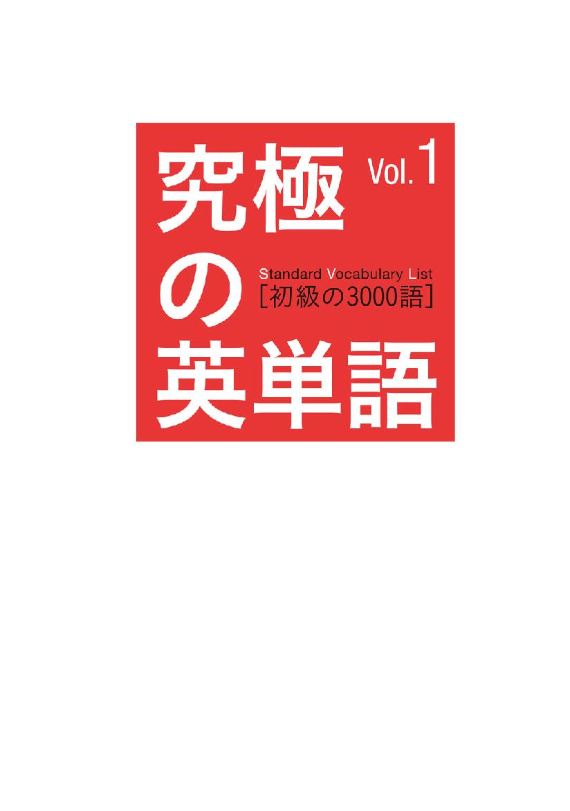
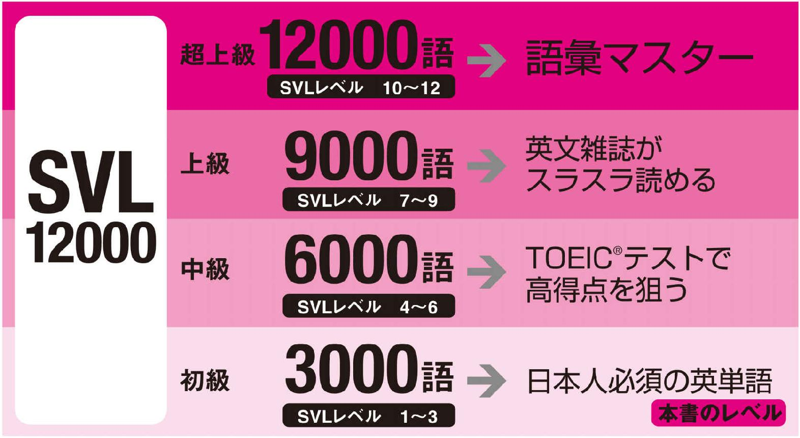
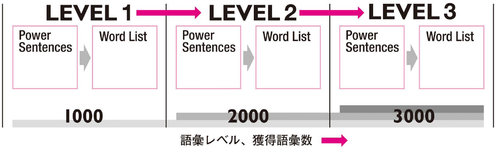
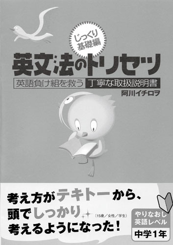
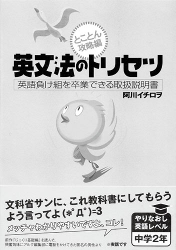
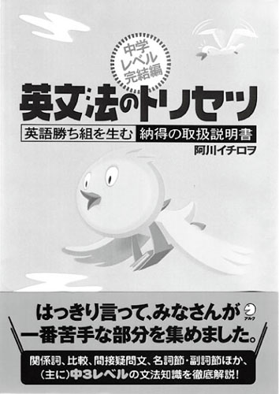

| 究極の英単語 SVL Vol.1 初級の3000語 | |
| アルク英語出版編集部 | |
| (2006) | |

参照項目から元の箇所に戻るには、お使いのビューワーの仕様に従ってください。または一旦目次を表示し、戻りたい箇所の近くの見出しをタップして戻ってください。
Foreword
は じ め に
日本人が覚えるべき「使える英単語」がここに
『究極の英単語SVL』は、アルクが編集した「標準語彙水準12000」（Standard Vocabulary List［略称SVL12000］）をベースにした、全く新 しいタイプの英単語帳です。
SVL12000は、過去30年間にわたり多数の学習教材・書籍に携わってきたアルクが、これまでに蓄積した膨大な英文データや先行資料をもとに、日本人の英語学習者にとって有用な英語語彙1万2000語を選び出し、ネイティブスピーカーの使用頻度や難易度を考慮して12のレベルに区分した、これまでに類を見ない段階別学習語彙リストです。
本書はSVL12000にリストアップされた語彙を本当に使いこなせるようにするために、使い方がよく分かる例文やフレーズ、文法面での注意事項などをふんだんに盛り込みました。
本書は読者の皆様の単語学習スタイルを、単なる暗記から使える語彙の蓄積に変えます。
□
本書の特徴
1
すべての日本人英語学習者が覚えるべき3000語！

標準語彙水準12000（SVL12000）は日本人英語学習者にとって有用な英単語を全12段階にレベル分けした語彙リストです。本書はSVL12000の初級レベルに相当するLEVEL１～LEVEL３の単語3000語を完全収録しました。
この3000語は中学校で習う単語はもとより、TOEIC®テストや英検受験、ビジネス英会話などの基礎固めに絶対必要なもので構成されています。
まさに日本人が最初に覚えるべき英単語といえるでしょう。
2
単語を使いこなすための基本的な文法が分かる！
「単語は覚えたけど、どう使うのか分からない」という状況に陥らないよう、本書は、分かりやすさが評判のベストセラー文法書『英文法のトリセツ』（小社刊）の著者、阿川イチロヲ先生が監修した『超基本！ スピード英文法講座』を収録しています。本書で使用する記号とリンクしたこの講座で、単語を使いこなすための英文法を素早くおさらいできます。
3
「例文」と「単語リスト」をあわせて効率のよい学習！
本書は各レベルとも、Power Sentences（例文）とWord List（単語リスト）という２つのコーナーで構成されています。それぞれ、ネイティブスピーカーが実際によく使う文やフレーズなど、その単語の実際の使用例を多数掲載しました。
Power Sentences
SVL12000の単語を多数含んだ「単語の使い方がよく分かる例文」です。初めて覚える動詞１つに対しPower Sentenceが必ず１つ用意されています。動詞に密接に関係するその他の品詞も一緒に覚えていくことができます。
Word List
同レベル内でPower Sentences中に含まれなかった単語を品詞ごとにリストアップしました。動詞以外の品詞の単語をメジャーな使い方とともに掲載しています。
本書が推奨する学習方法
シンプルに「本書の最初から順に覚えていく」学習をお勧めします。Power Sentencesには、学習中のレベル以上の単語が登場しません。初めて登場する単語には必ず解説が付くので、段階的に無理なく単語を覚えることができます。また、学習を進めていくと、以前登場した重要単語がしばしばPower Sentencesに再登場します。繰り返し触れることで記憶の定着を図ることができます。
無理なく語彙数とレベルをUP！

Power Sentencesの使い方
Power Sentencesでは、動詞を中心に、ほかの品詞の単語も効率よく覚えることができます。
品詞についての詳しい解説はこちら
■動詞のタイプ
動詞をその働きや傾向から「状態・存在」「コミュニケーション」「動作」「行為」「知覚・思考」の５つのタイプに分けました。動詞をイメージで分けることで、記憶しやすくなっています。
■Power Sentences 重要動詞を含んだ例文です。3レベル合計508の例文が本書に収録されています。
１つの例文で、同じレベルの複数の単語を一度に覚えることができるので、効率的です。また、ここでは学習中のレベル以上の単語は使用していません。初めて出てきた単語には必ず解説が付きます。学習を進めていくうち、今まで解説された単語が例文中に再登場する可能性もあります。本当に覚えているかどうか、自然な流れでチェックすることができます。
■見出し語
Power Sentencesに含まれる単語と発音記号です。文の中心となる動詞は背景が灰色になっています。また、数字は見出し語の通し番号です。全3000語中、何語覚えたかの目安にしてください。
■解説
各見出し語の意味を詳しく紹介しています。同じ単語で、品詞違いの意味がある場合は、それも掲載していますので、参考にしてください。動詞に関しては文型や活用、頻出表現など、たくさんの情報を盛り込みました。（各記号の見方はこちらを参照）
■使える★フレーズ
Power Sentences中に出てきた見出し語以外の熟語表現や慣用表現、複数の見出し語が組み合わさってできる表現などを取り上げました。日常的に使うフレーズが多いので、覚えておくと必ず役に立ちます。
Word Listの使い方
動詞以外の品詞で、Power Sentencesに登場しなかった単語がその主な使い方とともに、品詞ごとに掲載されています。
■品詞
単語は品詞別に分かれています。ある単語が実際に使われるとき、主にどの品詞として使われているのかを意識して覚えていきましょう。
■単語のカテゴリー
名詞と形容詞については、単語をカテゴリー別にまとめて並べました。▼マークのある個所から下は、同じカテゴリーの単語が続くことを意味します。単語が使われるシーンを想像しやすくなるので、記憶する際の負担が減少します。
■見出し語
単語と発音記号です。Power Sentencesと同様、通し番号とチェックボックスが用意されています。
■解説
見出し語の意味をそれぞれここで詳しく解説しています。メインの意味以外にも、その他の品詞としての意味をここでチェックできます。（各記号の見方はこちらを参照）
■使い方
その単語は実際どういったフレーズや文でよく使われるのかをここでできるだけ紹介しています。その単語の意味をただ暗記するだけでなく、他の単語とのつながりや関係を一緒に覚えることで「使える英単語」を身に付けることができます。
本書に登場する単語と例文の音声はCD-ROMで販売されています。
『究極の英単語[12000語]音声CD-ROM』\3,000（税抜価格）
（本シリーズVol.1～Vol.4に掲載の全12000単語・2184例文を収録）
音声ダウンロード版もあります。
iTunes Store、amisoft、MORA、楽天などのダウンロードサイトよりお求めください。
※各ダウンロードサイトにより、音声の形式、再生可能なプレイヤーが異なりますので事前にご確認ください。
□
Icons
本書で使用する記号の種類
品 詞 の 記 号
be...be 動詞
自...自動詞
他...他動詞
名...名詞
形...形容詞
副...副詞
代...代名詞
冠...冠詞
前...前置詞
接...接続詞
助...助動詞
...疑問代名詞
 ...疑問副詞
...疑問副詞
間...間投詞
※同じつづりでも、語源の違いにより複数の意味がある場合は、①②......という数字をふって区別できるようにしました。
品 詞 以 外 の 記 号
活...活用
特殊な変化をする動詞の活用です。（活用の解説はこちらを参照）
複...複数形
特殊な変化をする名詞の複数形です。また、不可算名詞（数えられない名詞）もここで記しました。ただし「不可算」という記述がなくても、使われる意味次第で不可算扱いとなる単語もあります。（複数形の解説はこちらを参照）
型...文型
その動詞がとることのできる文型で、ネイティブの使用頻度が高いものを記述しています。（文型の解説はこちらを参照）
Ex...文型の例文
SVC、SVOO、SVOCの文型をとることのできる一般動詞の例文です。
Power Sentences が上記３つの文型のうちいずれかに該当している場合は、その文型の例文の記載はありません。
頻...頻出表現
その動詞を使った言い回しや熟語で、ネイティブがよく使うものを記述しました。"call ... up"（...に電話をかける）とある場合は"call up..."に置き換え可能です。ただし ... が代名詞の場合は、"call ... up"の形しかとれません。（例："call him up"は可、"call up him"は不可）
！...注意点
注意したい発音、アクセント、文型、文法事項はこのマークで表します。また、TOEIC®テストでよく使われる単語にもこのマークを付加しました。
「！他TOEIC 頻出」と書いてある場合、その単語は特に「他動詞」としてTOEIC®テストに頻出することを意味します。
超基本! スピード英文法講座
Part1
「英語の骨組み」編
これから覚える英単語をうまく使いこなせるように、まずは英文法の知識をおさらいしておきましょう。
↓品詞
言葉は、その特徴によってグループ分けされます。その言葉のグループを「品詞」と呼びます。品詞には次のようなものがあります。
名詞......主に「人やものの名前」を表す品詞
例：desk（机）、rice（米）、tennis（テニス）
動詞......主に「動作や状態」を表す品詞
例：eat（食べる）、walk（歩く）、stay（いる）
形容詞......主に「ものの様子」を表す品詞
例：big（大きい、大きな）、nice（すてきな）、cute（かわいい）
なお、品詞のことを英語ではpart of speech（言葉の部品）と呼びます。つまり、言葉をその特徴によって分けていくと、「品詞」という小さな部品に突き当たるというイメージですね。英語の場合、単語ごとに品詞が決まっている（ただし、１つの単語に複数の品詞の役割がある場合も多い）ので、「英単語を正しく使おう！」と思ったら、まず品詞ごとの特徴をつかむのが近道。中には英語にしかない特殊な品詞、日本語にも英語にもあるけど、使い方や考え方が必ずしも同じではない品詞もあります。そうした品詞は後ほど個別に紹介するのでお楽しみに。
↓英語のカタチその1
それぞれの品詞の話に入る前に、まず英語の文のカタチについての説明から。
英語の文の意味の大部分は単語の順番（＝語順）で決まります。その中でも最も重要なのが、
主語＋文の結論
というカタチで、英語では（一部の例外を除いて）この〈主語＋文の結論〉というカタチが文の中に必ず一つ入ります（２つあったら間違い）。
「主語」というのは、「その文の主役、動作をする人・もの」のことで、日本語の文で言うと、「...は」とか「...が」に当たります。主語の役割をするのは基本的に名詞です。
「文の結論」というのは、日本語の文で言うと、「...する」とか「...だ」のような文の終わりに入る内容のことで、英語では文の結論を言うときに必ず動詞が必要になります。ただし、動詞だけでは不十分な場合（「文の結論＝動詞＋その他の品詞」となる場合）もあるので、少し注意。
つまり、〈主語＋文の結論〉は、品詞で言うと、〈名詞＋動詞（＋その他の品詞）〉ということです。ただし、主語は１つの英文に１つだけですが、名詞そのものは主語以外の役割でも使います。ですから、英語の文には原則として必ず〈主語＋動詞〉というカタチが１つ入ると覚えておくのが最も簡単だと思います。
↓英語のカタチその2
〈主語＋動詞〉はあくまでも「英語の文の中で最も中心的な役割を果たす最小単位のユニット」で、実際の英文は、〈主語＋動詞〉のほかに、もっとたくさんの言葉が組み合わさって表わされるのが普通です。
最もよく見られる組み合わせは、
１．I know him.（私は彼を知っている。）
のような〈主語＋動詞〉の後ろに名詞が１つだけ続く組み合わせです。一方で、
２．I lookedat him.（私は彼を見た。）
のように、〈主語＋動詞〉の後ろに別の語を挟んで名詞が続く組み合わせもあります。英語の動詞には、「後ろに名詞をそのまま続けられる動詞（他動詞）」と、「後ろに名詞をそのまま続けられない動詞（自動詞）」とがあるからです。そして、自動詞の後ろに名詞を続けようと思ったら、２のat のような「前置詞」と呼ばれる語が必要になります（前置詞についてはこちらを参照）。
↓動詞その1（自動詞と他動詞）
動詞は、主に次のようなタイプに分かれます。
① 自動詞としてしか使えない動詞（後ろに何も続けなくてもよいが、名詞を続けようと思ったら前置詞が必要）
② 他動詞としてしか使えない動詞（後ろに必ず名詞を続けなければならない）
③ 自動詞としても他動詞としても使える動詞
④ 自動詞としても他動詞としても使えるが、どちらの用法で使うかによって、意味が異なる動詞
上記４タイプの中で特に注意が必要なのは①、②、④ です。日本語には、英語のように「動詞によって後ろに続くカタチが変わる」という性質がないせいか、
× 自動詞としてしか使えない動詞なのに、後ろに名詞をそのまま続けてしまう
× 他動詞としてしか使えないのに、後ろに名詞を続けない
× うっかり前置詞を入れたり、入れなかったりで、結果的に自分の意図と違う意味になってしまっている
というミスをする人が非常に多いので、注意してください。
動詞の後ろに前置詞なしで続く名詞（つまり、他動詞の後ろの名詞）は、役割的に動作の目的・対象になる（「...を・に」という意味になる）ことから、「目的語」と呼ばれます。
↓動詞その2（be動詞）
日本語の文には、
１．その花は（主語） 美しい（文の結論＝形容詞）。
２．ボクは（主語） 先生だ（文の結論＝名詞）。
のように、文の中に動詞が一つもないケースもたくさんありますが、英語の場合、文の結論を言うときには必ず動詞も一緒に使うのが原則です。したがって、前ページのような日本語の文を英語で言うときには、「特に意味はないけど、とりあえず分類上は動詞」という扱いになる特別な動詞＝be動詞というものを英文に補ってやる必要があります（be動詞と区別する意味で、be動詞以外の動詞を一般動詞と呼びます）。
１．The floweris beautiful.（その花は美しい。）
２．Iam a teacher.（ボクは先生だ。）
上の文の is や am が be動詞です。be動詞はこのように主語が何かに応じて、カタチが変わります。
●主語が I（私）の場合はam●主語が２つ以上（主語に -(e)s がついている場合）、あるいは主語が you（あなた、あなたたち）、we（私たち）、they（彼ら、それら）の場合はare●それ以外の場合はis
be動詞の後ろには形容詞、副詞などいろいろな品詞が入ります。名詞が続く場合もありますが、それは目的語とは呼びません。目的語（動作の目的・対象となる名詞）と be動詞の後ろに続く言葉では役割が異なるからです。be動詞の後ろにある言葉は、be動詞を挟んで前にある名詞（＝主語）を補って説明する役割であり、「補語」と呼ばれます。
↓動詞その3（いろいろな動詞）
動詞の中には、be動詞ではないが、後ろに補語を続けられる特殊な一般動詞もあります。ただし、数はあまり多くありません。become、get、look、remain、taste、turn などごく一部なので、この本でひとつひとつ覚えていけば十分だと思います。
「動詞の後ろの名詞が目的語なのか補語なのか気になる」という人は、動作の目的・対象になるのが目的語で、主語とイコールの関係になるのが補語なので、それを１つの目安にすればいいでしょう。とはいえ、補語が名詞になる動詞は、be動詞、become くらいで、それ以外は補語が形容詞となるものがほとんどです。
目的語の数は、基本的に１つの文に１つですが、中には〈動詞＋目的語＋目的語〉という順番で後ろに目的語を２つ続けることができる特別な他動詞や、〈動詞＋目的語＋補語〉という順番で後ろに目的語と補語の両方を１つずつ続けることができる特別な他動詞もあります。ただし、どちらも数は少ないので、やはり１つ１つ覚えていけば、十分に対応できるはずです。
↓文型
英文法の世界では、主語をS、動詞をV、目的語をO、補語をCという記号で表します。ここまでに登場した文にこれらを当てはめると次の通りです。
●自動詞（後ろに名詞を続けようと思ったら前置詞が必要な動詞）を使う文
Ilookedat him. （私は彼を見た。）→SVのカタチ
＊SVの文は、主に「Sは...する」という意味になる。
●他動詞（後ろに必ず名詞を続けないといけない動詞）を使う文
Iknowhim. （私は彼を知っている。）→SVOのカタチ
＊SVOの文は、主に「SはOを...する」という意味になる。
●be 動詞を使う文
The flowerisbeautiful. （その花は美しい。）→SVCのカタチ
＊SVCの文は、主に「SはC（の状態）だ／になる」という意味になる。
さらに、こうした記号を使って、後ろに目的語を２つ続けることができる特別な他動詞と、後ろに目的語と補語の両方を１つずつ続けることができる特別な他動詞を使う文を表すと次のようになります。
●〈動詞＋目的語＋目的語〉
HetaughtherEnglish （彼は彼女に英語を教えた。）→SVOOのカタチ
＊このカタチの文は、動詞の直後の目的語が必ず「人を指す名詞（あるいは人に準じる名詞）」でなければならない。
＊SVOOの文は、主に「SはOにOを...する」という意味になる。
●〈動詞＋目的語＋補語〉
Hemadeherangry （彼は彼女を怒らせた。）→SVOCのカタチ
＊SVOCの文は、主に「SはOをC（の状態）にする」という意味になる。
名詞も補語になることができるので、SVOOとSVOCのどちらも〈主語＋動詞＋名詞＋名詞〉という見た目は同じカタチになることもあり得ます。もし迷ったときには２つの単語の関係を考えるようにすればよいでしょう。補語は前にある名詞とイコールの関係になります。上のSVOOの例の場合、「彼女＝英語」の関係は成り立たちませんが、SVOCの例の場合、「彼女＝怒った状態」の関係が成り立ちます。
SVOO、SVOCの文のカタチが可能な動詞はどちらもかなり限られているので、覚えてしまえば文型で悩む必要はほとんどないはずです。
英語は、文のカタチ（＝文型）が文の意味と密接な関係を持つ言語です。文型を考える上での骨組みともいえる最も大切な要素が S、V、O、C の４つであり、この４つの要素さえしっかり把握できれば、英語の文の意味を大きく取り違えることはありません。逆に言うと、文型とは文中の S、V、O、C だけに注目し、それ以外はあえて無視する考え方ともいえます。
先ほどのSVの例文が、
Ilookedat him. （私は彼を見た。）→SVのカタチ
となっており、at him という部分に何の下線も記号もついていないのは、これがS、V、O、C のいずれでもないからです。特に一見してどういうつながりなのか分かりづらい複雑な英文の意味を考える際に、文中の余計な要素を省き、S、V、O、C だけに注目する文型の視点が役立ちます。
Part2
「各品詞の特徴」編
ここからは本書で使われる記号や、単語を覚えるときの注意点について詳しく説明します。品詞や文法事項ごとに解説していきますので、学習前にしっかりおさえておいてください。
be自他型Ex頻
↓動詞
ここまでに述べた通り、英語は文のカタチ（＝文型）によって、大まかな意味が決まる言語です。そして、文型は動詞によって決まります。この動詞を使ったら、この文型はアリで、この文型はナシという具合に、どんな動詞を使うかで文のカタチ（文型）は決まるのです。正しく英語の文を組み立てようと思ったら、動詞と文型の関係をしっかり覚えておくことが非常に重要になります。
本書では英単語を正しく使いこなしてもらうために、動詞や文型についての情報を充実させています。次の通りです。
●be動詞はbeという記号で表記
●自動詞として使われる一般動詞の場合、自という記号の後ろにその意味を表記
●他動詞として使われる一般動詞の場合、他という記号の後ろにその意味を表記
自動詞、他動詞の両方の使い方ができる動詞の場合、その両方の意味が記されています。自動詞、他動詞のどちらかの使い方しかできない動詞、自動詞の場合と他動詞の場合で意味が変わってくる動詞には特に注意してください。
●型という記号の後ろで、その動詞をどんな文型で使うことができるかを紹介
SVOO、SVOCのような特別な文型が可能で、ネイティブスピーカーが実際にその文型で使用する可能性が高いものについては、Ex の記号の後に例文をあげて説明しています。be動詞以外で後ろに補語を続けられる（SVCの文型が可能な）特別な一般動詞も、このコーナーを見ればすぐ分かります。
●頻という記号の後ろで、その動詞を使った頻出表現を紹介
英単語は１単語単位ではなく、実際にはいくつかの単語がまとまったカタチで使われるものです。その動詞がどんな単語とセットでよく使われているのかを覚えておけば、「読む・聞く」場合はもちろん、「書く・話す」場合にも大きな効果を発揮します。
名複
↓名詞
英語の名詞は、英文中の主語（S）、目的語（O）、補語（C）の位置に入れることができます。それ以外の英文中のどこかに名詞を入れようと思ったら、接着剤に当たる前置詞を補って、その後ろに入れる必要があります（前置詞はこちらを参照）。
日本語の名詞と英語の名詞の最大の違いは、「英語の名詞の方が、数えられるかどうか、数えられるのならその数はいくつか、というポイントに厳しい」という点です。具体的には、
① その名詞が１つだけ（単数）の場合には、基本的にその名詞の前にa をつける（ただし、その名詞が母音で始まる場合には、an とする）
⇒a book（１冊の本）、an apple（１つのリンゴ）
② その名詞が２つ以上（複数）の場合には、その名詞の後ろに -(e)sをつける
⇒ books（２冊以上の本）、apples（２個以上のリンゴ）
③ ただし、数えられない名詞（不可算名詞）の場合には、a(n) も -(e)s もつけない
⇒ water（水）、Japan（日本）などの固有名詞
本書では、その単語が名詞である場合、名 という記号で表しています。また名詞の中には、man（複数形は men）、tooth（複数形は teeth）のように、複数形が不規則なカタチになるものや、不可算名詞（数えられない名詞）で、furniture（家具）、baggage（手荷物）など、日本人の感覚では「えっ、数えられるんじゃないの？」と思ってしまいそうな紛らわしいものがあります。そのような場合は複 という記号を設けて説明していますので参考にしてください。
冠
↓冠詞
「冠詞」とは名詞の前に置かれ、その名詞を説明する特殊な品詞のこと。英語の冠詞はa(n) とthe の２つしかありませんが、日本語にはない、英語ならではの品詞であるせいか、日本人はうまく使えないことが多いようです。冠詞の使い方は次の通りです。
●a(n) の使い方
① 名詞が１つだけ（単数）の場合に、前につける（母音ではじまる名詞の場合には、an とする）
②新しく話題に出てきた名詞につける。ただし、新しく出てきた場合であっても、その名詞が複数の場合には、a(n) をつけずに複数形にする
③ その名詞が１つだけで、かつ「その...」と特定できない（もしくは特定する気がない）場合につける
●the の特徴
① その名詞が単数だろうと複数だろうと、「その...」と特定できる（もしくは特定したい）場合には、その名詞の前につける（普通は[ðə]と発音するが、母音で始まる名詞の前につく場合は、[ði]と発音する）
②すでに話題に出ている名詞は必然的に特定されることになるので、the がつく
③世の中に１つしかないもの（earth［地球］など）も、特定可能なので（それ以外のものを指しようがないため）必然的に the がつく。
名詞が１つだけなら、基本的に a か the どちらかの冠詞がつきます。ただし、固有名詞には、冠詞をつける必要はありません。名詞が２つ以上（複数）の場合には a は不要で、「その...」と特定できる場合のみ、the をつけます。
とはいえ、特定／不特定という感覚は究極的には人それぞれであり、a / the の線引きが非常にあいまいになるケースも少なくありません。
本書では、冠詞は冠 という記号で表しています。
代
↓代名詞
「私」「あなた」「彼」「これ」「それ」のような、名詞の代わりをする語を「代名詞」と呼びます。代名詞は名詞のバリエーションの１つと考えてOKです。最大の特徴は、「主語の位置（「...は・が」という意味）ならこのカタチ、目的語の位置（「...に・を」という意味）ならこのカタチ、名詞の前（「...の」という意味）ならこのカタチ......」という具合に、文中のどの位置に入るか（文中での意味・役割）によって、カタチが変わるということです。具体的には次の通りです。
| 主語 （...は／が） |
名詞の前 （...の） |
目的語 （...に／を） |
|
| 私 | I | my | me |
| あなた（たち） | you | your | you |
| 彼 | he | his | him |
| 彼女 | she | her | her |
| それ | it | its | it |
| 私たち | we | our | us |
| 彼（女）ら、それら | they | their | them |
＊「私は」という意味のIは、常に大文字。
なお、代名詞が前置詞の後ろに入る場合、目的語の位置に入る場合と同じカタチになります。
本書中では、その単語が代名詞である場合、代 という記号で表しています。
↓主語と動詞の関係
英語の主語と動詞には、主語となる名詞の数、代名詞の種類に合わせて動詞のカタチが変化するという密接な関係があります。次の通りです。
●一般動詞の場合
・主語が複数（主語に -(e)s がついている）、あるいはI、you、we、they の場合はそのままのカタチ
例：泳ぐ＝ swim、行く＝ go、食べる＝ eat
・それ以外の場合は、後ろに-(e)sをつける
例：泳ぐ＝ swims、行く＝ goes、食べる＝ eats
＊ study → studies のように、y を取って ies をつけるものなど、動詞によって変化に何種類かのパターンがある。
●be動詞の場合
・主語が I の場合はam・主語が複数（主語に -(e)s がついている）、あるいは主語がyou、we、they の場合はare・それ以外の場合はis
一般動詞の後ろに -(e)s がついたカタチを文法用語では、三人称単数現在と呼びます。
なお、三人称単数現在への変化は be動詞の一部を除いて、動詞が現在形である場合のみの変化です。動詞の時制については次を参照してください。
活
↓時制
英語では、時間の感覚を主に動詞のカタチを変えることで表します。このことを時制と呼びます。その代表例が現在形と過去形です。
●現在形
最も基本的な動詞のカタチで、原形とも呼ばれます（be動詞の原形はbe という特別なカタチ）。名前は「現在」形ですが、実際には現在・過去・未来にとらわれない、いつでも当てはまるようなことを表す際に使われるカタチです。現在形は、主語となる名詞の数、代名詞の種類に合わせて動詞のカタチが変化する点に注意。
例：She knows everything.（彼女は何でも知っている。）
＊現在だけでなく、過去、未来においても「知っている」が当てはまる。
●過去形
「...だった」「...した」のような過去のことを表す動詞のカタチです。英語の過去形は、動詞の後ろに -(e)d をつけたカタチが普通ですが、have ⇒had やmake ⇒made のように、過去形が特殊なカタチになる動詞も少なくありません。また、過去形は、主語に合わせて動詞のカタチを変えなくてもよいのが原則ですが、be動詞の過去形に限っては、主語が単数ならwas（現在形は am / is）、主語が複数ならwere（現在形は are）という具合に変化します。
例：He looked at the sky. （彼は空を見た。）
Sheknew everything.（彼女は何でも知っていた。）
＊ knew は know の過去形
また英語では、現在形、過去形以外にも次のような動詞のカタチ（もしくは組み合わせ）で時間感覚を表します。
●進行形
動作について、ピンポイントで「...しているところだ・だった」と言いたい場合に使う表現で、〈be動詞＋動詞 ing〉というカタチになります。現在のみに当てはまる動作を言うときには、現在形ではなく、現在進行形で表すのが普通です。
例：Heis looking at the sky.（彼は空を見ている。）⇒現在進行形
Hewas looking at the sky.（彼は空を見ていた。）⇒過去進行形
●完了形
「過去から現在まで」のような時間的な幅がある動作・状態を表す際に使う表現で、〈have / had ＋動詞の過去分詞（形）〉というカタチになります。過去分詞（形）は動詞の過去形と同じこともありますが、動詞によってさまざまです。１つ１つ覚えていくのが一番でしょう。なお、完了形を日本語に訳す場合、「ずっと...している・していた⇒継続」「前に...をした（だから、今もその経験がある）⇒経験」「すでに...した（だから今はもう完了している）⇒完了」など、いろいろな解釈の可能性があるので注意が必要です。
例：Ihave knownhim for three years.（彼を３年間ずっと知っている。⇒彼と知り合って３年になる。）⇒現在完了形
Ihad known him for three years.（彼を３年間ずっと知っていた。⇒彼と知り合って３年になっていた。）⇒過去完了形
本書では、動詞を紹介する際に、活 というマークの後ろで、不規則なカタチになる過去形、過去分詞（形）を紹介しています。
なお、完了形で登場した過去分詞（形）は、受動態と呼ばれる文のカタチでも使います。時制、そして受動態には、ここでは書ききれなかった注意点がたくさんあります。自信のない人は『英文法のトリセツ』もご覧になってください。
前
↓前置詞
英文中の主語（S）、目的語（O）、補語（C）以外の位置に名詞を入れようと思ったら、〈前置詞＋名詞〉というカタチにして文に入れる必要があります。前置詞は、本来なら名詞が入らないところに名詞を入れるための接着剤とも言えるでしょう。ただし、前置詞が厄介なのは、その英文と名詞をどういう関係でくっつけるかによって、いろんな種類を使い分けなければならないというところです。前置詞の代表例は次の通りです。
●at ... →「（比較的狭い場所、範囲を現す名詞の前につけて）...で、...に」、「（時刻の前につけて）...時に」など、「点」を指すイメージ
例：I arrivedat the stationat ten.（私はその駅に、10時に着いた。）
●in ... →「（比較的広い場所、範囲を現す名詞の前につけて）...で、...に」「（季節や月の前につけて）...に」など、何かに囲まれて限定されているイメージ
例：They arein Japanin（the）summer.（彼らは、夏（には）、日本にいる。）
●about ... →「...について、...に関して」、「およそ...、約...」
例：He knows a lotabout it.（彼は、それについてよく知っている。）
●to ... →「...へ、...に向かって」のように、方向や到達点を示すイメージ
例：She goesto school on Sundays.（彼女は日曜日に学校へ行く。）
●with ... →「...（道具）で、...を使って」のような手段や、「...と（一緒に）、...がセットになっている、...付きの」のような同伴・付加を表すイメージ
例：I went to the parkwith my father.（ボクはお父さんと公園へ出かけた。）
●on ... →「...の上に、...に」のように、何かの上にくっついているイメージ（上に限らず天井や壁などでもくっついていれば on を用いる）。またはon Sunday（日曜日に）のように、｢曜日や、特定の日時｣を表すときにも使う
例：My book ison the desk.（私の本が机（の上）にある。）
●under ... →「...の下に」のように、何かが位置的に下の方にあるイメージ
例：My cats areunder the table.（私のネコたちは机の下にいます。）
●for ... →「...のための・に」のような目標、「...へ向かって」のような方向、「...の間」のような時間、期間などを表すイメージ
例：This is a presentfor you.（これはあなたのためのプレゼントです。）
●of ... →基本的には所有、所属、部分、原因・理由などを表し、日本語では「...の」という訳になることが多いが、イメージが多様すぎて日本人には特に分かりにくい前置詞
例：He knows the meaningof the word.（彼はその言葉の意味を知っている。）
●from ... →「...から」のように、出発点や出身、起源などを表すイメージ
例：Maki comesfrom Saitama.（マキは埼玉から来ています。［＝マキは埼玉出身です］）
●by ... →「...の近くに、...のそばに、...のそばを通って」のような近接、「...によって、...で」のような手段や方法、動作主、あるいは「...までに」のような時間などの期限を表すイメージ
例：He went to the store by car.（彼は車でその店に行った。）
ここでは、前置詞の中でも特に使用頻度が高く、かつ日本人にはそのイメージ、使い分けの感覚がつかみづらいものを取り上げました。本書では、このような前置詞を、前 という記号で紹介しています。「どんな前置詞を入れるべきか？」という使い分けの感覚を身に付けるのは難しいと思いますが、「どこで前置詞を使うべきか？」という感覚はすぐに身に付けられます。焦らず少しずつ慣れていって、いろいろな前置詞を使い分けられるようになってください。
↓否定文・疑問文
英語では一般動詞を使う文と、be動詞を使う文とでは、否定文・疑問文の作り方が違います。次の通りです。
●be動詞を使う文の否定文は、be動詞の後ろに notを入れる are not ⇒aren't、is not ⇒isn'tのように縮めて使うことも多い
例：Sheisn't a teacher.（彼女は教師ではない。）
●be動詞を使う文の疑問文は、be動詞を主語の前に出す
例：Is she a teacher?（彼女は教師ですか？）
一般動詞を使う文の否定文は少し複雑です。
●一般動詞を使う文の否定文は、
① 主語に -(e)s がついている（複数）、あるいは主語が I、you、we、they の場合（つまり、普通の文で一般動詞に -(e)s がつかない場合）はdo not（縮めるとdon't）を主語と動詞の間に入れる。
② それ以外の場合（つまり、普通の文で一般動詞に -(e)s がつく場合）はdoes not（縮めるとdoesn't）を主語と動詞の間に入れる
例：Shedoesn't know him.（彼女は彼を知らない。）
③ 過去形の場合、主語に関係なくdid not（縮めるとdidn't）を主語と動詞の間に入れる
●一般動詞を使う文の疑問文は、
① 主語に -(e)s がついている（複数）、あるいは主語が I、you、we、they の場合（つまり、普通の文で一般動詞に -(e)s がつかない場合）はdo を主語の前に置く
② それ以外の場合（つまり、普通の文で一般動詞に -(e)s がつく場合）はdoes を主語の前に置く
例：Does she know him?（彼女は彼を知っているの？）
③ 過去形の場合、主語に関係なくdid を主語の前に置く
否定文の場合も、疑問文の場合も、do、does、didを使う場合は、一般動詞は原形になるという点に注意してください。
助
↓助動詞
助動詞は文字通り「動詞を助ける品詞」であり、「...できる」「...だろう」のように動詞に意味をプラスする役割を果たします。助動詞を使う文では、〈助動詞＋動詞の原形〉というカタチで、必ず助動詞と一緒に動詞も英文の中に入れる必要があります。主語が何であろうと、時制が何であろうと、助動詞とセットで使われる動詞は基本的に原形になる点にも注意。また、助動詞を使う文を否定文にする場合は助動詞の後ろに not を、疑問文にする場合は助動詞を主語の前に移動させます。代表的な助動詞は次の通りです。
●will
「これから...する」という、未来を表す助動詞。will not を縮めるとwon't となることに注意
例：Itwill rain tomorrow.（明日は雨だろう。）
Iwon't buy this book.（ボクはこの本を買わないぞ。）
●can
主に「...（すること）ができる」「可能性がある」という意味を表す。否定文ではcannot、もしくはcan't というカタチを使い、can not のように can と not を離して書くことはできない
例：Kenichican speak Russian.（ケンイチはロシア語を話せる。）
Itcan't be true.（そんなのあり得ない！）
●may
「...かもしれない」という「推測・推量」、「...してもよい」という「許可」を表す
例：Hemay love her.（彼は彼女を愛しているのかもしれない。）
May I use your car today?（今日、あなたの車を使ってもいいですか？）
●must
「...しなければならない、...する必要がある」という「義務」、「...に違いない」という「確信」などを表す
例：Studentsmust go to school.（学生は学校に行かなければならない。）
Shemust love him.（彼女は彼を愛しているに違いない。）
●should
「当然、もちろん」という意味を表す助動詞。must よりは should の方がやわらかく、「...すべきだ、...した方がいい、...なはずだ」のような忠告や提案を表す。
例：Youshould see a doctor.（あなたは医者に診てもらった方がいい。）
本書では、このような助動詞を、助 という記号で紹介しています。
形
↓形容詞
「形容詞」は名詞を説明する役割の品詞です。形容詞が名詞を説明する方法には２通りあります。
①名詞の前に置いて、その後ろに続く名詞を説明する方法（限定用法）
例：long hair（長い髪）、beautiful long hair（キレイな長い髪）
＊２番目の例のように、複数の形容詞で１つの名詞を説明することも可能。
②補語として、その前にある名詞を説明する方法（叙述用法）
例：Her hairisbeautiful.（彼女の髪は美しい。）
＊補語となる形容詞（beautiful）が be動詞を挟んで前にある名詞＝主語を説明している。
例：Shekeptthe roomwarm.（彼女は部屋を暖かくしておいた。）
＊補語となる形容詞（warm）が前にある名詞＝目的語（the room）を説明している。
①のパターンでは、〈形容詞＋名詞〉という１セットが名詞１つ分の扱いになり、主語、目的語、補語、前置詞の後ろなど、名詞を入れられるところならどこへでも、この1セットをそのままスッポリ入れることができます。
さて形容詞の中には、上の ①、② の両方の使い方ができるもの（限定用法と叙述用法の両方が可能な形容詞）と、① もしくは ② のどちらかの使い方しかできないもの（限定用法、叙述用法のどちらか一方だけが可能な形容詞）があります。本書では、形容詞を紹介する際に形 という記号で表し、限定用法でしか使えない形容詞には「限定用法のみ」、叙述用法でしか使えない形容詞には「叙述用法のみ」と記しているので、ぜひ参考にしてください。
副
↓副詞
英語の「副詞」は動詞を説明したり、形容詞を説明したり、ほかの副詞を説明したり、あるいは文全体を説明したりと、役割が非常に多様です。
「副詞というカテゴリーに分類される言葉であれば、そのまま単独（前置詞ナシ）で英文の中に入れることができる」
というのが唯一の共通点で、実際には英文中での意味、働きによって、副詞はいくつかのグループに分かれると考える方が効率的だと思います。代表的な英語の副詞のグループは次の通りです。
●「場所」を表す副詞
here（ここで）、there（そこで）など。基本的に、動詞の後ろに入る。ただし、「〜を...する」という意味の英文の場合は、「〜を」という意味の名詞（目的語）の後ろに入ることが多い
例：She didn't comehere.（彼女は、ここに来なかった。）
I bought a ticketthere.（ボクはチケットをあそこで買った。）
＊位置に注意
●「時」を表す副詞
today（今日）、then（そのとき）など。基本的に「時」を表す表現は名詞としても副詞としても使える。つまり「時」を表す表現は、名詞として英文の主語、目的語になることもできるが、副詞として（主語や目的語でなくても）前置詞なしで英文中に入れることもできるということ。位置は基本的に、文の終わりか文の頭
例：I went thereyesterday.（ボクは昨日、そこへ行った。）
＊ yesterday は副詞
Yesterday was her birthday.（昨日が彼女の誕生日だった。）
＊ yesterday は名詞（主語の役割）
●「頻度」を表す副詞
often（よく、しばしば）、always（いつも）など。位置は基本的に、一般動詞を使う文の場合は一般動詞の前、be動詞を使う文の場合は be動詞の後ろ
例：Shealways goes there.（彼女はいつも、そこへ行く。）
He isalways kind.（彼はいつも親切だ。）
●「どんなふうに...するのか」を表す副詞
well（上手に）、hard（一生懸命）など。位置は基本的に、動詞の後ろ。ただし、「〜を...する」という意味の英文の場合は、「〜を」という意味の名詞（目的語）の後ろに入ることが多い
例：She workshard for her children.（彼女は、子どもたちのために一生懸命働いている。）
I don't know himwell.（彼のことをよく知らない。）
＊位置に注意
●「程度・強調」を表す副詞
very/much（とても）、so（非常に、そんなに）、almost/nearly（ほぼ）など。形容詞や副詞を説明することが多い
例：She worksvery hard.（彼女は、とても一生懸命働く。）
●ニュアンス追加の副詞
run away（走り去る）のaway、get up（起きる）のup など、動詞とセットで使われて、その動詞が表す動作や状態に何らかのニュアンスを追加する副詞。ただし、このタイプの副詞には前置詞なのか副詞なのか判断が難しいものも多いので、品詞はあまり気にせずに動詞とセットで覚えてしまう方がよい。位置は基本的に動詞の直後だが、〈動詞＋副詞〉の組み合わせが、「〜を...する」という意味になる場合は、「これを（this）、それを（it）、あれを（that）」などの代名詞を間に入れることもある
例：Shegets up at seven every morning.（彼女は毎朝、７時に起きる。）
Hethrew itaway.（彼はそれを投げ捨てた。）
＊位置に注意
●その他の副詞
副詞は、動詞でも名詞でも形容詞でもない品詞を集めた統一感のないカテゴリーなので、一見して何だか分類に困るような単語は副詞である可能性が高い
本書ではこのような副詞を副 という記号で表しています。
↓疑問詞
本書では、「誰？」「いつ？」「どこ？」「何？」「なぜ？」と尋ねる際に使われる単語は、「疑問詞」というカテゴリーに分類します。「疑問詞」に分類される単語は、文の中で同時に代名詞、副詞などの役割をします。
●代名詞の役割をする疑問詞（疑問代名詞）
what（何？）、who（誰が？）、whose（誰の［もの］？）、whom（誰を？）、which（どれ、どっち？）
こちらでも解説した通り、代名詞は、文中でどんな役割をするか（文中のどの位置に入るか）によって、カタチが変わる品詞です。「誰」という意味を表す疑問代名詞も、文中で主語（誰が）の役割を果たすならwho、目的語（誰を）の役割を果たすならwhom（whoで代用する場合が多い）、「誰の」という意味で名詞の前に置かれるならwhose のように、役割によってカタチが変わります。
ただし、what、which は、このように役割に応じてカタチが変わることはありません。what というカタチ１つで「何は、何を、何の」、which というカタチ１つで「どれが、どれを、どれの」という意味を表せます。
●副詞の役割をする疑問詞（疑問副詞）
when（いつ？）、where（どこ？）、why（なぜ？）、how（どんなふうに？、どれくらい...？）
副詞というカテゴリーに分類される以上、これらの疑問詞は、
「そのまま単独（前置詞ナシ）で自由に英文の中に入れられる」
という使い方ができます。この中で、「どれくらい...」を意味する how だけは、他の形容詞や副詞を説明する役割もできます（こちら参照）。
疑問詞を使う疑問文は、疑問詞が一番前になります。疑問詞から後ろは疑問文の語順になるのが普通ですが、疑問代名詞が文の主語になる場合に限っては、疑問詞から後ろが肯定文の語順になります。
例：Where did you go yesterday?（あなたは昨日、どこへ行きましたか？）
＊疑問副詞が使われる場合には、必ずその後ろが疑問文の語順になる。
Who lives here?（誰がここに住んでいるの？）
＊疑問代名詞の who が主語の役割をしている。疑問代名詞が主語になる場合、疑問詞を含めて肯定文の語順〈疑問詞（＝主語）＋動詞（＋その他）〉になることに注意。
what book（どんな本）、which color（どっちの色）、how old（何歳）のように疑問詞が別の語とくっついたカタチになることもあります。what、which、whose のような疑問代名詞は名詞とくっつきますが、疑問副詞の how だけは形容詞や副詞とセットになります。また、こうした〈疑問詞＋ほかの語〉という組み合わせは、セットで文の頭に入ります。
例：What color do you like?（何色が好きですか？）
＊「何の...」を意味する疑問代名詞の what が color という名詞とくっついて、文頭に出ている。
How old is he?（彼は何歳ですか？）
＊「どれくらい...」を意味する疑問副詞の how が old という形容詞とくっついて、文頭に出ている。
本書では、疑問代名詞を取り上げる際には、疑問副詞を取り上げる際には という記号で紹介しています。
接
↓接続詞
「接続詞」とは文字通り、つなぐ（接続する）役割をする品詞のこと。英語は原則的に１つの文に主語と動詞の組み合わせが１つだけですが、接続詞を用いた場合のみ、例外的に主語と動詞の数を２つ以上にすることが可能です。接続詞には次の２種類があります。
① 等位接続詞
名詞と名詞、動詞と動詞、形容詞と形容詞、〈前置詞＋名詞〉と〈前置詞＋名詞〉など、同じ要素をつなぐことができる接続詞。単に語と語、句（＝複数の語のまとまり）と句だけでなく、節（＝〈主語＋動詞〉を含むカタチ）と節もつなぐことができる。代表的な等位接続詞はand、but、or など
例：He likes applesand bananas.（彼はリンゴとバナナが好きだ。）
＊ and は「AとB」のように、２つの要素を対等に結ぶ。
He likes applesbut doesn't like bananas.（彼はリンゴは好きだが、バナナは好きではない。）
＊ but は「AだけどB」のように、対照的な２つの要素を対等に結ぶ。ここでは「リンゴが好き」、「バナナは好きではない」という対照的な２つの内容が結ばれている。
Heor his brother will go there.（彼か彼の兄弟がそこへ行くだろう。）
＊ or は「AまたはB」のような選択の対象を対等に結ぶ。ここでは he と his brother という２つの主語が結ばれている。
② 従属接続詞
等位接続詞とは異なり、基本的に節と節だけをつなぐ接続詞。また従属接続詞によって結び付けられる２つの節は、カタチの上では同じ〈主語＋動詞〉を含むカタチだが、意味の上では決して対等な関係ではなく、主節と従属節という２つのその節に分かれる。従属節は〈従属接続詞＋S＋V（＋その他）〉というカタチになり、この１セットが大きな名詞、副詞のような役割で主節にくっつくのが特徴。代表的な従属接続詞は次の通り
●that
〈that S＋V（＋その他）〉というカタチで、「...ということ」という意味を表す。このカタチが１セットで大きな名詞の役割を果たし、文の主語や目的語（O）、補語（C）になったりする。なお、このような役割を果たす（従属）節を名詞節と呼ぶ
例：I knowthat you are busy.（あなたが忙しいことは分かっています。）
＊ that で始まる１セットが名詞として know の目的語（O）になっている。
●because
〈because S＋V（＋その他）〉というカタチが１セットで「...だから、...なので」という「理由」を表す大きな副詞の役割になり、主節にくっつく。なお、このような役割を果たす従属節を副詞節と呼ぶ
例：I don't want to go outbecause it's raining.（雨が降っているので、外出したくない。）
＊ because で始まる１セットが副詞として主節（I don't want to go out）にくっついている。
●if
〈if S＋V（＋その他）〉というカタチで、「...かどうか」という名詞節になる場合と、「もしも...なら」という「条件・仮定」を表す副詞節になる場合がある。
例１：I don't knowif it will rain tomorrow.（明日、雨が降るかどうか分からない。）
＊ if で始まる１セットが名詞として know の目的語（O）になっている。
例２：I don't want to go outif it's raining.（もし雨が降っているのなら、外出したくない。）
＊ if で始まる１セットが副詞として主節（I don't want to go out）にくっついている。
●who(se) / what where when which why / how
こちらから紹介した疑問詞には従属接続詞としての役割もあり、その場合、〈疑問詞 （S＋）V（＋その他）〉というカタチで、「いつ／どこで／なぜ...するのか」のような意味の名詞節を作ることができる。ただし、〈when S＋V（＋その他）〉というカタチに関しては、「...なとき」という意味の副詞節として使われることも多い
例１：I can't understandwhy she said such a thing.（彼女がなぜそんなことを言ったのか、私には理解できない。）
＊ why で始まる１セットが名詞として understand の目的語（O）になっている。
例２：He was drinkingwhen I saw him.（私が彼を見たとき、彼は飲んでいました。）
＊ when で始まる１セットが副詞として主節（He was drinking）にくっついている。
本書では、接続詞を取り上げる際には、接 という記号で紹介しています。
以上、各品詞を詳しく紹介してきました。これらの品詞のほかに、あまり文法の構造には関係のない、驚きや嘆きを表す間投詞という品詞があります。
例：Oh（おお）、Hello（こんにちは）
このような間投詞は、間 という記号で紹介します。
以上のことをふまえて、単語を 「使いこなせるように」 覚えていきましょう！！
監修者紹介
阿川イチロヲ
1976年生まれ。帰国子女でもなければ、これといった海外留学の経験もないが（というより、そもそも大の英語ギライ）、何の因果か大学時代にはじめた家庭教師で、英語ギライの生徒たちの心をつかみ、いつの間にか売れっ子家庭教師→塾講師→アメリカ英会話学院講師（英文法主任）へとステップアップ。デビュー作、『英文法のトリセツ---じっくり基礎編』（小社刊）で一躍、全国の英語ギライたちの喝采を浴びたニュータイプ英語講師。シリーズ第2弾である『とことん攻略編』、第3弾である『中学レベル完結編』も好評発売中。
好評発売中！

『英文法のトリセツじっくり基礎編』
1,575円（税込）
「英語の文の構成パーツとは？」「それをいかに文のカタチに組み上げるか？」など、主に中１レベルの英文法の基礎中の基礎をじっくり丁寧に解説するシリーズ第１弾。

『英文法のトリセツとことん攻略編』
1,575円（税込）
to 不定詞や現在・過去分詞、時制の一致、that 節、現在完了など、主に中２レベルの英文法知識を「とことん攻略」するためのシリーズ第２弾。

『英文法のトリセツ中学レベル完結編』』
1,575円（税込）
関係詞や比較、間接疑問など、主に中３レベルの英文法知識を中心に、各種試験で頻出のおいしいところをギュッと濃縮した待望の中学レベル完結編。
□
Start!→
LEVEL
Power Sentences
状態・存在
I have enough money tobuy the book.
私はその本を買うのに十分なお金を持っている。
□ 0001
I
[ɑ́i]
代私は
□ 0002
have
[həv, hǽv]
！ 文型注意
他...を持っている、...を経験する、...の状態にする、...を食べる
活 had / had
型 SVO、SVOC
Ex
He
had
his eyes
open.
（彼は目を開いた）
頻・have to do（...しなければならない）
・have ... on（...を身に着けている）
助 ...していた、...してしまった、...したことがある
！こちら 参照
□ 0003
enough
[inʌ́f]
形（...するのに）十分な［足りる］
代 十分な量
副 十分に、足りるほど、すっかり
間 もう十分だ
□ 0004
money
[mʌ́ni]
名金銭、通貨、財産
□ 0005
to
[tu, tə, túː]
前（行く先・方向）ヘ［の］、（対象・目的）のために
□ 0006
the
[ðə, ðiː]
冠その、この、あの
□ 0007
book
[búk]
！他 TOEIC頻出
名本、帳面
他 ...を予約する、...を記入する
使える★フレーズ enough ... to do（〜するのに十分な...）
■buy →0411参照
Myuncle has twofarms in Texas.
私の伯父はテキサスに農場を2つ持っている。
□ 0008
my
[mái]
代私の
間 （驚きを表すときなど）おやまあ
□ 0009
uncle
[ʌ́ŋkl]
名伯父、叔父、おじさん
□ 0010
has
[həz, hǽz]
□ 0011
farm
[fɑ́ːrm]
！自 TOEIC頻出
名農場、飼育場
自 農業を営む
□ 0012
in
[ín]
前...の中に［で・へ］、...の状態で、...について、...を着て
副 中へ［に］、在宅して、到着して
形 流行の
■two →0841参照
□Texas （アメリカ、テキサス州）
You must be hungry by now.
もうお腹がすいているでしょう。
□ 0013
you
[júː]
代あなた（たち）は［に・を］
□ 0014
must
[mʌ́st]
助...に違いない、...しなければならない、...すべきである
□ 0015
be
[bíː]
□ 0016
hungry
[hʌ́ŋgri]
形空腹の、切望して
□ 0017
by
[bái]
前...までに、...によって、...経由で
副 （近くを）通り過ぎて
□ 0018
now
[náu]
名今、現在
複不可算
副 今、ただちに
使える★フレーズ by now（もう、今までに）
Iam thefather of twochildren.
私は2児の父親です。
□ 0019
am
[əm, ǽm]
□ 0020
father
[fɑ́ːðər]
名父親、神父、創始者
□ 0021
of
[əv]
前...の、...から成る、...について
They are very busy these days.
彼らは最近とても忙しい。
□ 0023
they
[ðéi]
代彼［彼女］らは
□ 0024
are
[ər, ɑ́ːr]
□ 0025
very
[véri]
副とても、まさに
□ 0026
busy
[bízi]
形忙しい、使用中
□ 0027
these
[ðíːz]
代これら（の）
□ 0028
day
[déi]
名（複数形で）時期、日中、１日
使える★フレーズ these days（最近、近ごろ）
Thebank is just around thecorner.
銀行はその角を曲がったすぐそこです。
□ 0029
bank
[bǽŋk]
名銀行
他 ...を銀行に預ける
自 預金する
□ 0030
is
[iz]
□ 0031
just
[dʒʌ́st]
副ちょうど、ちょっと、...だけ、たった今
形 正しい、適正な
□ 0032
around
[əráund]
前...を曲がったところに、...の周りに、およそ
副 取り囲むように、あちこちに、回転して
□ 0033
corner
[kɔ́ːrnər]
名角、すみ、街角
他 ...を窮地に追い込む
使える★フレーズ around the corner（街角を曲がったところに）
Columbuswas sure that theworld wasround.
コロンブスには世界は丸いという確信があった。
□ 0034
was
[wəz, wɑ́z]
□ 0035
sure
[ʃúər]
形確信して、きっと...する、確かな
副 確かに、もちろん
□ 0036
that
[ðǽt]
接...ということ、...なので
代 それ［あれ］、その［あの］
□ 0037
world
[wə́ːrld]
名世界、社会、世間の人々
□ 0038
round
[ráund]
形丸い
名 円形、１巡、１試合
副 初めから終わりまで、回って
使える★フレーズ be sure that ...（...を確信している）
Several of the childrenwere afraid of thedoctor.
何人かの子どもたちはその医者を怖がっていた。
□ 0039
several
[sévərəl]
名数人、いくつか
形 いくつかの、それぞれの、別々の
□ 0040
were
[wər, wə́ːr]
□ 0041
afraid
[əfréid]
形恐れて、心配して（叙述用法のみ）
□ 0042
doctor
[dɑ́ktər]
名医者、先生、博士
使える★フレーズ be afraid of ...（...を恐れる）
Mr. Wilson hasbeen verypopular among students for years.
ウィルソン先生は長年生徒たちの間でとても人気がある。
□ 0043
Mr.
[místər]
名...先生［さん・氏・様］（男性の姓名・職業名に冠する敬称）
□ 0044
been
[bín]
bebeの過去分詞
型 SVC
頻 ・have been ...（ずっと...である［継続］）
・have been to ...（...へ行ったことがある［経験］、...へ行ってきたところだ［完了］）
！こちら 参照
□ 0045
popular
[pɑ́pjulər]
形評判がよい、好かれている、一般人の
□ 0046
among
[əmʌ́ŋ]
前（３つ以上のものについて）...の間で
□ 0047
student
[stjúːdnt]
名生徒、学生
□ 0048
for
[fər, fɔ́ːr]
前...の間（ずっと）、...のために、...に対して、...に賛成して
接 ...だから
□ 0049
year
[jíər]
名（複数形で）長年、年、年齢
He became ill during his trip.
彼は旅行中に病気になった。
□ 0050
he
[híː]
代彼は
□ 0051
become
[bikʌ́m]
！ 文型注意
自（...に）なる
他...に似合う、...にふさわしい
活 became / become
型 SVC、SVO
頻 ・become ill [sick]（病気になる）
・become famous（有名になる）
・What will become of ...?（...はどうなるのだろう？）
□ 0052
ill
[íl]
形病気で、悪い
名 面倒、（罪）悪
副 悪く、敵意をもって、都合悪く
□ 0053
during
[djúəriŋ]
前...の間に、...の間中ずっと
□ 0054
his
[híz]
代彼の、彼のもの
□ 0055
trip
[tríp]
名（小）旅行、外出
His father'sdeath changed him into a stronger person.
父親の死は彼を強い人間に変えた。
□ 0056
death
[déθ]
名死
□ 0057
change
[tʃéindʒ]
他...を変える、（お金）をくずす
自変わる、乗り換える
型 SV、SVO
頻 ・change ... into 〜（...を〜に変える）
・change one's mind（考えを変える）
名 変化、つり銭
□ 0058
him
[hím]
代彼を［に］
□ 0059
into
[ìntə, ìntu]
前（ある状態）へ、...の中へ、
□ 0060
a
[ə, éi]
冠１つの、ある
□ 0061
strong
[strɔ́ːŋ]
形強い、しっかりした、濃い
！ stronger（strongの比較級。「より強い」という意味になる）
□ 0062
person
[pə́ːrsn]
名人、個人
Mygrandfather died last year.
私の祖父は去年、他界した。
□ 0063
grandfather
[grǽndfɑ̀ːðər]
名祖父、祖先、始祖
□ 0064
die
[dái]
！ 文型注意
自死ぬ、消える
型 主に SV、SVC
Ex
He
died
young.
（彼は若くして死んだ）
□ 0065
last
[lǽst]
！自 TOEIC頻出
形この前の、最後の
自 続く、もちこたえる
副 最後に、最近
名 （the ...）最後の人［物］、一昨...、終わり
Gas prices suddenly dropped lastweek.
ガソリン価格が先週突然下がった。
□ 0066
gas
[gǽs]
名ガソリン、気体、ガス
□ 0067
price
[práis]
名値段
□ 0068
suddenly
[sʌ́dnli]
副突然に、急に
□ 0069
drop
[drɑ́p]
自下がる、落ちる、急に倒れる
他...を落とす、...を下げる、...をやめる
型 SV、SVO
頻 ・drop in at ...（...に立ち寄る）
・drop out（立ち去る、脱落する）
・drop a hint（それとなくヒントを与える）
名 しずく、落下
□ 0070
week
[wíːk]
名週
Theboy almost fell off hisbicycle.
少年は自転車から落ちそうになった。
□ 0071
boy
[bɔ́i]
名少年
間 おや、おやまあ
□ 0072
almost
[ɔ́ːlmoust]
副もう少しで、ほとんど
□ 0073
fall
[fɔ́ːl]
！ 文型注意
自落ちる、降る、転ぶ、減少する
活 fell / fallen
型 SV、SVC
Ex
She
fell
ill yesterday.
（彼女は昨日、病気になった）
頻 ・fall on one's knees（ひざまずく）
・fall behind（［予定などに］遅れる）
名 落下（物）、失墜、秋
□ 0074
off
[ɔ́ːf, áf]
前...から離れて、...から減らされて
副 離れて、止まって、休んで
形 外れた、休みの
□ 0075
bicycle
[báisikl]
名自転車
Peter Pannever grows old.
ピーター・パンは決して年をとらない。
□ 0076
never
[névər]
副決して...しない、いつであろうと...ない、少しも...ない
□ 0077
grow
[gróu]
！ 文型注意
自育つ、増大する
他...を育てる、...を発展させる
活 grew / grown
型 SV、SVC、SVO
頻 ・grow into ...（成長して...になる）
・grow up（成長する、大人になる）
・grow to do（...するようになる）
□ 0078
old
[óuld]
形年とった、...歳の、古びた
名 （the ...）老人たち
Bad things can happen,even togood people.
悪いことというのは善良な人々の身にさえ起き得る。
□ 0079
bad
[bǽd]
形悪い、劣った、不完全な
□ 0080
thing
[θíŋ]
名もの、こと、（the ...）大切なこと
□ 0081
can
[kǽn]
助...できる、...してもよい
名 缶
□ 0082
happen
[hǽpən]
自起こる、たまたま（...）である
型 SV
頻 ・happen to ...（...に起こる）
・happen to do（偶然...する）
□ 0083
even
[íːvən]
副...さえ、さらに
形 平らな、同じ高さの、均等の
□ 0084
good
[gúd]
形善良な、よい、十分な、上手な
間 いいぞ、うまいぞ
副 うまく、上手に
□ 0085
people
[píːpl]
名人々、民族、国民
You mustkeep quiet at thelibrary.
図書館では静かにしていなくてはならない。
□ 0086
keep
[kíːp]
！ 文型注意
自（...の）ままでいる
他...を保持する、...な状態にしておく、...を飼う
活 kept / kept
型 SV、SVC、SVO、SVOC
Ex
He
keeps
his room
clean.
（彼は常に部屋をきれいな状態に保っている）
頻 ・keep from doing（...しないでいる）
・keep ... off（...を寄せ付けない、...をさえぎる）
・Keep going!（頑張って！）
・Keep to the right.（右側通行です）
・Keep the change.（お釣りは取っておいてください）
□ 0087
quiet
[kwáiət]
形静かな、動かない、平穏な
名 静けさ、平和
□ 0088
at
[ət, ǽt]
前...において、...のときに
□ 0089
library
[láibrèri]
名図書館、書斎、蔵書、コレクション
Aman can't live without hope.
人は希望なしでは生きられない。
□ 0090
man
[mǽn]
名人間、男
複 men
□ 0091
not
[nɑ́t]
副...でない
！ can't は cannot の省略形
□ 0092
live
[lív]
自生きる、住む、生活する
他...な生活をする
型 SV、SVO
頻 ・live for ...（...を生きがいとする）
・live on ...（...で暮らしを立てる）
・live in New York（ニューヨークに住んでいる）
・live a long life（長生きする）
形 生きている、本物の [lɑ́iv]
□ 0093
without
[wiðáut]
前...なしで、...を持たないで
■hope →0570参照
Ilost myblue glove at theparty.
私はそのパーティーで青い手袋をなくした。
□ 0094
lose
[lúːz]
他...をなくす、（試合など）に負ける、...を見失う
自損をする、失敗する、失う
活 lost / lost
型 SV、SVO
頻 ・lose oneself in ...（...に夢中になる）
・lose one's way（道に迷う）
□ 0095
blue
[blúː]
形青い、憂うつな
名 青色
□ 0096
glove
[glʌ́v]
名手袋、ボクシング用グローブ、野球用グローブ
□ 0097
party
[pɑ́ːrti]
名パーティー、政党、一行
We need some more green vegetables for thesalad.
サラダに緑の野菜がもう少し必要だ。
□ 0098
we
[wíː]
代私たちは［が］
□ 0099
need
[níːd]
他...が必要だ
型 SVO
助 ...する必要がある
名 必要性
□ 0100
some
[sʌ́m]
形いくらかの、ある、相当な
代 若干数
□ 0101
more
[mɔ́ːr]
副より多く、いっそう、もっと、さらに
形 ...より多くの、これ以上の
名 より重要なもの［こと］、これ以上
□ 0102
green
[gríːn]
形青物野菜を用いた、緑（色）の、未熟の
名 緑色、青信号
□ 0103
vegetable
[védʒətəbl]
名野菜、植物状態の人
□ 0104
salad
[sǽləd]
名サラダ（料理）、サラダ用生野菜
Smoke wasrising from thewoods.
森から煙が立ち上っていた。
□ 0105
smoke
[smóuk]
名煙、喫煙
自 煙を出す、喫煙する
他 （タバコなど）を吸う、...を薫製にする
□ 0106
rise
[ráiz]
自上がる、増える、立ち上がる
活 rose / risen
型 主に SV
頻 ・rise from ...（...から立ち上がる）
名 上昇、向上
□ 0107
from
[frəm, frʌ́m]
前...から、...以来、...によって
□ 0108
wood
[wúd]
名森、木
Thedog seemed happy with hisnew master.
その犬は新しい飼い主に満足しているようだった。
□ 0109
dog
[dɔ́ːg]
名犬
□ 0110
seem
[síːm]
！ 文型注意
自 （...のように）見える、（...するように）思われる
型 SV、SVC
頻 ・it seems that ...（...のように思われる）
□ 0111
happy
[hǽpi]
形満足な、うれしい、幸福な
□ 0112
with
[wíð]
前...に関して、...と一緒に、...を持って、...した状態で
□ 0113
new
[njúː]
形新しい、新品の、新任の
□ 0114
master
[mǽstər]
名主人、自由に駆使できる人、達人、修士
他 ...を征服する、（技術など）を身に付ける
使える★フレーズ be happy with ...（...に満足している、...を喜んでいる）
Outside thetent,stars wereshining in theclear sky.
テントの外では星たちが澄んだ空いっぱいに輝いていた。
□ 0115
outside
[áutsáid]
前...の外に［へ・の］、...を除いて
名 外側、外見
形 外部の、屋外の（限定用法のみ）
副 外側に、屋外で
□ 0116
tent
[tént]
名テント、テント状のもの
□ 0117
star
[stɑ́ːr]
名星、有名人
他 ...を主役にする
自 主演する
□ 0118
shine
[ʃáin]
自光る、輝く
他...を光らせる、磨く
活 shone / shone
型 SV、SVO
名 光、輝き
□ 0119
clear
[klíər]
形晴れた、透明な、はっきりした
他 ...を片付ける
自 澄む
副 離れて、はっきりと
□ 0120
sky
[skái]
名空、天
Childrenshould sit in theback seats ofcars.
子どもたちは車の後部座席に座るべきだ。
□ 0121
should
[ʃúd]
助...しなくてはならない、...べきである、...のはずである
□ 0122
sit
[sít]
自座る、子守りをする
活 sat / sat
型 主に SV
頻 ・sit down（座る）
・sit down and ...（じっくり腰をすえて...する）
・sit up（起き直る）
□ 0123
back
[bǽk]
形後方にある（限定用法のみ）
名 背中、背面
副 後ろに、戻って
他 ...を支持する
□ 0124
seat
[síːt]
名座席、席
他 ...を着席させる、...分の座席を有する
□ 0125
car
[kɑ́ːr]
名自動車
I can'tsleep well when I'mreally tired.
本当に疲れている時はよく眠れない。
□ 0126
sleep
[slíːp]
自眠る、眠っている
活 slept / slept
型 主に SV
名 睡眠
□ 0127
well
[wél]
副十分に、うまく
形 健康な、満足すべき（叙述用法が多い）
間 さて、まさか
□ 0128
when
[hwén]
接...のときに、...すると
いつ、どんな場合に
□ 0129
really
[ríːəli]
副本当に［は］
□ 0130
tired
[táiərd]
形疲れた、うんざりした
Policemen werestanding along theroad to thehotel.
警官たちがそのホテルまでの道沿いに立っていた。
□ 0131
policeman
[pəlíːsmən]
名警官、巡査
複 policemen
□ 0132
stand
[stǽnd]
！ 文型注意
自立つ、立っている、（...の状態）である
他...を立たせる、...を我慢する
活 stood / stood
型 SV、SVC、SVO
Ex
The door
stands
open.
（ドアが開いている）
頻 ・stand alone（孤立している）
・stand for ...（...を表す）
・stand still（じっとしている）
名 台、売店
□ 0133
along
[əlɔ́ːŋ]
前...に沿って
副 ...に沿って（ずっと）
□ 0134
road
[róud]
名道、方法、鉄道、巡業、遠征
□ 0135
hotel
[houtél]
名ホテル
I'm going tostay home this weekend.
この週末は家にいるつもりだ。
□ 0136
stay
[stéi]
！ 文型注意
自いる、泊まる、（...の）ままでいる
他...を止める、...を抑える
型 SV、SVC、SVO
Ex
We will
stay
friends forever.
（私たちは永遠に友達だ）
頻 ・stay away from ...（...を避ける）
・stay off ...（...から離れている）
・stay tuned（ほかの［テレビ・ラジオ］局に変えないでいる）
名 滞在、抑止、停止
□ 0137
home
[hóum]
副自宅へ、故郷へ
形 家庭の、自国の、地元の（限定用法のみ）
名 自宅、家庭
□ 0138
this
[ðís]
代これ、この
□ 0139
weekend
[wíːkènd]
名週末
Does thistrain stop at Umegaoka?
この電車は梅が丘に止まりますか？
□ 0140
train
[tréin]
名電車、列、一つながり
他 ...をしつける［訓練する］
自 訓練を受ける、練習する
□ 0141
stop
[stɑ́p]
自止まる、泊まる、中断する
他...をやめる、...を止める、...を断つ
型 SV、SVO
頻 ・stop by ...（［人の家］をちょっと訪ねる）
・stop doing（...するのをやめる）
・It stopped raining.（雨がやんだ）
名 止めること、滞在、停留所
■does →0434参照
Thegirl turned back tome with asad face.
その少女は悲しそうな顔で私の方を振り返った。
□ 0142
girl
[gə́ːrl]
名女の子、少女
□ 0143
turn
[tə́ːrn]
！ 文型注意
自向きを変える、回る、（...に）なる
他...を回転させる、...を逆さにする
型 SV、SVC、SVO、SVOC
Ex
The leaves
turned
yellow.
（木の葉が黄色に変わった）
Ex
The sun
turned
the sky
deep red.
（太陽が空を深紅に染めた）
頻 ・turn on ...（［テレビなど］をつける）
・turn ... around（...を回転させる、...を完了する）
・turn off ...（［テレビなど］を消す）
・turn a corner（角を曲がる）
・turn left [right]（左［右］へ曲がる）
名 順番、回転
□ 0144
me
[míː]
代私を［に］
□ 0145
sad
[sǽd]
形悲しい
□ 0146
face
[féis]
！ TOEIC頻出
名顔、体面、表面
他 ...の方へ向く、...に直面する
自 向く、面する
Iwant thatguitar for mybirthday.
私は誕生日にあのギターが欲しい。
□ 0147
want
[wɑ́nt, wɔ́ːnt]
他...を望む、...したい
自望む、欠けている
型 SV、SVO
頻 ・want to do（...したいと思う）
・want ... to be 〜（...に〜になってほしい）
・want ... to do（...に〜してほしい）
・if you want（お望みなら）
・What do you want?（何か用？）
・That's what I want.（それが私の望みです）
□ 0148
guitar
[gitɑ́ːr]
名ギター
□ 0149
birthday
[bə́ːrθdèi]
名誕生日
Should Iwear this dress to the party?
パーティーにはこのドレスを着ていこうかしら。
□ 0150
wear
[wɛ́ər]
他...を身に着けている、...を使いつぶす
自長持ちする、すり切れる
活 wore / worn
型 SV、SVO
頻 ・wear ... out（...をすり切らす）
・wear a shirt [ring]（シャツを着ている［指輪をはめている］）
名 着用、衣類
□
コミュニケーション
Thesinger neveranswers questions about her father.
その歌手は父親に関する質問には決して答えない。
□ 0151
singer
[síŋər]
名歌手
□ 0152
answer
[ǽnsər]
他...に答える、...に応じる、（問題）を解く
自答える、返事をする
型 SV、SVO
頻 ・answer ... back（...に口答えする）
・answer for ...（...の責任を取る）
・Could you answer the phone [door]?（電話［玄関］に出てくれませんか？）
名 答え、返事、解答
□ 0153
question
[kwéstʃən]
名質問、問題、疑問
□ 0154
about
[əbáut]
前...について（の）、...ごろに、約...
副 およそ
□ 0155
her
[hə́ːr]
代彼女の、彼女を［に］
Heasked meif I hadyour phone number.
彼が、君の電話番号を知っているかどうかを僕に聞いてきたよ。
□ 0156
ask
[ǽsk]
！ 文型注意
他...を尋ねる、...に頼む
自尋ねる、求める
型 SV、SVO、SVOO
Ex
He
asked
me
the way to the office.
（彼は私に会社までの道を聞いた）
頻 ・ask ... if 〜（...に〜かと尋ねる）
・ask ... for 〜（...に〜をほしいと言う）
・ask ... to do（...に〜するように頼む）
・ask for help（助けを求める）
・Don't ask me.（さあ知らない。私に聞かないで）
□ 0157
if
[íf]
接...かどうか、もし...ならば、...のときはいつでも
□ 0158
your
[jər, júər]
代あなた（たち）の
□ 0159
phone
[fóun]
名電話（器）
他 ...に電話する
自 電話をかける
□ 0160
number
[nʌ́mbər]
名番号、数、人数
Hestill calls me hisbest friend.
彼は今でも私のことを親友と呼ぶ。
□ 0161
still
[stíl]
副今もなお、それにもかかわらず、もっと
形 静止した、音のない、穏やかな
□ 0162
call
[kɔ́ːl]
！ 文型注意
他...と呼ぶ、...に電話する
自電話をかける、呼ぶ、立ち寄る
型 SV、SVO、SVOO、SVOC
Ex
He
called
me
a taxi.
（彼は私にタクシーを呼んでくれた）
頻 ・call ... back（...にあとで電話をかけ直す）
・call for ...（...を要求する）
・call ... up（...に電話をかける）
名 電話をかけること、呼び声
□ 0163
best
[bést]
形最高の、最もよい
副 最高に、最も上手に、一番
名 最善のもの、最盛期
□ 0164
friend
[frénd]
名友人、味方、後援者
They arefighting over awoman.
彼らは１人の女性をめぐり争っている。
□ 0165
fight
[fáit]
自戦う、奮闘する
他...と戦う
活 fought / fought
型 SV、SVO
頻 ・fight back（抵抗する）
・fight against ...（...と戦う）
・fight ... off（...を退ける）
名 戦い、勝負
□ 0166
over
[óuvər]
前...に関して、...の上を越えて向こう側へ、...にわたって
副 上方に、一面に
形 上部の、終わって
□ 0167
woman
[wúmən]
名女、女性
複 women
The manguided us to themuseum.
その男性はわれわれを博物館まで案内してくれた。
□ 0168
guide
[gáid]
他...を道案内する、...を指導する
型 主に SVO
名 案内人、手引き、目印
□ 0169
us
[ʌ́s]
代私たちを［に］
□ 0170
museum
[mjuːzíːəm]
名博物館、美術館、記念館
Can Ihelp you withsomething?
何かお手伝いしましょうか？
□ 0171
help
[hélp]
他...を手伝う、...を助ける、...に役立つ、...に給仕する
自助ける、手伝う、給仕する
型 SV、SVO
頻 ・can't help doing（...せざるを得ない）
・help ... (to) do（...が〜するのを手伝う）
・help ... with 〜（...の〜を手伝う）
名 助力、助けになる人［もの］
□ 0172
something
[sʌ́mθiŋ]
代あるもの［こと］、何か
名 重要なもの［こと］、大切［重要］な人物
Yourwords sometimes hurt other people'sfeelings.
君の言葉は時に他人の心を傷つける。
□ 0173
word
[wə́ːrd]
名発言、言葉、単語
□ 0174
sometimes
[sʌ́mtàimz]
副時々
□ 0175
hurt
[hə́ːrt]
他（感情）を害する、...を傷つける
自苦痛を感じる、痛みを与える、損害を与える
活 hurt / hurt
型 SV、SVO
頻 ・be hurting（つらい思いをしている）
名 けが、打撃
□ 0176
other
[ʌ́ðər]
形ほかの、もう一方の
名 もう一方の人［もの］、別の人［もの］
□ 0177
feeling
[fíːliŋ]
名感情、感じ
Can Iinvite myclassmates toour newhouse?
クラスメートを新しい家に招待してもいい？
□ 0178
invite
[inváit]
他...を招く、...を誘う、...を引き起こす
型 主に SVO
頻 ・invite ... to do（...に〜するように求める）
□ 0179
classmate
[klǽsmèit]
名同級生
□ 0180
our
[áuər]
代私たちの
□ 0181
house
[háus]
名家、住宅、家庭、劇場、議事堂
I'm going tojoin abasketball team incollege.
大学ではバスケットボールのチームに入るつもりだ。
□ 0182
join
[dʒɔ́in]
他...に参加する、...を結合する、...をつなぐ
自結びつく、参加する
型 SV、SVO
頻 ・join ... to 〜（...を〜につなぐ）
□ 0183
basketball
[bǽskitbɔ̀ːl]
名バスケットボール
□ 0184
team
[tíːm]
名チーム、仲間
□ 0185
college
[kɑ́lidʒ]
名（一般に）大学、（総合大学の）学部
The girlkissed hermother goodnight.
少女は母親におやすみのキスをした。
□ 0186
kiss
[kís]
！ 文型注意
他...にキスをする、...をそっとなでる
型 SVO、SVOO
頻 ・kiss ... 〜（...に〜のキスをする）
名 キス、軽い接触
□ 0187
mother
[mʌ́ðər]
名母親、生みの親
□ 0188
night
[náit]
名夜
I'vemet hiswife before,and she's afriendly person.
彼の奥さんには以前会ったことがあるが、気さくな人だ。
□ 0189
meet
[míːt]
他...に会う、...と初めて会う
自会う、会合する、交わる
活 met / met
型 SV、SVO
頻 ・meet with ...（...と会談する）
□ 0190
wife
[wáif]
名妻
複 wives
□ 0191
before
[bifɔ́ːr]
副以前に、今までに、すでに
前 ...の前に、...に先立って
□ 0192
and
[ənd, ǽnd]
接...と［や・に・も］、そして、...すると、したがって、そうすれば
□ 0193
she
[ʃíː]
代彼女は［が］
□ 0194
friendly
[fréndli]
形人なつっこい、友好的な
Heordered us to give quick answers.
彼はわれわれに迅速な返答を命じた。
□ 0195
order
[ɔ́ːrdər]
！ 文型注意
他...を命じる、...を指示する、...を注文する
型 SVO、SVOO
Ex
She
ordered
her children
some books.
（彼女は子どもたちのために本を何冊か注文した）
頻 ・order ... to do（...に〜するように指示する）
・order ... for 〜（...を〜のために注文する）
名 命令、順序、秩序、注文
■give →0454参照
Thecompany presented its business plan for thenext year.
その会社は来年の事業計画を発表した。
□ 0196
company
[kʌ́mpəni]
名会社、仲間、一団
□ 0197
present
[prizént]
！ 文型注意
他...を提出［発表］する、...を贈る、...を示す
型 SVO、SVOO
Ex
He
presented
me
new clothes.
（彼は私に新しい服をくれた）
名 贈りもの、現在
形 出席している、現在の
□ 0198
its
[íts]
代その、それの、あれの
□ 0199
business
[bíznis]
名商売、用事、企業、仕事
□ 0200
plan
[plǽn]
名計画、目的、見取り図
他 ...の計画を立てる
□ 0201
next
[nékst]
形次の
副 次に
代 次の人［もの］
前 ...の隣に
Hepromised to come home with abottle ofwine tonight.
彼は今夜ワインを1本買って帰ると約束した。
□ 0202
promise
[prɑ́mis]
！ 文型注意
他...を約束する、...の望みがある
型 SVO、SVOO
Ex
I
promised
him
the promotion.
（私は彼に昇進を約束した）
頻 ・promise (...) to do（［...に］〜することを約束する）
名 約束、展望、徴候
□ 0203
bottle
[bɑ́tl]
名瓶、１瓶の量
□ 0204
wine
[wáin]
名ワイン、果実酒、ワインカラー
□ 0205
tonight
[tənáit]
副今夜（は）
名 今夜
使える★フレーズ a bottle of ...（１瓶の...）
How could yousay such a thing to your best friend?
よくも親友にそんなことが言えたもんだな。
□ 0206
how
[háu]
どのようにして、どの程度
接 ...するどんな方法でも、...の方法について
名 どうして、方法
□ 0207
could
[kúd]
助...することができた（canの過去形）
□ 0208
say
[séi]
他...と言う、...を口に出して言う、...を述べる
活 said / said
型 主に SVO
頻 ・that is to say（つまり）
・What do you say to ...?（...はどうですか）
・You said it!（君の言うとおりだ。まったくだ）
名 言いたいこと、発言の順番
間 まあ、よかった
□ 0209
such
[sətʃ, sʌ́tʃ]
形そのような、とても...な
代 そういう人［もの］
Would youshow me theway to thepost office?
郵便局までの道を教えてもらえますか？
□ 0210
would
[wúd]
助...していただけませんか、...だろう（willの過去形）
□ 0211
show
[ʃóu]
！ 文型注意
他...を教える、...を示す、...を見せる、...を証明する
自見える、展示会を開く
型 SV、SVO、SVOO
頻 ・show ... off（...を展示する、...を見せびらかす）
・show the way（［道・場所］を教える）
・show ... up（...をあばく）
名 ショー、展示（会）
□ 0212
way
[wéi]
名道、方向、手段、習慣
□ 0213
post
[póust]
名郵便、柱、地位
他 ①...を張る
②...を投函する
□ 0214
office
[ɔ́ːfis]
名局、事務所、会社、職場
使える★フレーズ Would you ...?（...していただけませんか？）
Shesmiled at theneighbor'sbaby.
彼女は隣人の赤ちゃんに微笑みかけた。
□ 0215
smile
[smáil]
自ほほ笑む
型 主に SV
頻 ・smile at ...（...に微笑む）
名 微笑
□ 0216
neighbor
[néibər]
名隣人、近くの人［もの］
形 隣の（限定用法のみ）
□ 0217
baby
[béibi]
名赤ちゃん、最年少者、恋人、小さいもの［人］
Doesanybody speak Chinese?
誰か中国語を話す人はいますか？
□ 0218
anybody
[énibɑ̀di]
代誰も、誰か、誰でも
名 身分のある人、名もない人
□ 0219
speak
[spíːk]
他（言語など）を話す、...を語る
自話す、演説をする、述べる
活 spoke / spoken
型 SV、SVO
頻 ・speak to ...（...に話す）
・speak ill of ...（...を悪く言う）
■Chinese（中国語）
Thenews about his company reallysurprised me.
彼の会社のニュースは私を本当に驚かせた。
□ 0220
news
[njúːz]
名ニュース、知らせ、消息
複不可算（単数扱い）
□ 0221
surprise
[sərpráiz]
他...を驚かす、...を奇襲する
型 SVO
名 驚き、予期しないこと、不意打ち
Don'ttalk aboutage infront of her.
彼女の前では年齢の話をしてはだめだよ。
□ 0222
talk
[tɔ́ːk]
自話す、話し合う、うわさをする
他...を話す、...を論じる
型 SV、SVO
頻 ・talk to ...（...に話しかける）
名 話すこと
□ 0223
age
[éidʒ]
名年齢、一生、時代
自 年をとる、熟成する
□ 0224
front
[frʌ́nt]
名正面、最前部
形 正面の、最前部の（限定用法のみ）
使える★フレーズ in front of ...（...の前に［で］）
My mothertaught me thisbeautiful song.
母が私にこの美しい歌を教えてくれた。
□ 0225
teach
[tíːtʃ]
！ 文型注意
他...を教える、...に学ばせる
自教える、教師をする
活 taught / taught
型 SV、SVO、SVOO
□ 0226
beautiful
[bjúːtəfəl]
形美しい
□ 0227
song
[sɔ́ːŋ]
名歌、詩歌
When did hetell you thatsecret?
彼はいつその秘密を君に話したの？
□ 0228
tell
[tél]
！ 文型注意
他...を話す、...を伝える、...を命じる、...を見分ける
自話す、分かる、示す
活 told / told
型 SV、SVO、SVOO
頻 ・tell ... to 〜（...を〜に伝える）
・I told you so.（それ見たことか）
・I'll tell you what.（あのね。そうだ）
□ 0229
secret
[síːkrit]
名秘密、秘けつ、不思議
形 秘密の、隠れた
Hethanked her for agreat dinner.
彼は彼女に素晴らしい夕食のお礼を述べた。
□ 0230
thank
[θǽŋk]
他...に感謝する、...にお願いする
型 主に SVO
頻 ・Thank ... for 〜（...に〜を感謝する）
・Thanks anyway.（とにかくありがとう）
・Thank God.（ありがたい。助かった）
名 感謝
□ 0231
great
[gréit]
形素晴らしい、大きい、多量の、偉大な
副 うまく、とてもよく
名 偉大な人たち、大物
間 まあ、素晴らしい
□ 0232
dinner
[dínər]
名ディナー、正餐、食事、祝宴
Thechild touched thesoft white snow on theground.
その子どもは地面の上の柔らかくて白い雪に触れた。
□ 0233
child
[tʃáild]
名子ども
複 children
□ 0234
touch
[tʌ́tʃ]
他...に触れる
自さわる
型 SV、SVO
頻 ・touch down（飛行機が着陸する、タッチダウンする）
・touch on ...（...に簡単に言及する）
・touch one's heart（...を感動させる）
名 触れること、触感、作風、連絡
□ 0235
soft
[sɔ́ːft]
形柔らかい、穏やかな、優しい
副 静かに、優しく、穏やかに
□ 0236
white
[hwáit]
形白い、白人の
名 白（色）、白人
□ 0237
snow
[snóu]
名雪
自 雪が降る
□ 0238
on
[ən, ɑ́n]
前...の上に、...に接して
形 作動している、始まっている、計画された
副 上に、離れずに、先へ
□ 0239
ground
[gráund]
名地面、土地、グラウンド、根拠、領域
形 地上の、基礎の
Ivisited mysick aunt at thehospital.
私は病気の伯母を病院に見舞った。
□ 0240
visit
[vízit]
他...を見舞う、...を訪問する、...の家に滞在する
型 主に SVO
名 訪問、見舞い、滞在、視察
□ 0241
sick
[sík]
形病気の、むかついて
□ 0242
aunt
[ǽnt, ɑ́ːnt]
名伯母、叔母、おばさん
□ 0243
hospital
[hɑ́spitl]
名病院
Shewaved goodbye through thewindow.
彼女は窓からさよならと手を振った。
□ 0244
wave
[wéiv]
！他 TOEIC頻出
他 （あいさつなど）を手を振って知らせる、...を振る
自振られる、手を振って合図する、揺れる
型 SV、SVO
頻 ・wave to ...（...に手を振ってあいさつする）
名 波
□ 0245
goodbye
[gùdbɑ́i]
名別れのあいさつ
間 さようなら
□ 0246
through
[θrúː]
前...を通り抜けて、...を経て、...の至る所に、...によって
副 貫いて、ずっと、最後まで
□ 0247
window
[wíndou]
名窓、窓ガラス
□
動作
Thepolice arrived at thescene quickly.
警察はすぐに現場に到着した。
□ 0248
police
[pəlíːs]
名警察
□ 0249
arrive
[əráiv]
自到着する、届く、達する
型 SV
頻 ・arrive at a hotel（ホテルに到着する）
・arrive in Tokyo（東京に到着する）
・What time are you going to arrive?（何時に到着する予定ですか？）
□ 0250
scene
[síːn]
名現場、場面、光景
□ 0251
quickly
[kwíkli]
副速く、敏速に、手早く
The kidblew hisnose many times.
その子は何度も鼻をかんだ。
□ 0252
kid
[kíd]
名子ども
自 からかう、冗談を言う
□ 0253
blow
[blóu]
他...を吹き飛ばす、（管楽器など）を鳴らす
自吹く、鳴る
活 blew / blown
型 SV、SVO
頻 ・The strong wind blew.（強い風が吹いた）
名 一陣の風、打撃、一撃
□ 0254
nose
[nóuz]
名鼻、嗅覚、（管・筒などの）先
□ 0255
many
[méni]
形多くの
名 多数（の人［もの］）
□ 0256
time
[táim]
名...回、時間、時代
We have tocarry all ofthose boxes to the car.
私たちはそれらの箱を全部車へ運ばなければならない。
□ 0257
carry
[kǽri]
他...を運ぶ、...を進める、...を持っている
自持って行く、達する
型 SV、SVO
頻 ・carry on（続ける）
・carry ... out（...を実行する）
・carry ... over（［仕事など］を持ち越す）
・carry one's ID card（身分証明書を携行する）
名 射程、飛距離、運搬
□ 0258
all
[ɔ́ːl]
代すべて、全体
形 すべての、最大限の
副 すっかり、全面的に
□ 0259
those
[ðóuz]
代それら（の）、あれら（の）
□ 0260
box
[bɑ́ks]
名箱、1箱
Hecaught afish with hishands.
彼は手で魚を捕まえた。
□ 0261
catch
[kǽtʃ]
！ 文型注意
他...を捕らえる、...に間に合う、...を見つける
自引っかかる、捕まえられる
活 caught / caught
型 SV、SVO、SVOO
Ex
I
caught
him
the fish.
（私は彼に魚を取ってあげた）
頻 ・catch on（流行する、理解する）
・catch up with ...（...について行く、...に追いつく）
・catch the 7:30 train（7時半の電車に間に合う）
・I didn't catch you.（聞こえませんでした）
名 捕まえること、捕球
□ 0262
fish
[fíʃ]
名魚
自 釣りをする
□ 0263
hand
[hǽnd]
名手、助力
他 ...に手渡す、...に手を貸す
The boyclimbed up to thetop of thetree.
少年はその木のてっぺんまで登った。
□ 0264
climb
[kláim]
自登る
他...を登る
型 SV、SVO
頻 ・climb up ...（...を登る）
□ 0265
up
[ʌ́p]
副上方へ、直立して、起床して
前 ...の上方へ、...に沿って
□ 0266
top
[tɑ́p]
名最上部、頂点、トップ
形 最も上の、最高の
□ 0267
tree
[tríː]
名木
I don'tclose thisdoor onhot days.
暑い日にはこのドアは閉めない。
□ 0268
close
[klóuz]
他...を閉じる、...を近づける、...を終える
自閉まる、接近する、終わる
型 SV、SVO
頻 ・close ... down（...を閉鎖する）
・close ... up（...に迫る、...を閉鎖する）
形 近い、親密な [klóus]
副 近くに、親密に、ぴったりと [klóus]
□ 0269
door
[dɔ́ːr]
名ドア、玄関
□ 0270
hot
[hɑ́t]
形暑い、熱い、辛い
副 熱く、熱烈に、熱いうちに
Did youcome here bysubway or bytaxi?
ここには地下鉄で来たの、それともタクシー？
□ 0271
come
[kʌ́m]
！ 文型注意
自来る、売られている、（...の状態に）なる
活 came / come
型 SV、SVC
Ex
My dream
came
true.
（私の夢がかなった）
頻 ・come along（同行する、うまくやる）
・come back（帰る）
・come out（現れる、［商品が］市場に出る）
・come up with ...（...を思いつく）
・These shoes come in all sizes.（この靴は全サイズそろっています）
・Come again?（もう一度言って。なんですって？）
・Come on!（さあ行こう！ さあ来い！）
・Where do you come from?（どちらの出身ですか？）
□ 0272
here
[híər]
副ここへ［に・で］、この点では
名 ここ
間 ほら、おい
□ 0273
subway
[sʌ́bwèi]
名地下鉄
□ 0274
or
[ər, ɔ́r]
接または、さもなければ、...ないし〜
□ 0275
taxi
[tǽksi]
名タクシー
A girl wascrying allalone in themiddle of thepark.
少女が公園の真ん中で独りぼっちで泣いていた。
□ 0276
cry
[krái]
自泣く、叫ぶ
他...と叫ぶ、泣いて...する
型 主に SV
頻 ・cry for ...（...を求めて泣く）
・cry out against ...（...に強く抗議する）
名 叫び声、泣き声
□ 0277
alone
[əlóun]
副独りで、独力で
形 独りで（叙述用法のみ）
□ 0278
middle
[mídl]
名真ん中
形 真ん中の、中位の（限定用法のみ）
□ 0279
park
[pɑ́ːrk]
名公園、競技場
他 ...を駐車させる
使える★フレーズ all alone（独りだけで［寂しく］、独力で）
She wasdancing to themusic on theradio.
彼女はラジオの音楽に合わせて踊っていた。
□ 0280
dance
[dǽns]
自踊る、はね回る
型 主に SV
名 ダンス、ダンスパーティー
□ 0281
music
[mjúːzik]
名音楽、楽曲
複不可算
□ 0282
radio
[réidiòu]
名ラジオ
Iusually drink coffee in themorning.
私はたいてい、朝にはコーヒーを飲む。
□ 0283
usually
[júːʒuəli]
副たいてい、いつもは
□ 0284
drink
[dríŋk]
他...を飲む、...を吸収する
自飲み物を飲む、酒を飲む
活 drank / drunk
型 SV、SVO
頻 ・drink ... down（...を飲み下す）
・drink ... in（...を吸収する）
・drink ... up（...を飲み干す）
・drink and drive（飲酒運転をする）
・Anything to drink?（何か飲み物はありますか？）
・What would you like to drink?（何をお飲みになりますか？）
名 飲み物、アルコール飲料
□ 0285
coffee
[kɔ́ːfi]
名コーヒー、コーヒー色
□ 0286
morning
[mɔ́ːrniŋ]
名朝、午前、初期
Perhaps daddy will drive us to thestation.
たぶんお父さんが私たちを駅まで車で送ってくれるよ。
□ 0287
perhaps
[pərhǽps]
副たぶん、おそらく
□ 0288
daddy
[dǽdi]
名パパ、お父さん
□ 0289
will
[wíl]
助...だろう、...しよう
名 意志、遺言
□ 0290
drive
[dráiv]
！ 文型注意
他...を車で送る、...を運転する、...を追いやる
自運転する
活 drove / driven
型 SV、SVO、SVOC
Ex
She
drove
him
mad.
（彼女は彼を怒らせた）
頻 ・drive ... home（...を車で家まで送る）
名 ドライブ、車道、運動
□ 0291
station
[stéiʃən]
名駅、署、放送局
Weate chocolate cake after dinner.
私たちは夕食後にチョコレートケーキを食べた。
□ 0292
eat
[íːt]
他...を食べる、...を侵食する
自食事をする、腐食［侵食］する
活 ate / eaten
型 SV、SVO
頻 ・eat ... up（...を食べ尽くす、...を使い果たす）
・It's time to eat.（ご飯ですよ）
□ 0293
chocolate
[tʃɔ́ːkələt, tʃɑ́k-]
名チョコレート、チョコレート色
□ 0294
cake
[kéik]
名ケーキ、パンケーキ
□ 0295
after
[ǽftər]
前...の後で、...の次に、...の後を追って
副 後に、後で
形 後の、次の（限定用法のみ）
接 ...した後で
Yesterday someone entered his house through thekitchen window.
昨日、何者かが台所の窓から彼の家に侵入した。
□ 0296
yesterday
[jéstərdèi]
副昨日、昨今
名 昨日
□ 0297
someone
[sʌ́mwʌ̀n]
代ある人、誰か
名 誰か、名前の分からない人
□ 0298
enter
[éntər]
他...に入る、...に加わる、...に登録する
自入る、加わる、（頭に）浮かぶ
型 SV、SVO
頻 ・enter into ...（...に加わる、...を始める）
・enter a room（部屋に入る）
・enter university（大学に入る）
□ 0299
kitchen
[kítʃən]
名台所、調理場
Ourairplane wasflying above theclouds.
われわれの飛行機は雲の上を飛んでいた。
□ 0300
airplane
[ɛ́ərplèin]
名飛行機、航空機
□ 0301
fly
[flái]
自飛ぶ、飛行機に乗る
他...を飛ばす
活 flew / flown
型 SV、SVO
頻 ・fly open（ぱっと開く）
・fly away（飛んでいく）
名 ハエ
□ 0302
above
[əbʌ́v]
前...より上［北］に、...の及ばない
副 上に、上流に
名 上記のこと
□ 0303
cloud
[kláud]
名雲、大群
Theygo to amovie together once amonth.
彼らは月に一度、一緒に映画へ行く。
□ 0304
go
[góu]
！ 文型注意
自行く、去る、達する、進展する
活 went / gone
型 SV、SVC
Ex
He
went
red.
（彼の顔は赤くなった）
頻 ・go on（進む、続ける）
・go through ...（...を通り抜ける、...を通過する）
・Go ahead.（どうぞ。さあ）
□ 0305
movie
[múːvi]
名映画
□ 0306
together
[təgéðər]
副一緒に
□ 0307
once
[wʌ́ns]
！ TOEIC頻出
副一度、あるとき
接 ひとたび...すれば
□ 0308
month
[mʌ́nθ]
名（暦の）月
使える★フレーズ once a month（月に一度）
Hehit his third home run of theseason last night.
彼は昨夜、今シーズン3本目のホームランを打った。
□ 0309
hit
[hít]
他...を打つ、...をたたく、...を襲う
自殴る、打つ、たたく、攻撃する
活 hit / hit
型 SV、SVO
頻 ・hit back at ...（...に仕返しをする）
・hit on ...（...を思いつく、...に行き当たる）
・hit and run（ひき逃げをする、［野球で］ヒットエンドランをする）
・He got hit by a car.（彼は車にはねられた）
名 打撃、大当たり、ヒット
□ 0310
sister
[sístər]
名姉、妹
□ 0312
hold
[hóuld]
！他 TOEIC頻出
他...を抱く、...を持つ、（ある状態など）にしておく
自持ちこたえる
活 held / held
型 SV、SVO
頻 ・hold ... back（...を引き止める）
・hold ... up（...を持ち上げる）
・Hold on.（［電話］そのままお待ちください）
・Hold it.（待って。じっとして）
名 把握、持つところ、予約、影響力
□ 0313
doll
[dɑ́l]
名人形
□ 0314
photograph
[fóutəgræ̀f]
名写真
Hejumped out of thechair at thesound of the doorbell.
彼は玄関の呼び鈴の音でいすからさっと立ち上がった。
□ 0315
jump
[dʒʌ́mp]
自急に立ち上がる、跳ぶ
他...を飛び越える
型 SV、SVO
頻 ・jump at ...（［チャンス･申し出］に飛びつく）
・Jump to it.（すぐに取りかかれ）
□ 0316
out
[áut]
副外に、不在で、除去されて、なくなるまで、完全に
前 外を［へ］
名 外側
□ 0317
chair
[tʃɛ́ər]
名いす
□ 0318
sound
[sáund]
名音、感じ
自 音を立てる、聞こえる、印象を与える
□ 0319
bell
[bél]
名ベル、鐘
The boybehind mekicked my seat several times during the movie.
映画の上映中、後ろの少年が何度か私の座席をけった。
□ 0320
behind
[biháind]
前...の後ろに、...に遅れて
副 後ろに、遅れて
□ 0321
kick
[kík]
！ 文型注意
他...をける、（悪習など）を断つ
型 SVO、SVOC
Ex
He
kicked
the door
open.
（彼はドアをけり開けた）
頻 ・kick ... off（［事業など］を起こす）
・kick back at ...（...に仕返しをする）
・kick a ball（ボールをける）
名 けること
Shelaughed at mypink suit.
彼女は私のピンク色のスーツを笑った。
□ 0322
laugh
[lǽf]
自（声を出して）笑う、嘲笑する
他笑って...にする、...を笑いながらする
型 SV、SVO
名 笑うこと
□ 0323
pink
[píŋk]
形ピンク色の
名 ピンク色
□ 0324
suit
[súːt]
名スーツ、訴訟
他 ...に都合がよい、...に似合う、...に適している
自 合う、適する、似合う
Would youmove thistable?
このテーブルを動かしてもらえますか？
□ 0325
move
[múːv]
他...を動かす、...を感動させる
自動く、引っ越す、考え［話題］を変える
型 SV、SVO
頻 ・move out of ...（...から引っ越して行く）
・move to ...（...へ引っ越す）
・move ... up（...へ昇進させる、［日時］を繰り上げる）
名 動き、進展、措置、転居
□ 0326
table
[téibl]
名テーブル、表
Open yourtextbook topage 70.
教科書の70ページを開きなさい。
□ 0327
open
[óupən]
他...を開く、...を始める
自開く、始まる
型 SV、SVO
頻 ・open ... up（...を開く）
形 開いている、広々とした、公開の
□ 0328
textbook
[tékstbùk]
名教科書
□ 0329
page
[péidʒ]
名ページ
■70 (seventy) →0864参照
I'm going toplay tennis with my friendstoday.
今日は友達とテニスをするつもりだ。
□ 0330
play
[pléi]
他（競技）をする、...の役を演じる、...を演奏する
自遊ぶ、競技をする
型 SV、SVO
頻 ・play ... out（...を最後まで演じる）
名 劇、遊び
□ 0331
tennis
[ténis]
名テニス
複不可算
□ 0332
today
[tədéi]
副今日（は）、現在（は）
名 今日、現代
The girlpulled her sister'shair in a fight.
少女はけんかで姉の髪の毛を引っ張った。
□ 0333
pull
[púl]
他...を引っ張る、...を引き抜く
自引く、引き抜く
型 SV、SVO
頻 ・pull ... down（［日よけなど］を引き降ろす）
□ 0334
hair
[hɛ́ər]
名髪、毛、わずか（のもの）
Akind young manpushed our car to a gas station.
親切な若者がわれわれの車をガソリンスタンドまで押してくれた。
□ 0335
kind
[káind]
形親切な、優しい
名 種類
□ 0336
young
[jʌ́ŋ]
形若い、若々しい、経験のない
名 若い人たち
□ 0337
push
[púʃ]
！ 文型注意
他...を押す、...に強要する
自押す
型 SV、SVO、SVOC
Ex
She
pushed
the door
open.
（彼女はドアを押し開けた）
頻 ・push ... aside（...を考えないようにする）
・push ... off（...を岸から離す、［競技など］を始める）
・push one's way（［人を］押しのけて進む）
The baby couldn'treach histoy on the table.
その赤ちゃんはテーブルの上のおもちゃに手が届かなかった。
□ 0338
reach
[ríːtʃ]
他...に届く、...に着く、...と連絡する
自手を伸ばす、伸びる、達する
型 SV、SVO
頻 ・reach out for ...（...を取ろうと手を伸ばす）
・The news reached me yesterday.（そのニュースは昨日届いた）
名 届く範囲、伸ばすこと、広がり
□ 0339
toy
[tɔ́i]
名おもちゃ
I don'tride mybike onrainy days.
私は雨の日は自転車に乗らない。
□ 0340
ride
[ráid]
他...に乗る
自乗る
活 rode / ridden
型 SV、SVO
頻 ・ride ... out（...を乗り切る）
名 乗ること、乗る時間
□ 0341
bike
[báik]
名自転車、オートバイ
□ 0342
rainy
[réini]
形雨の、雨模様の
The phone didn'tring till noon.
電話は正午まで鳴らなかった。
□ 0343
ring
[ríŋ]
自鳴る、（...のように）聞こえる
他...を鳴らす、...を（ベルを鳴らして）知らせる
活 rang / rung
型 SV、SVO
頻 ・ring off（電話を切る）
名 指輪、輪
□ 0344
till
[tíl]
前...まで（ずっと）
接 ...するまで
□ 0345
noon
[núːn]
名正午
The boyruns faster than anybodyelse in hisschool.
その少年は彼の学校の誰よりも速く走る。
□ 0346
run
[rʌ́n]
！ 文型注意
自走る、逃げる、立候補する
他...を走る、...を走らせる、...を経営する、...を注ぐ
活 ran / run
型 SV、SVO、SVOO
Ex
He
ran
me
a hot bath.
（彼が私のために温かいお風呂を入れてくれた）
頻 ・run ... down（...を止める、...を切らす）
・run into ...（...に衝突する、...にぶち当たる）
・run out of ...（...を使い果たす）
名 走ること、走っていく距離、運行
□ 0347
fast
[fǽst]
副速く、しっかりと、ぐっすりと
！ faster（fast の比較級。「より速く［速い］」という意味になる）
形 速い、即効性の、ぐらつかない
□ 0348
than
[ðən, ðǽn]
接...より、...に比べて
□ 0349
else
[éls]
形そのほかの
□ 0350
school
[skúːl]
名学校、学部、学派
He justshook hishead to my question, and keptsilent.
彼は私の問いかけに首を振っただけで、黙ったままだった。
□ 0351
shake
[ʃéik]
他...を振る、...を振り回す
自揺れる、震える
活 shook / shaken
型 SV、SVO
頻 ・shake ... down（...を振り落とす）
・shake hands（握手する）
・shake ... up（...を振って混ぜる、...を再編する）
名 振ること、振動、震え
□ 0352
□ 0353
silent
[sáilənt]
形無言の、静かな
名 無声映画
The companyshut down itsfactory in Malaysia.
その企業はマレーシアにある工場を閉鎖した。
□ 0354
shut
[ʃʌ́t]
他...を閉じる、...を閉じ込める
自閉まる、閉じる
活 shut / shut
型 SV、SVO
頻 ・shut down ...（...を閉鎖する、...を締める）
・shut ... out（...を締め出す）
・shut ... up（...を黙らせる）
形 閉じた（叙述用法のみ）
□ 0355
down
[dáun]
副下方へ、下がって、より小さく
前 ...の下へ、...に沿って
形 下への
□ 0356
factory
[fǽktəri]
名工場
■Malaysia（マレーシア）
My fatheroften sings in thebath.
うちの父はよくお風呂で歌う。
□ 0357
often
[ɔ́ːfən]
副しばしば、頻繁に
□ 0358
sing
[síŋ]
！ 文型注意
自歌う、鳴く
他...を歌う
活 sang / sung
型 SV、SVO、SVOO
Ex
She
sings
her baby
a song.
（彼女は子どもに歌を歌っている）
頻 ・sing ... out（...を大声で歌う）
・sing a song（歌を歌う）
名 うなる音、歌うこと
□ 0359
bath
[bǽθ]
名風呂場、入浴、湯船
他 ...を入浴させる
自 入浴する
Most of my friendsski on themountain near ourvillage.
私の友達のほとんどが、村の近くにあるその山でスキーをする。
□ 0360
most
[móust]
名大部分、最多数
副 最も、非常に
形 最も多くの、たいていの
□ 0361
ski
[skíː]
自スキーをする
型 主に SV
頻 ・go skiing（スキーに行く）
名 スキー（板）
□ 0362
mountain
[máuntən]
名山、山のような（量の）もの
□ 0363
near
[níər]
前...の近くに［で］、（状態などが）...に近い
副 近い場所へ、密接に、ほとんど
形 近い、近い方の、密接な
□ 0364
village
[vílidʒ]
名村、村民、群落
Mybrother swam to the otherside of thepool.
兄はプールの反対側まで泳いだ。
□ 0365
brother
[brʌ́ðər]
名兄、弟、親類
□ 0366
swim
[swím]
自泳ぐ
活 swam / swum
型 主に SV
頻 ・go swimming（泳ぎに行く）
名 ひと泳ぎ
□ 0367
side
[sáid]
名片側、側面、面
□ 0368
pool
[púːl]
名プール、水たまり、共同基金
他 （金など）をプールする
Hetook somefruit from thebasket.
彼はそのバスケットから果物をいくつか取り出した。
□ 0369
take
[téik]
他...を取る、...を選ぶ、...に乗る、...を食べる、...を受け入れる、...を取り除く、...を持って行く
活 took / taken
型 主に SVO
頻 ・take ... away（...を運び去る、...を除く）
・take off ...（...を脱ぐ、...を外す）
名 獲得、利益、取り分
□ 0370
fruit
[frúːt]
名果物、果実、農産物
複 通常不可算
□ 0371
basket
[bǽskit]
名かご、バスケット
Themonkey threw alittle stone at us.
サルがわれわれに向って小石を投げてきた。
□ 0372
monkey
[mʌ́ŋki]
名サル
□ 0373
throw
[θróu]
！ 文型注意
！他 TOEIC頻出
他...を投げる
活 threw / thrown
型 SVO、SVOO
Ex
I
threw
him
a punch.
（私は彼を殴った）
頻 ・throw ... away（...を処分する）
・throw ... up（...を吐く）
名 投げること、投げて届く距離
□ 0374
little
[lítl]
形小さい、幼い、少量の
副 少ししか...ない、少しも...ない、少しは
□ 0375
stone
[stóun]
名石、宝石
He didn'twake upuntil late in theafternoon.
彼は午後遅くまで目を覚まさなかった。
□ 0376
wake
[wéik]
自目が覚める
他...の目を覚まさせる
活 woke / woken
型 SV、SVO
頻 ・wake up（目を覚ます）
□ 0377
until
[əntíl]
前...まで
接 ...するまで、...になってやっと
□ 0378
late
[léit]
副遅く、遅れて
形 遅い、遅れた、終わりごろの
□ 0379
afternoon
[æ̀ftərnúːn]
名午後
Iwalk to my officeevery morning.
私は毎朝会社まで歩く。
□ 0380
walk
[wɔ́ːk]
自歩いて行く、歩く
他...を歩かせる、...を歩く
型 SV、SVO
頻 ・walk away from ...（...から手を引く）
・walk into ...（...に出くわす）
名 歩行、道のり
□ 0381
every
[évri]
形すべての、...ごとに（限定用法のみ）
He waswriting aletter to his friend in thecafe.
彼はそのカフェで友達への手紙を書いていた。
□ 0382
write
[ráit]
！ 文型注意
他...を書く、...を手紙で知らせる、...を書き表す
自書く、著述する、手紙を書く
活 wrote / written
型 SV、SVO、SVOO
Ex
She
wrote
her mother
a letter.
（彼女は母親に手紙を書いた）
頻 ・write ... down（...を書き留める）
・write to ...（...に手紙を書く）
□ 0383
letter
[létər]
名手紙、文字
□ 0384
cafe
[kæféi]
名カフェ、軽食堂、酒場
□
行為
Why do youalways act funny like that?
どうして君はいつもそんなふうにふざけるの？
□ 0385
why
[hwái]
なぜ
接 なぜ...であるか
□ 0386
always
[ɔ́ːlweiz]
副いつも、ずっと、いつでも
□ 0387
act
[ǽkt]
！ 文型注意
自振る舞う、行動する、演じる、効く
他...を演じる、...のふりをする
型 SV、SVC、SVO
頻 ・act on ...（［薬などが］...に効く、作用する）
・act against ...（...に逆らう）
・act King Lear（リア王を演じる）
・Think before you act.（行動する前に考えなさい）
名 行為
□ 0388
funny
[fʌ́ni]
形おかしい、冗談のつもりの、疑わしい
名 冗談
Theyattacked thecity from theair.
彼らは空からその都市を攻撃した。
□ 0389
attack
[ətǽk]
他...を攻撃する、...を非難する
型 主に SVO
名 攻撃、発作
□ 0390
city
[síti]
名都市、市
□ 0391
air
[ɛ́ər]
名空、空気、様子、空間
他 ...を風に当てる、...を放送する
Mygrandmother bakes delicious cookies.
私の祖母はおいしいクッキーを作る。
□ 0392
grandmother
[grǽndmʌ̀ðər]
名祖母、おばあさん
□ 0393
bake
[béik]
！ 文型注意
他...を焼く
自パンを焼く、肌を焼く
型 SV、SVO、SVOO
Ex
I
baked
her
a cake.
（私は彼女にケーキを焼いてあげた）
□ 0394
delicious
[dilíʃəs]
！ アクセント注意
形とてもおいしい、とても楽しい
□ 0395
cookie
[kúki]
名クッキー
Herparents began a new business eight yearsago.
彼女の両親は8年前に新しい商売を始めた。
□ 0396
parent
[pɛ́ərənt]
名親、（複数形で）両親
□ 0397
begin
[bigín]
他...を始める
自始まる、始める、出発する
活 began / begun
型 SV、SVO
頻 ・to begin with（まず第一に、始めに）
・begin to do [doing]（...し始める）
・begin at six o'clock（６時から始まる）
・begin with page 25（25ページから始まる）
□ 0398
break
[bréik]
他...を折る、...を割る、...を破る、...を中断する、...を分割する
自割れる、故障する、現れる
活 broke / broken
型 SV、SVO
頻 ・break down（［物が］つぶれる、［交渉などが］行き詰まる）
・break out（勃発する）
・break up（ばらばらになる、散会する）
名 休憩、破壊
□ 0400
left
[léft]
形左の
名 左
副 左へ
□ 0401
leg
[lég]
名脚
□ 0402
soccer
[sɑ́kər]
名サッカー
複不可算
□ 0403
game
[géim]
名試合、ゲーム、遊び
I willbring sandwiches to thepicnic.
ピクニックにはサンドイッチを持っていくつもりだ。
□ 0404
bring
[bríŋ]
！ 文型注意
他...を持ってくる、...を連れてくる、...をもたらす
活 brought / brought
型 SV、SVO、SVOO
Ex
I
brought
him
the book.
（私はその本を彼に持っていった）
頻 ・bring ... up（...を育てる）
・bring ... in（...を取り入れる）
・bring ... out（...を取り出す）
□ 0405
sandwich
[sǽndwitʃ]
名サンドイッチ、サンドイッチ状のもの
□ 0406
picnic
[píknik]
名ピクニック
The city isbuilding abridge across theriver.
市はその川に橋を作っている。
□ 0407
build
[bíld]
！ 文型注意
他...を建てる、...を作り上げる
活 built / built
型 SV、SVO、SVOO
Ex
He
built
his daughter
a new house.
（彼は娘のために新しい家を建てた）
頻 ・build ... in（...を作りつけにする、...を組み込む）
・build ... up（...を設立する、...を増強する）
□ 0408
bridge
[brídʒ]
名橋、橋渡し
□ 0409
across
[əkrɔ́ːs]
前...を横切って、...の向こう側に
副 横切って、向こう側に
□ 0410
river
[rívər]
名川、流れ
Ibought acheap camera for our trip.
私は旅行用に安いカメラを買った。
□ 0411
buy
[bái]
！ 文型注意
他...を買う、...を獲得する、...をおごる
活 bought / bought
型 SVO、SVOO
Ex
She
bought
me
the bag.
（彼女は私にそのかばんを買ってくれた）
頻 ・buy ... from 〜（...を〜から買う）
・buy ... out（...を買い取る）
□ 0412
cheap
[tʃíːp]
形安価な、安物の、労力がかからない、安っぽい
副 安く
□ 0413
camera
[kǽmərə]
名カメラ
Wechose the table by the window in therestaurant.
レストランで私たちは窓際のテーブルを選んだ。
□ 0414
choose
[tʃúːz]
他...を選ぶ、...することに決める
自選ぶ、望む
活 chose / chosen
型 SV、SVO
頻 ・choose ... as 〜（...を〜に選ぶ）
・choose to do（...することに決める）
□ 0415
restaurant
[réstərənt]
名レストラン、料理店
Herhusband cooks much better than she does.
彼女の夫は彼女よりずっと料理がうまい。
□ 0416
husband
[hʌ́zbənd]
名夫
□ 0417
cook
[kúk]
！ 文型注意
自料理を作る
他...を料理する
型 SV、SVO、SVOO
Ex
He
cooked
her
a meal.
（彼は彼女に食事を作ってあげた）
名 コック
□ 0418
much
[mʌ́tʃ]
副ずっと、非常に、たいへん
形 多い、多くの
□ 0419
better
[bétər]
副よりよく、より多く
形 よりよい
I cancount up to 10 in French.
私はフランス語で10まで数えることができる。
□ 0420
count
[káunt]
自数える、値する
他...を数える、...を考慮に入れる
型 SV、SVO
頻 ・count up（数え上げる）
・count down（秒読みをする）
・count ... in（...を勘定に入れる、...を仲間に入れる）
・count on ...（...を当てにする）
名 計算、カウント
■10 (ten) →0849参照
You shouldcover yourskin when you're in thesun.
日の当たる所では肌を覆うべきだ。
□ 0421
cover
[kʌ́vər]
他...を覆う、...をカバーする、...を含む
型 主に SVO
頻 ・cover with ...（...をかぶせる）
・cover ... up（...をすっかり覆う、［悪いこと］を隠す）
名 覆うもの、表紙、保護（物）
□ 0422
skin
[skín]
名肌、皮膚、皮
□ 0423
sun
[sʌ́n]
名太陽、日光
Shecut an orange inhalf with aknife.
彼女はナイフでオレンジを半分に切った。
□ 0424
cut
[kʌ́t]
！ 文型注意
他...を切る、...を短くする
自切る、横切る
活 cut / cut
型 SV、SVO、SVOO、SVOC
Ex
He
cut
me
a piece of cake.
（彼は私にケーキを一切れ切り分けてくれた）
Ex
She
cut
herself
free.
（彼女はロープを切って自由になった）
頻 ・cut back on ...（...を削減する）
・cut ... down（...を伐採する、...を減らす）
・cut in（割り込む）
形 切られた、（価格を）切り詰めた
名 切ること、伐採量、切り方、削除
□ 0425
an
[ən, ǽn]
冠１つの、ある
□ 0426
orange
[ɔ́ːrindʒ]
名オレンジ、オレンジ色
□ 0427
half
[hǽf]
名半分、試合の前半［後半］、（対の）片方
複 halves
形 半分の
□ 0428
knife
[náif]
名ナイフ、短剣、メス
複 knives
使える★フレーズ in half（半分に、２つに）
Hedid a goodjob ascaptain of the team.
彼はチームのキャプテンとしてよくやった。
□ 0429
job
[dʒɑ́b]
名責務、仕事、職
□ 0431
captain
[kǽptən]
名キャプテン、指導者
使える★フレーズ do a good job（うまくやり遂げる）
If you cando this alone, I will beproud of you.
もし君がこれを独りでできたら、私は君を誇りに思うだろう。
□ 0432
do
[du, dúː]
！ 文型注意
他...をする
自する、行う
活 did / done
型 SV、SVO、SVOO
Ex
He
did
her
a favor.
（彼は彼女の願いを聞いてあげた）
□ 0433
proud
[práud]
形誇りに思う、満足させる、立派な、高慢な
使える★フレーズ be proud of ...（...を誇りに思う）
Shedoes everything slowly.
彼女は何でもゆっくりやる。
□ 0434
everything
[évriθìŋ]
代すべてのもの［こと］
□ 0436
slowly
[slóuli]
副ゆっくり、遅く
She isdrawing apicture of aflower with apencil.
彼女は鉛筆で花の絵を描いている。
□ 0437
draw
[drɔ́ː]
他...を線で描く、...を引く、...を取り出す
自引く、近付く、剣を抜く、スケッチする
活 drew / drawn
型 SV、SVO
頻 ・draw back from ...（...から手を引く）
・draw ... in（...を引き込む）
・draw money from a bank（銀行から金をおろす）
・draw the cartains（カーテンを引く）
名 引くこと、引き分け
□ 0438
picture
[píktʃər]
名絵、写真、映画、イメージ
他 ...を絵に描く、...を心に描く、...を言葉で描写する
□ 0439
flower
[fláuər]
名花
□ 0440
pencil
[pénsəl]
名鉛筆
She oftendresses indark colors.
彼女は黒っぽい色の服をよく着る。
□ 0441
dress
[drés]
自服を着る、正装する
他...に服を着せる
型 SV、SVO
頻 ・dress down（くだけた服装をする）
・dress in ...（...を着ている）
・dress up（着飾る）
名 衣服、ドレス、正装
□ 0442
dark
[dɑ́ːrk]
形黒っぽい、暗い、浅黒い、陰気な、邪悪な
名 闇、夜
□ 0443
color
[kʌ́lər]
名色、顔色、肌の色
Excuse me for askingso many questions at once.
一度にこんなにたくさん質問をしてすみません。
□ 0444
excuse
[ikskjúːz]
他...を許す、...を弁解する、...を免除する
型 SVO
頻 ・excuse one's doing（〜が...するのを許す）
・Excuse me.（ごめんなさい。失礼ですが）
名 弁解、口実
□ 0445
so
[sóu]
副とても、そのように、そう
接 ...するように、それで、その結果
使える★フレーズ at once（一度に）
Hishorse finished therace in secondplace.
彼の馬は第2着でそのレースを終えた。
□ 0446
horse
[hɔ́ːrs]
名馬
□ 0447
finish
[fíniʃ]
他...を終える、...を完成する、...を食べ終える
自終わる、締めくくる、やり終える
型 SV、SVO
頻 ・finish doing（...を終える）
・finish with ...（...をやり終える）
名 終わり、仕上げ（方）
□ 0448
race
[réis]
名①競走、競争
②人種
自 競争する
他 ...と競争する
□ 0449
place
[pléis]
名場所、居場所、立場、役目
他 ...を置く、...をゆだねる
使える★フレーズ second place（２位、準優勝）
■second →0917参照
We couldn'tget tickets for theice show.
私たちはそのアイススケート・ショーのチケットを手にすることができなかった。
□ 0450
get
[gét]
！ 文型注意
他...を得る、...を手に入れる、...を理解する、...の状態になる
自行く、徐々に（...に）なる
活 got / gotten
型 SV、SVC、SVO、SVOO
Ex
He
got
angry.
（彼は怒った）
Ex
Couldyou
get
me
some salt?
（お塩を取ってもらえますか）
頻 ・get off ...（...を降りる）
・get on ...（...に乗る）
・get to ...（...に到着する）
・get up（起きる、立ち上がる）
・I didn't get your name.（お名前が聞き取れませんでした）
・I don't get you.（あなたの言うことが分かりません）
・Don't get me wrong.（誤解しないでください）
・You got it.（その通り）
□ 0451
ticket
[tíkit]
名切符、入場券、交通違反切符
□ 0452
ice
[áis]
名氷、氷菓
Please give meanother chance!
どうかもう一度チャンスを与えてください！
□ 0453
please
[plíːz]
副どうか、どうぞ、ぜひ
他 ...を喜ばせる、...の気に入る
自 人を満足させる
□ 0454
give
[gív]
！ 文型注意
他...を与える、...を渡す、...をもたらす
自与える、へこむ
活 gave / given
型 SV、SVO、SVOO
Ex
I
gave
her
a birthday present.
（私は彼女に誕生日プレゼントをあげた）
頻 ・give ... back（...を返す）
・give ... in（...を提出する、...を配る）
・give ... up（...をあきらめる）
□ 0455
another
[ənʌ́ðər]
形もう１つの、別の（限定用法のみ）
代 もう１つ、もう１人、別のもの
□ 0456
chance
[tʃǽns]
名好機、見込み、偶然
Hurry up before it'stoo late.
手後れになる前に急いで。
□ 0457
hurry
[hə́ːri]
自急ぐ
他...を急がせる
型 SV、SVO
名 急ぐこと
□ 0458
too
[túː]
副あまりに...な、さらに、...もまた
Thelarge fire killed manywild animals in theforest.
その大火事はその森のたくさんの野性動物の命を奪った。
□ 0459
large
[lɑ́ːrdʒ]
形大きい、広い、多い
□ 0460
fire
[fáiər]
名火災、火、発射
他 ...を発射する、...を解雇する
□ 0461
kill
[kíl]
他...を殺す、...をだめにする、（時間など）をつぶす
自殺す、枯れる
型 SV、SVO
頻 ・kill oneself（自殺する）
・kill ... off（...を全滅させる、...を打ちのめす）
・could kill for ...（是が非でも...がほしい）
・kill time（時間をつぶす）
・The job is killing me.（仕事が忙しくて死にそうだ）
□ 0462
wild
[wáild]
形野生の、荒涼とした、荒れ狂う
□ 0463
animal
[ǽnəməl]
名動物
形 動物的な、動物特有の
□ 0464
forest
[fɔ́ːrist]
名森林
They willleave the hotelearly in the morningtomorrow.
彼らは明日早朝にホテルを発つつもりだ。
□ 0465
leave
[líːv]
！ 文型注意
他...を去る、...を〜の状態のままにしておく、...をゆだねる、後に残す
自去る、出発する、やめる
活 left / left
型 SV、SVO、SVOO、SVOC
Ex
We
left
him
a lot of work.
（われわれは彼にたくさん仕事を残した）
Ex
You shouldn't
leave
your child
alone in the car.
（子どもを車の中に置き去りにしてはいけない）
頻 ・leave ... behind（...を後に残す）
・Leave it to me.（任せてください）
・Leave me alone.（放っておいてくれ）
名 休暇
□ 0466
early
[ə́ːrli]
副早くに、初期に、早期に、予定より早く
形 初期の、早期の、早すぎる
□ 0467
tomorrow
[təmɔ́ːrou, -mɑ́r-]
副明日、将来
名 明日、将来
Let me know if you areready to go outshopping.
買い物に出掛ける支度ができたら知らせて。
□ 0468
let
[lét]
！ 文型注意
他...させる、...させてやる
活 let / let
型 SV、SVO、SVOC
Ex
He
let
his dog
alone.
（彼は犬を放っておいた）
頻 ・let ... do（...に〜させる）
・let me see（ええと、そうだねえ）
名 貸すこと、貸家
□ 0469
ready
[rédi]
形用意ができた、喜んでする、即座の
□ 0470
shopping
[ʃɑ́piŋ]
名ショッピング、買い物、購買施設
使える★フレーズ be ready to do（...する用意ができる）
Shemade somewonderful tea for herguests.
彼女は客においしいお茶を入れた。
□ 0471
make
[méik]
！ 文型注意
他...を作る、...にする、（人に）...させる
活 made / made
型 SV、SVO、SVOO、SVOC
Ex
I
made
him
breakfast.
（私は彼に朝食を作ってあげた）
Ex
The letter
made
her
happy.
（その手紙は彼女を喜ばせた）
頻 ・make ... do（...に〜させる）
・make it（成功する）
□ 0472
wonderful
[wʌ́ndərfəl]
形素晴らしい
□ 0473
tea
[tíː]
名お茶
□ 0474
guest
[gést]
名客
Theking and thequeen married at a very young age.
その王と女王はとても若いときに結婚した。
□ 0475
king
[kíŋ]
名王、最良の人
□ 0476
queen
[kwíːn]
名女王、一流の女性
□ 0477
marry
[mǽri]
自結婚する
他...を結婚させる、...と結婚する
型 SV、SVO
頻 ・get married to ...（...と結婚する）
・marry for love（恋愛結婚する）
Imissed the bestpart of the gamebecause of your call.
君の電話のせいでこの試合の一番いいところを見逃しちゃったじゃないか。
□ 0478
miss
[mís]
！他 TOEIC頻出
他...を見逃す、...を欠席する、...に乗り遅れる、...がいないのを寂しく思う
自的を外す、失敗する
型 SV、SVO
頻 ・miss doing（...できないのを寂しく思う）
・miss ... out（...を見落とす）
名 失敗、見落とし
□ 0479
part
[pɑ́ːrt]
名一部、部分、部品、役
他 ...を分ける、...をばらばらにする
自 分かれる、ばらばらになる
□ 0480
because
[bikɔ́ːz, -kʌ́z]
接なぜならば...、...だから、...なので
使える★フレーズ because of ...（...が原因で、...のために）
Could youpass me thesalt, please?
塩をこちらにいただけますか？
□ 0481
pass
[pǽs]
！ 文型注意
他...を回す、...を通過する［させる］、...に合格する
自行く、通過する、過ぎ去る
型 SV、SVO、SVOO
頻 ・pass away（［時が］たつ、他界する）
・pass by（通り過ぎる）
名 小道、通行、パス
□ 0482
salt
[sɔ́ːlt]
名塩
Ipaid 40dollars for thisumbrella.
私はこの傘に40ドル払った。
□ 0483
pay
[péi]
！ 文型注意
他...を払う、...に報いる
自代金を払う、利益になる、償う
活 paid / paid
型 SV、SVO、SVOO
Ex
He
paid
me
30 dollars for the ticket.
（彼は、そのチケット代として30ドルを私に払った）
頻 ・pay ... back（...を懲らしめる、...に返済する）
・pay for ...（...の代金を払う）
・pay ... off（［借金など］を完済する）
名 賃金
□ 0484
dollar
[dɑ́lər]
名ドル
□ 0485
umbrella
[ʌmbrélə]
名傘
■40(forty) →0861参照
Hepicked asimple silver ring for his wife.
彼はその飾り気のない銀の指輪を妻のために選んだ。
□ 0486
pick
[pík]
！ 文型注意
他...を選ぶ、...を摘み取る、...を突く、...をほじる
型 SVO、SVOO
Ex
He
picked
her
flowers.
（彼は彼女のために花を摘んであげた）
頻 ・pick ... off（...を取り除く）
・pick ... out（...を取り出す、...を選ぶ）
・pick ... up（...を拾い上げる）
□ 0487
simple
[símpl]
形飾らない、簡単な
□ 0488
silver
[sílvər]
形銀製の、銀色の
名 銀、銀色
Ipractice theviolin for sixhours every day.
私は毎日6時間バイオリンを練習する。
□ 0489
practice
[prǽktis]
他...を練習する、...を習慣的に行う、...に教える
自習慣的に行う、練習する
型 SV、SVO
名 習慣、練習、実践
□ 0490
violin
[vàiəlín]
名バイオリン
□ 0491
hour
[áuər]
名1時間、時刻、短い時間、勤務時間
■six →0845参照
Heput theheavy bag on thebench.
彼はその重い袋をベンチの上に置いた。
□ 0492
put
[pút]
他...を置く、...の状態にさせる、...を記入する、...を表現する
活 put / put
型 主に SVO
頻 ・put ... down（...を下に置く）
・put ... off（...を延期する）
・to put it another way（言い換えれば）
□ 0493
heavy
[hévi]
形重い、大量の、激しい、重大な、困難な
□ 0494
bag
[bǽg]
名手提げかばん、袋
□ 0495
bench
[béntʃ]
名ベンチ、作業台
We haven'treceived any mail today.
今日は郵便物を受け取っていない。
□ 0496
receive
[risíːv]
他...を受け取る、...を受ける、...を受け入れる
型 主に SVO
□ 0497
any
[əni, éni]
形何も、何か、いくらか、どんな...でも
代 何か、何も、どれでも、誰でも
副 いくらか
□ 0498
[méil]
名郵便物、メール、郵便
他 （米）...を郵送する
You can'treturn it to thestore after you open it.
それを開けたら店に返品することはできません。
□ 0499
return
[ritə́ːrn]
他...を戻す、...を返す
自戻る
型 SV、SVO
名 帰ること、返すこと
□ 0500
store
[stɔ́ːr]
名店
他 ...を蓄える
The doctors'group may save many children's lives inpoor countries.
その医師団は貧しい国に住むたくさんの子どもたちの命を救うかもしれない。
□ 0501
group
[grúːp]
名集団
他 ...を寄せ集める、...を分類する
自 群れを成す
□ 0502
may
[méi]
助...かもしれない、...してもよい、...でありますように
□ 0503
save
[séiv]
他...を救う、...を蓄える、...を節約する、（データ）を保存する
自貯金する、節約する
型 SV、SVO
□ 0504
poor
[púər]
形貧しい、乏しい、劣った、虚弱な、下手な
□ 0505
country
[kʌ́ntri]
名国、地方、田舎
The storesells only natural andhealthy food.
その店は自然で健康によい食品だけを売っている。
□ 0506
sell
[sél]
！ 文型注意
他...を売る、...を売っている
自物を売る、売れる
活 sold / sold
型 SV、SVO、SVOO
Ex
I
sold
him
the table.
（私は彼にそのテーブルを売った）
頻 ・sell ... for 〜（...を〜［の値段］で売る）
・sell ... off（...を売り払う）
・sell ... out（...を売り切る）
・sell oneself（自分を売り込む）
・This book sells well.（この本はよく売れる）
□ 0507
only
[óunli]
副ただ...だけ、たった
形 唯一の、最良の（限定用法のみ）
接 ただし、...でさえなければ
□ 0508
natural
[nǽtʃərəl]
形自然のままの、当然の、生まれながらの
□ 0509
healthy
[hélθi]
形健康に役立つ、健康な、好ましい、健全な
□ 0510
food
[fúːd]
名食べ物、食糧
Isend him aChristmas card every year.
私は毎年彼にクリスマスカードを送ります。
□ 0511
send
[sénd]
！ 文型注意
他...を送る、...を行かせる、...を（ある状態に）する
自使者などを送る
活 sent / sent
型 SV、SVO、SVOO
頻 ・send ... away（...を追い払う、...を送り出す）
・send ... in（...を提出［出品］する）
・send ... back（...を送り返す）
□ 0512
Christmas
[krísməs]
名クリスマス、クリスマスの時期
□ 0513
card
[kɑ́ːrd]
名カード、クレジットカード、トランプの札、決め手
We haven'tset adate for themeeting.
われわれはその会議の日時を決めていません。
□ 0514
set
[sét]
！ 文型注意
他 （日時など）を決める、...を据える、...を固める、...を（ある状態）にする、...をセットする
自凝固する、沈む
活 set / set
型 SV、SVO、SVOC
Ex
He
set
the dog
free.
（彼はその犬を放した）
頻 ・set ... aside（...を取っておく）
・set ... up（...を創設する［始める］）
・set out（出発する）
名 日没
□ 0515
date
[déit]
名日取り、日付、デート
□ 0516
meeting
[míːtiŋ]
名会議、大会、集合
On weekends, you shouldspend more time with your kids thanusual.
週末は、普段よりもっと多くの時間を子どもたちと過ごすべきだよ。
□ 0517
spend
[spénd]
他...を使う、...に費やす、...して過ごす
活 spent / spent
型 主に SVO
頻 ・spend ... on 〜（...を〜に使う）
・spend ... in doing（...を〜して過ごす）
□ 0518
usual
[júːʒuəl]
形いつもの、普通の
The dinnerstarted withcold tomato soup.
ディナーは冷たいトマトスープから始まった。
□ 0519
start
[stɑ́ːrt]
自始まる、出発する、取り掛かる
他...し始める、...を始動させる、...を始めさせる
型 SV、SVO
頻 ・start to do [doing]（...し始める）
・start ... up（...を始動させる）
・to start with（まず第一に、始めは）
名 出発、開始、最初の部分
□ 0520
cold
[kóuld]
形冷たい、寒い
名 寒さ、風邪
□ 0521
tomato
[təméitou]
名トマト
□ 0522
soup
[súːp]
名スープ
I didn'tstudy for today'stest, and it was veryhard.
今日のテストに向けて勉強していなかったので、とても難しかった。
□ 0523
study
[stʌ́di]
自勉強する、学ぶ
他...を勉強する、...を厳密に調べる
型 SV、SVO
名 勉強、研究、書斎
□ 0524
test
[tést]
名試験、試すもの
□ 0525
hard
[hɑ́ːrd]
形困難な、固い、じょうぶに作られた、熱心な
副 熱心に、激しく、過酷に、しっかりと
A mantied abig dog to the treebeside my bike.
男性が大きな犬を私の自転車の横にあった木につないだ。
□ 0526
tie
[tái]
他...をつなぐ、...をくくる、...を結ぶ
自結べる、同点になる
型 SV、SVO
頻 ・tie one's shoes（靴のひもを結ぶ）
・tie ... to 〜（...を〜につなぐ）
・tie ... up（...をつなぐ、...を結ぶ、...を包装する）
名 ネクタイ、同点
□ 0527
big
[bíg]
形大きい、重要な
□ 0528
beside
[bisáid]
前...のそばに、...と比べると、...を外れて
副 そばに、並んで
I'm going totravel around the country bybus during myholiday.
私は休暇の間、国中をバスで旅行するつもりだ。
□ 0529
travel
[trǽvəl]
自旅行する
型 主に SV
名 旅行（すること）
□ 0530
bus
[bʌ́s]
名バス
□ 0531
holiday
[hɑ́lədèi]
名休暇、休日
Have youever tried anywinter sports?
あなたは何かウインタースポーツを試したことがありますか？
□ 0532
ever
[évər]
副これまで、ずっと、いったい
□ 0533
try
[trái]
他...をしてみる、...しようと努める
自試みる、やってみる
型 SV、SVO
頻 ・try and do（...しようとする）
・try to do（...しようと試みる、...することを試みる）
・try ... on（...を試着する）
名 試み
□ 0534
□ 0535
sport
[spɔ́ːrt]
名スポーツ、運動競技、気晴らし
May Iuse yourbathroom?
お手洗いをお借りできますか？
□ 0536
use
[júːz]
他...を使う、...を利用する、...を費やす
型 主に SVO
頻 ・use ... up（...を疲れ果てさせる、...を使い切る）
名 使うこと [júːs]
□ 0537
bathroom
[bǽθrùːm]
名お手洗い、浴室
I can'twait for themagazine to come out.
私はその雑誌の発売が待ちきれない。
□ 0538
wait
[wéit]
自待つ、給仕する、手元にある
型 主に SV
頻 ・wait to do（...するのを待つ）
・can't wait for ...（...が待ちきれない）
・wait on ...（...に使える、...に給仕する）
名 待機、待ち伏せ
□ 0539
magazine
[mæ̀gəzíːn, --́ -- --̀]
名雑誌、（日刊新聞の）日曜版、弾倉
Wash yourdirty hands.
汚い手を洗いなさい。
□ 0540
wash
[wɑ́ʃ, wɔ́ːʃ]
他...を洗う、...を水で洗い流す
自体［手］を洗う
型 SV、SVO
頻 ・wash ... away（...を洗い流す）
・wash ... out（...を洗い流す、...を水の力で破壊する）
名 洗うこと、洗濯
□ 0541
dirty
[də́ːrti]
形汚い、ほこりっぽい、卑猥な、無礼な
My motherworks at asupermarket three days a week.
私の母は週に3日スーパーマーケットで働いている。
□ 0542
work
[wə́ːrk]
！ 文型注意
自働く、勤める、作用する
他...を動かす、...を働かせる
型 SV、SVO、SVOC
Ex
He
worked
himself
sick.
（彼は働きすぎて病気になった）
頻 ・work for ...（...に勤める）
・work on ...（...に取り組む、...に作用する）
・work ... out（...を解決する）
・... isn't working（...が故障している［作動しない］）
・Does it work for you?（［予定等を提案した後に］それで都合はいかがですか？）
名 労働、仕事、作品
□ 0543
supermarket
[súːpərmɑ̀ːrkit]
名スーパーマーケット
■three →0842参照
知覚・思考
I can'tbelieve that you finished thatthick book in one night.
あの分厚い本を一晩で読んだなんて信じられない。
□ 0544
believe[bilíːv]
他...であると信じる、...を信じる、...であると思う
自信じている、思う
型 SV、SVO
頻 ・believe in ...（...の存在を信じる、...を信用する）
・believe that ...（...だと信じる）
・believe it or not（まさかと思うだろうが）
・make believe to do（...するふりをする）
□ 0545
thick[θík]
形厚い、太い、ぎっしり詰まった、濃い
使える★フレーズ in one night（一晩で、一夜にして）
We shoulddecide which video we will watch tonight.
今夜どっちのビデオを見るのか決めなくては。
□ 0546
decide[disɑ́id]
他...を決心する、...を決着をつける
自決定する、決心する、判決をする
型 SV、SVO
頻 ・decide to do（...しようと決心する）
・decide that ...（...を決心する）
・decide on ...（...を決心する、...に決定する）
□ 0547
which[hwítʃ]
どれ、どちらの
接 ...するもの［こと］、そしてそれは
□ 0548
video[vídiòu]
名ビデオ、ビデオテープ
If youdiscover a new star, you can give it aname.
もし新しい星を発見したら、それに名前をつけることができる。
□ 0549
discover[diskʌ́vər]
他...を発見する、（俳優など）を発掘する
型 SVO
頻 ・discover ... doing（...が〜しているのを見つける）
・discover ... to be 〜（...が〜であることが分かる）
□ 0550
name[néim]
名名前、評判
他 ...に名をつける、...を指名する
Peopleenjoyed hisclever jokes and music.
人々は彼の気の利いたジョークと音楽を楽しんだ。
□ 0551
enjoy[indʒɔ́i]
他...を楽しむ、...を享受する
型 主に SVO
頻 ・enjoy doing（...して楽しむ）
・enjoy oneself doing（...して愉快に過ごす）
□ 0552
clever[klévər]
形気の利いた、利口な、巧みな
□ 0553
joke[dʒóuk]
名冗談、からかい
Hefelt sorry for the old manwho was all wet in therain.
彼は雨の中でずぶぬれになっているその老人を気の毒に思った。
□ 0554
feel[fíːl]
！ 文型注意
自感じる、手探りする、考える
他...を触る、...を感じる、...を意識する
活 felt / felt型 SV、SVC、SVO
頻 ・feel sorry for ...（...を気の毒に思う）
・feel like doing（...したい気がする）
□ 0555
sorry[sɑ́ri, sɔ́ːri]
形気の毒な、すまないと思って、残念に思って、悲しい
□ 0556
who[húː]
接...する人、そしてその人（たち）は
誰
□ 0557
rain[réin]
名雨
自 （itを主語にして）雨が降る
使える★フレーズ all wet（びしょぬれで、水浸しで）
A taxidriver found thedead body in atunnel.
タクシーの運転手がトンネルでその遺体を見つけた。
□ 0558
driver[dráivər]
名運転手
□ 0559
find[fáind]
！ 文型注意
他...を発見する、...を知る［分かる］
自発見する、判決を下す
活 found / found型 SV、SVO、SVOO、SVOC
Ex
I
found
her
a taxi.
（私は彼女にタクシーを見つけてあげた）
Ex
I
found
the movie
interesting.
（その映画は面白かった）
頻 ・How did you find out?（どうして分かったの？）
・You'll find ... there.（そこに行けば...がありますよ）
□ 0560
dead[déd]
形死んだ、活気のない、（電池などが）切れている
□ 0561
body[bɑ́di]
名体、死体、本体
□ 0562
tunnel[tʌ́nl]
名トンネル
You shouldforget about yourtroubles during thisvacation.
この休暇の間、悩みごとは忘れるべきだ。
□ 0563
forget[fərgét]
自忘れる
他...を忘れる、...を怠る、持っていくのを忘れる
活 forgot / forgotten型 SV、SVO
頻 ・forget about ...（...について忘れる）
・Forget it.（もういい。気にするな）
・forget to do（...するのを忘れてしまう）
□ 0564
trouble[trʌ́bl]
名悩み、困難、内紛、骨折り
他 ...を悩ます
□ 0565
vacation[veikéiʃən]
名休暇
Iheard astrange noise out on thestreet.
外の通りから変な音が聞こえた。
□ 0566
hear[híər]
他...を聞く、...を耳にする
自聞く、聞こえる、伝え聞く
活 heard / heard型 SV、SVO
頻 ・Do you hear me?（分かった？）
・hear from ...（...から連絡をもらう）
・hear of ...（...について伝え聞く）
□ 0567
strange[stréindʒ]
形奇妙な、未知の
□ 0568
noise[nɔ́iz]
名雑音、音
□ 0569
street[stríːt]
名通り、街路
Ihope to see youagain soon.
また近いうちにお会いできるといいですね。
□ 0570
hope[hóup]
他...を望む、...であると願う
自期待する、望む、信頼する
型 SV、SVO（O は to do、that 節のみ。名詞は続かない）
頻 ・hope for ...（...を望む）
名 希望、期待、望みをかけられている人［もの・事柄］
□ 0571
again[əgén, əgéin]
副再び、その上に、今回も
□ 0572
soon[súːn]
副もうすぐ、早く
Do youknow why he isagainst myidea?
どうして彼が私の考えに反対なのか知ってる？
□ 0573
know[nóu]
他...をよく知っている［分かっている］、...と知り合いである、...を見分ける
自理解している
活 knew / known型 SV、SVO
頻 ・I know.（そうだ。そうだね）
・you know（ご存じでしょうが。あのね）
・How do you know?（どうして知っているの？）
□ 0574
against[əgénst, əgéinst]
前...に反対して、...しないように、...に逆らって、...にもたれて
□ 0575
idea[aidíːə]
名考え、着想、考えること、概念
Ilearned animportant lesson from thatstory.
私はその物語からある重要な教訓を学んだ。
□ 0576
learn[lə́ːrn]
他...を学ぶ、...を習う、...を覚える、...を知る
自習う、学ぶ、覚える
型 SV、SVO
頻 ・learn ... from 〜（...を〜から学ぶ）
□ 0577
important[impɔ́ːrtənt]
形重要な、顕著な、有力な
□ 0578
lesson[lésn]
名教訓、けいこ、レッスン
□ 0579
story[stɔ́ːri]
！ TOEIC頻出
名物語、小説、（建物の）階
We allliked thebaker who was funny andsweet.
われわれは皆、面白くて優しいそのパン屋さんが好きだった。
□ 0580
like[láik]
！ 文型注意
他...を好む、...が好きである
型 SVO、SVOC
Ex
He
likes
his dinner
hot.
（彼は温かい夕食を好む）
頻 ・like doing（...することを楽しむ、...したい）
・like ... to do [doing]（...に〜してほしい）
・How do you like ...?（...はどうですか？、...は気に入りましたか？）
形 同じの、似ている
前 ...に似た、...と同じように、...らしく
□ 0581
baker[béikər]
名パン屋、パン職人
□ 0582
sweet[swíːt]
形優しい、甘い、気持ちのよい
副 甘く、快く、優しく、親切に
名 甘さ、キャンデー
They weren'tlistening when theteacher talked about thehomework.
先生が宿題について話している時、彼らは聞いていなかった。
□ 0583
listen[lísn]
自聞く、耳を貸す
型 SV
頻 ・listen up（真剣に聞く）
・listen to ...（...を聞く、［忠告など］に従う）
・listen to ... doing（...が〜するのを聞く）
名 聞くこと
□ 0584
teacher[tíːtʃər]
名先生、教える人
□ 0585
homework[hóumwə̀ːrk]
名宿題
複不可算
Ilooked at my watch, and it wasquarter pastseven.
腕時計を見たら7時15分だった。
□ 0586
look[lúk]
！ 文型注意
自見る、見える
他...を見る、...のように見える
型 SV、SVC、SVO
Ex
She
looks
happy.
（彼女は幸せそうだ）
頻 ・look at ...（...をじっと見る）
・look for ...（...を捜す）
・look forward to ...（...を期待する）
・look like ...（...に似ている、...のように見える）
・look up [down]（上［下］を見る）
・How do I look?（［出掛けるときに］服装はこれでいい？）
・I'm just looking, thanks.（［お店で］見ているだけです）
・It looks good on you.（それはあなたに似合っています）
名 様子、見ること、容貌
□ 0587
quarter[kwɔ́ːrtər]
名15分、4分の1、25セント
□ 0588
past[pǽst]
前...を過ぎて、...を越えて
形 過去の、最近の
名 過去、歴史、過去形
■seven →0846参照
Eventhough it'sfat, Ilove mycat.
太ってはいるけど、私はうちの猫が大好きだ。
□ 0589
though[ðóu]
接たとえ...でも、...にもかかわらず、もっとも...だけれども
副 そうは言うものの
□ 0590
fat[fǽt]
形太った、油っこい
名 脂肪
□ 0591
love[lʌ́v]
他...を愛する、...を好む
型 主に SVO
頻 ・love to do [doing]（...するのが大好きである）
・love ... to do（...に〜してほしいと願う）
名 愛、愛情、愛する人
□ 0592
cat[kǽt]
名猫
使える★フレーズ even though（たとえ...でも）
What do youmean by that?
それはどういう意味ですか？
□ 0593
what[hwʌ́t]
何、どんなこと［もの］、何の、どんな
接 ...すること［もの］
□ 0594
mean[míːn]
他...のことを言っている、...を意味する、...するつもりである
活 meant / meant型 主に SVO
頻 ・I mean（というのは）
・I know what you mean.（おっしゃることは分かります）
・What do you mean by ...?（...とはどういう意味ですか？）
形 劣った
名 （複数形で）手段、資力（2174参照）
Did youread today'snewspaper?
今日の新聞は読んだ？
□ 0595
read[ríːd]
！ 文型注意
他...を読む、...を音読する、（外国語など）を読んで理解する
自読む、読書する
活 read / read型 SV、SVO、SVOO
Ex
She
read
her baby
a story.
（彼女は赤ちゃんにお話を読み聞かせた）
□ 0596
newspaper[njúːzpèipər]
名新聞、新聞紙、新聞社
To behonest, I don't evenremember her face.
正直言うと、私は彼女の顔さえ思い出せない。
□ 0597
honest[ɑ́nist]
形正直な、公正な
□ 0598
remember[rimémbər]
他...を思い出す、...を記憶にとどめる
自記憶力がある、思い起こす
型 SV、SVO
頻 ・remember doing（...したのを覚えている）
・remember to do（忘れずに...する）
・remember ... to 〜（...のことを〜によろしくと伝える）
使える★フレーズ to be honest（正直に言って）
I've neverseen afool like him.
彼のような愚か者はこれまで見たことがない。
□ 0599
see[síː]
他...を見る、...が見える、...が分かる
自見る、見える、理解する、気をつける
活 saw / seen型 SV、SVO
頻 ・see ... as 〜（...を〜であるとみなす）
・See you.（また会いましょう）
□ 0600
fool[fúːl]
名分別のない人、ばか者、熱狂者
I can stillsmell theroses, even though they aregone.
枯れてしまったけれど、まだバラの香りがする。
□ 0601
smell[smél]
他...のにおいを感じる、...のにおいをかぐ
自においがする、くさい、においを感じる
型 SV、SVO
名 におい
□ 0602
rose[róuz]
名バラ、バラ色
□ 0603
gone[gɔ́ːn]
形だめになった、過去の、死んだ
I couldn'ttaste anything after the hot food.
その辛い料理の後は何の味もしなかった。
□ 0604
taste[téist]
！ 文型注意
他...の味がする、...を味わってみる
自味がする
型 SV、SVC、SVO
Ex
It
tastes
good.
（おいしい）
名 味、好み
□ 0605
anything[éniθìŋ]
代（否定文で）何も、何か、何でも
Do youthink she'sinterested in me?
彼女、僕に興味があると思う？
□ 0606
think[θíŋk]
他...と思う、...を考える
自思う、考える
活 thought / thought型 SV、SVO
頻 ・think that ...（...と思う）
・I don't think so.（そうは思わない）
□ 0607
interested[íntərəstid, -tərèst-]
形関心のある、利害関係のある
使える★フレーズ be interested in ...（...に興味を持っている）
I don'tunderstand why you are soangry.
あなたがどうしてそんなに怒っているのか、私には分からない。
□ 0608
understand[ʌ̀ndərstǽnd]
他...を理解する、...を聞いて知っている、...と解釈する
自理解する、知識がある、寛大に受け取る
活 understood / understood型 SV、SVO
頻 ・understand ... to do（...が〜することを理解する）
・Do you understand?（分かりましたか？）
□ 0609
angry[ǽŋgri]
形腹を立てた、怒った
His childrenwatch television while eating.
彼の子どもたちは食事中にテレビを見る。
□ 0610
watch[wɑ́tʃ]
他...をじっと見つめる、...に注意する、...を世話する
自じっと見ている、待ち構える
型 SV、SVO
頻 ・watch for ...（...を待ち構える）
・watch out（気を付ける、警戒する）
名 腕時計、注視
□ 0611
television[téləvìʒən]
名テレビ受像機、テレビ放送、テレビ番組
□ 0612
while[hwáil]
接...するうちに、...の間ずっと、...と同時に
名 （少しの）時間［期間］
You don't have toworry too much,but becareful about that.
それは、あまり心配する必要はないが、気を付けたほうがいい。
□ 0613
worry[wə́ːri]
自心配する、気にする
他...を心配させる、...にせがむ
型 SV、SVO
頻 ・worry about ...（...を心配する）
・Don't worry (about it).（心配はいらないよ）
名 不安、心配ごと
□ 0614
but[bət, bʌ́t]
接しかし、...ではなくて、ですが、...を除いて
前 ...以外の、...を除いて
副 ほんの、少なくとも、絶対に
代 ...ないところの
□ 0615
careful[kɛ́ərfəl]
形注意深い、ていねいな
□
Word List
名詞
▼飲食物
▼word ／単語
□ 0616
apple
[ǽpl]
▼meaning ／意味
名リンゴ、リンゴの木
▼usage ／使い方
□ 0617
banana
[bənǽnə]
名バナナ
□ 0618
beef
[bíːf]
名牛肉、肉牛
□ 0619
bread
[bréd]
名パン、主食物、生計
a slice of bread
（パン１枚）
□ 0620
breakfast
[brékfəst]
名朝食
□ 0621
butter
[bʌ́tər]
名バター
複不可算
put butter on one's bread
（パンにバターを塗る）
□ 0622
candy
[kǽndi]
名キャンディー、砂糖菓子、氷砂糖
□ 0623
cheese
[tʃíːz]
名チーズ、チーズ状のもの
Say cheese!
（はい、チーズ！）
□ 0624
egg
[ég]
名卵、鶏卵
a boiled egg
（ゆで卵）
a fried egg
（目玉焼き）
□ 0625
honey
[hʌ́ni]
名はちみつ、甘美なもの
□ 0626
jam
[dʒǽm]
名①ジャム
②混雑
他 ...を詰め込む
自 ぎっしり詰まる
a traffic jam
（交通渋滞）
□ 0627
juice
[dʒúːs]
名ジュース、汁、分泌物
□ 0628
lunch
[lʌ́ntʃ]
名昼食、軽食
go to lunch
（昼食を食べに行く）
□ 0629
meal
[míːl]
名食事、食物
at meals
（食事時に）
□ 0630
meat
[míːt]
名食肉、食用部分、要点
a piece of meat
（肉１切れ）
□ 0631
milk
[mílk]
名牛乳、乳
□ 0632
pork
[pɔ́ːrk]
名豚肉
□ 0633
potato
[pətéitou]
名ジャガイモ、サツマイモ
□ 0634
rice
[ráis]
名米、稲
複不可算
brown rice
（玄米）
□ 0635
soda
[sóudə]
名ソーダ水、炭酸清涼飲料
□ 0636
sugar
[ʃúgər]
名砂糖、糖（類）、甘い言葉
▼季節・時間
□ 0637
spring
[spríŋ]
名春、バネ、泉
自 はねる
□ 0638
summer
[sʌ́mər]
名夏、最盛期
in high summer
（真夏に）
□ 0639
autumn
[ɔ́ːtəm]
名秋、初老期、秋の
□ 0640
midnight
[mídnàit]
名真夜中、夜の12時、暗闇
複不可算
at midnight
（真夜中に）
□ 0641
evening
[íːvniŋ]
名夕方、晩、晩年
□ 0642
Sunday
[sʌ́ndei]
名日曜日
副 日曜日に
□ 0643
Monday
[mʌ́ndei]
名月曜日
副 月曜日に
□ 0644
Tuesday
[tjúːzdei]
名火曜日
副 火曜日に
□ 0645
Wednesday
[wénzdei]
名水曜日
副 水曜日に
□ 0646
Thursday
[θə́ːrzdei]
名木曜日
副 木曜日に
□ 0647
Friday
[fráidei]
名金曜日
副 金曜日に
□ 0648
Saturday
[sǽtərdèi]
名土曜日
副 土曜日に
□ 0649
January
[dʒǽnjuèri]
名１月
□ 0650
February
[fébruèri, fébjuèri]
名２月
□ 0651
March
[mɑ́ːrtʃ]
名３月
□ 0652
April
[éiprəl]
名４月
□ 0653
May
[méi]
名５月
□ 0654
June
[dʒúːn]
名６月
□ 0655
July
[dʒuːlɑ́i]
名７月
□ 0656
August
[ɔ́ːgəst]
名８月
□ 0657
September
[septémbər]
名９月
□ 0658
October
[ɑktóubər]
名10月
□ 0659
November
[nouvémbər]
名11月
□ 0660
December
[disémbər]
名12月
▼心・体
□ 0661
eye
[ái]
名目、視力、目つき、留意
□ 0662
ear
[íər]
名耳、聴覚
□ 0663
lip
[líp]
名唇、口、生意気な言葉
□ 0664
mouth
[máuθ]
名口、口に出して言うこと、河口
□ 0665
tongue
[tʌ́ŋ]
名舌、話しぶり、言語
mother tongue
（母語）
□ 0666
tooth
[túːθ]
名歯
複 teeth
□ 0667
neck
[nék]
名首、襟
□ 0668
shoulder
[ʃóuldər]
名肩
□ 0669
arm
[ɑ́ːrm]
名①腕、腕状のもの
②兵器
他 ...を武装させる
cross one's arms
（腕組みをする）
□ 0670
finger
[fíŋgər]
名指
□ 0671
nail
[néil]
名爪、くぎ
他 ...をくぎで打ちつける
drive a nail
（くぎを打つ）
□ 0672
heart
[hɑ́ːrt]
名心、心臓、愛情、中心部
have a strong [weak] heart
（心臓が強い［弱い］）
□ 0673
mind
[máind]
名心、知性、精神
他 ...を気にする
自 嫌だと思う、気をつける
keep ... in mind
（...を覚えている）
have ... in mind
（...を考えている）
□ 0674
foot
[fút]
名足、フィート、歩き方
複 feet
have one's feet on the ground
（地に足が着いている）
□ 0675
knee
[níː]
名ひざ
on one's knees
（ひざまずいて）
□ 0676
toe
[tóu]
名（人の）足指、つま先
▼動物
□ 0677
bird
[bə́ːrd]
名鳥
□ 0678
chicken
[tʃíkən]
名ニワトリ、鶏肉、臆病者
□ 0679
cow
[káu]
名雌牛、乳牛
□ 0680
elephant
[éləfənt]
名ゾウ
□ 0681
fox
[fɑ́ks]
名キツネ、キツネの毛皮、ずる賢い人
□ 0682
frog
[frɑ́g, frɔ́ːg]
名カエル
□ 0683
lion
[láiən]
名ライオン
□ 0684
mouse
[máus]
名ネズミ、マウス
複 mice
□ 0685
pet
[pét]
名ペット、お気に入り
形 お気に入りの、ペット（用）の
□ 0686
pig
[píg]
名ブタ、豚肉
□ 0687
rabbit
[rǽbit]
名ウサギ
□ 0688
sheep
[ʃíːp]
名ヒツジ、信者、従順な人
複 sheep
□ 0689
snake
[snéik]
名ヘビ、油断のならない人
□ 0690
tiger
[táigər]
名雄のトラ、残忍な人
▼自然・地球
□ 0691
earth
[ə́ːrθ]
名地球、地上、この世
what on earth
（いったい全体）
down to earth
（現実的な）
□ 0692
space
[spéis]
名空間、宇宙、広がり
形 宇宙の、空間の
open spaces
（空き地）
□ 0693
moon
[múːn]
名月、惑星の衛星、月光、
□ 0694
island
[áilənd]
名島、孤立した場所
□ 0695
sea
[síː]
名海、海水
a sea of ...
（...の海、非常にたくさんの...）
□ 0696
lake
[léik]
名湖
□ 0697
land
[lǽnd]
！自 TOEIC頻出
名土地、陸地
他 ...を上陸させる、着陸させる
自 上陸する、着陸する
□ 0698
field
[fíːld]
名野原、田畑、競技場、広場
a football field
（フットボール競技場）
□ 0699
hill
[híl]
名丘、小山、坂
□ 0700
water
[wɔ́ːtər, wɑ́t-]
名水
複 通常不可算
他 ...に水をやる
形 水の
Some water, please.
（お水を下さい）
□ 0701
leaf
[líːf]
名葉
複 leaves
□ 0702
grass
[grǽs]
名草、草地
Keep off the grass.
（芝生に入るな）
□ 0703
plant
[plǽnt]
！ TOEIC頻出
名植物、苗、工場
他 ...を植える
□ 0704
sand
[sǽnd]
！他 TOEIC頻出
名砂、砂地
他 ...にやすりをかける
□ 0705
rock
[rɑ́k]
名①岩
②揺れ、ロック音楽
自 （前後・左右に）揺れ動く
他 ...をやさしく揺り動かす
□ 0706
gold
[góuld]
名金、素晴らしいもの、金色、黄金色
□ 0707
oil
[ɔ́il]
名油、石油
□ 0708
hole
[hóul]
名穴、欠点、巣穴、苦境
make a hole
（穴を開ける）
□ 0709
light
[láit]
名光、照明、日光、見方
形 明るい、（色が）淡い、軽い
他 ...に点火する
bring ... to light
（...を明るみに出す、...を暴露する）
turn on the light
（明りをつける）
□ 0710
wind
[wínd]
名風、大風
自 曲がりくねる[wáind]
他 ...を巻く[wáind]
□ 0711
north
[nɔ́ːrθ]
名北、北部
形 北にある
副 北へ
a north wind
（北風）
□ 0712
south
[sáuθ]
名南、南部
形 南にある
副 南へ
□ 0713
east
[íːst]
名東、東部、東洋
形 東にある
副 東へ
□ 0714
west
[wést]
名西、西部
形 西にある
副 西へ
▼人・職業
□ 0715
family
[fǽməli]
名家族、子どもたち、親族
There're four in my family.
（４人家族です）
□ 0716
dad
[dǽd]
名パパ、お父さん
□ 0717
son
[sʌ́n]
名息子、男子の子孫
□ 0718
daughter
[dɔ́ːtər]
名娘、女性
□ 0719
gentleman
[dʒéntlmən]
名紳士、男の方
複 gentlemen
□ 0720
lady
[léidi]
名女性、婦人、淑女
□ 0721
□ 0722
Miss
[mís]
名...さん（未婚女性への敬称）
□ 0723
Mrs.
[mísiz]
名...さん、...夫人（既婚女性に対する敬称）
□ 0724
Ms.
[míz]
名...さん（未婚、既婚を区別しない女性に対する敬称）
□ 0725
artist
[ɑ́ːrtist]
名芸術家、芸能人、名人
□ 0726
farmer
[fɑ́ːrmər]
名農業経営者、農場主
□ 0727
musician
[mjuːzíʃən]
名音楽家、作曲家、演奏家
□ 0728
nurse
[nə́ːrs]
名看護人、養育係
他 ...を介抱する、...を育成する
□ 0729
pilot
[páilət]
名パイロット、案内人
□ 0730
speaker
[spíːkər]
名話す人、演説家、スピーカー
□ 0731
visitor
[vízitər]
名訪問者、視察者
□ 0732
member
[mémbər]
名一員、会員
a member of the gym
（そのジムの会員）
□ 0733
smoker
[smóukər]
名喫煙者、喫煙車（室）
a heavy smoker
（タバコをたくさん吸う人）
□ 0734
chief
[tʃíːf]
名（組織などの）長、上司
形 主要な、最高位の（限定用法のみ）
the chief of police
（警察署長）
▼身に着けるもの
□ 0735
cap
[kǽp]
名（縁なしの）帽子、野球帽、ふた
他 ...にふたをする
□ 0736
hat
[hǽt]
名（縁のある）帽子、地位
□ 0737
clothes
[klóuz, klóuðz]
！ 発音注意
名（複数形で）衣類、寝具、洗濯物
baby clothes
（ベビー服）
□ 0738
shirt
[ʃə́ːrt]
名シャツ、ワイシャツ
□ 0739
coat
[kóut]
名コート、外套、上着、表面を覆うもの、（動物の）毛
□ 0740
pants
[pǽnts]
名（複数形で）ズボン、パンティー
□ 0741
[pɑ́kit]
名ポケット、財布
□ 0742
shoe
[ʃúː]
名（通常複数形で）靴、蹄鉄
他 ...に靴を履かせる
a pair of shoes
（靴１足）
put on [take off] one's shoes
（靴をはく［脱ぐ」）
□ 0743
boot
[búːt]
名（通常複数形で）ブーツ、長靴
他（コンピューター）を立ち上げる
pull on [off] one's boots
（ブーツ［長靴］をはく［脱ぐ］）
▼生活・道具
□ 0744
album
[ǽlbəm]
名アルバム、レコード（CD）盤、訪問客名簿
□ 0745
bed
[béd]
名ベッド、睡眠（状態）、宿泊
go to bed
（寝る）
□ 0746
bedroom
[bédrùːm]
名寝室
形 情事の、都市通勤者の住む（限定用法のみ）
□ 0747
calendar
[kǽləndər]
名カレンダー、日程表
□ 0748
case
[kéis]
名①容器
②場合、事例
他 ...を箱に入れる
in case of ...
（...の場合に備えて）
□ 0749
clock
[klɑ́k]
名掛け時計、置き時計
□ 0750
cup
[kʌ́p]
名コップ、茶碗、優勝杯
a cup of ...
（コップ１杯の...）
□ 0751
desk
[désk]
名机、受付、部局
□ 0752
diary
[dáiəri]
名日記、日記帳
keep a diary
（ずっと日記をつけている）
write in one's diary
（日記をつける）
□ 0753
dish
[díʃ]
名皿、料理
do the dishes
（皿洗いをする）
□ 0754
film
[fílm]
名フィルム、映画、薄い層
□ 0755
floor
[flɔ́ːr]
名床、階、（ダンス）フロア
the third floor
（３階）
□ 0756
fork
[fɔ́ːrk]
名フォーク、フォーク状のもの
□ 0757
garden
[gɑ́ːrdn]
名庭、庭園、公園
□ 0758
glass
[glǽs]
名グラス、ガラス、（複数形で）眼鏡
a pair of glasses
（眼鏡１つ）
□ 0759
gun
[gʌ́n]
名銃、ピストル
□ 0760
key
[kíː]
名鍵、手掛かり、重要人物
have the key to ...
（...の鍵を握る）
□ 0761
list
[líst]
名表、目録、名簿
他 ...を記入［記載］する
□ 0762
machine
[məʃíːn]
名機械、コンピューター
a washing machine
（洗濯機）
□ 0763
map
[mǽp]
名地図、地図のような図解、遺伝子地図
他 ...の地図を作る
put ... on the map
（...を有名にする）
□ 0764
mirror
[mírər]
名鏡
他 ...を映す
see ... in a mirror
（...を鏡に映して見る）
□ 0765
paint
[péint]
名ペンキ、絵の具
他 ...を絵の具で描く、...にペンキを塗る
□ 0766
paper
[péipər]
名紙、新聞、書類
形 紙でできた、事務上の（限定用法のみ）
the morning paper
（朝刊）
a sheet of paper
（１枚の紙）
□ 0767
pen
[pén]
名ペン、文筆
□ 0768
piano
[piǽnou]
名ピアノ
□ 0769
pipe
[páip]
名パイプ、管
他 ...を管で送る
□ 0770
pot
[pɑ́t]
名鉢、なべ
a plant pot
（植木鉢）
□ 0771
robot
[róubət]
名ロボット、自動機械
□ 0772
roof
[rúːf]
名屋根、てっぺん
□ 0773
room
[rúːm]
名部屋、空間
□ 0774
rope
[róup]
名なわ、綱、ロープ
□ 0775
shower
[ʃáuər]
名シャワー、にわか雨
take a shower
（シャワーを浴びる）
□ 0776
soap
[sóup]
名せっけん
a cake of soap
（せっけん１個）
□ 0777
spoon
[spúːn]
名さじ、スプーン
□ 0778
stamp
[stǽmp]
名切手、スタンプ、刻印
他 ...を押す、...を踏みつける
□ 0779
step
[stép]
！ TOEIC頻出
名階段、歩、１段階
自 歩を進める、踏む
他 ...を歩測する
take a step
（１歩進む）
□ 0780
switch
[swítʃ]
名スイッチ、転換
他 ...を交換する［取り替える］
自 変更する、取り替える
with the switch on
（スイッチを入れたままで）
□ 0781
tape
[téip]
名テープ
他 ...をテープに録音［録画］する、...を接着テープで留める
□ 0782
telephone
[téləfòun]
名電話、電話機
他 ...に電話する
自 電話をかける
answer the telephone
（電話に出る）
□ 0783
toilet
[tɔ́ilit]
名トイレ、浴室、化粧室、化粧道具
□ 0784
towel
[táuəl]
名タオル
□ 0785
videotape
[vídioutèip]
名ビデオテープ、ビデオ録画
□ 0786
wall
[wɔ́ːl]
名壁、城壁
▼乗り物
□ 0787
boat
[bóut]
名ボート、小舟、汽船
□ 0788
plane
[pléin]
名飛行機、水準
形 平らな
□ 0789
rocket
[rɑ́kit]
名ロケット、のろし
□ 0790
ship
[ʃíp]
名船
他 ...を船に載せる、...を出荷する
▼場所・建物
□ 0791
airport
[ɛ́ərpɔ̀ːrt]
名空港
□ 0792
apartment
[əpɑ́ːrtmənt]
名アパート、共同住宅の各区画
□ 0793
building
[bíldiŋ]
名建物
□ 0794
camp
[kǽmp]
名キャンプ、キャンプ場、野営設備
自 野営する
□ 0795
church
[tʃə́ːrtʃ]
名教会、礼拝（式）、全キリスト教徒
□ 0796
shop
[ʃɑ́p]
名商店、特定品売場、作業場
自 買い物に行く
□ 0797
tower
[táuər]
名塔
自 高くそびえる
□ 0798
town
[táun]
名町、市、都会
in town
（在京して、上京中で）
□ 0799
zoo
[zúː]
名動物園
▼スポーツ
□ 0800
baseball
[béisbɔ̀ːl]
名野球、野球用ボール
□ 0801
football
[fútbɔ̀ːl]
名アメリカンフットボール（英国ではラグビー、サッカー）、フットボール用のボール
□ 0802
golf
[gɑ́lf]
名ゴルフ
複不可算
自 ゴルフをする
□ 0803
skiing
[skíːiŋ]
名スキーで滑ること、スキー術
複不可算
□ 0804
ball
[bɔ́ːl]
名ボール、球
他 ...を丸める
□ 0805
bat
[bǽt]
名①バット、こん棒
②コウモリ
他 ...をバットで打つ
□ 0806
goal
[góul]
名目標、得点、ゴール
get a goal
（得点する）
▼学校・学習
□ 0807
art
[ɑ́ːrt]
名芸術、美術、技術、教養科目、人為
□ 0808
history
[hístəri]
名歴史、履歴、過去のもの［こと・人］
□ 0809
science
[sáiəns]
名科学、自然科学、（科学的）知識
□ 0810
blackboard
[blǽkbɔ̀ːrd]
名黒板
□ 0811
chalk
[tʃɔ́ːk]
名チョーク
□ 0812
class
[klǽs]
名授業、種類、学級
□ 0813
classroom
[klǽsrùːm]
名教室
□ 0814
club
[klʌ́b]
名同好会、こん棒、（トランプの）クラブのマーク
□ 0815
dictionary
[díkʃənèri]
名辞書
use a dictionary
（辞書を引く）
□ 0816
note
[nóut]
名メモ、注釈、文書、音色
他 ...を書き留める、...に気づく
take [make] notes of [on] ...
（［講義など］を書き留める）
□ 0817
notebook
[nóutbùk]
名ノート
▼概念
□ 0818
beginning
[bigíniŋ]
名初め、起源、初期
at the beginning of ...
（...の最初の部分で）
□ 0819
center
[séntər]
名中心、（球技の）センター
他 ...を集中させる
自 集中する
□ 0820
end
[énd]
名終わり、端、境界（線）、目的
自 終わる
他 ...を終わらせる
□ 0821
fact
[fǽkt]
名事実、現実、犯行
in fact
（実のところ、要するに）
□ 0822
fun
[fʌ́n]
名楽しみ、冗談、楽しみを与える人［もの・こと］
複不可算
形 楽しい、愉快な
Have fun!
（楽しんでらっしゃい！）
□ 0823
future
[fjúːtʃər]
名未来、見込み、先物売買
□ 0824
God
[gɑ́d]
名神、神像
□ 0825
happiness
[hǽpinis]
名幸福、喜び、巧妙さ
複不可算
□ 0826
inside
[ínsàid]
名内（部）、体の内部
副 内側に、屋内に、内心は
形 内側の、屋内（用）の
inside out
（裏返しに、ひっくり返して）
□ 0827
interest
[íntərəst]
！ TOEIC頻出
名興味、利息、利益
他 ...に興味を持たせる
have an interest in ...
（...に興味を持つ）
□ 0828
joy
[dʒɔ́i]
名喜び、歓喜、喜びのもと
□ 0829
language
[lǽŋgwidʒ]
名言語、言葉
□ 0830
level
[lévəl]
名水準、水平面、水準器
形 水平な、同じ高さの
他 ...を平らにする
on a level with ...
（...と同等で）
□ 0831
life
[láif]
名生命、寿命、人生、生活、生き物
複 lives
for life
（終身［の］、命を救うため）
□ 0832
matter
[mǽtər]
名物質、事柄、状況
自 重要である
a matter of time
（時間の問題）
(as a) matter of fact
（実際は、実を言うと）
□ 0833
memory
[méməri]
名記憶、思い出
in memory of ...
（...を記念して）
□ 0834
mistake
[mistéik]
名誤り、間違い、失策、誤解
他 ...を間違える、...を誤る、...を誤解する
make a mistake
（誤る）
□ 0835
power
[páuər]
名力、能力、権力
他 ...に動力［電力］を供給する
□ 0836
rule
[rúːl]
名規則、支配
他 ...を支配する、...を採決する
as a rule
（一概に、通例は）
break a rule
（規則を破る）
□ 0837
speed
[spíːd]
名速度、速いこと、変速装置
他 ...を促進させる、...を早める
自 速く進む、速度を増す
□ 0838
type
[táip]
名型、タイプ、典型、活字
他 ...をタイプライターで打つ
He's my type.
（彼は私の好みのタイプだ）
□ 0839
war
[wɔ́ːr]
名戦争、争い
▼数・形・単位
□ 0840
one
[wʌ́n]
名１、１個、１人
形 １（人・個・歳）の、ある
□ 0841
two
[túː]
名２、２個、２人
形 ２（人・個・歳）の
□ 0842
three
[θríː]
名３、３個、３人
形 ３（人・個・歳）の
□ 0843
four
[fɔ́ːr]
名４、４個、４人
形 ４（人・個・歳）の
□ 0844
five
[fáiv]
名５、５個、５人
形 ５（人・個・歳）の
□ 0845
six
[síks]
名６、６個、６人
形 ６（人・個・歳）の
□ 0846
seven
[sévən]
名７、７個、７人
形 ７（人・個・歳）の
□ 0847
eight
[éit]
名８、８個、８人
形 ８（人・個・歳）の
□ 0848
nine
[náin]
名９、９個、９人
形 ９（人・個・歳）の
□ 0849
ten
[tén]
名10、10個、10人
形 10（人・個・歳）の
□ 0850
eleven
[ilévən]
名11、11個、11人
形 11（人・個・歳）の
□ 0851
twelve
[twélv]
名12、12個、12人
形 12（人・個・歳）の
□ 0852
thirteen
[θə̀ːrtíːn]
名13、13個、13人
形 13（人・個・歳）の
□ 0853
fourteen
[fɔ́ːrtíːn]
名14、14個、14人
形 14（人・個・歳）の
□ 0854
fifteen
[fiftíːn]
名15、15個、15人
形 15（人・個・歳）の
□ 0855
sixteen
[sìkstíːn]
名16、16個、16人
形 16（人・個・歳）の
□ 0856
seventeen
[sèvəntíːn]
名17、17個、17人
形 17（人・個・歳）の
□ 0857
eighteen
[éitíːn]
名18、18個、18人
形 18（人・個・歳）の
□ 0858
nineteen
[nàintíːn]
名19、19個、19人
形 19（人・個・歳）の
□ 0859
twenty
[twénti]
名20、20個、20人
形 20（人・個・歳）の
□ 0860
thirty
[θə́ːrti]
名30、30個、30人
形 30（人・個・歳）の
□ 0861
forty
[fɔ́ːrti]
名40、40個、40人
形 40（人・個・歳）の
□ 0862
fifty
[fífti]
名50、50個、50人
形 50（人・個・歳）の
□ 0863
sixty
[síksti]
名60、60個、60人
形 60（人・個・歳）の
□ 0864
seventy
[sévənti]
名70、70個、70人
形 70（人・個・歳）の
□ 0865
eighty
[éiti]
名80、80個、80人
形 80（人・個・歳）の
□ 0866
ninety
[náinti]
名90、90個、90人
形 90（人・個・歳）の
□ 0867
hundred
[hʌ́ndrəd]
名100、100個、100人
形 100（人・個・歳）の
□ 0868
thousand
[θáuzənd]
名1000、1000個、1000人
形 1000（人・個）の、無数の
□ 0869
circle
[sə́ːrkl]
名円、輪、仲間
自 周りを回る
□ 0870
point
[pɔ́int]
名先、点、時点、要点
他 ...に向ける、...を（指し）示す
come to the point
（要点に触れる）
□ 0871
line
[láin]
名線、列、境界線、電話線、セリフ、路線
自 一列に並ぶ
stand in line
（列にならぶ）
□ 0872
square
[skwɛ́ər]
名正方形、広場、２乗
形 正方形の、平方の
副 四角に
□ 0873
meter
[míːtər]
名メートル、メートル法
□ 0874
mile
[máil]
名マイル（約1609メートル）
square mile
（平方マイル）
□ 0875
yard
[jɑ́ːrd]
名①ヤード（長さの単位、0.9144メートル）
②中庭
□ 0876
pound
[páund]
名ポンド（重量［約454グラム］、イギリスの通貨単位）
他 ...を何度も強く打つ
□ 0877
minute
[mínit]
！ 発音注意
！ TOEIC頻出
名分、寸刻、覚え書、議事録
形 微小な[mɑinjúːt]
□ 0878
percent
[pərsént]
名パーセント
□ 0879
shape
[ʃéip]
名形、シルエット、具体化、状態
他 ...を形作る
in good shape
（体調がよくて）
□ 0880
size
[sáiz]
名大きさ、サイズ、実状
life size
（等身大）
▲数・形・単位
□ 0881
department
[dipɑ́ːrtmənt]
名部［課］、部門、省、大学の学部
sales department
（営業部）
□ 0882
dream
[dríːm]
名夢、空想、抱負
自 夢を見る
他 ...を夢見る
like a dream
（見事に）
□ 0883
hobby
[hɑ́bi]
名趣味
□ 0884
market
[mɑ́ːrkit]
名市場、食料品店、業界、需要、相場
on the market
（売りに出されて）
□ 0885
pair
[pɛ́ər]
名１組、２つ
他 ...を２人［２つ］ずつ組にする
□ 0886
piece
[píːs]
名一片、１つ、作品
go to pieces
（ばらばらになる、自制心を失う）
□ 0887
sale
[séil]
名販売、売れ行き、特売、（複数形で）売上高
on sale
（売りに出て、特売で）
□ 0888
sign
[sáin]
名合図、表れ、こん跡、標示
他 ...に署名する、...とサインして契約する
□ 0889
smoking
[smóukiŋ]
名喫煙、煙を出すこと
複不可算
形 煙を出す、喫煙する
No smoking (seats).
（禁煙［席］）
□ 0890
voice
[vɔ́is]
名声、表明
他 ...を声に出す
□ 0891
welcome
[wélkəm]
名歓迎
間 ようこそ
他 ...を歓迎する
形 喜んで迎えられる
□
形容詞
▼色
□ 0892
black
[blǽk]
形黒い、黒人の
名 黒、黒人、黒服
□ 0893
brown
[bráun]
形茶色の
名 茶色
a brown paper bag
（［レジの］紙袋）
□ 0894
golden
[góuldən]
形金色の、金製の、素晴らしい
□ 0895
gray
[gréi]
形灰色の、白髪交じりの、陰気くさい、曇った
名 灰色
gray-haired
（白髪交じりの）
□ 0896
red
[réd]
形赤い色の、赤くなった
名 赤、赤色、赤字、赤いもの
□ 0897
yellow
[jélou]
形黄色の、黄ばんだ、黄色人種の
名 黄色
▼形状
□ 0898
deep
[díːp]
形深い、（時間的に）遅い、心からの
take a deep breath
（深呼吸する）
a deep sleep
（深い眠り）
□ 0899
tall
[tɔ́ːl]
形背の高い、...の高さのある
be ... feet tall
（高さ...フィートだ）
□ 0900
long
[lɔ́ːŋ]
形長い、長期の
副 長く、...に渡って
名 長時間
自 待ち望む
for a long time
（長い間）
at the longest
（どう長く見ても）
□ 0901
short
[ʃɔ́ːrt]
形短い、不足して、低い
副 短く、急に、そっけなく
be short of ...
（...が不足している）
short stay
（短期滞在）
□ 0902
high
[hái]
形高い
副 高く
high fever
（高熱）
□ 0903
low
[lóu]
形低い、含有量が少ない、不十分な
副 低く、落ちぶれて
speak in a low voice
（低い声で話す）
□ 0904
narrow
[nǽrou]
形幅が狭い、やっとの
a narrow skirt
（細いスカート）
□ 0905
wide
[wáid]
形幅の広い、広大な
副 広く、すっかり
a wide screen TV
（ワイドテレビ）
□ 0906
small
[smɔ́ːl]
形小さい、少ない
副 小さく、弱く
a small room
（狭い部屋）
□ 0907
sharp
[ʃɑ́ːrp]
形鋭い、急な、はっきりした
副 鋭く、激しく、時間きっかりに
a sharp nose
（尖った鼻）
□ 0908
flat
[flǽt]
！ TOEIC頻出
形平らな、空気が抜けた
名 平地、平ら、（英）アパート
副 水平に、きっぱりと
flat land
（平坦な土地）
□ 0909
straight
[stréit]
形まっすぐな、率直な、整理した、正しい
副 一直線に、正しく
a straight line
（直線）
□ 0910
thin
[θín]
形薄い、細い、少ない
副 薄く、細く、まばらに
a thin slice of chicken
（鶏肉の薄切り１切れ）
▼気候
□ 0911
cloudy
[kláudi]
形曇った
It's cloudy today.
（今日は曇りだ）
□ 0912
cool
[kúːl]
形涼しい、冷たい、冷静な、冷淡な、かっこいい
自 冷める
他 ...を冷ます
It's getting cool.
（涼しくなってきた）
□ 0913
warm
[wɔ́ːrm]
形暖かい、真心のこもった
他 ...を暖める
自 暖まる
a warm sweater
（暖かいセーター）
□ 0914
dry
[drái]
形乾いた、雨が降らない
他 ...を乾燥させる
自 乾く、干上がる
the dry season
（乾期）
□ 0915
wet
[wét]
形濡れた、雨の
get wet
（濡れる）
▼序数・数量
□ 0916
first
[fə́ːrst]
形第１の、１番の
副 最初に
名 第１の人［もの］
for the first time
（初めて）
□ 0917
second
[sékənd]
形第２の、最高の次の
副 第２に、次に
名 第２の人［もの］、秒
be in the second grade
（２年生だ）
be second to none
（誰［何］にも劣らない）
□ 0918
third
[θə́ːrd]
形第３の
副 第３に
名 第３の人［もの］
□ 0919
few
[fjúː]
形少数の、ほとんどない
名 少数の人［もの］
▲序数・数量
□ 0920
able
[éibl]
！ TOEIC頻出
形できる、有能な
be able to do
（...することができる）
□ 0921
born
[bɔ́ːrn]
形生まれた、生まれながらの
a born musician
（音楽家）
□ 0922
both
[bóuθ]
形両方の、２つともの
代 両方
副 ...も〜も
on both sides
（両側に）
□ 0923
certain
[sə́ːrtn]
形確信して、確実な、ある、若干の
I'm not certain about that.
（それについてはよく分からない）
□ 0924
clean
[klíːn]
形清潔な、真新しい
他 ...を掃除する
自 きれいになる
a clean shirt
（真新しいシャツ）
□ 0925
dangerous
[déindʒərəs]
形危険な
It is dangerous to do
（...するのは危険だ）
□ 0926
dear
[díər]
形親愛な、敬愛する
名 いとしい人
間 おや、まあ
Dear Ms. Chan.
（拝啓 チャン様）
□ 0927
different
[dífərənt]
形違った、別の
be different from ... in 〜
（〜の点で...と違う）
□ 0928
difficult
[dífikʌ̀lt]
形難しい、扱いにくい、不利な
It is difficult for ... to do
（...にとって〜するのは難しい）
□ 0929
each
[íːtʃ]
形それぞれの
代 それぞれ
副 それぞれ（について）
each and every ...
（どの...も）
□ 0930
easy
[íːzi]
形たやすい、安楽な、従順な
副 たやすく、気楽に
It is easy for ... to do
（...にとって〜するのは簡単だ）
take it easy
（落ち着いて。じゃあね）
□ 0931
either
[íːðər]
形（二者のうち）どちらか一方の
副 ...もまた
代 どちらか一方
in either case
（どちらにしても）
□ 0932
famous
[féiməs]
形有名な
be famous for ...
（...で有名な）
□ 0933
fine
[fáin]
！他 TOEIC頻出
形優れた、差し支えない、元気な、晴天の、細かい
名 罰金
他 ...に罰金を課する
That's fine.
（それで結構です）
□ 0934
free
[fríː]
形自由な、無料の
他 ...を自由にする、...を取り除く
副 自由に、ただで
Feel free to ask me.
（遠慮なく聞いてください）
be free of ...
（［料金など］を免除されている）
□ 0935
fresh
[fréʃ]
形新鮮な
fresh vegetables
（新鮮な野菜）
□ 0936
full
[fúl]
形いっぱいの、最大限の、十分な、満腹で
a full moon
（満月）
□ 0937
glad
[glǽd]
形うれしい、満足して
be glad to do
（喜んで...する）
□ 0938
interesting
[íntərəstiŋ, -tərèst-]
形興味を起こさせる、面白い
It is interesting to do
（...するのは面白い）
□ 0939
junior
[dʒúːnjər]
形年下の、後進の、下級の
名 後輩
be junior to ...
（...より年下の）
□ 0940
lucky
[lʌ́ki]
形運のいい、偶然の
get lucky
（ついている）
be lucky to do
（...とは運がいい）
□ 0941
necessary
[nésəsèri]
形必要な、必然の
名 必要品、必要な金
take the time necessary
（必要なだけ時間をかける）
□ 0942
nice
[náis]
形よい、親切な
副 うまく、精密に
a nice day
（天気のいい日）
□ 0943
OK
[óukéi]
形問題ない、満足のいく
名 許可
間 それでは、さて
副 順調に、ちゃんと
Is it OK to do?
（...していいですか？）
□ 0944
pretty
[príti]
形かわいらしい、きれいな、快い
副 ずいぶんと、とても
□ 0945
quick
[kwík]
形素早い、せっかちな
副 素早く、早く
Be quick!
（急いで！）
□ 0946
real
[ríːəl]
形本当の、現実の、真に迫った
a real Rolex watch
（本物のロレックスの腕時計）
□ 0947
rich
[rítʃ]
形金持ちの、恵まれている
名 金持ち
be born rich
（金持ちに生まれる）
□ 0948
right
[ráit]
形右の、正しい、最適の
名 右、権利
副 右に、正しく
間 さあ、では、いいかい
You're right.
（君の言うことは正しい）
That's right.
（その通り）
□ 0949
safe
[séif]
形安全な
名 金庫
be safe from ...
（...から安全で［逃れて］）
□ 0950
same
[séim]
形同じ
代 同じ人［もの・こと］、前述のこと
at the same time
（同時に）
Same here.
（私も同じです）
□ 0951
sleepy
[slíːpi]
形眠い、活気のない
become[get] sleepy
（ 眠くなる）
□ 0952
slow
[slóu]
形遅い
副 遅く
他 ...を遅くする
自 遅くなる
a slow train
（普通列車）
□ 0953
special
[spéʃəl]
形特別な、独特の、専門の
名 特別の人［もの］
a special menu
（特別メニュー）
□ 0954
true
[trúː]
形本当の、実際どおりの、本物の
名 真実
come true
（［夢などが］実現する）
□ 0955
useful
[júːsfəl]
形役立つ、実用的な
useful tools
（役に立つ道具）
□ 0956
weak
[wíːk]
形弱い、迫力のない、劣った
a weak heart
（弱い心臓）
□ 0957
wise
[wáiz]
形賢い、よく通じた
a wise choice
（賢い選択）
□ 0958
worst
[wə́ːrst]
形最も悪い
名 最も悪いこと［もの・人］
副 最も悪く
in the worst case
（最悪の場合）
□ 0959
wrong
[rɔ́ːŋ]
形間違った、不適切な、正しくない
副 不正に、誤って
the wrong size
（寸法間違い）
□
副詞
□ 0960
already
[ɔːlrédi]
副すでに、もう
have already finished ...
（もう...を終わらせた）
□ 0961
also
[ɔ́ːlsou]
副...もまた、さらに
接 そして、その上
not only ... but also 〜
（...だけでなく〜も）
□ 0962
away
[əwéi]
副離れて、不在で
名 遠征（試合）
形（試合が）遠征地での
five miles away
（５マイル離れて）
□ 0963
everywhere
[évrihwɛ̀ər]
副どこでも、どこで...しても
名 あらゆる場所
eveywhere else
（ほかのどの場所でも）
Everywhere I go, ...
（どこへ行っても、...だ）
□ 0964
far
[fɑ́ːr]
副遠くへ、離れて、ずっと
形遠い、ずっと先の
名 遠方
How far is it to the station?
（駅までどのくらいありますか？）
□ 0965
later
[léitər]
副その後、後ほど
形もっと遅い、より最近の
See you later.
（じゃあまた）
□ 0966
no
[nóu]
副いいえ
名 noという言葉、反対（投票）
形少しの...もない、決して...ない
No, I didn't.
（いいえ）
□ 0967
o'clock
[əklɑ́k]
副...時、時計では
seven o'clock
（７時）
□ 0968
then
[ðén]
副あの時、その次に、その場合には、それでは
名 その時
It started raining then.
（その時、雨が降り出した）
□ 0969
there
[ðɛ́ər]
副そこに、そこで
There is a pencil on the table.
（テーブルの上に鉛筆がある）
□ 0970
yes
[jés]
副はい、そうです
名 yesという言葉
say yes to ...
（...を承諾する）
□
代名詞
□ 0971
anyone
[éniwʌ̀n]
代誰も、誰か、誰でも
Don't tell anyone.
（ほかの誰にも話さないで）
□ 0972
everybody
[évribɑ̀di]
代すべての人、誰でも
Everybody likes him.
（みんな彼のことが好きだ）
□ 0973
everyone
[évriwʌ̀n]
代すべての人、誰でも
Everyone in my class will come to the party.
（クラスの全員がそのパーティーに来るだろう）
□ 0974
hers
[hə́ːrz]
代彼女のもの
The bag is hers.
（そのかばんは彼女のものだ）
□ 0975
it
[ít]
代それは［を］、天候［時間］などを表す文の主語、It ... that などの型の文を作る
It makes me happy.
（それは嬉しい）
□ 0976
mine
[máin]
代私のもの
名 採掘坑、地雷
他 ...を採掘する
The book is mine.
（その本は私のものだ）
□ 0977
nobody
[nóubɑ̀di]
代誰も...ない
名 名もない人
Nobody can help me.
（誰も僕を助けることができない）
□ 0978
none
[nʌ́n]
代誰も...ない、何も...ない、少しも...ない
副 少しも...ない
None of them would work hard.
（彼らは誰も一生懸命働こうとしなかった）
□ 0979
nothing
[nʌ́θiŋ]
代何も...ない、少しも...ない
名 価値のないもの［人］、無
Nothing is wrong with my bicycle.
（自転車はどこも壊れていない）
□ 0980
ours
[áuərz]
代私たちのもの、わが社のもの
Their dog is big and ours is small.
（彼らの飼っている犬は大きく、私たちのは小さい）
□ 0981
somebody
[sʌ́mbɑ̀di]
代誰か、ひとかどの人
名 ひとかどの人、なんとかいう人
I'll never work with somebody like him again.
（彼のような人とは二度と働かない）
□ 0982
their
[ðər, ðɛ́ər]
代彼［彼女］らの
They work very hard for their company.
（彼らは会社のために一生懸命働いている）
□ 0983
theirs
[ðɛ́ərz]
代彼［彼女］らのもの、その人のもの
This car is theirs, not mine.
（この車は彼らのもので、私のものではない）
□ 0984
them
[ðém]
代彼［彼女］らを［に］、それらを［に］
I like people like them.
（私は彼らのような人物が好きだ）
□ 0985
yours
[júərz]
代あなた（たち）のもの
Is this hat yours?
（この帽子はあなたのものですか？）
□
前置詞
□ 0986
as
[əz, ǽz]
前...として（の）、...のように
接 ...のように、...につれて、...なので、...のとき
副 同じくらい...
He was famous as a singer.
（彼は歌手として有名だった）
□ 0987
below
[bilóu]
前...より下に、...以下に、...より劣って
副 下に、以下で、階下に
below sea level
（海面下で）
□ 0988
between
[bitwíːn]
前（２つの）...の間に［で］、...の中間に
between ... and 〜
（...と〜の間に）
□ 0989
since
[síns]
前...以来ずっと、...以後に
接 ...してから後に、...だから
副 その後
since last year
（去年からずっと）
□ 0990
toward
[tɔ́ːrd]
前...の方へ、...に向いて、...のために［の］、...くらい、...に対して
walk toward ...
（...の方に歩く）
□ 0991
under
[ʌ́ndər]
前...の（真）下に、...より少なく、...のもとに
副 ...未満［以下］で、下に［へ］
under the table
（机の下に）
□ 0992
upon
[əpɑ́n, əpɔ́ːn]
前...の上に、...に接して（＝on）
□
疑問詞
□ 0993
where
[hwɛ́ər]
どこで［に・へ］、どこから
接 ...するところに［で］
Where are you going?
（どこに行くのですか？）
□ 0994
whom
[húːm]
誰を［に］
！ whom の代わりに、who を使うことが多い
Whom will you go to the movie with?
（誰とその映画を見に行くの?）
□ 0995
whose
[húːz]
誰の、誰のもの
接 その...が〜するところの人
Whose bag is this?
（これは誰のかばんでしょう？）
□
助動詞
□ 0996
shall[ʃǽl]
助...しましょうか、必ず...となるだろう、...でしょう、どうしても...するつもりだ
Shall I open the window?
（窓を開けましょうか？）
□
間投詞
□ 0997
bye
[bɑ́i]
間さようなら（bye-bye）
Bye now!
（さよなら！）
□ 0998
hello
[helóu, hə-, hélou]
間やあ、こんにちは、おや、あら、もしもし
Hello there!
（こんにちは！）
□ 0999
hi
[hái]
間やあ、こんにちは、おい、ねえ、ちょっと
Hi! How are you?
（やあ！ 元気？）
□ 1000
oh
[óu]
間おお、おや、まあ、ねえ
Oh no!
（まさか！）
□
Start!→
LEVEL
Power Sentences
状態・存在
Theactor appeared in a number of televisiondramas in the 1970's.
その俳優は1970年代にいくつかのテレビドラマに出演した。
□ 1001
actor
[ǽktər]
名俳優、役者、男優
□ 1002
appear
[əpíər]
自出演する、現れる、...のように見える、...らしい
型 SV
頻 ・appear in ...（...に出演する）
・appear to be ...（...のように見える）
□ 1003
drama
[drɑ́ːmə]
名劇、演劇、芝居
Are you going toattend Mike'swedding?
君はマイクの結婚式に出席するの？
□ 1004
attend
[əténd]
！他 TOEIC頻出
他...に出席する、...に参列する、...の世話をする
自世話をする、注意して聞く
型 SVO
□ 1005
wedding
[wédiŋ]
名結婚式、婚礼、結婚記念日
Thiscastle nowbelongs to agiant hotelchain.
この城は現在、ある巨大ホテルチェーンが所有しています。
□ 1006
castle
[kǽsl]
名城、大邸宅、館
□ 1007
belong
[bilɔ́ːŋ]
自（...の）所有である、所属する、属する
型 SV
頻 ・belong to ...（...の所有である）
□ 1008
giant
[dʒáiənt]
形巨大な、剛力の、非凡な
名 巨人、巨大企業
□ 1009
chain
[tʃéin]
名（ホテルなどの）系列網、チェーン、鎖、束縛
他 ...を鎖でつなぐ、（ドアなど）を鎖でつなぐ
The fronttire of my carburst, but I didn't have aspare.
前輪タイヤが破裂したが、スペアを持っていなかった。
□ 1010
tire
[táiər]
名タイヤ
他 ...を疲れさせる
自 疲れる
□ 1011
burst
[bə́ːrst]
自破裂する、爆発する、突然...する
他...を破裂させる
活 burst / burst
型 SV、SVO
頻 ・burst into ...（突然...する、急に...し出す）
名 破裂、爆発、突発
□ 1012
spare
[spɛ́ər]
名予備品
他 ...をなしで済ます、（時間など）を割く
形 予備の、余分の
This moviecontains alot ofviolent scenes.
この映画には暴力的なシーンがたくさんある。
□ 1013
contain
[kəntéin]
他...を含む、...を含有する
型 SVO
□ 1014
lot
[lɑ́t]
名たくさん、一組、くじ引き
□ 1015
violent
[váiələnt]
形暴力的な、乱暴な
How much does itcost to fly to London?
ロンドンまで飛行機で行くのにいくらかかりますか？
□ 1016
cost
[kɔ́ːst]
！ 文型注意
他（金額・時間）がかかる、...に（金額を）費やさせる
活 cost / cost
型 SVO、SVOO
Ex
This watch
cost
me
50,000 yen.
（この時計は５万円した）
名 代価、費用、経費、犠牲
Ourdiscussion on the newproduct continued after the meeting.
新製品に関するわれわれの議論は会議の後も続いた。
□ 1017
discussion
[diskʌ́ʃən]
名議論、検討
□ 1018
product
[prɑ́dʌkt]
名製品、生産物、作品
□ 1019
continue
[kəntínjuː]
自続く、持続する、続ける
他...を続ける、（...）し続ける
型 SV、SVO
Hedared to ask mysecretary in my office if she wasmarried or not.
彼は大胆にも私のオフィスで私の秘書に結婚しているかどうかを尋ねた。
□ 1020
dare
[dɛ́ər]
他大胆にも...する、あえて...する
型 主に SVO
頻 ・dare to do（あえて...する）
□ 1021
secretary
[sékrətèri]
名秘書、（米）長官、（英）大臣
□ 1022
married
[mǽrid]
形結婚している、結婚の、夫婦生活の
Theweight limit for each bagdepends on theairline.
かばんの重量制限は航空会社によって異なる。
□ 1023
weight
[wéit]
名重量、体重、重力
他 ...に重みを加える
□ 1024
limit
[límit]
名限度、限界点、境界線
他 ...に限界を設ける、...を制限する
□ 1025
depend
[dipénd]
自決まる、次第である、頼る
型 SV
頻 ・depend on ...（...によって決まる、...次第である、...に頼る）
□ 1026
airline
[ɛ́ərlàin]
名航空会社、航空路線
Thedrug maker hasdeveloped astomach medicine withimmediate effects.
その製薬会社は速効性のある胃腸薬を開発した。
□ 1027
drug
[drʌ́g]
名薬、薬品、麻薬
□ 1028
maker
[méikər]
名製造業者、製作者、製造機
□ 1029
develop
[divéləp]
他...を開発する、...を発達させる、（フィルム）を現像する
自発達する
型 SV、SVO
□ 1030
stomach
[stʌ́mək]
名胃、腹、食欲
□ 1031
medicine
[médəsin]
！ TOEIC頻出
名（内服）薬、医薬品、薬剤、医学
□ 1032
immediate
[imíːdiət]
形即時の、目前の、すぐの、じかの
□ 1033
effect
[ifékt]
名（治療・薬の）効き目、効果、結果
他 ...をもたらす、...を達成する
Charlie oftendisappears just before we get thebill at a restaurant.
チャーリーはレストランで伝票をもらう直前によく姿を消す。
□ 1034
disappear
[dìsəpíər]
自姿を消す、見えなくなる、存在しなくなる
型 SV
頻 ・disappear from ...（...からなくなる）
□ 1035
bill
[bíl]
！ TOEIC頻出
名勘定書、請求書、紙幣
Mycousin almostdrowned at thisbeach last summer.
私のいとこは昨年の夏、この海辺で溺れかかった。
□ 1036
cousin
[kʌ́zn]
名いとこ、親類、仲間
□ 1037
drown
[dráun]
自溺れる、溺死する
他...を溺れさせる
型 SV、SVO
□ 1038
beach
[bíːtʃ]
名海辺、浜、海岸地帯
I believeghosts actually exist.
幽霊は実際に存在すると、私は信じている。
□ 1039
ghost
[góust]
名幽霊、幻
□ 1040
actually
[ǽktʃuəli]
副実際に、実は、本当に
□ 1041
exist
[igzíst]
！ 発音注意
！ TOEIC頻出
自存在する、（ある場所に）ある
型 SV
His fatherfailed in business, so he gave up his collegeeducation.
彼の父親が事業に失敗したので、彼は大学進学をあきらめた。
□ 1042
fail
[feil]
自失敗する、落ちる、不足する
他...しない、...しそこなう、（試験など）に落ちる
型 SV、SVO
頻 ・fail in ...（...に失敗する）
・Don't fail to ...（必ず...してください）
□ 1043
education
[èdʒukéiʃən]
名教育、教養、教育学
Thisleather jacket fits me well.
この革のジャケット、私のサイズにピッタリ。
□ 1044
leather
[léðər]
名革、なめし革、革製品
□ 1045
jacket
[dʒǽkit]
名ジャケット、上着、（本の）カバー
□ 1046
fit
[fít]
他（大きさ・形が）...にぴったり合う、...に適合する、...に一致させる
自ぴったり合う
型 SV、SVO
頻 ・fit ... in（...を割り込ませる、［日時などの］都合をつける）
・fit for ...（...にふさわしい）
・fit to be tied（イライラして、立腹して）
形 適した、ふさわしい、健康な
A pair ofswans werefloating on the lake.
湖に白鳥のつがいが浮かんでいた。
□ 1047
swan
[swɑ́n]
名白鳥、白鳥座
□ 1048
float
[flóut]
自浮かぶ、浮く
他...を浮かべる
型 SV、SVO
This small riverflows into theocean.
この小さな川は海に流れ込んでいます。
□ 1049
flow
[flóu]
自流れる、流れ込む、注ぐ
型 主に SV
名 流れ、流入、流出
□ 1050
ocean
[óuʃən]
名海、大洋
What will happen to all the fish here when thispond freezes in the winter?
冬に池が凍ったら、ここの魚たちはどうなるの？
□ 1051
pond
[pɑ́nd]
名池、沼、泉水
□ 1052
freeze
[fríːz]
自凍る、凍りつく、（itが主語）氷が張る、動けなくなる
他...を凍らせる、...を麻痺させる
活 froze / frozen
型 SV、SVO
頻 ・freeze to death（凍死する）
・Freeze!（動くな！）
Igained a lot ofpractical Englishvocabulary fromconversations with my classmates.
私は多くの実用的な英語の語彙を級友たちとの会話から獲得した。
□ 1053
gain
[géin]
他 （努力の結果）...を得る、...を増す、（時計が）...（時間・分・秒）進む
自利益を得る、増す、（時計が）進む
型 SV、SVO
頻 ・gain ... minutes（...分進む）
・gain weight（体重が増える）
・gain a majority（過半数を得る）
名 利益、増加
□ 1054
practical
[prǽktikəl]
形実用的な、実践上の、実際の
□ 1055
vocabulary
[voukǽbjulèri]
名語彙
□ 1056
conversation
[kɑ̀nvərséiʃən]
名会話、対話、話し合い
Can Ihang my coatsomewhere?
どこかにコートを掛けてもいいですか？
□ 1057
hang
[hǽŋ]
他...を掛ける、...をつるす、...を絞首刑にする
自掛かる、つってある、垂れ下がる
活 hung / hung
型 SV、SVO
頻 ・hang on ...（...につかまる［しがみつく］）
□ 1058
somewhere
[sʌ́mhwɛ̀ər]
副どこかに、どこかへ
名 （どこか）ある所
The newpresident willsurely improve theimage of this company.
新しい社長は間違いなくこの会社のイメージを向上させてくれるだろう。
□ 1059
president
[prézədənt]
名社長、大統領、議長
□ 1060
surely
[ʃúərli]
副疑いなく、確かに、しっかりと
□ 1061
improve
[imprúːv]
！ TOEIC頻出
他...を改善する、...を向上させる
自良くなる、改まる
型 SV、SVO
□ 1062
image
[ímidʒ]
名印象、名声、概念、画像
他 ...を心に描く、想像する
Does this priceinclude tax?
この値段は税を含んでいますか？
□ 1063
include
[inklúːd]
他...を含む、...を含める
型 SVO
□ 1064
tax
[tǽks]
名税、税金
他 ...に税金を課す
Helacks abasic knowledge of history.
彼には歴史の基礎知識が欠けている。
□ 1065
lack
[lǽk]
他...を欠く、...が足りない
自ない、欠いている
型 SV、SVO
名 不足、欠如
□ 1066
basic
[béisik]
形基礎の、基本的な、根本の
名 基礎、基本原理
□ 1067
knowledge
[nɑ́lidʒ]
名知識、知っていること、学識
She is abrilliant fashion designer, but her clothes don'tmatch my taste.
彼女は素晴らしいファッション・デザイナーだが、彼女の服は私の趣味に合わない。
□ 1068
brilliant
[bríljənt]
形素晴らしい、立派な、きらきら輝く
□ 1069
fashion
[fǽʃən]
名ファッション、流行
□ 1070
designer
[dizáinər]
名デザイナー、設計者
□ 1071
match
[mǽtʃ]
他...と調和する、...に匹敵する、...と競争させる
自匹敵する、調和する
型 SV、SVO
名 ①試合、競技
②マッチ（棒）
Shemelted butter in thepan to makesauce.
彼女はソースを作るためにバターを平なべに溶かした。
□ 1072
melt
[mélt]
他...を溶かす、融解する
自溶ける、溶け込む
型 SV、SVO
□ 1073
pan
[pǽn]
名平なべ、なべ
□ 1074
sauce
[sɔ́ːs]
名ソース
How much do Iowe you for thehamburger?
そのハンバーガーで君にいくら借りがあるんだっけ？
□ 1075
owe
[óu]
！ 文型注意
他 （代金）を借りている、...の恩恵をこうむる、（義務など）を負っている
自借り［借金］がある
型 SV、SVO、SVOO
Ex
I
owe
you
one.
（この借りはいつか返すよ）
頻 ・owe ... to 〜（...を〜に借りている）
□ 1076
hamburger
[hǽmbə̀ːrgər]
名ハンバーガー、ハンバーグステーキ
The village isrecovering from theshock of theterrible murder.
その村は恐ろしい殺人事件の衝撃から立ち直りつつある。
□ 1077
recover
[rikʌ́vər]
自回復する、元通りになる
他...を回復する、...を取り戻す
型 SV、SVO
□ 1078
shock
[ʃɑ́k]
名衝撃、精神的打撃
他 ...に衝撃を与える
□ 1079
terrible
[térəbl]
形恐ろしい、きわめてひどい、厳しい
□ 1080
murder
[mə́ːrdər]
名殺人事件、殺人、殺害
他 （人）を殺す
Smoking amongteenagers remains aserious problem insociety.
ティーンエージャーの喫煙は依然として社会における深刻な問題だ。
□ 1081
teenager
[tíːnèidʒər]
名13歳から19歳の男子、女子
□ 1082
remain
[riméin]
！ 文型注意
！ TOEIC頻出
自依然として...のままである、（ある場所に）とどまる
型 SV、SVC
名 残り（物）、遺跡
□ 1083
serious
[síəriəs]
形重大な、真剣な
□ 1084
problem
[prɑ́bləm]
名問題、疑問、課題
□ 1085
society
[səsáiəti]
名社会、世間、人間社会
His keyssankdeeply into the pond.
彼の鍵は池に深く沈んだ。
□ 1086
sink
[síŋk]
自沈む、落ち込む、衰える
他...を沈める
活 sank / sunk
型 SV、SVO
名（台所などの）流し、洗面台
□ 1087
deeply
[díːpli]
副深く、十分に
Shesucceeded in losing some weight throughregular exercise.
彼女は定期的な運動で、いくらか体重を落とすことに成功した。
□ 1088
succeed
[səksíːd]
自成功する、あとを継ぐ
他...に続く、...のあとを継ぐ
型 SV、SVO
頻 ・succeed in ...（...に成功する）
・succeed to ...（...を継ぐ、...を相続する）
□ 1089
regular
[régjulər]
形定期的な、規則正しい、一定の
名 常連、普通サイズの服、レギュラー選手
□ 1090
exercise
[éksərsàiz]
名運動、訓練、練習問題
他 ...を運動させる
Heweighs twice as much as histwin brother.
彼は双子の兄の2倍の重さがある。
□ 1091
weigh
[wéi]
！ 文型注意
！ TOEIC頻出
自重さがある
他...の重さを量る
型 SV、SVC、SVO
Ex
He
weighs
60 kilograms.
（彼の体重は60キログラムだ）
□ 1092
twice
[twáis]
副２倍に、２回、再び
□ 1093
twin
[twín]
名双子の片方、双子、対
形 双子の、一対の、ツインの（限定用法のみ）
Thechampion finally won the match after a closebattle.
接戦の末、チャンピオンが遂にその試合に勝った。
□ 1094
champion
[tʃǽmpiən]
名チャンピオン、優勝者、優秀な人
□ 1095
finally
[fáinəli]
副遂に、とうとう、最終的に
□ 1096
win
[wín]
他...に勝つ、...を得る
自勝つ
活 won / won
型 SV、SVO
頻 ・You win.（あなたの勝ちです）
・win or lose（勝っても負けても）
□ 1097
battle
[bǽtl]
名争い、戦い、戦闘
□
コミュニケーション
I can'taccept such acrazy excuse as a goodreason.
そんなふざけた言い訳を、もっともな理由として受け入れることはできない。
□ 1098
accept
[æksépt]
！ TOEIC頻出
他...を受け入れる、...を受け取る、...を承諾する
型 主に SVO
頻 ・It is accepted that ...（...は了解済みである）
・accept an offer（申し出を受け入れる）
・Do you accept credit card?（クレジットカードは使えますか？）
□ 1099
crazy
[kréizi]
形まともでない、気が狂った、熱中している
□ 1100
reason
[ríːzn]
名理由、根拠、訳、理性
Sheadvised me to make apolite impression oncustomers.
彼女は顧客に礼儀正しい印象を与えるよう、私に助言してくれた。
□ 1101
advise
[ədváiz]
他...に勧める［忠告・助言する］、...を勧める
型 主に SVO
頻 ・advise ... (not) to do（...に〜する［しない］よう勧める［忠告する］）
□ 1102
polite
[pəláit]
形礼儀正しい、丁寧な
□ 1103
impression
[impréʃən]
名印象、感動、感じ
□ 1104
customer
[kʌ́stəmər]
名顧客、取引先、得意先
The price seemedreasonable, so Iagreed to buy histruck.
値段は手ごろに思えたので、私は彼のトラックを買うことにした。
□ 1105
reasonable
[ríːzənəbl]
形（値段が）相応な、理にかなっている、正当な
□ 1106
agree
[əgríː]
自同意する、合意する
他...を認める、...に同意する
型 SV、SVO
頻 ・agree to ...（...に賛成する）
・agree with ... on 〜（...と〜の点で同じ考えである）
□ 1107
truck
[trʌ́k]
名トラック、貨物自動車
The doctor hasn'tallowed hispatient to eatpizza yet.
医師はその患者にピザを食べることはまだ許可していない。
□ 1108
allow
[əláu]
！ 文型注意
他...を許す、...を与える、...を認める
自（事が）許す、考慮に入れる
型 SVO、SVOO
Ex
My mother
allows
me
$90
a month.
（母は私に月90ドルくれる）
頻 ・allow ... to do（...に〜することを許可する）
・be allowed to do（...してもよい）
・allow for ...（...を考慮に入れる）
□ 1109
patient
[péiʃənt]
名患者
形 辛抱強い、忍耐強い
□ 1110
pizza
[píːtsə]
名ピザ
□ 1111
yet
[jét]
副まだ、今のところは、もう、すでに
接 けれども
Thecomputer maker will soonannounce a price cut for their popularmodels.
そのコンピューター・メーカーは近々、同社の人気機種の値下げを発表する。
□ 1112
computer
[kəmpjúːtər]
名コンピューター
□ 1113
announce
[ənáuns]
他...と発表する、...を公示する
型 主に SVO
□ 1114
model
[mɑ́dl]
名型、模型、手本、モデル
形 模型の（限定用法のみ）
他 ...を作る、...を形作る
Myelder daughterassists me with thecooking when I have to work late.
私が遅くまで働かなくてはならない時は、うちの上の娘が料理を手伝ってくれる。
□ 1115
elder
[éldər]
形年長の、年上の
名 年長者、老人
□ 1116
assist
[əsíst]
他...を助ける、...を手伝う
自助ける
型 SV、SVO
頻 ・assist ... with 〜（...の〜を助ける）
名 助力、（サッカーなどの）アシスト
□ 1117
cooking
[kúkiŋ]
名料理（法）
複不可算
Don'tblame others for yourdrinking habit.
自分の飲酒癖を他人のせいにしないでくれ。
□ 1118
blame
[bléim]
他...のせいにする、...を非難する、...を批判する
型 SVO
頻 ・blame ... for 〜（〜を...のせいにする）
・blame ... on 〜（...を〜のせいにする）
・be to blame（責めを負うべきである）
名 非難、責任
□ 1119
drinking
[dríŋkiŋ]
形飲酒の、大酒を飲む
名 （習慣的または過度の）飲酒
□ 1120
habit
[hǽbit]
名習慣、癖
Shebowed to theaudience before she left thestage.
彼女は舞台から去る前に観客におじぎをした。
□ 1121
bow
[báu]
自おじぎする、屈服する
他（ひざ）を曲げる、（頭）を下げる
型 SV、SVO
頻 ・bowed to ...（...におじぎする）
・bow one's head（頭を下げる）
名 おじぎ、会釈
□ 1122
audience
[ɔ́ːdiəns]
！ TOEIC頻出
名観客、聴衆、視聴者
□ 1123
stage
[stéidʒ]
名舞台、ステージ、段階、局面
Thejazz festival wasbroadcasted on the radio last night.
そのジャズ・フェスティバルは昨夜ラジオで放送されていた。
□ 1124
jazz
[dʒǽz]
名ジャズ
複不可算
□ 1125
festival
[féstəvəl]
名祭り、祭日、定期的な記念祭
□ 1126
broadcast
[brɔ́ːdkǽst]
他...を放送する
自（テレビ、ラジオなどで）放送する
活 broadcast broadcast （米では broadcasted broadcasted）
型 SV、SVO
頻 ・broadcast a news program（ニュース番組を放送する）
名 放送
形 放送された（限定用法のみ）
Someworkers claim that theirlabor conditions are bad.
一部の労働者が、彼らの労働条件は劣悪だと主張している。
□ 1127
worker
[wə́ːrkər]
名労働者、働く人、勉強する人
□ 1128
claim
[kléim]
他...を（事実として）主張する、...を（当然の権利として）要求する
型 主に SVO
名 （当然の権利としての）要求、権利、主張
□ 1129
labor
[léibər]
名労働、労働者
□ 1130
condition
[kəndíʃən]
名条件、状態、健康状態
The movie starcomforted thelocal people who lost their homes in theflood.
その映画スターは洪水で家を失った地元の人々をなぐさめた。
□ 1131
comfort
[kʌ́mfərt]
他...をなぐさめる、（動物）をなだめる、（赤ん坊）をあやす
型 SVO
名 なぐさめ、快適さ
□ 1132
local
[lóukəl]
形地元の、（国・州など全体から見て）地方の、場所［位置］の（限定用法のみ）
□ 1133
flood
[flʌ́d]
！ TOEIC頻出
名洪水、大水、多数
His sister oftencomplains about thenoisy music from his room.
彼の姉は、彼の部屋から聞こえるうるさい音楽によく文句を言う。
□ 1134
complain
[kəmpléin]
！自 TOEIC頻出
自不平［不満］を言う
他...に不平［不満］を言う、...を訴える
型 SV、SVO
頻 ・complain about ...（...について不平を言う）
・I can't complain.（しょうがない。文句は言えない）
・Can't complain.（［How are you? などのあいさつに対して］まあまあです。順調です）
□ 1135
noisy
[nɔ́izi]
形やかましい、うるさい、騒々しい
They aredemanding anofficial account from the company.
彼らは会社からの正式な説明を求めている。
□ 1136
demand
[dimǽnd]
！ TOEIC頻出
他...を（強く）要求［請求］する、尋ねる
型 主に SVO
頻 ・demand ... from 〜（...を〜から要求する）
・demand ... to do（...に〜するよう要求する）
名 要求、請求、需要
□ 1137
official
[əfíʃəl]
形公式な、職務上の
名 公務員、役人、職員
□ 1138
account
[əkáunt]
名（原因・理由などの）説明、報告、勘定書、（銀行）口座
自 （理由・原因を）説明する
他 ...と考える
I can'tdeny the fact that he ishandsome andintelligent, too.
彼がハンサムで、しかも知的であるという事実は否定できない。
□ 1139
deny
[dinái]
！ TOEIC頻出
他...を否定［否認］する、...を打ち消す
型 SVO
頻 ・deny that ...（...でないと言う）
・deny doing（...しないと言う）
□ 1140
handsome
[hǽnsəm]
形ハンサムな、顔立ちが美しい
□ 1141
intelligent
[intélədʒənt]
形（人・動物が）高い知能を持つ、頭のよい
In the book, shedescribes herown experience as ateenage mother.
その本の中で、彼女は10代の母親としての自身の体験を描いている。
□ 1142
describe
[diskráib]
！ TOEIC頻出
他...を記述［説明］する、...の特徴を述べる
型 SVO
頻 ・describe ... as 〜（...を〜と評する）
・How can I describe it?（どう言って説明すればいいのだろうか？）
□ 1143
own
[óun]
形自分自身の、独自の
他 ...を所有する
□ 1144
experience
[ikspíəriəns]
！ アクセント注意
名経験、体験
他 ...を経験［体験］する
□ 1145
teenage
[tíːnèidʒ]
形13歳から19歳の
Shedirected thetourists to the hotel.
彼女はその旅行者たちにホテルへの道を教えた。
□ 1146
direct
[dirékt, dai-]
他...に道を教える、...を指導する、...に命令する、（劇・映画）を監督する
自命令する、指揮する
型 SVO
頻 ・direct ... to 〜（...に〜への道を教える）
・direct a movie（映画を監督する）
形 まっすぐな、直接の
副 まっすぐに、直接に
□ 1147
tourist
[túərist]
名旅行者
Don'tdiscuss personal stuff at business meetings.
ビジネスの会議では個人的なことは話さないように。
□ 1148
discuss
[diskʌ́s]
他...を話し合う、...を論議する
型 SVO
頻 ・discuss ... with 〜（...を〜と話し合う）
□ 1149
personal
[pə́ːrsənl]
形個人の、私的な
□ 1150
stuff
[stʌ́f]
名（漠然と）もの［こと］、材料
複不可算
他 （入れ物に）...を詰め込む
The doctor has beeneducating thepublic about thedisease.
その医者は一般の人々にその病気に関する教育を行っている。
□ 1151
educate
[édʒukèit]
他...を教育する、...に学校教育を授ける
型 SVO
□ 1152
public
[pʌ́blik]
名一般の人々、公衆
形 公の、公的な、一般の
□ 1153
disease
[dizíːz]
！ TOEIC頻出
名病気、疾病、疾患
I know what it is,however I can'texplain it well in English.
それが何かは知っているのだが、英語でうまく説明できない。
□ 1154
however
[hauévər]
副しかしながら
接 どんなに...でも、どんなふうにでも
いったいどのようにして
□ 1155
explain
[ikspléin]
！ TOEIC頻出
他...を説明する、...を明らかにする
自説明する
型 SV、SVO
Theprofessor expressed hisanger at the student'srough words.
教授はその学生の乱暴な言葉に怒りを表した。
□ 1156
professor
[prəfésər]
名（大学の）教授
□ 1157
express
[iksprés]
他（感情・考え）を言葉で表現する
型 SVO
形 明示された、急行の（限定用法のみ）
名 急行列車、速達（主に英）
□ 1158
anger
[ǽŋgər]
名怒り、立腹
複不可算
□ 1159
rough
[rʌ́f]
形乱暴な、粗野な、ざらざらした、大ざっぱな
Pleaseforgive me for mystupid act the other day.
先日の私の愚かな行動をどうか許してください。
□ 1160
forgive
[fərgív]
他（人・無礼・罪など）を許す
活 forgave / forgiven
型 主に SVO
頻 ・forgive ... for 〜（...の〜を許す）
□ 1161
stupid
[stjúːpid]
形ばかな、非常識な、（本などが）面白くない
名 ばか、まぬけ、のろま
使える★フレーズ the other day（先日、この間）
You shouldinform the policeimmediately about the man you saw.
あなたが見た男について今すぐ警察に通報すべきだ。
□ 1162
inform
[infɔ́ːrm]
他...に知らせる、...に告げる
自情報を提供する
型 SV、SVO
□ 1163
immediately
[imíːdiətli]
副すぐに、直接に
Sheintroduced herself as awriter.
彼女は作家だと自己紹介した。
□ 1164
introduce
[ìntrədjúːs]
他...を紹介する、...を導入する
型 SVO
頻 ・introduce oneself as ...（...だと自己紹介する）
・introduce ... to 〜（...を〜に紹介する）
□ 1165
herself
[həːrsélf]
代彼女自身（を・に）
□ 1166
writer
[ráitər]
名作家、作曲家、記者、書き手
Youought toknock before you open the door.
ドアを開ける前にはノックをすべきだ。
□ 1167
ought
[ɔ́ːt]
助...すべきである、...のはずである
□ 1168
knock
[nɑ́k]
自ノックする、コツコツたたく
他...を強打する
型 SV、SVO
頻 ・knock at [on] ...（...をノックする）
・knock over ...（...をひっくり返す）
名 打つこと、ノック（の音）
Heclearly lied to me about hisheight.
彼は身長に関して、明らかに私に嘘をついた。
□ 1169
clearly
[klíərli]
副明らかに、分かりやすく
□ 1170
lie
[lái]
自①（人に）うそを言う
②横たわる
型 主に SV
頻 ・lie to ...（...にうそを言う）
名 うそ
□ 1171
height
[háit]
名身長、高さ、高度
When Imentioned mylawyer, she seemedfamiliar with his name.
私がうちの弁護士について言及した時、彼女は彼の名前になじみがあるようだった。
□ 1172
mention
[ménʃən]
他...について言及する、...と言う
型 SVO
頻 ・not to mention ...（...は言うまでもなく）
□ 1173
lawyer
[lɔ́ːjər]
名弁護士、法律家
□ 1174
familiar
[fəmíljər]
形親しい、よく知られている、精通している
Henodded, but I couldn't tellwhether he waswilling to help me.
彼はうなずきはしたが、手伝う気があるのかどうか私には分からなかった。
□ 1175
nod
[nɑ́d]
自うなずく、居眠りする
他...をうなずいて示す
型 SV、SVO
名 うなずき、居眠り
□ 1176
whether
[hwéðər]
接...かどうか、...であろうとなかろうと
□ 1177
willing
[wíliŋ]
形（...する）用意がある、進んでする
Therailroad companypermits passengers to take their pets on the train.
その鉄道会社は乗客がペットを連れて電車に乗ることを許している。
□ 1178
railroad
[réilròud]
名 （主に米）鉄道、鉄道線路
□ 1179
permit
[pərmít]
他...を許す、...を容認する
自（事が）許す
型 SV、SVO
頻 ・permit ... to do（...に〜することを許可する）
□ 1180
passenger
[pǽsəndʒər]
！ TOEIC頻出
名乗客、旅客
Heproposed further talks, but therest of us didn't think that would behelpful.
彼はさらなる協議を提案したが、残りの私たちはそれが役に立つとは思わなかった。
□ 1181
propose
[prəpóuz]
他...を提案する、...するつもりである
自結婚を申し込む
型 SV、SVO
□ 1182
further
[fə́ːrðər]
形さらにいっそうの、もっと遠い
副 もっと遠くに、なおいっそう
□ 1183
rest
[rést]
名①（...の）残り
②休息
自 休む、静止する、頼る
他 ...を休ませる、...を置く
□ 1184
helpful
[hélpfəl]
形役立つ、助けになる
Can Ireply to thisinvitation byfax?
この招待状にはファクスで返事をしてもいいですか？
□ 1185
reply
[riplái]
！ TOEIC頻出
自返事をする
他...と答える
型 SV、SVO
頻 ・reply to ...（...に返事をする）
名 返事
□ 1186
invitation
[ìnvətéiʃən]
名招待（状）、勧誘
□ 1187
fax
[fǽks]
名ファクス（の文書）
Irequested asteam iron from the front desk of the hotel.
私はスチーム・アイロンを持ってきてくれるよう、ホテルのフロントに頼んだ。
□ 1188
request
[rikwést]
他...を頼む、...に懇願する
型 SVO
頻 ・request ... from 〜（...を〜に頼む）
・request that ...（...であることを要請する）
・request ... to do（...に〜するように懇願する）
名 頼むこと、要請
□ 1189
steam
[stíːm]
名蒸気、スチーム
□ 1190
iron
[áiərn]
名アイロン、鉄、（鉄のように）堅く強いもの
形 鉄（製）の、強健な（限定用法のみ）
他 ...にアイロンをかける
I had toshout to call awaiter because the music was soloud.
音楽があまりにうるさかったので、ウエーターを呼ぶのに叫ばなくてはならなかった。
□ 1191
shout
[ʃáut]
自叫ぶ
他...を大声で言う
型 SV、SVO
名 叫び（声）
□ 1192
waiter
[wéitər]
名ウエーター
□ 1193
loud
[láud]
形（音・声が）大きい、うるさい、熱烈な
The testresult suggests that youmight have amedical problem.
検査結果はあなたに医学的な問題があるかもしれないということを示しています。
□ 1194
result
[rizʌ́lt]
名結果、成果
自 （結果として）生じる
□ 1195
suggest
[səgdʒést]
！ TOEIC頻出
他...をそれとなく示す、（控えめに）提案する
型 SVO
頻 ・suggest that ...（...だと示唆する）
□ 1196
might
[máit]
助...かもしれない、...してもよい
□ 1197
medical
[médikəl]
形医学の、医療の（限定用法のみ）
Thesteel industry didn'tsupport thetrade policy.
鉄鋼業界はその貿易政策を支持しなかった。
□ 1198
steel
[stíːl]
名鋼鉄
□ 1199
industry
[índəstri]
名（産業各部門の）...業、産業
□ 1200
support
[səpɔ́ːrt]
他...を支持する、...を援助する、...を養う
型 SVO
名 支えること、支持、扶養
□ 1201
trade
[tréid]
名貿易、商売
自 貿易する、売買する
□ 1202
policy
[pɑ́ləsi]
名政策、方策、方針
Thecoastguard warned fishermen about thepossibility of high waves.
沿岸警備隊は釣り人に高波の可能性を警告した。
□ 1203
coast
[kóust]
名沿岸、海岸（地帯）
□ 1204
warn
[wɔ́ːrn]
他...に警告する［注意する］
型 主に SVO
□ 1205
fisherman
[fíʃərmə̀n]
名釣り人、漁夫、漁師
複 fishermen
□ 1206
possibility
[pɑ̀səbíləti]
名（...の）可能性、見込み
■guard →1363参照
動作
The policemenapproached the car verycarefully.
警官らはその車にとても慎重に近づいた。
□ 1207
approach
[əpróutʃ]
他...に近付く、...に接近する
自近付く
型 SV、SVO
名 接近、アプローチ
□ 1208
carefully
[kɛ́ərfəli]
副注意深く、慎重に
Iawoke from theawful dream in a coldsweat.
私は冷汗をかいて、その恐ろしい夢から目覚めた。
□ 1209
awake
[əwéik]
自目を覚ます
他...を起こす［目覚めさせる］
活 awoke / awaken
型 SV、SVO
形 目が覚めて（叙述用法のみ）
□ 1210
awful
[ɔ́ːfəl]
形恐ろしい、ひどい
□ 1211
sweat
[swét]
名汗、発汗
自 汗をかく
The rain wasbeating on the roof so hard that I turned up thestereo.
雨が屋根を激しく打ちつけていたので、私はステレオの音量を上げた。
□ 1212
beat
[biːt]
自打ちつける、打つ
他...を打つ、...を打ち負かす
活 beat / beat
型 SV、SVO
名 打つこと、打つ音、鼓動
□ 1213
stereo
[stériòu]
名ステレオ、立体音響（再生装置）
使える★フレーズ so ... that ˜（あまりに［とても］...なので〜）
A piece of food caught in mythroat, and I wasunable tobreathe for amoment.
食べ物のかけらがのどに詰まり、一瞬呼吸ができなかった。
□ 1214
throat
[θróut]
名のど
□ 1215
unable
[ʌnéibl]
形...できない、...する力がない
□ 1216
breathe
[bríːð]
自呼吸する
他（空気）を呼吸する
型 SV、SVO
□ 1217
moment
[móumənt]
名瞬間
使える★フレーズ be unable to ...（...できない）
The storeowner brushed dust off of thevaluable plate and showed it to me.
店主はその高価な皿のほこりをはらい、私に見せてくれた。
□ 1218
owner
[óunər]
名所有者、持ち主
□ 1219
brush
[brʌ́ʃ]
他...を払いのける、...にブラシをかける、（歯など）を磨く
自ブラシをかける
型 SV、SVO
頻 ・brush ... off（...を払いのける）
名 ブラシ
□ 1220
dust
[dʌ́st]
名ほこり、ちり
複 通常不可算
□ 1221
valuable
[vǽljuəbl]
形高価な、貴重な
名 （複数形で）貴重品
□ 1222
plate
[pléit]
名皿、料理
Men on the boatcast afishing net in the water.
ボートに乗った男たちが水面に漁網を投げ入れた。
□ 1223
cast
[kǽst]
他...を投げる、（視線など）を投げかける、...に役を割り当てる
型 主に SVO
□ 1224
fishing
[fíʃiŋ]
名魚釣り、漁業
□ 1225
net
[nét]
名網、ネット
The school buscrashed into abush this morning, but everyone was all right.
今朝、スクールバスが茂みに突っ込んだが、皆無事だった。
□ 1226
crash
[krǽʃ]
自衝突する、割れる、墜落する
他...をガチャンとつぶす
型 SV、SVO
名 衝突、墜落、すさまじい音
□ 1227
bush
[búʃ]
名低木の茂み、低木
We found a bridge andcrossed the river.
われわれは橋を見つけ、その川を渡った。
□ 1228
cross
[krɔ́ːs]
他...を渡る［横切る］、...を交差させる
自渡る
型 SV、SVO
名 十字架
Grandpa and Idug up some potatoes and brought them home forgrandma.
おじいちゃんと僕はジャガイモを掘り、おばあちゃんに持って帰った。
□ 1229
grandpa
[grǽndpɑ̀ː]
名おじいちゃん、祖父（＝grandfather）
□ 1230
dig
[díg]
！ TOEIC頻出
他...を掘り出す、...を掘る
自地面を掘る
活 dug / dug
型 SV、SVO
頻 ・dig ... up（...を掘り出す）
□ 1231
grandma
[grǽndmɑ̀ː]
名おばあちゃん、祖母（＝grandmother）
If you want todrill thisboard, you should ask anadult to help you.
この板に穴を開けたいのなら、大人に頼んで手伝ってもらうべきだよ。
□ 1232
drill
[dríl]
他...に穴を開ける、...を訓練する
自穴を開ける
型 SV、SVO
名 きり、ドリル、訓練
□ 1233
board
[bɔ́ːrd]
！ TOEIC頻出
名板、会議、委員会
他 ...に搭乗する
□ 1234
adult
[ədʌ́lt]
名大人、成人
形 成人した
A police car has beenfollowing us forquite a while.
パトカーがずっとわれわれの後をついてきている。
□ 1235
follow
[fɑ́lou]
他...の後について行く［来る］、...に続く
自次に来る、後に続く
型 SV、SVO
頻 ・follow ... up（引き続き...を行う）
・as follows（次の通りで）
名 追うこと
□ 1236
quite
[kwait]
副かなり、完全に
Helaid the bookaside and listened to his children.
彼は本を脇に置いて子供たちの話に耳を傾けた。
□ 1237
lay
[léi]
他...を置く、...を横たえる、...を産む
自卵を産む
活 laid / laid
型 SV、SVO
頻 ・lay ... aside（...を脇に置く）
・lay off ...（...を一時解雇する）
□ 1238
aside
[əsáid]
副脇へ［に］
Thecab driverlifted my heavysuitcase withoutdifficulty.
そのタクシー運転手は私の重いスーツケースを難なく持ち上げた。
□ 1239
cab
[kǽb]
名タクシー
□ 1240
lift
[líft]
他...を持ち上げる
自上がる、持ち上がる
型 SV、SVO
□ 1241
suitcase
[súːtkèis]
名スーツケース
□ 1242
difficulty
[dífikʌ̀lti]
名困難、難事
Mygrandson is going tomarch at the head of this year'sparade.
うちの孫が今年のパレードの先頭で行進するんです。
□ 1243
grandson
[grǽndsʌ̀n]
名孫息子、男の孫
□ 1244
march
[mɑ́ːrtʃ]
自行進する、進行する
他...を行進させる
型 SV、SVO
頻 ・march along a street（通りを行進する）
・Time marches on.（時はどんどん過ぎゆく）
名 行進、行進曲
□ 1245
parade
[pəréid]
名パレード、行列
他 ...を行進する
Hepoured hisbeer into a glass, but his friends were drinkingdirectly from bottles.
彼は自分のビールをグラスに注いだが、彼の友人たちは瓶から直接飲んでいた。
□ 1246
pour
[pɔ́ːr]
他...を注ぐ
自どんどん流れる、押し寄せる
型 SV、SVO
頻 ・pour ... into 〜（...を〜に注ぐ）
・It is pouring outside.（外は雨が激しく降っている）
□ 1247
beer
[bíər]
名ビール
□ 1248
directly
[diréktli, dai-]
副直接に、じかに、まっすぐに
You need topress thisbutton at the end to send yourmessage.
メッセージを送るには最後にこのボタンを押す必要があります。
□ 1249
press
[prés]
他...を押す、...を押しつける
自押す
型 SV、SVO
名 押すこと、新聞、報道機関
□ 1250
button
[bʌ́tən]
名ボタン
□ 1251
message
[mésidʒ]
名メッセージ、伝言
Raise your hand if you know the name of this redplanet.
この赤い惑星の名前を知ってる者は手をあげて。
□ 1252
raise
[réiz]
他...を（持ち）上げる、...を立てる
型 SVO
□ 1253
planet
[plǽnit]
名惑星
Irepeated the mistake, but my piano teacher was very patient with me.
私は間違いを繰り返したが、ピアノの先生は私に対してとても辛抱強かった。
□ 1254
repeat
[ripíːt]
他...を繰り返す、...を繰り返し言う、...を暗唱する
自繰り返し行う［言う］
型 SV、SVO
Anempty can wasrolling between the seats of the train.
空き缶が電車の座席と座席の間を転がっていた。
□ 1255
empty
[émpti]
！ TOEIC頻出
形空の、中身のない
他 ...を空にする
自 空になる
□ 1256
roll
[róul]
自転がる、進む、揺れる
他...を転がす、...を巻く
型 SV、SVO
頻 ・roll ... up（...を巻き上げる）
名 巻き物、名簿
Peoplerushed into the store for the freegifts.
人々は景品を求めて、その店になだれ込んだ。
□ 1257
rush
[rʌ́ʃ]
自急ぐ、急いで行う
他...をせき立てる
型 SV、SVO
頻 ・rush into ...（...に飛び込む）
・Don't rush.（焦らないで）
□ 1258
gift
[gíft]
名贈り物、天賦の才
Hescreamed inpain when he caught histhumb in the door.
親指をドアにはさみ、彼は痛みで悲鳴を上げた。
□ 1259
scream
[skríːm]
自悲鳴を上げる、金切り声を出す
他...を金切り声で言う
型 SV、SVO
名 悲鳴、金切り声
□ 1260
pain
[péin]
名苦痛、苦悩、骨折り
□ 1261
thumb
[θʌ́m]
名（手の）親指
The policemanshot the man withoutwarning.
警官はその男を警告なしで撃った。
□ 1262
shoot
[ʃúːt]
他...を撃つ、射る
自狙って撃つ
活 shot / shot
型 SV、SVO
名 発射、射撃
□ 1263
warning
[wɔ́ːrniŋ]
名警告、注意
It is alsoexcellent to visit here in winter, because we canskate on this lake.
ここは冬に訪れても素晴らしいんです。湖の上でスケートができますからね。
□ 1264
excellent
[éksələnt]
形素晴らしい、優秀な
□ 1265
skate
[skéit]
自スケートで滑る
型 SV
名 （アイス）スケート靴
The bag wassliding down my shoulder, so I pulled it up.
バッグが肩からずり落ちてきたので引っ張り上げた。
□ 1266
slide
[sláid]
自滑り落ちる、滑らかに滑る
他...を滑らせる
型 SV、SVO
頻 ・slide down ...（...を滑り落ちる）
The manslipped on theplatform, but nobody paidattention to him.
男の人がプラットフォームで滑って転んだが、誰も気にしなかった
□ 1267
slip
[slíp]
自滑って転ぶ、滑る
他...を滑らかに動かす
型 SV、SVO
名 滑ること、スリップ
□ 1268
platform
[plǽtfɔːrm]
名（駅の）プラットホーム、演壇
□ 1269
attention
[əténʃən]
名注意（力）、配慮
Shespread a towel on thesofa and put her baby down on it.
彼女はソファーの上にタオルを広げ、その上に赤ちゃんを下ろした
□ 1270
spread
[spréd]
他...を広げる、...を伸ばす
自広がる
活 spread / spread
型 SV、SVO
頻 ・spread one's arms wide（両腕を大きく広げる）
□ 1271
sofa
[sóufə]
名長いす、ソファ
Hestretches his fingers before playing histrumpet.
彼はトランペットを吹く前に指を伸ばす。
□ 1272
stretch
[strétʃ]
他（手足など）をいっぱいに伸ばす［広げる］、（ロープなど）を張る
自手足を伸ばす、伸びる、広がる
型 SV、SVO
頻 ・stretch oneself（背伸びする）
名 伸ばす［伸びる］こと、ストレッチ
□ 1273
trumpet
[trʌ́mpit]
名トランペット
Acarpenter struck the last nail into the wall with ahammer.
大工は最後のくぎを壁にハンマーで打ちつけた。
□ 1274
carpenter
[kɑ́ːrpəntər]
名大工
□ 1275
strike
[stráik]
他...を打つ、...をたたく、...を襲う
自打つ、襲う
活 struck / struck
型 SV、SVO
名 打つこと、打撃、攻撃、ストライキ
□ 1276
hammer
[hǽmər]
名ハンマー、金づち
他 ...をつちで打つ、...をくぎで打ちつける
The tennisplayer swings hisracket over and over before a game.
そのテニス選手はゲームの前に何度もラケットを振る。
□ 1277
player
[pléiər]
名選手、演奏者
□ 1278
swing
[swíŋ]
！ 文型注意
他...を振る、...を揺らす、...を動かす
自揺れ動く、回る
活 swung / swung
型 SV、SVO、SVOC
Ex
He
swung
the door
open.
（彼はドアをさっと開けた）
名 揺れること
□ 1279
racket
[rǽkit]
名（テニスなどの）ラケット
Thewaitress wiped the table when my kid knocked over a glass.
うちの子供がグラスを倒してしまい、ウェートレスがテーブルをふいてくれた。
□ 1280
waitress
[wéitris]
名ウエートレス、女の給仕人
□ 1281
wipe
[wáip]
！ 文型注意
他...をふく［ぬぐう］、...をふき取る
型 SVO、SVOC
Ex
She
wiped
the window
clean.
（彼女は窓をきれいにふいた）
名 ふくこと
□
行為
If you want to cut down on theamount of salt,add somelemon juiceinstead.
塩の分量を減らしたければ、代わりにレモン汁を加えましょう。
□ 1282
amount
[əmáunt]
！ TOEIC頻出
名量、額、総計、総額
□ 1283
add
[ǽd]
他...を加える、（数）を合計する
自足し算する
型 SV、SVO
頻 ・add ... to 〜（...を〜につけ加える）
□ 1284
lemon
[lémən]
名レモン
形 レモンの色［味］の
□ 1285
instead
[instéd]
副その代わりに、それよりむしろ
I willapply for the job at thedentist's office.
私はその歯科医院の仕事に応募するつもりだ。
□ 1286
apply
[əplái]
！ TOEIC頻出
自申し込む、適合する
他...を適用する、...を加える、...を充当する
型 SV、SVO
頻 ・apply for ...（...に申し込む）
□ 1287
dentist
[déntist]
！ TOEIC頻出
名歯科医、歯医者
Shearranged the flowersbeautifully for the dinner table.
彼女はディナーのテーブル用に見事に花を生けた。
□ 1288
arrange
[əréindʒ]
他...を整える、...を調停する、...を取り決める
自準備をする、取り決める
型 SV、SVO
頻 ・arrange ... for 〜（...を〜のために整える）
□ 1289
beautifully
[bjúːtəfəli]
副見事に、美しく、上手に
Hebehaves badly when he getsdrunk.
彼は酔っぱらうとひどい振る舞いをする。
□ 1290
behave
[bihéiv]
自振る舞う
他（自制して）振る舞う
型 SV、SVO
頻 ・behave well [badly]（よく［悪く］振る舞う）
・behave oneself（行儀よく振る舞う）
□ 1291
badly
[bǽdli]
副悪く、ひどく、まずく
□ 1292
drunk
[drʌ́ŋk]
形酔っぱらった
I canbend this kind ofwire easily by hand.
この種類の針金は手で簡単に曲げられる。
□ 1293
bend
[bénd]
他...を曲げる
自曲がる、体を曲げる
活 bent / bent
型 SV、SVO
頻 ・bend one's back（背を曲げる）
□ 1294
wire
[wáiər]
名針金、電報
□ 1295
easily
[íːzili]
副容易に、楽に、気楽に
How long do I need toboil thesebeans?
この豆はどれぐらいの時間ゆでればいいの？
□ 1296
boil
[bɔ́il]
！ 文型注意
他...を煮る［ゆでる］、...を沸騰させる
自沸騰する、煮える、激怒する
型 SV、SVO、SVOO、SVOC
Ex
She
boiled
me
some water
for tea.
（彼女はお茶用にお湯を沸かしてくれた）
Ex
Couldyou
boil
the eggs
soft?
（卵は半熟にしてもらえますか）
□ 1297
bean
[bíːn]
名豆
I willborrow thepearl necklace from my sister for theopera tomorrow.
明日のオペラのために、私は姉から真珠のネックレスを借りるつもりだ。
□ 1298
borrow
[bɑ́rou]
他...を（無料で）借りる
自借りる
型 SV、SVO
頻 ・borrow ... from 〜（...を〜から借りる）
□ 1299
pearl
[pə́ːrl]
名真珠、パール
□ 1300
necklace
[néklis]
名首飾り、ネックレス
□ 1301
opera
[ɑ́pərə]
名歌劇、オペラ、歌劇場
Heburned all the photographs of hisgirlfriend after they broke up.
二人が別れた後、彼は恋人の写真をすべて焼いてしまった。
□ 1302
burn
[bə́ːrn]
他...を燃やす［焼く］、（料理）を焦がす、...をやけどさせる、...を日焼けさせる
自燃える、焼ける、焦げる、日焼けする
型 SV、SVO
頻 ・burn ... down（...を全焼させる）
・burn ... out（...を焼き尽くす）
名 やけど、日焼け
□ 1303
girlfriend
[gə́ːrlfrènd]
名恋人、ガールフレンド
Theycharge 500 dollars for this room, but I don't think it isworth the money.
この部屋は500ドルするが、それだけの価値がないと思う。
□ 1304
charge
[tʃɑ́ːrdʒ]
！ 文型注意
他（代金）を請求する、（税など）を課する、...を告発する、...を充電する
自支払いを請求する
型 SV、SVO、SVOO
Ex
They
charged
him
50 dollars for the broken window.
（彼らは彼に窓の破損料として50ドル請求した）
頻 ・charge ... for 〜（〜の代金として...を請求する）
名 （サービスに対する）料金、責任
□ 1305
worth
[wə́ːrθ]
！ TOEIC頻出
形...の価値がある、...に値する、...する価値のある
名 価値
I alwayscheck the sports page first in the newspaper for atopic of conversation.
話題づくりのために、私は新聞ではスポーツ欄を最初にチェックする。
□ 1306
check
[tʃék]
他...をチェックする、...を調べる、...を確かめる
自調査［チェック］する
型 SV、SVO
頻 ・check in（ホテルにチェックインする、［空港で］搭乗手続きをする）
・check out（チェックアウトする）
名 検査、小切手、勘定書
□ 1307
topic
[tɑ́pik]
名話題、話の種
Fans of both teamscheered as thenational hero appeared in his last game.
その国民的英雄が最後の試合に登場すると、両チームのファンが歓声を上げた。
□ 1308
fan
[fǽn]
名①ファン、熱狂的な支持者
②扇風機
□ 1309
cheer
[tʃíər]
自歓声を上げる、声援を送る
他...に声援する、...を元気づける
型 SV、SVO
頻 ・cheer over ...（...に喝采する）
・Cheer up!（頑張れ！）
名 歓呼、声援、励まし
□ 1310
national
[nǽʃənl]
形国民的な、国民の、国家の（限定用法が多い）
□ 1311
hero
[híərou]
名英雄、（主に男性の）主人公
複 heroes
My fathercollects oldcoins, and a museum is interested in hiscollection.
私の父は古銭を集めていて、ある博物館が彼のコレクションに興味を持っている。
□ 1312
collect
[kəlékt]
他...を集める、...を収集する、...を徴収する
自集まる
型 SV、SVO
□ 1313
coin
[kɔ́in]
名硬貨
□ 1314
collection
[kəlékʃən]
名コレクション、収集物、徴収
Hecompared severalsweaters, and finally decided on thepurple one.
彼はセーターをいくつか比べて、最終的に紫のものに決めた。
□ 1315
compare
[kəmpɛ́ər]
！ TOEIC頻出
他...を比較する、...をたとえる
自匹敵する
型 SV、SVO
頻 ・compare ... with 〜（...を〜と比較する）
・compare to [with] ...（...にたとえる）
□ 1316
sweater
[swétər]
名セーター
□ 1317
purple
[pə́ːrpl]
形紫色の
名 紫色
Shecompleted her master'scourse while working.
彼女は働きながら修士課程を修了した。
□ 1318
complete
[kəmplíːt]
！ TOEIC頻出
他...を完結［完了］する、...を仕上げる
型 SVO
頻 ・complete doing（...することを終える）
形 すべての、全部そろった、まったくの
□ 1319
course
[kɔ́ːrs]
名教科課程、講座、進路
I was in such a badmood that I couldn'tcontrol my feelings.
私はとても機嫌が悪かったので、自分の感情を抑えることができなかった。
□ 1320
mood
[múːd]
名機嫌、気分、雰囲気
□ 1321
control
[kəntróul]
他...を抑制する、...を支配する、...を管理する
型 SVO
名 支配（力）、抑制（力）
使える★フレーズ such ... that ˜（とても...なので〜）
The Japanese writercopied asentence from Hemingway's famouswritings.
その日本人作家は、ヘミングウェーの有名な作品から、一文を写した。
□ 1322
copy
[kɑ́pi]
他...を写す、...をまねる、...をコピーにとる
自写す、複写する
型 SV、SVO
頻 ・copy ... from 〜（...を〜から写す）
名 写し、コピー、１部［冊・通］
□ 1323
sentence
[séntəns]
名文、センテンス、判決
□ 1324
writing
[ráitiŋ]
名著書、執筆、文書
Hisimagination created all themonsters in the film.
彼の想像力がその映画の中のすべての怪物たちを作り上げた。
□ 1325
imagination
[imæ̀dʒənéiʃən]
名想像（力）、創造（力）
□ 1326
create
[kriéit]
他...を創造する
型 主に SVO
□ 1327
monster
[mɑ́nstər]
名怪物、化け物
Wedeal with allused booksexcept comic books.
当店は漫画以外なら、あらゆる古本を取り扱います。
□ 1328
deal
[díːl]
他...を取り扱う、...を処理する
自与える、分配する
活 dealt / dealt
型 SV、SVO
頻 ・deal with ...（...を取り扱う、...に対処する、...と取り引きする）
名 ①取引、契約
②量
□ 1329
used
[júːst]
形使用された、中古品の
□ 1330
except
[iksépt]
！ TOEIC頻出
前...を除いて、...以外は
□ 1331
comic
[kɑ́mik]
名漫画、喜劇映画
形 喜劇の
He might use a dirtytrick incourt because he has todefend hisposition in society.
彼は自分の社会的な立場を守らなくてはならないので、法廷では汚い手を使うかもしれない。
□ 1332
trick
[trík]
名策略、いたずら、トリック
□ 1333
court
[kɔ́ːrt]
名法廷、裁判所、（テニスなどの）コート、宮廷
□ 1334
defend
[difénd]
他...を守る［防御する］、...を擁護する
型 主に SVO
頻 ・defend ... against 〜（...を〜から守る）
□ 1335
position
[pəzíʃən]
名地位、位置、立場、姿勢
The boydelivers a newspaper to our door atexactly six every morning.
その少年は毎朝6時きっかりにわが家に新聞を届けてくれる。
□ 1336
deliver
[dilívər]
他...を届ける［配達する］
自配達する
型 SV、SVO
頻 ・deliver ... to 〜（...を〜に届ける）
□ 1337
exactly
[igzǽktli]
！ TOEIC頻出
副ちょうど、正確に、まさにそのとおり
Hedesigns wooden furniture for children.
彼は子供用の木製家具を設計している。
□ 1338
design
[dizáin]
他...を設計する、...の下絵を描く、...をもくろむ
自（店などの）デザイナーをする
型 主に SVO
名 図案、デザイン、計画
□ 1339
wooden
[wúdn]
形木でできた、木製［木造］の
□ 1340
furniture
[fə́ːrnitʃər]
名家具、調度
複不可算
Thestorm completely destroyed our school in one night.
その嵐は一夜にして私たちの学校を完全に破壊してしまった。
□ 1341
storm
[stɔ́ːrm]
名嵐、暴風（雨）、（拍手などの）嵐
自 （天候が）荒れる
□ 1342
completely
[kəmplíːtli]
副完全に、すっかり
□ 1343
destroy
[distrɔ́i]
他...を破壊する、...を滅ぼす、...を台無しにする
型 SVO
We shoulddivide theprofits in two between you and me.
利益は君と僕との間で2等分すべきだ。
□ 1344
divide
[diváid]
他...を分ける、...を分配する、...を割る
自分かれる
型 SV、SVO
頻 ・divide ... in half（...を２つに分ける）
・divide ... among 〜（...を〜で分ける）
・divide ... by 〜（...を〜で割る）
・divide into two groups（二手［２グループ］に分かれる）
□ 1345
profit
[prɑ́fit]
！ TOEIC頻出
名利益、収益
The waitressearns somecash from hertips.
そのウエートレスはいくらかの現金をチップから得ている。
□ 1346
earn
[ə́ːrn]
他...を稼ぐ、（生計）を立てる、（名声など）を博する
型 SVO
□ 1347
cash
[kǽʃ]
名現金、金
複不可算
□ 1348
tip
[típ]
名①チップ、心づけ
②先端
Threeprisoners escaped from thestate prison last night.
昨夜3人の囚人が州刑務所から脱走した。
□ 1349
prisoner
[prízənər]
名囚人、捕虜
□ 1350
escape
[iskéip]
自逃げる、逃亡する
他...を免れる
型 SV、SVO
名 逃亡
□ 1351
state
[stéit]
名州、国家、状態
他 ...をはっきり述べる
□ 1352
prison
[prízn]
名刑務所、拘置所
The doctors willexamine my father'sbrain waves next week.
医者は来週、父の脳波を検査する。
□ 1353
examine
[igzǽmin]
他...を調査する、...を診察する、...に試験をする
型 主に SVO
□ 1354
brain
[bréin]
名脳、頭脳、知的指導者
I usuallyfeed my dog first thing in the morning.
私はたいてい、朝一番に犬に餌をやる。
□ 1355
feed
[fíːd]
！ TOEIC頻出
他...に食べ物を与える、...を養う
自物を食べる
活 fed / fed
型 SV、SVO
頻 ・be fed up with ...（...にうんざりしている）
使える★フレーズ first thing in the morning（朝一番に）
The boyfilled a glass with orange juice and took itupstairs.
少年はコップにオレンジジュースを注ぎ、2階へ持っていった。
□ 1356
fill
[fíl]
他（容器・場所など）を満たす
自満ちる、いっぱいになる
型 SV、SVO
頻 ・fill ... with 〜（...を〜でいっぱいにする）
・fill in ...（［用紙・空所に］記入する）
□ 1357
upstairs
[ʌ́pstɛ́ərz]
副上階へ、２階で
名 上階
Could youfix theengine by the end of this week?
このエンジンを今週末までに修理してもらえませんか？
□ 1358
fix
[fíks]
！ 文型注意
！ TOEIC頻出
他...を修理する、...を決める、...を固定させる、（食べ物など）を用意する
自定着する
型 SV、SVO、SVOO
Ex
I'll
fix
you
a drink.
（飲み物を作ってあげよう）
頻 ・fix ... up（...を取り決める、...を手配する）
□ 1359
engine
[éndʒin]
名エンジン
When children smelled the applepie in theoven, theygathered in the kitchen.
子どもたちはオーブンの中のアップルパイのにおいをかぐと、台所に集まって来た。
□ 1360
pie
[pái]
名パイ
□ 1361
oven
[ʌ́vən]
名オーブン
□ 1362
gather
[gǽðər]
自集まる
他...を集める、...を収穫する
型 SV、SVO
The policemen wereguarding themain gate of ouruniversity today.
今日、警官が私たちの大学の正門を警備していた。
□ 1363
guard
[gɑ́ːrd]
他...を守る、...を監視する
自用心する
型 SV、SVO
名 護衛（者）、ガードマン、監視人
□ 1364
main
[méin]
形主要な、最も重要な、中心的な
□ 1365
gate
[géit]
名門、（出）入り口
□ 1366
university
[jùːnəvə́ːrsəti]
名（総合）大学
Shehid behind acurtain and waitedquietly for her brother.
彼女はカーテンの裏に隠れ、兄を静かに待った。
□ 1367
hide
[háid]
自隠れる
他...を隠す
活 hid / hid (hidden)
型 SV、SVO
□ 1368
curtain
[kə́ːrtn]
名カーテン
□ 1369
quietly
[kwáiətli]
副静かに、そっと
This bank shouldhire moreclerks, atleast in busy seasons.
この銀行はせめて繁忙期ぐらいもっと行員を雇うべきだ。
□ 1370
hire
[háiər]
！ TOEIC頻出
他...を雇う、...を賃借りする
型 主に SVO
□ 1371
clerk
[klə́ːrk]
！ TOEIC頻出
名事務員、店員
□ 1372
least
[líːst]
名最小（のもの）、最少（量）
形 最も小さい、最少の
副 最も少なく
使える★フレーズ at least（少なくとも）
Hehunts bears in winter, and always takes the dog as hiscompanion.
彼は冬には熊を狩るが、いつもその犬をお供に連れて行く。
□ 1373
hunt
[hʌ́nt]
他...を狩る、...を追う、...を捜し出す
自狩りをする
型 SV、SVO
頻 ・hunt for [after] ...（...を捜す［求める］）
名 狩り
□ 1374
bear
[bɛ́ər]
名クマ
他 ...を運ぶ［持つ］、...に耐える、（子）を産む
□ 1375
companion
[kəmpǽnjən]
名連れ、仲間
In case of fire,lead our guests to theexit immediately.
火災の際には、お客様を速やかに非常口へ導くこと。
□ 1376
lead
[líːd]
他...を導く、...を率いる、...な生活を送る、...を連れていく、...をリードする
自案内する、通じる
活 led / led
型 SV、SVO
頻 ・lead ... to 〜（...を〜へ連れて行く）
・lead off（口火を切る）
名 先導、指導、優勢、模範、引き綱
□ 1377
exit
[égzit]
名出口、退出
You shouldn'tlend him so much money.
彼にそんな大金を貸すべきじゃないよ。
□ 1378
lend
[lénd]
！ 文型注意
他...に貸す、...を貸す
自貸す
活 lent / lent
型 SV、SVO、SVOO
頻 ・lend ... to 〜（...を〜に貸す）
I didn'tlock my car, so I'mpartly responsible for thedamage.
私が車に鍵をかけなかったのだから、被害の責任の一端は私にもある。
□ 1379
lock
[lɑ́k]
他...に錠を掛ける、...を閉じ込める、...を固定する
自鍵がかかる
型 SV、SVO
頻 ・lock ... out（...を締め出す）
名 錠
□ 1380
partly
[pɑ́ːrtli]
副部分的に、ある程度は
□ 1381
responsible
[rispɑ́nsəbl]
！ TOEIC頻出
形責任がある、信頼できる
□ 1382
damage
[dǽmidʒ]
名損害、損傷
他 ...に損害を与える
Thetraffic was heavy, but Imanaged to get to the office in time.
道は込んでいたが、会社には何とか間に合った。
□ 1383
traffic
[trǽfik]
！ TOEIC頻出
名交通（量）、往来、運輸（量）
複不可算
□ 1384
manage
[mǽnidʒ]
他...を何とか成し遂げる、...をやりくりする、...を経営する
自うまくやっていく
型 SV、SVO
頻 ・ manage to do（何とか...をやり遂げる）
Imeasured thedistance between our house and thegarage.
私は家と車庫の間の距離を測った。
□ 1385
measure
[méʒər]
他...を測定する、...を見積もる
自測る、寸法を取る
型 SV、SVO
名 寸法、測定器
□ 1386
distance
[dístəns]
名間隔、距離、遠距離
□ 1387
garage
[gərɑ́ːdʒ]
名車庫、ガレージ、自動車修理工場
Will youmix the butter and sugar in thisbowl?
このボールの中でバターと砂糖を混ぜてくれる？
□ 1388
mix
[míks]
他...を混ぜる、混ぜて...を作る
自混ざる
型 SV、SVO
頻 ・mix ... into 〜（...を〜に混ぜる）
・mix ... with 〜（...と〜を混同する）
□ 1389
bowl
[bóul]
名深い鉢、ボール
Thatquiz program isoffering a trip to Europe as thegrand prize.
そのクイズ番組は特賞としてヨーロッパ旅行を提供している。
□ 1390
quiz
[kwíz]
名クイズ、クイズ番組、小テスト
□ 1391
program
[próugræm]
名（テレビなどの）番組、（演劇などの）プログラム、計画
□ 1392
offer
[ɔ́ːfər]
！ 文型注意
他...を提供する、...を申し出る
自現れる、提案を行う
型 SV、SVO、SVOO
Ex
They
offered
him
a nice job.
（彼らは彼に良い仕事を提供した）
名 申し出、提案
□ 1393
grand
[grǽnd]
形壮大な、威厳のある、偉大な
名 1000ドル［ポンド］
□ 1394
prize
[práiz]
名賞、賞品、賞金
It'simpossible topack everything into this suitcase.
すべてをこのスーツケースに詰め込もうなんて無理だよ。
□ 1395
impossible
[impɑ́səbl]
形不可能な、とてもあり得ない
□ 1396
pack
[pǽk]
他...を詰め込む、...を荷造りする
自荷造り［梱包］する
型 SV、SVO
名 包み、１箱
Heperformed acouple of songs at theconcert without hisband.
そのコンサートで、彼はバンド抜きで数曲を演奏した。
□ 1397
perform
[pərfɔ́ːrm]
他...を演奏する、...を演じる、...を実行する
自上演する、演奏する、機能する
型 SV、SVO
□ 1398
couple
[kʌ́pl]
名２つ、１対、１組の男女
□ 1399
concert
[kɑ́nsəːrt]
名コンサート、演奏会
□ 1400
band
[bǽnd]
名バンド、楽団、ひも
使える★フレーズ a couple of ...（いくつかの...、２、３の...）
My wife was singinghappily as shepolished the kitchen floor.
妻は台所の床を磨きながら楽しそうに歌っていた。
□ 1401
happily
[hǽpili]
副幸福（そう）に、楽しく
□ 1402
polish
[pɑ́liʃ]
他...を磨く、...を光らせる、...に磨きをかける
自（磨いて）つやが出る
型 SV、SVO
His firstadventure story has beenhighly praised byreaders around the world.
彼の初めての冒険小説は、世界中の読者から高く評価されている。
□ 1403
adventure
[ədvéntʃər]
名冒険、思いがけない出来事
□ 1404
highly
[háili]
副高く、非常に、大いに
□ 1405
praise
[préiz]
他...を褒める
型 SVO
頻 ・praise ... for 〜（...を〜のことで褒める）
名 褒めること、賞賛
□ 1406
reader
[ríːdər]
名読者、読書家
Her son now livesabroad, and sheprays for hissafety every day.
息子が現在海外に住んでいるので、彼女は毎日彼の安全を祈る。
□ 1407
abroad
[əbrɔ́ːd]
副海外に、外国へ
□ 1408
pray
[préi]
自祈る
他...を祈る
型 SV、SVO
頻 ・pray for ...（...を祈る）
□ 1409
safety
[séifti]
名安全、無事
If you're soanxious about thespeech, you shouldprepare for it.
もしスピーチのことがそんなに不安なら、準備をすべきだよ。
□ 1410
anxious
[ǽŋkʃəs]
形心配して、案じて、気にして、不安にさせる
□ 1411
speech
[spíːtʃ]
名スピーチ、談話
□ 1412
prepare
[pripɛ́ər]
！ 文型注意
自準備する
他...を用意する、...を作る、...の覚悟をさせる
型 SV、SVO、SVOO
Ex
She
prepared
me
a meal.
（彼女は私に食事を準備してくれた）
頻 ・prepare ... for 〜（〜のために...を用意する［作ってやる］）
Maybe this coffee willprevent you from fallingasleep.
このコーヒーが居眠りするのを防いでくれるかもしれませんよ。
□ 1413
prevent
[privént]
！ TOEIC頻出
他...を防ぐ［妨げる］
型 主に SVO
頻 ・prevent ... from doing（...が〜するのを妨げる）
□ 1414
asleep
[əslíːp]
形眠って、（手・足などが）しびれて（叙述用法のみ）
使える★フレーズ fall asleep（眠りに落ちる）
Themethod for cooking this product isprinted on the box.
この製品の調理方法は箱に印刷されている。
□ 1415
method
[méθəd]
！ TOEIC頻出
名方法、方式
□ 1416
[prínt]
！ TOEIC頻出
他...を印刷する、...を出版する
自印刷［出版］する
型 SV、SVO
頻 ・print ... out（...をプリントアウトする）
名 印刷
Nearly one third of ourautomobiles areproduced in this plant.
わが社の自動車のおよそ3分の1はこの工場で生産されます。
□ 1417
nearly
[níərli]
副ほぼ、おおよそ
□ 1418
automobile
[ɔ̀ːtəməbíːl]
名自動車
□ 1419
produce
[prədjúːs]
！ TOEIC頻出
他...を生産［製造する］、...を生み出す
自生産する
型 SV、SVO
名 農作物
It is ourduty toprotect theprivate information of our customers.
お客さまの個人情報を守るのは私たちの義務です。
□ 1420
duty
[djúːti]
名義務、職務
□ 1421
protect
[prətékt]
他...を保護する、...を守る
型 主に SVO
頻 ・protect ... from 〜（...を〜から守る）
□ 1422
private
[práivət]
形個人的な、私的な
□ 1423
information
[ìnfərméiʃən]
！ TOEIC頻出
名情報、知識、案内（所）
複 通常不可算
Can youprove this is a realdiamond in ascientific manner?
これが本物のダイヤモンドであると科学的に証明できますか？
□ 1424
prove
[prúːv]
！ 文型注意
他...を証明する、...を立証する
自（...であると）判明する
型 SV、SVC、SVO、SVOC
Ex
It
proved
difficult.
（難しいと分かった）
Ex
He
proved
it
wrong.
（彼はそれが間違っていると証明した）
頻 ・prove that ...（...だと証明する）
□ 1425
diamond
[dáiəmənd]
名ダイヤモンド、ダイヤ
□ 1426
scientific
[sàiəntífik]
形科学的な、科学（上）の
□ 1427
manner
[mǽnər]
名方法、態度、様子、行儀、風習
A hotel shouldprovide guests withproper protection for their valuables.
ホテルは客に貴重品の適切な保護を提供するべきだ。
□ 1428
provide
[prəváid]
他...を提供する、...を与える
自備える
型 SV、SVO
頻 ・provide ... with 〜（...に〜を提供する）
・provide for ...（...に備える）
□ 1429
proper
[prɑ́pər]
形適した、ふさわしい、上品な
□ 1430
protection
[prətékʃən]
名保護、擁護
Myfavorite science magazine is alsopublished in Spanish.
私の好きな科学雑誌はスペイン語でも出版されている。
□ 1431
favorite
[féivərit]
形お気に入りの、大好きな
名 お気に入り
□ 1432
publish
[pʌ́bliʃ]
他...を出版する、...を発表する
型 主に SVO
■Spanish（スペイン語）
Thoseschoolboys willprobably bepunished by the school for drinking.
その男子生徒らはたぶん飲酒で学校から処分を受けるだろう。
□ 1433
schoolboy
[skúːlbɔ̀i]
名（小・中学校の）男子生徒
□ 1434
probably
[prɑ́bəbli]
副おそらく、たぶん
□ 1435
punish
[pʌ́niʃ]
他...を罰する、ひどい目に遭わせる
自罰する
型 SV、SVO
頻 ・punish ... for 〜（...を〜で罰する）
Remove themud on your boots before you enter the house.
家に入る前にブーツについた泥を取りなさい。
□ 1436
remove
[rimúːv]
！ TOEIC頻出
他...を取り除く、...を脱ぐ
自転居する
型 SV、SVO
頻 ・remove ... from 〜（...を〜から取り除く）
□ 1437
mud
[mʌ́d]
名泥、無価値なもの
複不可算
If I had mytools with me, I couldrepair that watch today.
もし道具を持ってきていたら、その時計を今日修理できたのにな。
□ 1438
tool
[túːl]
名道具、工具、手段
□ 1439
repair
[ripɛ́ər]
他...を修理する、...を償う、（健康など）を回復する
型 SVO
名 修理、回復
Newspapersreported that publicopinion was against thedefense policy.
新聞各紙が世論はその防衛政策に反対だと伝えている。
□ 1440
report
[ripɔ́ːrt]
他...を伝える、...を報じる、...を報告する
自報告をする
型 SV、SVO
名 報告（書）、リポート、報道、うわさ
□ 1441
opinion
[əpínjən]
名意見、見解、考え
□ 1442
defense
[diféns]
名防衛、防御、守備、被告側
Ireserved my plane ticket at a travelagency.
私は旅行代理店で航空券の予約をした。
□ 1443
reserve
[rizə́ːrv]
他...を予約する、...を取っておく
型 SVO
頻 ・reserve ... for 〜（...を〜のために取っておく［予約する］）
□ 1444
agency
[éidʒənsi]
名代理店、（行政上の）機関
We'llsail down the river and enjoy thesights along theroute.
私たちは船で川を下り、航路沿いの景色を楽しむつもりです。
□ 1445
sail
[séil]
自航行する、（船が）進む
他...を航行する、（船）を操縦する
型 SV、SVO
名 （船の）帆、帆走
□ 1446
sight
[sáit]
名景色、見ること、視力、視界
□ 1447
route
[rúːt]
名航路、道、ルート、方法
Why didn't youseparate yourjeans from your other clothes before you washed them?
どうして洗濯前にジーンズをほかの衣類と分けなかったの？
□ 1448
separate
[sépərèit]
他...を分ける、...を区別する、...を引き離す
自分かれる、別居する、分離する
型 SV、SVO
形 離れた、個別の
□ 1449
jean
[dʒiːn]
名（複数形で）ジーンズ、ジーパン
Heserved God as thepriest of atiny village in Italy.
彼はイタリアにある小さな村の聖職者として神に仕えた。
□ 1450
serve
[sə́ːrv]
他...に仕える、...を供給する、...を出す、...を務める
自仕える、勤める
型 SV、SVO
頻 ・serve ... with 〜（...に〜を給仕する［配る］）
□ 1451
priest
[príːst]
名聖職者、司祭、牧師
□ 1452
tiny
[táini]
形とても小さい、ちっぽけな
Weshared theeraser because he lost his.
彼が消しゴムをなくしたので、私たちは共同で使った。
□ 1453
share
[ʃɛ́ər]
他...を共有する、...を分ける、...を分担する
自ともにする、分担する
型 SV、SVO
名 分け前、割り当て
□ 1454
eraser
[iréisər]
名消しゴム、黒板ふき
I didn't know thecorrect spelling of the word, so shespelled it for me.
私はその単語の正しいつづりを知らなかったので、彼女が私のためにそれをつづってくれた。
□ 1455
correct
[kərékt]
形正しい、正確な、適当な
他 ...を訂正する
□ 1456
spelling
[spéliŋ]
名語のつづり、スペリング
□ 1457
spell
[spél]
他...をつづる
型 主に SVO
頻 ・spell ... out（...を１字１字言う［書く］）
There is noproof that hestole your money.
彼が君のお金を盗んだという証拠は何もない。
□ 1458
proof
[prúːf]
名証拠、立証
形 （水・火などに）耐えられる
□ 1459
steal
[stíːl]
他...を盗む
自盗みを働く
活 stole / stolen
型 SV、SVO
Thepoet struggled withillness later in his life.
その詩人は晩年、病気と闘った。
□ 1460
poet
[póuit]
名詩人
□ 1461
struggle
[strʌ́gl]
自もがく、奮闘する
他...を苦労して運ぶ
型 SV、SVO
頻 ・struggle with ...（...と闘う）
名 もがき、苦闘
□ 1462
illness
[ílnis]
名病気（の状態）
Some people willcertainly vote for him just because he's anephew of theformer president.
彼が前大統領のおいというだけで、彼に投票する人たちもきっといるだろう。
□ 1463
certainly
[sə́ːrtnli]
副きっと、確かに、そのとおり、もちろん
□ 1464
vote
[vóut]
！ TOEIC頻出
自投票する
他...を投票で決める
型 SV、SVO
頻 ・vote for ...（...に投票する）
名 投票、票決、投票権
□ 1465
nephew
[néfjuː]
名おい
□ 1466
former
[fɔ́ːrmər]
形前任の、前の、（２つのうちで）先の
（限定用法が多い）
Don'twaste yourenergy on worrying.
心配なんてエネルギーの無駄だよ。
□ 1467
waste
[wéist]
他...を無駄にする、（金・時間など）を浪費する
自無駄遣いする、無駄になる
型 SV、SVO
名 浪費、荒廃
形 荒れた、廃物の
□ 1468
energy
[énərdʒi]
名エネルギー、元気、活力、気力
□
知覚・思考
Iadmire theactress not only for herbeauty but also for hercharacter.
私はその女優の美貌だけでなく、人柄も素晴らしいと思う。
□ 1469
admire
[ædmáiər]
他...を素晴らしいと思う、...に感嘆する
自感心する
型 SV、SVO
頻 ・admire ... for 〜（...を〜の点で賞賛する［素晴らしいと思う］）
□ 1470
actress
[ǽktris]
名女優
□ 1471
beauty
[bjúːti]
名美貌、（精神的・感覚的）美
□ 1472
character
[kǽriktər]
名性格、個性、登場人物、文字
Idislike onions unless they're cooked.
加熱調理されていない限り、私はタマネギが嫌いだ。
□ 1473
dislike
[disláik]
他...を嫌う
型 SVO
頻 ・dislike doing（...するのを嫌がる）
名 嫌悪、反感
□ 1474
onion
[ʌ́njən]
名タマネギ
□ 1475
unless
[ənlés]
！ TOEIC頻出
接...でない限り、...である場合を除いて
Idoubt if he told thetruth about that.
彼がそれについて本当のことを言ったのか疑問に思う。
□ 1476
doubt
[dáut]
他...を疑問に思う［信じない］、...を疑う、...でないと思う
自疑う
型 SV、SVO
頻 ・doubt if ...（...かどうか疑問に思う）
・I don't doubt that ...（きっと...だと思う）
・I doubt it.（［「...と思いますか？」と聞かれて］さあどうでしょう）
名 疑い
□ 1477
truth
[trúːθ]
名真実、事実、真理
We canexpect mild weather this winter.
この冬は穏やかな気候が期待できる。
□ 1478
expect
[ikspékt]
！ TOEIC頻出
他...を期待する、...を予期する、...だろうと思う
自妊娠している
型 SV、SVO
頻 ・expect ... of 〜（...を〜に期待する）
・expect ... to do（...が〜するだろうと思う［期待する］）
□ 1479
mild
[máild]
形（気候が）穏やかな、やさしい、（程度が）軽い、まろやかな
□ 1480
weather
[wéðər]
名気候、天気
Iguessed that she was a teenager, and I wassurprised to hear heractual age.
私は彼女はティーンエージャーだと推測したのだが、実際の年齢を聞いて驚いた。
□ 1481
guess
[gés]
他...を推測する、...を言い当てる、...と思う
自推測する
型 SV、SVO
頻 ・I guess that ...（...だと思う［推測する］）
名 推測
□ 1482
surprised
[sərpráizd]
形驚いた、びっくりした
□ 1483
actual
[ǽktʃuəl]
形実際の、現実の
Myboss reallyhates me, and that's why he getsmad at me for little things.
ボスは僕のことが本当に嫌いなんだ。だからつまらないことで僕に腹を立てるんだ。
□ 1484
boss
[bɔ́ːs]
名上司、雇用主、監督
□ 1485
hate
[héit]
他...を憎む、...をひどく嫌う
型 主に SVO
頻 ・hate to do [doing]（...するのを嫌がる）
名 憎悪
□ 1486
mad
[mǽd]
形腹を立てて、狂った、熱狂して
I canhardly imagine why she'sunhappy with such a good husband.
彼女がなぜあんないい夫に不満なのか私にはとても想像がつかない。
□ 1487
hardly
[hɑ́ːrdli]
副ほとんど...ない
□ 1488
imagine
[imǽdʒin]
他...を想像する、...と思う
自想像する
型 SV、SVO
頻 ・I imagine that ...（...だと想像する［思う］）
□ 1489
unhappy
[ʌ̀nhǽpi]
形不満な、不幸な
Iintend to sell this house and movedowntown.
私はこの家を売って、中心街に引っ越すつもりだ。
□ 1490
intend
[inténd]
他...するつもりである、...を意図する
型 主に SVO
頻 ・intend to do（...するつもりである）
・intend ... for 〜（...を〜に提供しようと意図する）
□ 1491
downtown
[dáuntáun]
副繁華街へ、商業地区で
形 繁華街の、商業地区の（限定用法のみ）
名 繁華街、商業地区
Did younotice that I had ahaircut recently?
私が最近髪を切ったって気が付いた？
□ 1492
notice
[nóutis]
！ TOEIC頻出
他...に気付く、...に注意する、...に通知する
自注目する、気付く
型 SV、SVO
頻 ・notice that ...（...だと気付く、...だと通知する）
・notice ... do [doing]（...が〜するのに気付く）
・notice ... to do（...に〜するよう通知する）
名 注目、通知、掲示
□ 1493
haircut
[hɛ́ərkʌ̀t]
名散髪、（特に男性の）髪型
□ 1494
recently
[ríːsntli]
副最近、近ごろ
Iprefer to take thestairs rather than use theelevator.
私はエレベーターを使うより階段で行くほうがいい。
□ 1495
prefer
[prifə́ːr]
他...を好む［望む］、...するほうをいっそう好む
型 SVO
頻 ・prefer to do（...するほうが好きである）
・prefer ... to 〜（〜よりも...を好む）
□ 1496
stair
[stɛ́ər]
名（複数形で）階段、（階段の）１段
□ 1497
rather
[rǽðər]
副...よりもむしろ、ある程度まで、かなり
□ 1498
elevator
[éləvèitər]
名エレベーター
使える★フレーズ ... rather than 〜（〜よりむしろ...）
Irealized thatsilence made hernervous.
私は沈黙が彼女を神経質にさせることに気付いた。
□ 1499
realize
[ríːəlàiz]
他...を悟る、...がよく分かる、...を実現する
型 主に SVO
頻 ・realize that ...（...だと気付く）
□ 1500
silence
[sáiləns]
名沈黙、静けさ
□ 1501
nervous
[nə́ːrvəs]
形神経質な、いらいらする、臆病な、気の弱い
He mustregard me as hisservant or something.
彼は僕のことを自分の召し使いか何かと考えているに違いない。
□ 1502
regard
[rigɑ́ːrd]
他...を（〜と）見なす［考える］
自注意を払う
型 SV、SVO
頻 ・regard ... as 〜（...を〜と見なす）
名 敬意、考慮、よろしくというあいさつ
□ 1503
servant
[sə́ːrvənt]
名使用人
使える★フレーズ ... or something（...か何か、...とか何とか）
Afair person willrespect opinions that areopposite to his own.
公平な人物は自分のものとは反対の意見も尊重するだろう。
□ 1504
fair
[fɛ́ər]
形公平な、正当な、かなりの、晴れた、色白の、金髪の
□ 1505
respect
[rispékt]
他...を尊重する、...を尊敬する
型 SVO
頻 ・respect ... for 〜（...を〜について尊敬する）
名 尊敬、尊重
□ 1506
opposite
[ɑ́pəzit]
形正反対の、反対側の
名 反対の人［こと・もの］
前 ...の向こう側に
副 反対［向かい］側に
Isolved themystery in the middle of the drama.
ドラマの途中で私には謎が解けた。
□ 1507
solve
[sɑ́lv]
他...を解く、...を解決する
型 SVO
頻 ・solve a problem（問題を解く）
□ 1508
mystery
[místəri]
名謎、秘密、不可思議、推理小説
She's stillsuffering from thepainful memory of theaccident.
彼女は今でもその事故のつらい記憶に苦しんでいる。
□ 1509
suffer
[sʌ́fər]
自苦しむ、悩む
他...を経験する、...を被る
型 SV、SVO
頻 ・suffer from ...（...を患う［病む］、...に苦しむ）
□ 1510
painful
[péinfəl]
形つらい、痛ましい、痛い、骨の折れる
□ 1511
accident
[ǽksədənt]
名事故、交通事故、不測の出来事、偶然
Iwished him goodluck on hisfinal examination.
私は彼の期末試験での健闘を願った。
□ 1512
wish
[wíʃ]
！ 文型注意
他...であればよいと思う・願う、...したいと思う
自望む、願いをかける
型 SV、SVO、SVOO
頻 ・wish ... 〜（...に〜を願う［祈る］）
・wish that ...（...であれば［あったなら］いいのだがと思う）
名 願い、祝福の言葉
□ 1513
luck
[lʌ́k]
名運、幸運、つき
□ 1514
final
[fáinl]
形最後の、究極の、決定的な
名 最後のもの、決勝戦、期末試験
□ 1515
examination
[igzæ̀mənéiʃən]
名試験、テスト、調査
Iwonder why thisplain painting is moreexpensive than thatcolorful one.
どうしてこの色のない絵があのカラフルな絵よりも高いのかしら。
□ 1516
wonder
[wʌ́ndər]
他...を不思議に思う［驚く］、...かどうかと思う
自不思議に思う
型 SV、SVO
名 不思議、驚き
□ 1517
plain
[pléin]
形彩色していない、質素な、薄味の、明らかな
□ 1518
painting
[péintiŋ]
名絵、絵を描くこと、画法
□ 1519
expensive
[ikspénsiv]
形高価な、ぜいたくな、高くつく
□ 1520
colorful
[kʌ́lərfəl]
形色彩に富んだ、派手な、変化に富んだ、生き生きした
□
Word List
名詞
▼飲食物・嗜好品
▼word ／単語
□ 1521
almond
[ɑ́ːmənd]
▼meaning ／意味
名アーモンド
▼usage ／使い方
□ 1522
bacon
[béikən]
名ベーコン
複不可算
bacon and egg(s)
（ベーコンエッグ）
□ 1523
cherry
[tʃéri]
名サクランボ、サクラの木
形 サクランボ色の、サクラ材製の
□ 1524
cocoa
[kóukou]
！ 発音注意
名ココア、ココア色
□ 1525
corn
[kɔ́ːrn]
名トウモロコシ、穀物（主に英）
□ 1526
cream
[kríːm]
名クリーム、乳液、クリーム色
□ 1527
grape
[gréip]
名ブドウ、ぶどう色
□ 1528
grapefruit
[gréipfrùːt]
名グレープフルーツ
□ 1529
ham
[hǽm]
名ハム、ブタのもも（の肉）
□ 1530
melon
[mélən]
名メロン
□ 1531
menu
[ménjuː]
名献立（表）、メニュー、食事
on the menu
（メニューに載って）
□ 1532
nut
[nʌ́t]
名木の実、留めねじ、変わり者
□ 1533
pea
[píː]
名エンドウ（の実）
□ 1534
peach
[píːtʃ]
名モモ、モモの木［花］、桃色
□ 1535
peanut
[píːnʌ̀t]
名ピ−ナッツ、落花生、ナンキンマメ
□ 1536
pepper
[pépər]
名こしょう、とうがらし
他 ...にこしょうをかける
□ 1537
pineapple
[páinæ̀pl]
名パイナップル（の実）
□ 1538
spaghetti
[spəgéti]
名スパゲッティ
□ 1539
steak
[stéik]
名ステーキ、ビーフステーキ
□ 1540
strawberry
[strɔ́ːbèri]
名イチゴ、イチゴの実、イチゴ色
□ 1541
sundae
[sʌ́ndei]
名サンデー（チョコレート、果物、シロップをかけたアイスクリーム）
□ 1542
supper
[sʌ́pər]
名夕食、夕食会
□ 1543
cigar
[sigɑ́ːr]
！ アクセント注意
名葉巻、シガー
smoke a cigar
（葉巻を［１本］吸う）
□ 1544
cigarette
[sìgərét]
名（紙）巻きタバコ
smoke cigarettes
（タバコを吸う［習慣的］）
□ 1545
tobacco
[təbǽkou]
名タバコ、タバコの葉
□ 1546
whiskey
[hwíski]
名ウイスキー
whiskey and water
（ウイスキーの水割り）
▼生活・道具
□ 1547
blanket
[blǽŋkit]
名毛布
□ 1548
brake
[bréik]
名ブレーキ、制動装置、歯止め
自 ブレーキをかける
put on a brake
（ブレーキをかける）
□ 1549
brick
[brík]
名れんが、積み木
a brick house
（れんが造りの家）
□ 1550
cable
[kéibl]
名太綱、ケーブル
他 ...に（海外）電報を打つ
□ 1551
cage
[kéidʒ]
名鳥かご、（獣を入れる）おり
他 ...をかご［おり］に入れる
□ 1552
candle
[kǽndl]
名ろうそく
blow out a candle
（ろうそくを吹き消す）
□ 1553
ceiling
[síːliŋ]
形天井（板）、最高限度
形 最大の、極限の
hit the ceiling
（頭打ちになる）
□ 1554
cleaning
[klíːniŋ]
名掃除、洗濯、クリーニング
複不可算
□ 1555
cloth
[klɔ́ːθ]
名布、服地
□ 1556
dial
[dáiəl]
名（電話・ラジオなどの）ダイヤル、文字盤、指針盤
他 （電話番号など）を回す
□ 1557
disk
[dísk]
名ディスク、薄くて平らな円形物、レコード（英では disc とも表記する）
□ 1558
electricity
[ilektrísəti]
名電気
複不可算
□ 1559
entrance
[éntrəns]
名入り口、玄関、入場、入社、入学、入会
□ 1560
envelope
[énvəlòup]
名封筒、包み
cut open an envelope
（封筒を開ける）
□ 1561
fare
[fɛ́ər]
！ TOEIC頻出
名乗車料金
How much is the fare?
（料金はいくらですか？）
□ 1562
fence
[féns]
名囲い、塀、垣根
□ 1563
fuel
[fjúːəl]
名燃料、核燃料、食物
□ 1564
hairbrush
[hɛ́ərbrʌ̀ʃ]
名ヘアブラシ
□ 1565
hall
[hɔ́ːl]
名玄関、ロビー、（建物の）廊下、講堂、会館
an entrance hall
（玄関広間）
□ 1566
handkerchief
[hǽŋkərtʃif]
名ハンカチ
□ 1567
handle
[hǽndl]
！他 TOEIC頻出
名取っ手、ハンドル、機会
他 ...に手を触れる、...を扱う
get a handle on ...
（...を操る、...を管理する）
□ 1568
hook
[húk]
名かぎ、留め金、釣り針
他 ...を引っ掛ける
a coat hook
（洋服掛け）
□ 1569
ink
[íŋk]
名インク、（タコ・イカの）墨
□ 1570
lamp
[lǽmp]
名ランプ、明かり、電気スタンド
□ 1571
locker
[lɑ́kər]
名（コイン）ロッカー
□ 1572
needle
[níːdl]
名針、縫い針、編み針、針状のもの
□ 1573
package
[pǽkidʒ]
名荷物、束、包み、小包
□ 1574
passport
[pǽspɔːrt]
名旅券、パスポート、通行証
□ 1575
pillow
[pílou]
名まくら
□ 1576
pin
[pín]
名ピン、留め、記章
他 ...をピンで留める
□ 1577
pole
[póul]
名棒、さお、柱
□ 1578
powder
[páudər]
名粉、おしろい、火薬
他 ...を粉にする
powder snow
（粉雪）
□ 1579
purse
[pə́ːrs]
名ハンドバッグ、小銭入れ
□ 1580
ribbon
[ríbən]
名リボン、帯状のもの
□ 1581
salary
[sǽləri]
名給料、サラリー
□ 1582
shampoo
[ʃæmpúː]
名洗髪、シャンプー
□ 1583
sheet
[ʃíːt]
名シーツ、１枚の紙
a sheet of paper
（紙１枚）
□ 1584
silk
[sílk]
名絹、生糸、絹織物
feel like silk
（シルクのような感触がする）
□ 1585
toothbrush
[túːθbrʌ̀ʃ]
名歯ブラシ
□ 1586
toothpaste
[túːθpèist]
名練り歯磨き
複不可算
a tube of toothpaste
（練り歯磨き１本）
□ 1587
tube
[tjúːb]
名管、筒、チューブ
□ 1588
wheel
[hwíːl]
名車輪、輪、ハンドル
▼身に着けるもの
□ 1589
apron
[éiprən]
！ 発音注意
名エプロン、前掛け
□ 1590
belt
[bélt]
名帯、ベルト
□ 1591
earring
[íərrìŋ]
名耳飾り、イヤリング
□ 1592
pajamas
[pədʒɑ́ːməz]
名（通常複数形で）パジャマ
□ 1593
skirt
[skə́ːrt]
名スカート、すそ、スカート状のもの
□ 1594
sock
[sɑk]
名靴下、ソックス
a pair of socks
（ソックス１足）
□ 1595
underwear
[ʌ́ndərwɛ̀ər]
名肌着類、下着
複不可算
▼体・体調
□ 1596
beard
[bíərd]
名あごひげ
□ 1597
blood
[blʌ́d]
名血、血液、家柄
複不可算
□ 1598
bone
[bóun]
名骨
to the bone
（骨の髄まで、徹底的に）
□ 1599
breath
[bréθ]
名息、呼吸、休息
hold one's breath
（かたずをのむ）
take a deep breath
（ほっと一息つく、深呼吸する）
□ 1600
cheek
[tʃíːk]
名ほお
□ 1601
chest
[tʃést]
名胸（郭）、保存用の箱
□ 1602
elbow
[élbou]
名ひじ
at one's elbow
（手近に）
□ 1603
headache
[hédèik]
名頭痛、頭痛の種
I have a headache.
（頭痛がします）
□ 1604
health
[hélθ]
名健康（状態）
複不可算
good for one's health
（...の健康によい）
□ 1605
tear
[tíər]
名涙
他 ...を引き裂く[tɛ́ər]
with tears in one's eyes
（目に涙をためて）
□ 1606
tummy
[tʌ́mi]
名おなか、ぽんぽん（幼児語）
▼動物・生き物
□ 1607
ant
[ǽnt]
名アリ
□ 1608
bee
[bíː]
名ハチ、ミツバチ
□ 1609
butterfly
[bʌ́tərflɑ̀i]
名チョウ
□ 1610
gorilla
[gərílə]
名ゴリラ
□ 1611
insect
[ínsekt]
名昆虫、虫
□ 1612
mosquito
[məskíːtou]
名蚊
□ 1613
panda
[pǽndə]
名パンダ
□ 1614
rat
[rǽt]
名ネズミ、ならず者
□ 1615
shrimp
[ʃrímp]
名小エビ
□ 1616
spider
[spáidər]
名クモ
□ 1617
swallow
[swɑ́lou]
名ツバメ
□ 1618
turkey
[tə́ːrki]
名シチメンチョウ、シチメンチョウの肉
□ 1619
wolf
[wúlf]
名オオカミ
複 wolves
▼自然
□ 1620
bay
[béi]
名湾、入り江
the bay area
（湾岸地域）
□ 1621
branch
[brǽntʃ]
名枝、部門、支店
branch office
（支店）
□ 1622
coal
[kóul]
名石炭、一塊の（石）炭
black as coal
（まっ黒な）
□ 1623
cotton
[kɑ́tn]
名綿、綿花、木綿
複不可算
a cotton blanket
（綿毛布、タオルケット）
□ 1624
desert
[dézərt]
名砂漠、荒れ地
形 砂漠の（ような）、不毛の
他 ...を放棄する[dizə́ːrt]
□ 1625
jungle
[dʒʌ́ŋgl]
名密林（地帯）、ジャングル
□ 1626
nature
[néitʃər]
名自然、自然界、本質、天性
by nature
（生まれつき、本来）
□ 1627
nest
[nést]
名巣、群れ、憩いの場、隠れ場
leave the nest
（親元を離れて独立する）
□ 1628
rainbow
[réinbòu]
名虹
□ 1629
root
[rúːt]
名根、根本、祖先、出自
他 ...を根付かせる
自 根をおろす、定着する
by the root
（根こそぎ）
□ 1630
shade
[ʃéid]
！ TOEIC頻出
名陰、物陰、日よけ、陰影
他 ...を陰にする
in the shade of a tree
（木陰で）
□ 1631
shadow
[ʃǽdou]
名影、暗がり
cast a shadow
（影を落とす）
□ 1632
stick
[stík]
名小枝、棒切れ、つえ
他 ...を棒で支える、...に突き刺す
自 突き刺さる、くっつく
□ 1633
straw
[strɔ́ː]
名わら、麦わら、ストロー
a straw hat
（麦わら帽子）
□ 1634
stream
[stríːm]
名小川、流れ、連続、動向
自 流れる
a stream of cold air
（寒気流）
□ 1635
sunlight
[sʌ́nlàit]
名日光
複不可算
□ 1636
sunset
[sʌ́nsèt]
名日没、夕映え
□ 1637
sunshine
[sʌ́nʃàin]
名日光、日なた
複不可算
□ 1638
tulip
[tjúːlip]
名チューリップ、チューリップの花［球根］
□ 1639
valley
[vǽli]
名低地、盆地、谷、谷間
□ 1640
violet
[váiəlit]
名スミレ（の花）、スミレ色
□ 1641
wing
[wíŋ]
名翼、羽
□ 1642
wool
[wúl]
！ 発音注意
名羊毛、毛糸、毛織物
複不可算
▼場所
□ 1643
area
[ɛ́əriə]
名地域、地方、場所、範囲、分野、面積
a commercial area
（商業地区）
□ 1644
bookshop
[búkʃɑ̀p]
名本屋、書店（主に英）
□ 1645
bookstore
[búkstɔ̀ːr]
名本屋、書店
□ 1646
campus
[kǽmpəs]
名構内、キャンパス
□ 1647
capital
[kǽpətl]
名首都、州都、資本（金）、大文字
形 大文字の、主要な
a capital city
（首都）
□ 1648
cinema
[sínəmə]
名映画、映画館
a cinema fan
（映画ファン）
□ 1649
clinic
[klínik]
名診療所、外来（患者診療室）、クリニック
□ 1650
district
[dístrikt]
名地区、区域、地方
a school district
（学区）
□ 1651
gym
[dʒím]
名体育館、ジム、体操
□ 1652
harbor
[hɑ́ːrbər]
名港、避難所
□ 1653
palace
[pǽlis]
名宮殿、官邸、公邸、大邸宅
a royal palace
（王宮）
□ 1654
passage
[pǽsidʒ]
名道路、水路、通路、一節、可決
□ 1655
path
[pæ̀θ]
名小道、歩道、軌道
□ 1656
port
[pɔ́ːrt]
名港、港町
in port
（入港して、入港中で）
□ 1657
railway
[réilwèi]
名（主に英）鉄道
a railway accident
（鉄道事故）
□ 1658
shore
[ʃɔ́ːr]
名海岸、湖畔
off shore
（水上に、岸を離れて）
□ 1659
spot
[spɑ́t]
名場所、個所、しみ、斑点
on the spot
（その場で、ただちに）
□ 1660
temple
[témpl]
名神殿、寺院、礼拝堂
□ 1661
theater
[θíːətər]
名劇場、映画館
□ 1662
track
[trǽk]
名小道、跡、路線、（競技場の）トラック
▼人・職業
□ 1663
mama
[mɑ́ːmə]
名ママ
□ 1664
papa
[pɑ́ːpə]
名パパ
□ 1665
granddaughter
[grǽnddɔ̀ːtər]
名孫娘
□ 1666
niece
[níːs]
名めい
□ 1667
agent
[éidʒənt]
名代理人、代理店、（公共機関の）職員、スパイ
act as an agent for ...
（...の代理人として行動する）
□ 1668
businessman
[bíznismæ̀n]
名実業家、会社員
複 businessmen
□ 1669
cowboy
[káubɔ̀i]
名カウボーイ
□ 1670
crew
[krúː]
名乗組員、乗務員、チーム、仲間
a cleaning crew
（清掃班）
□ 1671
dancer
[dǽnsər]
名ダンサー、踊り子、舞踊家
□ 1672
engineer
[èndʒiníər]
！ アクセント注意
名技師、エンジニア
□ 1673
judge
[dʒʌ́dʒ]
名裁判官、判事、審判、審査員
他 ...を判断する、...を裁く
□ 1674
manager
[mǽnidʒər]
名経営者、支配人、管理者、部長
□ 1675
officer
[ɔ́ːfisər]
名役人、将校、警官
□ 1676
painter
[péintər]
名画家、ペンキ屋、塗装工
□ 1677
photographer
[fətɑ́grəfər|-tɔ́g-]
名カメラマン、写真家、写真を撮る人
□ 1678
reporter
[ripɔ́ːrtər]
名報告者、情報提供者、（報道）記者
□ 1679
runner
[rʌ́nər]
名ランナー、競走者
□ 1680
sailor
[séilər]
名船員、水兵
□ 1681
scientist
[sáiəntist]
名科学者、自然科学者
□ 1682
seller
[sélər]
名売る人、セールスマン、よく売れる商品
□ 1683
soldier
[sóuldʒər]
名軍人、兵隊、兵士
□ 1684
boyfriend
[bɔ́ifrènd]
名男友達、男の恋人、ボーイフレンド
□ 1685
citizen
[sítəzən]
名人民、国民、市民、住民
citizen of Tokyo
（東京都民）
□ 1686
fellow
[félou]
名男、やつ、人、仲間
□ 1687
foreigner
[fɔ́ːrənər]
名外国人、外国製品
□ 1688
host
[hóust]
名主人、主催者側、司会者
□ 1689
leader
[líːdər]
名先導者、指導者、優位に立つ人［もの］
□ 1690
mankind
[mǽnkáind]
名人類、人間、男
複不可算
□ 1691
mate
[méit]
名つがいの片方、配偶者、仲間
□ 1692
prince
[príns]
名王子、君主
□ 1693
princess
[prínsis, -ses]
名王女、王妃
□ 1694
pupil
[pjúːpil]
名生徒、教え子、弟子
□ 1695
ruler
[rúːlər]
名支配者、主権者、定規
□ 1696
schoolgirl
[skúːlgə̀ːrl]
名（小・中学校の）女生徒
□ 1697
stranger
[stréindʒər]
名見知らぬ人、よそから来た人、不案内な人
I'm a stranger here.
（私はこの辺は初めてです）
□ 1698
thief
[θíːf]
名どろぼう、盗人
複 thieves
□ 1699
walker
[wɔ́ːkər]
名歩行者、散歩する人、歩行器
□ 1700
sir
[sər, sə́ːr]
名貴下、あなたさま、拝啓
▼数・単位・度合い
□ 1701
kilo
[kíːlou]
名キログラム、キロメートル
□ 1702
kilogram
[kíləgræ̀m]
名キログラム
□ 1703
ton
[tʌ́n]
名トン、相当な重さ、多数、多量
tons of CD's
（大量の CD）
□ 1704
millimeter
[mílimìːtər]
名ミリメートル
□ 1705
centimeter
[séntəmìːtər]
名センチメートル（１メートルの100分の１）
□ 1706
kilometer
[kilɑ́mətər]
名キロメートル
□ 1707
inch
[íntʃ]
名インチ（2.54センチメートル）、少し
by inches
（かろうじて）
every inch
（あらゆる点で）
□ 1708
cent
[sént]
名セント（１ドルの100分の１）
□ 1709
degree
[digríː]
！ TOEIC頻出
名度、程度、段階、学位
by degrees
（次第に、徐々に）
zero degrees
（0度）
□ 1710
dozen
[dʌ́zn]
名12個（１組）、ダース、数十、多数
形 12の、１ダースの
dozens of ...
（何十もの...、たくさんの...）
□ 1711
zero
[zíərou]
名ゼロ、無
□ 1712
million
[míljən]
名100万、多数
形 100万の、多数の
not in a million years
（決して...ない）
□ 1713
century
[séntʃəri]
名１世紀、世紀、100年
21st century
（21世紀）
□ 1714
period
[píəriəd]
名期間、時期、時代、終止符
a short period
（短期間）
□ 1715
chapter
[tʃǽptər]
名（本・論文などの）章、一区切り、支部
the first chapter
（第１章）
□ 1716
bit
[bít]
名わずか、少し、少量
a bit of food
（一口の食べ物）
□ 1717
plenty
[plénti]
名十分、たくさん
複不可算
形 多くの
副 十分に
plenty of time
（十分な時間）
□ 1718
length
[léŋkθ]
名長さ、丈、縦、期間
measure the length of...
（...の長さを測る）
□ 1719
depth
[dépθ]
名深さ、深刻さ、深み、複雑さ
depth of a room
（部屋の奥行き）
□ 1720
strength
[stréŋkθ]
名力、強さ、体力、精神力
▼政治・経済
□ 1721
activity
[æktívəti]
名活動（力）、活動性、取り組み、アクティビティー
□ 1722
address
[ədrés, ǽdres]
！他 TOEIC頻出
名（式典などでの）あいさつ、演説、あて先、住所
他 ...に話し掛ける［演説する］
e-mail address
（電子メールアドレス）
□ 1723
army
[ɑ́ːrmi]
名軍隊、陸軍、大群
□ 1724
decision
[disíʒən]
名決定、決心、判決
make a decision
（決める）
□ 1725
discount
[dískaunt]
名割引、割引額
他 ...を割り引く
sell at a 5% discount
（５パーセント引きで売る）
□ 1726
enemy
[énəmi]
名敵、有害なもの
□ 1727
force
[fɔ́ːrs]
名力、体力、暴力、影響力、軍事力
他 ...を強制する
with all one's force
（全力を尽くして）
□ 1728
movement
[múːvmənt]
名動き、運動、動作、（政治・社会的な）運動
the peace movement
（平和運動）
□ 1729
nation
[néiʃən]
名国、国民、民族
voice of the nation
（国民の声、世論）
□ 1730
navy
[néivi]
名海軍、濃紺色
a navy blue suit
（紺のスーツ）
□ 1731
rate
[réit]
名割合、（比）率、料金、等級
他 ...を評価する
at any rate
（少なくとも、ともかくも）
□ 1732
standard
[stǽndərd]
名基準、手本、水準
形 標準の、基準になる
meet the standard
（基準を満たす）
□ 1733
value
[vǽljuː]
名価値、重要性、価格
他 ...を評価する
value for money
（金額に見合う価値）
□ 1734
wealth
[wélθ]
名富、財、裕福
a person of wealth
（資産家）
▲政治・経済
□ 1735
ability
[əbíləti]
名能力、才能、手腕、力量
ability in music
（音楽の才能）
□ 1736
accent
[ǽksent]
名アクセント、強勢、なまり、口調
□ 1737
action
[ǽkʃən]
名行動、行い、動作、作用
put ... in[into] action
（...を実行する）
take action against ...
（...に対して行動［訴訟］を起こす）
□ 1738
advice
[ədváis]
名忠告、助言、勧告、アドバイス
give advice
（忠告［助言］する）
take[follow] one's advice
（...の忠告に従う）
□ 1739
aim
[éim]
名ねらい、目標、意図
自 ねらう
take aim at ...
（［的］に狙いをつける）
□ 1740
alphabet
[ǽlfəbèt]
名アルファベット、初歩
□ 1741
angel
[éindʒəl]
名天使、天使のような人
□ 1742
appearance
[əpíərəns]
名出現、出演、出席、外見、容姿
appearance in a film
（映画への出演）
□ 1743
arrangement
[əréindʒmənt]
名整理、調停、取り決め、準備
make arrangements for ...
（...のための準備をする）
□ 1744
arrival
[əráivəl]
名到着
on arrival
（到着次第）
□ 1745
balance
[bǽləns]
！ TOEIC頻出
名均衡、つり合い、はかり、残高、貸借勘定
他 ...をつり合わせる
keep[lose] one's balance
（バランスを保つ［失う］）
□ 1746
balloon
[bəlúːn]
名風船玉、ゴム風船、気球
□ 1747
bar
[bɑ́ːr]
名横棒、棒状のもの、障害（物）、（主に米）酒場
a bar of chocolate
（板チョコ）
□ 1748
base
[béis]
名土台、基礎、基地、塁
他 ...の基礎を築く
□ 1749
birth
[bə́ːrθ]
名出生、誕生、出産、家系
by birth
（生まれは、生まれながらの）
□ 1750
block
[blɑ́k]
名大きな塊、ブロック、一区画
他 ...をふさぐ
Walk two blocks and ...
（２ブロック歩いて...）
□ 1751
bottom
[bɑ́təm]
名下部、最低部、ふもと
from the bottom of one's heart
（心の底から）
□ 1752
care
[kɛ́ər]
名心配、注意、世話
自 気遣う、心配する
take care of ...
（...の世話をする、...に気をつける）
□ 1753
cause
[kɔ́ːz]
名原因、理由
他 （事故などの）原因となる
cause for ...
（...の原因）
cause and effect
（原因と結果）
□ 1754
choice
[tʃɔ́is]
名選択、選択力、選択権
make a choice
（選ぶ）
have no choice
（えり好みできない）
□ 1755
content
[kɑ́ntent]
名中身、内容、目次、容量
形 満足している[kəntént]（叙述用法のみ）
□ 1756
courage
[kə́ːridʒ]
名勇気、度胸
take courage
（勇気を出す）
□ 1757
creation
[kriéiʃən]
名創造、創作、作品、天地創造
□ 1758
crowd
[kráud]
名群衆、人込み、大衆、多数
他 ...に群がる
自 群がる
big crowds of people
（大変な人込み）
□ 1759
crown
[kráun]
名王冠、王権、最も高い部分
□ 1760
culture
[kʌ́ltʃər]
名文化、文明、教養、耕作
popular culture
（大衆文化）
□ 1761
curve
[kə́ːrv]
名曲線、曲がり
他 ...を曲げる
自 曲がる
□ 1762
custom
[kʌ́stəm]
名習慣、税関
形 オーダーメードの（主に米、限
定用法のみ）□ 1763
cycle
[sáikl]
名周期、循環期、一巡
自 自転車［オートバイ］に乗る、循環する
the cycle of the seasons
（季節の一巡、春夏秋冬）
□ 1764
dancing
[dǽnsiŋ]
名踊り、舞踏
複不可算
□ 1765
danger
[déindʒər]
名危険、危険状態、脅威
be in danger
（危険な状態にある）
□ 1766
detail
[ditéil, díːteil]
名細部、項目、詳細（な記述）
in detail
（項目ごとに、詳細に）
□ 1767
difference
[dífərəns]
名違い、差異、区別
It makes no difference.
（違いはない。構わない）
□ 1768
direction
[dirékʃən, dai-]
名方角、方向、道順、命令、指揮、監督
in all directions
（四方八方に）
□ 1769
edge
[édʒ]
名端、へり、果て、刃、鋭さ
the edge of town
（町の外れ）
□ 1770
effort
[éfərt]
名努力、骨折り、奮闘
make an effort
（努力する）
□ 1771
ending
[éndiŋ]
名終わり、結末、死、末期
a happy ending
（ハッピーエンド）
□ 1772
error
[érər]
名間違い、過失、誤解
make an error
（間違える）
□ 1773
event
[ivént]
名出来事、行事、成り行き
an annual event
（年中行事）
□ 1774
example
[igzǽmpl]
名例、見本、手本
for example
（例えば）
□ 1775
fault
[fɔ́ːlt]
名（落ち度の）責任、誤り、欠陥
at fault
（誤って、故障して）
□ 1776
favor
[féivər]
名親切な行為、好意、えこひいき
in favor of ...
（...に賛成して、味方して）
□ 1777
fear
[fíər]
名恐れ、不安、危惧
他 ...を恐れる、...を心配する
a fear of heights
（高所恐怖）
□ 1778
figure
[fígjər]
！ TOEIC頻出
名姿、体格、人物、数字、図
他 ...を計算する、...と考える
□ 1779
flag
[flǽg]
名旗、国家、旗印
□ 1780
flight
[fláit]
名飛行、定期航空便、一続き
take the nine o'clock flight
（９時の便に乗る）
□ 1781
form
[fɔ́ːrm]
名形、形態、形式、型、書式
他 ...を作る、...を結成する
fill in a form
（書類に必要事項を記入する）
□ 1782
freedom
[fríːdəm]
名自由、自主、独立、解放、免除
□ 1783
friendship
[fréndʃip]
名友情、友愛、交友
□ 1784
grade
[gréid]
名階級、等級、学年、成績の評点
他 ...を等級分けする
be in the third grade
（３年生である）
□ 1785
grammar
[grǽmər]
名文法
□ 1786
greatness
[gréitnis]
名大きいこと、偉大さ、重要
複不可算
□ 1787
greeting
[gríːtiŋ]
名あいさつ、会釈、あいさつの言葉、あいさつ状
season's greetings
（時候のあいさつ）
□ 1788
harm
[hɑ́ːrm]
名害、損害、悪意、不都合
複不可算
他 ...を害する
do ... harm
（...に危害を与える）
□ 1789
heat
[híːt]
名熱、熱さ、暑さ、激しさ
他 ...を熱する［温める］
□ 1790
heaven
[hévən]
名天国、神、天
Heaven knows.
（神のみぞ知る。誰も知らない）
□ 1791
helicopter
[hélikɑ̀ptər]
名ヘリコプター
□ 1792
hell
[hél]
名地獄、生き地獄
□ 1793
hiking
[háikiŋ]
名ハイキング
複不可算
□ 1794
homeroom
[hóumrùːm]
名ホームルーム
a homeroom teacher
（ホームルームの先生）
□ 1795
importance
[impɔ́ːrtəns]
名重要性、重要な地位
複不可算
importance of life
（生命の重さ）
□ 1796
jet
[dʒét]
名噴出、噴射、噴出物、ジェット機
□ 1797
journey
[dʒə́ːrni]
名旅、旅程
□ 1798
law
[lɔ́ː]
名法、法律、法学、法則
against the law
（法に反して）
□ 1799
load
[lóud]
！他 TOEIC頻出
名荷、積み荷、多数、多量、重さ、重荷
他 ...に荷物を積む
□ 1800
magic
[mǽdʒik]
名魔法、魔術、手品
複不可算
形 魔法の
□ 1801
mark
[mɑ́ːrk]
名印、跡、記号、点
他 ...に印をつける
On your mark!
（位置について！）
□ 1802
mass
[mǽs]
名塊、集まり、多量、一般大衆
mass media
（マスコミ、マスメディア）
□ 1803
material
[mətíəriəl]
名生地、物質、材料、資料
形 物質の
□ 1804
mathematics
[mæ̀θəmǽtiks]
名数学、計算
□ 1805
meaning
[míːniŋ]
名意味、趣旨、わけ、目的、意図
the meaning of the word
（その言葉の意味）
□ 1806
medal
[médl]
名メダル、勲章
win a medal
（メダルを獲得する）
□ 1807
metal
[métl]
名金属、合金、金属元素
□ 1808
motor
[móutər]
名モーター、発動機、原動機
□ 1809
object
[ɑ́bdʒikt]
！自 TOEIC頻出
名物、物体、対象、目的
自 反対する、異議を唱える
□ 1810
occasion
[əkéiʒən]
名時、場合、機会、重要な行事
on occasion
（時おり、時々）
□ 1811
pardon
[pɑ́ːrdn]
名勘弁、許し、容赦
他 ...を許す
I beg your pardon.
（すみませんがもう一度おっしゃって下さい）
□ 1812
pattern
[pǽtərn]
名傾向、模様、パターン、原型、模範
□ 1813
pause
[pɔ́ːz]
名休止、中断、区切り
自 中止する、ためらう
□ 1814
peace
[píːs]
名平和、和解、平穏、静けさ
複不可算
at peace
（平和に、安らかに、仲よく）
□ 1815
peak
[píːk]
名頂点、最大限度、最盛期、山頂
□ 1816
pleasure
[pléʒər]
名喜び、楽しさ、愉快、満足、快楽
(It's) my pleasure.
（こちらこそ。どういたしまして）
with pleasure
（喜んで。いいですとも）
□ 1817
poem
[póuəm]
名詩、韻文、詩的な文章
□ 1818
poison
[pɔ́izn]
名毒、毒薬、有害なもの
□ 1819
pride
[práid]
名誇り、自尊心、優越感、高慢、自慢
take pride in ...
（...を自慢に思っている）
□ 1820
process
[prɑ́ses]
！他 TOEIC頻出
名過程、工程、進行
他 ...を加工［処理］する
in the process of ...
（...の過程で）
□ 1821
progress
[prɑ́gres]
名進行、進展、進歩、発達
複不可算
in progress
（進行中で）
□ 1822
purpose
[pə́ːrpəs]
名目的、意図、決心
on purpose
（故意に、わざと）
□ 1823
puzzle
[pʌ́zl]
名難問、困惑、なぞ、パズル
□ 1824
rail
[réil]
名横木、レール、鉄道
stair rail
（階段の手すり）
□ 1825
rank
[ræŋk]
名階級、地位、列
他 ...を並べる、...を位置付ける
□ 1826
record
[rékərd]
名記録（文書）、経歴、最高記録、レコード
the world record
（世界記録）
□ 1827
role
[róul]
名役（割）、役柄、任務
play an important role
（重要な役割を果たす）
□ 1828
row
[róu]
名列、並び、横列、通り
in a row
（連続して）
□ 1829
rumor
[rúːmər]
名うわさ、陰口、ゴシップ
□ 1830
sailing
[séiliŋ]
名帆走、航行、航海、船旅
□ 1831
saying
[séiiŋ]
名言う［言った］こと、ことわざ
a common saying
（世間の言い習わし、ことわざ）
□ 1832
score
[skɔ́ːr]
名得点表、成績、点数
他 ...を得点する、...を採点する
□ 1833
sense
[séns]
名感覚、正気、良識、意味
make sense
（理解できる、道理にかなっている）
□ 1834
service
[sə́ːrvis]
名勤務、奉仕、供給、運行、点検、兵役、礼拝
at one's service
（人に役立つように）
□ 1835
sex
[séks]
名セックス、性、性別
□ 1836
shot
[ʃɑ́t]
名発射、弾丸、シュート
□ 1837
signal
[sígnəl]
名信号、合図
a traffic signal
（交通信号）
□ 1838
skating
[skéitiŋ]
名スケート、ローラースケート
複不可算
□ 1839
sort
[sɔ́ːrt]
名種類、タイプ
this sort of music
（この種の音楽）
□ 1840
speaking
[spíːkiŋ]
名話すこと、談話、演説
複不可算
形 話す、ものをいう
□ 1841
spirit
[spírit]
名精神、霊、気分、気力
□ 1842
style
[stáil]
名型、様式、文体、種類
□ 1843
subject
[sʌ́bdʒikt]
名主題、話題、教科、主語
形 支配下にある
change the subject
（話題を変える）
□ 1844
success
[səksés]
名成功、成功したもの、大当たり
make a success of ...
（...を首尾よくやる）
□ 1845
symbol
[símbəl]
名象徴、シンボル
□ 1846
system
[sístəm]
名系統、制度、組織、方式
□ 1847
tail
[téil]
名尾、末尾
他 ...を尾行する
the tail end
（後部、末端）
□ 1848
term
[tə́ːrm]
名期間、任期、学期、条件、用語
in terms of ...
（...の観点から）
□ 1849
text
[tékst]
名本文、文書、原文
□ 1850
thinking
[θíŋkiŋ]
名考えること、思考、判断
複不可算
形 考える（限定用法のみ）
Good thinking.
（いい考えですね）
□ 1851
thought
[θɔ́ːt]
名思考、考え、意見
without a thought
（無分別に）
□ 1852
title
[táitl]
名題、表題、書名、称号、選手権
give a title to ...
（...に題名をつける）
□ 1853
tour
[túər]
名旅行、視察
□ 1854
training
[tréiniŋ]
名訓練、養成、トレーニング
複不可算
□ 1855
trust
[trʌ́st]
名信頼、信用、委託
他 ...を信頼する
put one's trust in ...
（...を信頼する）
□ 1856
understanding
[ʌ̀ndərstǽndiŋ]
名理解、理解力、合意
形 もの分かりのよい
□ 1857
view
[vjúː]
名見方、見解、意図、視野、眺め
他 ...を見る［眺める］
from the point of view of ...
（...の観点から）
□ 1858
volleyball
[vɑ́libɔ̀ːl]
名バレーボール
□ 1859
youth
[júːθ]
名若さ、青年時代、初期
in one's youth
（若いころ、青春時代に）
keep one's youth
（若さを保つ）
□
形容詞
▼序数・数字関連
□ 1860
fourth
[fɔ́ːrθ]
形第４の
副 第４に
名 第４の人［もの］
□ 1861
fifth
[fífθ]
形第５の
名 第５の人［もの］
□ 1862
sixth
[síksθ]
形第６の
名 第６の人［もの］
□ 1863
seventh
[sévənθ]
形第７の
名 第７の人［もの］
□ 1864
eighth
[éitθ]
形第８の
名 第８の人［もの］
□ 1865
ninth
[náinθ]
形第９の
名 第９の人［もの］
□ 1866
tenth
[ténθ]
形第10の
名 第10の人［もの］
□ 1867
eleventh
[ilévənθ]
形第11の
名 第11の人［もの］
□ 1868
twelfth
[twélfθ]
形第12の
名 第12の人［もの］
□ 1869
thirteenth
[θə̀ːrtíːnθ]
形第13の
名 第13の人［もの］
□ 1870
fourteenth
[fɔ̀ːrtíːnθ]
形第14の
名 第14の人［もの］
□ 1871
fifteenth
[fìftíːnθ]
形第15の
名 第15の人［もの］
□ 1872
sixteenth
[sìkstíːnθ]
形第16の
名 第16の人［もの］
□ 1873
seventeenth
[sèvəntíːnθ]
形第17の
名 第17の人［もの］
□ 1874
eighteenth
[èitíːnθ]
形第18の
名 第18の人［もの］
□ 1875
nineteenth
[nàintíːnθ]
形第19の
名 第19の人［もの］
□ 1876
twentieth
[twéntiəθ]
形第20の
名 第20の人［もの］
□ 1877
thirtieth
[θə́ːrtiəθ]
形第30の
名 第30の人［もの］
□ 1878
fortieth
[fɔ́ːrtiəθ]
形第40の
名 第40の人［もの］
□ 1879
fiftieth
[fíftiəθ]
形第50の
名 第50の人［もの］
□ 1880
sixtieth
[síkstiəθ
形第60の
名 第60の人［もの］
□ 1881
seventieth
[sévəntiəθ]
形第70の
名 第70の人［もの］
□ 1882
eightieth
[éitiəθ]
形第80の
名 第80の人［もの］
□ 1883
ninetieth
[nɑ́intiəθ]
形第90の
名 第90の人［もの］
□ 1884
double
[dʌ́bl]
形倍の、二重の、２人用の
他 ...を倍にする
名 倍
副 倍に
a double bed
（ダブルベッド）
▼形状
□ 1885
broad
[brɔ́ːd]
形幅の広い、広大な、心の広い
broad shoulders
（広い肩）
□ 1886
firm
[fə́ːrm]
形堅い、固定した、確固たる
名 会社
a firm decision
（堅い決意）
□ 1887
smooth
[smúːð]
！ 発音注意
形滑らかな、円滑に動く、順調に進む
smooth leather
（滑らかな革）
□ 1888
solid
[sɑ́lid]
形固体の、堅固な
solid fuel
（固形燃料）
□ 1889
tight
[táit]
形ぴったりした、きつい、窮屈な、ぴんと張った
副 堅く、しっかりと、きつく
These shoes are too tight.
（この靴はきつすぎる）
▼時間
□ 1890
daily
[déili]
名毎日の、日常の、平日の
副 毎日、日ごとに
名 日刊新聞
one's daily life
（日常生活）
□ 1891
weekly
[wíːkli]
形週に１度の、毎週の、週決めの
副 週１回、週決めで
名 週刊誌
weekly report
（週報）
□ 1892
monthly
[mʌ́nθli]
形月に１回の、月々の、月刊の
副 月１回、毎月
monthly meeting
（月１回の会議）
□ 1893
everyday
[évridèi]
形平日の、日常の、ありふれた（限定用法のみ）
everyday life
（日常生活）
▲時間
□ 1894
absent
[ǽbsənt]
形不在の、欠席［欠勤］して
前 ...がなければ［ないので］
他 ...を欠席する［留守にする］
be absent from a meeting
（会議を欠席する）
□ 1895
active
[ǽktiv]
形活動的な、進行中の、積極的な
active life
（活動的な生活）
□ 1896
alive
[əláiv]
形生きて、生き生きした（叙述用法のみ）
alive and well
（生き残って、健在で）
come alive
（［場所などが］活気づく）
□ 1897
aware
[əwɛ́ər]
形気付いている（叙述用法が多い）
be aware of ...
（...に気付いている）
□ 1898
blind
[bláind]
形目の見えない、理解しようとしない、無計画の
名 ブラインド
go blind
（目が見えなくなる）
□ 1899
boring
[bɔ́ːriŋ]
形退屈な、うんざりさせる
a boring movie
（退屈な映画）
□ 1900
brave
[bréiv]
形勇敢な、勇ましい
a brave soldier
（勇敢な兵士）
□ 1901
bright
[bráit]
形輝く、光る、明るい、輝かしい、利口な
a bright future
（明るい前途）
□ 1902
broken
[bróukən]
形壊れた、割れた、故障した、けがをした、不完全な
a broken watch
（故障した腕時計）
□ 1903
central
[séntrəl]
形中心の、中央の、中心となる
central Europe
（中欧）
□ 1904
comfortable
[kʌ́mfərtəbl]
形快適な、気楽な、リラックスした、着心地［居心地］のよい
a comfortable sofa
（座り心地のよいソファ）
□ 1905
common
[kɑ́mən]
形共通の、普通の、一般に知れわたった
common plant
（よく見掛ける植物）
□ 1906
crowded
[kráudid]
！ TOEIC頻出
形混雑した、満員の
The train is very crowded.
（電車はとても込んでいる）
□ 1907
deaf
[déf]
形耳が聞こえない、聞こうとしない
be deaf to ...
（...に耳を傾けない）
□ 1908
distant
[dístənt]
形遠い、遠距離の
a distant country
（遠い国）
□ 1909
electric
[iléktrik]
形電気の、電動の
an electric blanket
（電気毛布）
□ 1910
equal
[íːkwəl]
！他 TOEIC頻出
形等しい、匹敵する、平等な
名 （地位などが）同等の人［もの］
他 ...に等しい、...に匹敵する
equal to $50
（50ドル相当の）
□ 1911
exact
[igzǽkt]
形正確な、ちょうどの、厳密な
他 ...を（人に）求める［要求する］
an exact date
（正確な日付）
□ 1912
exciting
[iksáitiŋ]
形刺激的な、興奮させる、わくわくさせる
an exciting game
（面白い試合）
□ 1913
false
[fɔ́ːls]
形誤った、不誠実な、にせの、人工の
true or false question
（正誤問題）
□ 1914
female
[fíːmeil]
名女性
形 女性の、雌の
□ 1915
following
[fɑ́louiŋ]
形次の、下記の
名 家来、支持者、下記のもの
□ 1916
foolish
[fúːliʃ]
形思慮のない、愚かな、ばかげた
Don't be foolish.
（ばかなことを言うな）
□ 1917
foreign
[fɔ́ːrən]
形外国の
a foreign language
（外国語）
□ 1918
formal
[fɔ́ːrməl]
形形式的な、格式ばった、正式の、公式の
副 正装して、夜会服を着て
a formal greeting
（形だけのあいさつ）
□ 1919
fortunate
[fɔ́ːrtʃənət]
形幸福な、運のよい
be fortunate to do
（...するとは幸運だ）
□ 1920
general
[dʒénərəl]
形全体の、全般的な、一般的な、概略の
名 大将
the general opinion
（世論）
□ 1921
gentle
[dʒéntl]
形優しい、親切な、穏やかな
a gentle heart
（寛大な心）
□ 1922
grateful
[gréitfəl]
形感謝する、ありがたく思う
be grateful to ... for 〜
（〜に対して...に感謝する）
□ 1923
holy
[hóuli]
形神聖な、尊い、信心深い
a holy place
（聖地）
□ 1924
human
[hjúːmən]
！名 TOEIC頻出
形人の、人間らしい
名 人、人間
human rights
（人権）
□ 1925
international
[ìntərnǽʃənl]
形国際的な、国家［国民］間の、国際関係の
□ 1926
lazy
[léizi]
形怠惰な、眠気を誘う
a lazy summer day
（気だるい夏の日）
□ 1927
likely
[láikli]
形ありそうに思われる、もっともらしい、適当な
副 おそらく、たぶん
be likely to do
（...しそうだ）
□ 1928
lonely
[lóunli]
形１人（ぼっち）の、孤独な、人里離れた
□ 1929
lovely
[lʌ́vli]
形美しい、心引かれる、すてきな
Lovely day.
（いい天気ですね）
□ 1930
male
[méil]
形男（性）の、雄の、男性的な
名 男、男子、男性、雄
□ 1931
merry
[méri]
形陽気な、快活な、お祭り気分の
Merry Christmas.
（メリークリスマス）
□ 1932
modern
[mɑ́dərn]
形現代の、現代的な
modern design
（モダンなデザイン）
□ 1933
musical
[mjúːzikəl]
形音楽の、音楽的な、音楽好きの
名 ミュージカル
musical instrument
（楽器）
□ 1934
native
[néitiv]
形母国の、ある土地に生まれた、先住民の、地元の
one's native language
（母語）
□ 1935
neat
[níːt]
形きちんとした、上品な、器用な
a neat room
（整頓された部屋）
□ 1936
noble
[nóubl]
形高貴な、気高い
□ 1937
normal
[nɔ́ːrməl]
形標準の、普通の、通常の、正常の
名 標準、規準、典型、正常
□ 1938
particular
[pərtíkjulər]
形特有の、特定の、詳細な
on that particular day
（その日に限って）
□ 1939
peaceful
[píːsfəl]
形平和な、穏やかな、平和を好む、平和的な
a peaceful feeling
（穏やかな気持ち）
□ 1940
perfect
[pə́ːrfikt]
形完ぺきな、正確な、ぴったり［うってつけ］の
the perfect answer
（完ぺきな答え）
□ 1941
plastic
[plǽstik]
形プラスチック（製）の、ビニール［ポリエチレン］（製）の
a plastic bag
（ビニール袋）
□ 1942
pleasant
[plézənt]
！ 発音注意
形愉快な、楽しい、好ましい
a pleasant time
（楽しい時）
□ 1943
pleased
[plíːzd]
形 喜んだ、気持ちのよい、気に入った
be pleased to do
（...して［できて］うれしい、喜んで...する）
□ 1944
positive
[pɑ́zətiv]
形 明白な、自信のある、絶対的な、積極的な
be positive about ...
（...に積極的になる）
□ 1945
possible
[pɑ́səbl]
形可能な、起こり得る、できる限りの
if possible
（できたら）
□ 1946
powerful
[páuərfəl]
形強力な、効力のある、勢力のある
a powerful leader
（実力のある指導者）
□ 1947
precious
[préʃəs]
形高価な 、貴重な、大切な
precious memories
（大切な思い出）
□ 1948
professional
[prə́fə́ʃənl]
形 職業的な、専門的な、プロの
professional soccer
（プロサッカー）
□ 1949
pure
[pjúər]
形純粋な、清い、潔白な、まったくの
pure gold
（純金）
□ 1950
rapid
[rǽpid]
形早い、急な、迅速な
a rapid river
（急流）
□ 1951
raw
[rɔ́ː]
形生の、加工していない、むき出しの、粗野な
raw fish
（生魚）
□ 1952
royal
[rɔ́iəl]
形国王の、女王の、王位の
□ 1953
silly
[síli]
形ばかばかしい、思慮［分別］のない
名 ばか、おばかさん
Don't be silly.
（ばかを言うな）
□ 1954
similar
[símələr]
形類似した、同種の
a similar T-shirt to mine
（私のによく似た T シャツ）
□ 1955
single
[síŋgl]
形唯一の、個々の、独身の、１人用の
not a single ...
（ただの１人［個］の...も［〜でない］）
□ 1956
social
[sóuʃəl]
形社会（生活）の、社会的な、社交の、社交的な
social problem
（社会問題）
□ 1957
spoken
[spóukən]
形話される、口頭の、口語の
spoken English
（口語英語）
□ 1958
successful
[səksésfəl]
形成功した、うまくいった
successful businessman
（成功した実業家）
□ 1959
sudden
[sʌ́dn]
形突然の、不意の、急な
sudden death
（急死）
□ 1960
super
[súːpər]
形極上の、非常によい
□ 1961
teen
[tíːn]
形13歳から19歳の（限定用法のみ）
名 13歳から19歳の人
teen years
（10代）
□ 1962
thirsty
[θə́ːrsti]
形のどの渇いた、渇望する
be [feel] thirsty
（のどが渇く）
□ 1963
total
[tóutl]
形全部の、総計の、完全な、まったくの
名 総額、総計
total cost
（総費用）
□ 1964
uniform
[júːnəfɔ̀ːrm]
形 同形の、そろいの、一定の
名 制服、軍服、ユニホーム
a uniform system
（統一システム）
□ 1965
upper
[ʌ́pər]
形さらに上（部）の、高い方の、上位の（限定用法のみ）
an upper back tooth
（上の奥歯）
□ 1966
western
[wéstərn]
形西の、西部の、西洋の
the western part of ...
（...の西部）
□ 1967
whole
[hóul]
形全部の、完全な、丸ごとの
名 全部、全体
the whole world
（全世界）
□ 1968
worried
[wə́ːrid]
形困っている、心配そうな
be worried about ...
（...で困っている）
□ 1969
worse
[wə́ːrs]
形より悪い、いっそうひどい
副 より悪く、いっそうへたに
be worse than I expected
（予想より悪い）
□
副詞
□ 1970
afterward
[ǽftərwərd]
副後で、後に、その後
a week afterward
（１週間後に）
□ 1971
ahead
[əhéd]
副前方へ、前に、先んじて
ahead of ...
（...の前に、...より先に）
Go ahead.
（お先にどうぞ。どうぞ続けてください）
□ 1972
anyway
[éniwèi]
副いずれにしても、とにかく、何としても
Anyway, I'll call you later.
（とにかく、後で電話するよ）
□ 1973
anywhere
[énihwɛ̀ər]
副どこかへ、どこにも、どこででも
anywhere between ... and ～
（...と〜の間のどこか）
□ 1974
apart
[əpɑ́ːrt]
副ばらばらに、離れて、別々に
apart from ...
（...と離れて、...はさておき）
take apart
（ばらばらになる）
□ 1975
backward
[bǽkwərd]
副後方へ、逆に
形 後方（へ）の、逆（行）の、遅れた
walk backward
（後ずさりする）
□ 1976
downstairs
[dáunstɛ́ərz]
副階段を降りて、階下へ
形 階下の、１階の
名 階下
□ 1977
especially
[ispéʃəli]
副特に、とりわけ、著しく
Not especially.
（特には。別に）
□ 1978
forever
[fərévər]
副永遠に、絶えず
stay here forever
（ずっとここにいる）
□ 1979
forward
[fɔ́ːrwərd]
副 前方へ、先へ、今後
形 前方への、前部の
look forward to ...
（...を期待する）
□ 1980
generally
[dʒénərəli]
副一般に、通例
generally speaking
（一般的に言って）
□ 1981
greatly
[gréitli]
副大いに、非常に、偉大に
be greatly popular
（大受けする）
□ 1982
less
[lés]
副 いっそう少なく、下回って
形 ...より少ない［少量の］
名 より少ない量［数・額］
less than ...
（...以下の、少しも...でない）
no less than ...
（...と同様に、...ほども多くの）
□ 1983
maybe
[méibi]
副もしかすると、かもしれない、多分
Maybe I'm wrong.
（どうやら私が間違っているようだ）
□ 1984
naturally
[nǽtʃərəli]
副自然に、もちろん、生まれつき
act naturally
（自然に演じる）
□ 1985
neither
[níːðər]
副...も〜も---ない、...もまた〜ない
代 どちらも...ない
Neither he nor his girlfriend went there.
（彼も、彼の彼女もそこへ行かなかった）
□ 1986
nowhere
[nóuhwɛ̀ər]
副どこにも...ない
get nowhere
（何の成果も得られない）
go nowhere
（らちが明かない）
□
代名詞
□ 1987
himself
[himsélf]
代彼自身（を・に）
□ 1988
itself
[itsélf]
代それ自身［自体］（を・に）
by itself
（単独で、他と離れて）
□ 1989
myself
[maisélf]
代私自身（を・に）
□ 1990
oneself
[wʌnsélf]
代自分自身（を・に）
□ 1991
ourselves
[ɑːrsélvz]
代私たち自身（を・に）
□ 1992
themselves
[ðəmsélvz]
代彼ら［彼女たち・それら］自身（を・に）
□ 1993
yourself
[juərsélf]
代あなた自身（を・に）
□ 1994
yourselves
[juərsélvz]
代あなたたち自身（を・に）
□
前置詞
□ 1995
within
[wiðín]
前...の内部に、...以内で
副 内部に、内側へ
within five minutes
（５分以内に）
□ 1996
beyond
[biɑ́nd]
接...の向こう（側）に、...を越えて、...に遅れて
副 後ろに、遅れて
□
接続詞
□ 1997
nor
[nər]
接...も〜も---でない、...もまた〜でない
neither ... nor 〜
（...も〜も---でない）
間投詞
□ 1998
ah
[ɑ́ː]
間ああ、なるほど
□ 1999
hey
[héi]
間おい、ちょっと、へえ、おや
□ 2000
yeah
[jɛ́ə]
間そうです、そのとおりだ
□
Start!→
LEVEL
Power Sentences
状態・存在
Thanks to myprevious experience, I was able toachieve more than others.
以前の経験のおかげで、私はほかの人よりも成果を挙げられた。
□ 2001
previous
[príːviəs]
形以前の、性急すぎる
□ 2002
achieve
[ətʃíːv]
自成果を挙げる
他...を達成する、...を勝ち取る
型 SV、SVO
頻 ・achieve success（成功を収める）
・achieve at ...（...の分野で成果を挙げる）
使える★フレーズ thanks to ...（...のおかげで）
I want a newrefrigerator, but I can'tafford to buy it.
新しい冷蔵庫が欲しいけど、私には買う余裕がない。
□ 2003
refrigerator
[rifrídʒərèitər]
名冷蔵庫、冷凍室
□ 2004
afford
[əfɔ́ːrd]
他（経済的に）...できる、...を買う余裕がある、...を〜にもたらす
型 SVO
頻 ・can afford to do（［経済・時間的に］...する余裕がある）
The wallsseriouslycracked during theearthquake.
その地震のとき、壁にひどくひびが入った。
□ 2005
seriously
[síəriəsli]
副ひどく、まじめに、本気で言うのだが
□ 2006
crack
[krǽk]
自ひびが入る、鋭い音を立てて砕ける、鋭い音を立てる
他...にひびを入れる、...を鋭く鳴らす、...を鋭い音を立てて打つ
型 SV、SVO
頻 ・crack up（大破する、［過労などで］ダウンする）
・crack nuts（木の実を割る）
・crack a beer（ビール瓶［缶］を開ける）
名 ひび、短い鋭い音
□ 2007
earthquake
[ə́ːrθkwèik]
名地震
Hecurled her hairslightly.
彼は彼女の髪を少しカールした。
□ 2008
curl
[kə́ːrl]
他...を巻き毛にする、...を曲げる
自巻き毛になる、ねじ曲がる
型 SV、SVO
頻 ・curl one's hair（髪をカールする）
名 巻き毛、巻いたもの
□ 2009
slightly
[sláitli]
副わずかに、もろく
Thepopulation of children isgradually decreasing in Japan.
日本では子どもの人口が徐々に減ってきている。
□ 2010
population
[pɑ̀pjuléiʃən]
名人口、全住民
□ 2011
gradually
[grǽdʒuəli]
副徐々に、次第に
□ 2012
decrease
[dikríːs]
自徐々に減る
他...を減らす
型 SV、SVO
名 減少、減少量
You've worked hard all week,therefore youdeserve to have a good time.
一週間頑張って働いたんだから、君には楽しむ権利があるんだよ。
□ 2013
therefore
[ðɛ́ərfɔ̀ːr]
副だから、その結果、従って
□ 2014
deserve
[dizə́ːrv]
他...を受けるに足る、...に値する
型 主に SVO
頻 ・deserve to do（...するに値する）
・You deserve it.（君はそれに値するよ）
Thisbiscuit shouldease yourhunger a little.
このビスケットがあなたの空腹を多少和らげてくれるだろう。
□ 2015
biscuit
[bískit]
名 （主に英）ビスケット、（主に米）薄焼きパン
□ 2016
ease
[íːz]
他（苦痛など）を和らげる、（不都合など）を少なくする
自緩む、和らぐ
型 SV、SVO
頻 ・ease ... off（...を徐々に緩める、［心配など］を取り除く）
名 楽であること、容易なこと
□ 2017
hunger
[hʌ́ŋgər]
名空腹（感）、飢え、飢饉、切望
Lightning flashed, followed byterribly loudthunder.
稲妻が光り、恐ろしく大きな音の雷がその後に続いた。
□ 2018
lightning
[láitniŋ]
名稲妻、稲光
形 電光石火の、素早い
□ 2019
flash
[flǽʃ]
自ぴかっと光る、点滅する、（考えなどが）ひらめく
他（光など）をぱっと放つ、（情報など）を速報する
型 SV、SVO
頻 ・flash back（照り返す、［記憶などが］急に戻る）
・flash into one's mind（...の脳裏をかすめる、ひらめく）
名 きらめき、ひらめき、ニュース速報
□ 2020
terribly
[térəbli]
副恐ろしく、ひどく、非常に
□ 2021
thunder
[θʌ́ndər]
名雷、雷のような音
自 雷が鳴る
使える★フレーズ followed by（引き続いて、さらに）
I've received apromising job offer that wouldincrease my pay by more than 10 percent.
私は給料を10パーセント以上上げてくれるという将来性のある仕事の申し出を受けた。
□ 2022
promising
[prɑ́misiŋ]
形前途有望な、見込みのある
□ 2023
increase
[inkríːs]
！ TOEIC頻出
他...を増やす［拡大する］
自増える、大きくなる
型 SV、SVO
名 増加（量）
I had tolower my head to enter thebasement safely.
地下室に安全に入るために、私は頭を低くしなくてはならなかった。
□ 2024
lower
[lóuər]
他...を下げる、...を降ろす、...を減じる
自減じる、弱まる、下がる
型 SV、SVO
頻 ・lower the quality of ...（...の質を落とす）
形 より低い（限定用法のみ）
□ 2025
basement
[béismənt]
名地下室、地階、下部構造
□ 2026
safely
[séifli]
副安全に、支障なく
Try tomaintain a goodrelationship with everyone in the office.
職場のみんなとよい関係を保つようにしてください。
□ 2027
maintain
[meintéin]
他...を維持する、...を主張する、（家族など）を養う
型 SV、SVO
頻 ・maintain ... to be 〜（...が〜であると言い張る）
□ 2028
relationship
[riléiʃənʃìp]
名関係、関連、血縁関係
When I got on the train, someone'sluggage wasoccupying my seat.
電車に乗ると、誰かの荷物が私の座席を占領していた。
□ 2029
luggage
[lʌ́gidʒ]
名旅行かばん類、手荷物
複不可算
□ 2030
occupy
[ɑ́kjupài]
他...を占める、（注意など）を引く、...に従事する
型 SVO
頻 ・... be occupied（［トイレ・席］などが使用中である、［家に］人が住んでいる）
・occupy oneself with [in] ...（...に専念する）
The accidentoccurred on thishighway.
事故は、この道路で起こった。
□ 2031
occur
[əkə́ːr]
自起こる、心に浮かぶ
型 SV
頻 ・occur to ...（［考えなどが］...の心に浮かぶ）
□ 2032
highway
[háiwèi]
名主要［幹線］道路、公道
Theauthor of thisnovel possesses a special knowledge ofspy operations.
この小説の著者はスパイ活動について特別な知識を持っている。
□ 2033
author
[ɔ́ːθər]
名著者、作者
□ 2034
novel
[nɑ́vəl, nɔ́v-]
名小説
形 新しい、斬新な
□ 2035
possess
[pəzés]
！ TOEIC頻出
他...を持っている、...を所有する
型 SVO
□ 2036
spy
[spái]
名スパイ
自 ひそかに見張る
□ 2037
operation
[ɑ̀pəréiʃən]
名活動、事業、手術、（器官などの）働き
You shouldsimply reduce the amount ofalcohol you drink.
あなたはただ、アルコール摂取量を減らすべきだ。
□ 2038
simply
[símpli]
副ただ、簡単に、質素に
□ 2039
reduce
[ridjúːs]
！ TOEIC頻出
他...を減らす、...を無理やり変える、...を降伏させる
自減少する
型 SV、SVO
□ 2040
alcohol
[ǽlkəhɔ̀ːl]
名アルコール（飲料）
複 通常不可算
Herjewel reflects the room's light.
彼女の宝石が部屋の光を反射している
□ 2041
jewel
[dʒúːəl]
名宝石、宝飾品、貴重な人［もの］
□ 2042
reflect
[riflékt]
！ TOEIC頻出
他...を反射する、...を反映する
自反射する、熟考する
型 SV、SVO
頻 ・reflect on ...（...を熟考する）
He could onlyrelax when he was in hishometown.
彼は故郷にいるときにだけリラックスできた。
□ 2043
relax
[rilǽks]
自くつろぐ、緩む
他...をくつろがせる、...を緩める
型 SV、SVO
頻 ・relax with ...（［本や映画］でくつろぐ）
□ 2044
hometown
[hóumtáun]
名故郷、現在住んでいる町
You shouldrely on other people in asituation like this.
こんな状況下ではほかの人に頼るべきだ。
□ 2045
rely
[rilái]
自頼る、信頼する
型 SV
頻 ・rely on ...（...に頼る、...を信頼する）
□ 2046
situation
[sìtʃuéiʃən]
名状況、場所
使える★フレーズ like this（こんな、このような、こんなふうに）
You'rerequired to fill in theblanks on theapplication form.
申し込み用紙の空欄に記入してください。
□ 2047
require
[rikwáiər]
！ TOEIC頻出
他...を要求する、...を必要とする
型 SVO
頻 ・require ... to do（...に〜するよう命じる）
□ 2048
blank
[blǽŋk]
名空欄、空白、書き込み用紙
形 無表情な、ぼんやりした、白紙の
□ 2049
application
[æ̀pləkéiʃən]
名申込書、志願すること、適用
My family andrelatives settled in Chicago when I was four.
私が4歳の時、私の家族と親戚はシカゴに住み着いた。
□ 2050
relative
[rélətiv]
名身内、同類
形 比較上の、相対的な、関係のある
□ 2051
settle
[sétl]
！ TOEIC頻出
自住みつく、決める、（事態などが）落ち着く
他...を置く、...を確定する、...を落ち着かせる
型 SV、SVO
頻 ・settle down（身を固める）
・settle one's stomach（胃を落ち着かせる）
■Chicago（アメリカ、イリノイ州の都市）
Theexcited fanssurrounded the bus to see their favorite players.
興奮したファンが好きな選手を見ようとバスを取り囲んだ。
□ 2052
excited
[iksáitid]
形興奮した、活気のある
□ 2053
surround
[səráund]
他...を取り囲む、...を囲む
型 SVO
Sadly, no onesurvived the plane crash.
悲しいことに、その飛行機事故では誰も生き残らなかった。
□ 2054
sadly
[sǽdli]
副悲しいことに、不幸にも、悲しんで
□ 2055
survive
[sərváiv]
他...を生き延びる、（ほかの人）よりも長生きする
自生き残る、何とかやっていく
型 SV、SVO
使える★フレーズ no one（誰も...ない）
My finger started toswell after I shut it in thedrawer.
引き出しに挟んだら、指が腫れてきた。
□ 2056
swell
[swél]
自腫れる、膨らむ、増える
他...を膨らませる
型 SV、SVO
名 増大、膨張
□ 2057
drawer
[drɔ́ːr]
！ TOEIC頻出
名引き出し、ズボン下
使える★フレーズ shut ... in 〜（...を〜に挟む［閉じ込める］）
This storetends to sell lessfashionable clothes.
この店はあまりおしゃれではない服をよく売っている。
□ 2058
tend
[ténd]
自...する傾向にある、...しがちである
他...の番をする
型 SV
頻 ・tend to do（...しがちである）
□ 2059
fashionable
[fǽʃənəbl]
形流行の
□
コミュニケーション
You mustadmit that her speech was veryeffective.
彼女のスピーチがとても印象的だったことはあなたも認めないわけにはいかない。
□ 2060
admit
[ædmít]
他...を認める、...が入ることを許す、...を収容できる
自余地がある
型 SV、SVO
頻 ・admit that ...（...ということを許す）
・admit doing（...したことを認める）
□ 2061
effective
[iféktiv]
！ TOEIC頻出
形印象的な、効果的な、実施されている
The police areappealing to anyone with information about themysterious crime to come forward.
警察はその不可解な犯罪に関する情報を持つ人に名乗り出るよう呼び掛けている。
□ 2062
appeal
[əpíːl]
自呼び掛ける、求める、上訴する
型 主に SV
頻 ・appeal to ... to do（...に〜するよう呼び掛ける）
名 懇願、上訴、魅力
□ 2063
mysterious
[mistíəriəs]
形不可解な、神秘の
□ 2064
crime
[kráim]
名犯罪、罪
使える★フレーズ come forward（名乗り出る、申し出る）
Let's notargue about thisanymore.
これについて議論するのはもうやめよう。
□ 2065
argue
[ɑ́ːrgjuː]
！ TOEIC頻出
自議論する、主張する
他...を議論する、...と主張する
型 SV、SVO
頻 ・argue about ...（...について議論する）
・argue against ...（...に反論する）
・argue with ...（...と議論する）
□ 2066
anymore
[ènimɔ́ːr]
副これ以上、もはや、今では
使える★フレーズ Let's not do（...するのはやめよう）
Ibeg you to understand mysensitive position.
私のデリケートな立場を理解してください。
□ 2067
beg
[bég]
他...に請う［頼む］、...を求める
自施しを請う、頼む
型 SV、SVO
頻 ・beg ... to do（...に〜してくれと頼む）
・I'm begging you.（お願いだから）
□ 2068
sensitive
[sénsitiv]
形慎重を要する、敏感な、感じやすい、繊細な
He is lucky to beblessed with so muchtalent.
彼はそれほどの才能に恵まれて幸運だ。
□ 2069
bless
[blés]
他（神が）...に与える［加護を与える］、...を祝福する
型 SVO
頻 ・God bless you.（神のご加護がありますように。［くしゃみをした人に対して］お大事に）
・be blessed with ...（...に恵まれた）
□ 2070
talent
[tǽlənt]
名才能、手腕、才能のある人
Hemainly justboasted about his wealth at the dinner party.
彼はそのディナーパーティーで、自分の富に関する自慢ばかりしていた。
□ 2071
mainly
[méinli]
副主に、大部分は
□ 2072
boast
[bóust]
自自慢する
他...を鼻に掛ける
型 SV、SVO
頻 ・boast about [of] ...（...を自慢する）
名 自慢（の種）
The professorbored me with hisvague talk onglobal financial markets.
教授は世界金融市場に関する漠然とした話で私を退屈させた。
□ 2073
bore
[bɔ́ːr]
他①...をうんざりさせる
②（穴を）開ける
自穴を開ける、穴が開く
型 SV、SVO
頻 ・bore ... with 〜（...を〜で退屈させる）
名 退屈な人［もの］
□ 2074
vague
[véig]
形漠然とした、はっきりしない
□ 2075
global
[glóubəl]
形世界的な、全世界の、広範囲の、球状の
□ 2076
financial
[finǽnʃəl, fai-]
形金融上の、財政上の
Staycalm and try tocommunicate with each other.
落ち着いて、お互い理解し合おう。
□ 2077
calm
[kɑ́ːm]
形落ち着いた、静かな
名 静けさ、落ち着き
他 ...を静める
□ 2078
communicate
[kəmjúːnəkèit]
自理解し合う、通信する、（場所などが）通じている
他...を伝達する、（病気）をうつす
型 SV、SVO
頻 ・communicate with ...（...と理解し合う、連絡を取る）
Pleasecontact me if you get anyadditional information.
何か追加情報を得たら私に連絡してください。
□ 2079
contact
[kɑ́ntækt]
！他 TOEIC頻出
他...に連絡する、...と接触させる
型 主に SVO
名 接触、連絡、交際
□ 2080
additional
[ədíʃənl]
形追加の、追加［付加］された、特別な
Many museums in Europedisplay religious paintings.
ヨーロッパの多くの美術館が宗教画を展示している。
□ 2081
display
[displéi]
他...を展示する、...を陳列する、...を表す
型 SVO
名 表示、陳列、ディスプレー（表示装置）
□ 2082
religious
[rilídʒəs]
形宗教的な、信心深い、神聖な
Her fatherencouraged her to be a nurse through his financial support.
彼女の父は娘が看護師になれるよう、経済支援で後押しした。
□ 2083
encourage
[inkə́ːridʒ]
！ TOEIC頻出
他...を励ます、...を勇気づける、...を奨励する
型 SVO
頻 ・encourage ... to do（...に〜するよう励ます）
The piano playerentertained the audience for anextra hour last night.
そのピアノ奏者は昨日の晩、1時間も余分に聴衆を楽しませた。
□ 2084
entertain
[èntərtéin]
他...を楽しませる、...をもてなす
型 主に SVO
頻 ・entertain ... with 〜（...を〜で楽しませる）
□ 2085
extra
[ékstrə]
形余分の、割り増しの（限定用法が多い）
名 余分のもの、おまけ、号外
Don't forget togreet everyone in acheerful way.
みんなに明るくあいさつすることを忘れないで。
□ 2086
greet
[gríːt]
他...にあいさつする、...を迎える
型 SVO
□ 2087
cheerful
[tʃíərfəl]
形明るい、陽気な、愉快な
Shehinted that there's a closeconnection between the twoinstitutions.
彼女は2つの団体に密接な関係があるとほのめかした。
□ 2088
hint
[hínt]
他...をほのめかす、...を暗示する
自ほのめかす
型 SV、SVO
頻 ・hint at ...（...をほのめかす）
・hint that ...（...ということをほのめかす）
名 ヒント、手引き
□ 2089
connection
[kənékʃən]
名つながり、連結部、接続、連絡
□ 2090
institution
[ìnstətjúːʃən]
名団体、会、社会制度、設立
Don'tignore theregulations if you want to stay at this company any longer.
この会社にもっと長くいたいなら、規則を無視しないことだ。
□ 2091
ignore
[ignɔ́ːr]
他...を無視する、...を見落とす
型 SVO
□ 2092
regulation
[règjuléiʃən]
名規則、規制、調整
使える★フレーズ any longer（もっと長く、これ以上）
Heimpressed me with hishomemade pizza.
彼はお手製のピザで私を感動させた。
□ 2093
impress
[imprés]
！ TOEIC頻出
他...に感銘を与える［印象付ける］
型 主に SVO
頻 ・be impressed with [by] ...（...に感銘を受ける）
・impress ... with 〜（...に〜を印象づける）
□ 2094
homemade
[hóumméid]
形自家製の、国産の
Heinsisted thegossip wasn't true.
彼はそのゴシップは真実ではないと言い張った。
□ 2095
insist
[insíst]
他...を強く主張する、...を強く要求する
自強く主張する、強く要求する
型 SV、SVO
頻 ・insist on ...（...を強く主張する、...を強いる）
□ 2096
gossip
[gɑ́səp]
名うわさ話
Please don'tinterrupt me until I've finished myexplanation of theproduction costs.
私が生産コストの説明を終わるまでは邪魔しないでください。
□ 2097
interrupt
[ìntərʌ́pt]
他...の仕事をさえぎる、...を妨げる、...を中断する
型 主に SVO
頻 ・Excuse me for interrupting you, but ...（お話中失礼ですが...）
□ 2098
explanation
[èksplənéiʃən]
名説明、意味
□ 2099
production
[prədʌ́kʃən]
名生産、産（出）物
My sonentirely neglected his homework all summer.
私の息子は夏の間中、宿題を完全に放っておいた。
□ 2100
entirely
[intáiərli]
副まったく、もっぱら
□ 2101
neglect
[niglékt]
他...を怠る、...を無視する、...をしないでおく
型 SVO
頻 ・neglect doing（...し忘れる）
・neglect a rule（規則を無視する）
名 無視、怠慢
She wasextremely offended by the things you said.
彼女は君の言ったことで非常に気分を害した。
□ 2102
extremely
[ikstríːmli]
！ TOEIC頻出
副非常に、極端に、とても
□ 2103
offend
[əfénd]
！ TOEIC頻出
他 （人）の感情を害する、（目など）に不快感を与える
自罪を犯す
型 SV、SVO
頻 ・be offended by [with] ...（...で気分を害する）
・offend somene's feelings（...の感情を害する、...の機嫌を損ねる）
No one insenior management wasbold enough tooppose the president.
上層部には社長に反対できるほど勇敢な者はいなかった。
□ 2104
senior
[síːnjər]
形身分が上の、先任の、年上の
名 年上の人、先任者、先輩
□ 2105
management
[mǽnidʒmənt]
名経営陣、経営、管理、取扱い
□ 2106
bold
[bóuld]
形勇気のある、厚かましい、目立つ
□ 2107
oppose
[əpóuz]
他...に反対する、...に反抗する
型 主に SVO
頻 ・as opposed to ...（...とは対照的に）
・be opposed to ...（...に反対である）
The teacherreferred to severalessays during hislecture.
先生は講議中にいくつかの随筆について言及した。
□ 2108
refer
[rifə́ːr]
自言及する、参照する
他...を差し向ける、...を任せる
型 SV、SVO
頻 ・refer to ...（...に言及する、...を参照する）
□ 2109
essay
[ései]
名随筆、小論文、試み
□ 2110
lecture
[léktʃər]
名講義、説教
自 講義をする
The department storeresponded sincerely to thecomplaints from customers.
そのデパートは客からの苦情に誠実に対応した。
□ 2111
respond
[rispɑ́nd]
自応じる、返事をする
型 主に SV
頻 ・respond to ...（...に応じる［返事をする］）
□ 2112
sincerely
[sinsíərli]
副誠実に、心から
□ 2113
complaint
[kəmpléint]
名苦情、不平、不満の種、訴状
Hethreatened to fire me if I made the same mistake.
彼は、もし私が同じ間違いをしたら首にすると脅した。
□ 2114
threaten
[θrétn]
他...と脅す、...を脅して（〜）させる
型 主に SVO
頻 ・threaten ... with 〜（...を〜で脅す）
・threaten to do（...するぞと脅す、...する恐れがある）
The child satsilently as his sisteryelled.
その子は姉が大声で叫んでいるのに、静かに座っていた。
□ 2115
silently
[sáiləntli]
副静かに、黙って
□ 2116
yell
[jél]
自わめく、大声で鋭く叫ぶ
他...を叫んで言う
型 SV、SVO
頻 ・yell to do（...せよと鋭く叫ぶ）
・yell out for ...（大声で...を求める）
□
動作
Overnight, the dogbarked and barked and kept the wholeneighborhood awake.
その犬は一晩中ほえ続け、近隣の人たちを一睡もさせなかった。
□ 2117
overnight
[óuvərnáit]
副一晩、朝まで、一夜にして
形 夜通しの、一泊の
□ 2118
bark
[bɑ́ːrk]
自ほえる、どなる
他...を（大声で）どなる
型 SV、SVO
頻 ・bark at ...（...にほえる）
名 犬のほえ声
□ 2119
neighborhood
[néibərhùd]
名近所（の人々）、地域
Is itobvious that he hasn'tbathed lately?
彼がこのところ風呂に入っていないのは明らかでしょ？
□ 2120
obvious
[ɑ́bviəs]
形明らかな、見えすいた
□ 2121
bathe
[béið]
自入浴する、浴びる
他...を風呂に入れる、...を濡らす
型 SV、SVO
頻 ・bathe in the sun（日光浴をする）
□ 2122
lately
[léitli]
副最近、このごろ
You shouldbind theseuseless magazines together with string.
これらの必要のない雑誌はまとめてひもで縛るべきだ。
□ 2123
bind
[báind]
他...を縛る、...を結びつける
自拘束力がある、窮屈である
活 bound / bound
型 SV、SVO
名 束縛、縛るもの
□ 2124
useless
[júːslis]
形使い物にならない、無益な
Thekangaroos bounded across the road.
カンガルーはぴょんぴょん跳ねて道路を渡った。
□ 2125
kangaroo
[kǽŋgarúː]
名カンガルー
□ 2126
bound
[báund]
自跳んで行く、弾む
型 主に SV
名 ①跳ね上がり、跳ね返り
②境界線
形 ①縛られた
②...行きの
Myloving father wasburied last year.
私の愛する父は昨年埋葬された。
□ 2127
loving
[lʌ́viŋ]
形愛情を抱いた、誠実な（限定用法のみ）
□ 2128
bury
[béri]
他...を埋葬する、...を埋める
型 SVO
My dogseldom chases other dogs.
私の犬はめったにほかの犬の後を追わない。
□ 2129
seldom
[séldəm]
副めったに...しない
□ 2130
chase
[tʃéis]
他...を追い掛ける、...を追い求める
自追い掛ける
型 SV、SVO
頻 ・chase after ...（...を追い掛ける）
名 追跡、狩猟
I wascoughing all night, and I have ahorrible headache today.
一晩中せきをしていたし、今日はひどい頭痛がする。
□ 2131
cough
[kɔ́ːf]
自せきをする
他...をせきをして出す
型 SV、SVO
名 せき（払い）
□ 2132
horrible
[hɔ́ːrəbl]
形ひどく不快な、恐ろしい
The waitercrushed some ice for hercocktail.
そのウエーターは彼女のカクテル用に氷を砕いた。
□ 2133
crush
[krʌ́ʃ]
他...を粉々にする、...を押しつぶす
自つぶれる、壊れる
型 SV、SVO
名 大群衆
□ 2134
cocktail
[kɑ́ktèil]
名カクテル、オードブル
The people thatflock to that store aremostly girls.
その店に集まるのは、ほとんどが少女だ。
□ 2135
flock
[flɑ́k]
自集まる、群がる
型 SV
名 群れ
□ 2136
mostly
[móustli]
副大部分は、普通は
You need togrip your tennis rackettightly.
テニスラケットをしっかりと握ってください。
□ 2137
grip
[gríp]
他...をしっかりつかむ、（人など）を引きつけて離さない
自しっかりつかむ
型 SV、SVO
名 しっかりつかむこと、統制（力）、理解（力）、握り
□ 2138
tightly
[táitli]
副堅く、きつく、ぴんと張って
The manleaned against thehuge door.
その男は大きなドアに寄り掛かった。
□ 2139
lean
[líːn]
！自 TOEIC頻出
自寄り掛かる、傾く
他...を寄り掛からせる
型 SV、SVO
頻 ・lean against ...（...に寄り掛かる）
・lean on ...（...に寄り掛かる、...に頼る）
名 傾き
□ 2140
huge
[hjúːdʒ]
形非常に大きい、無限の
Shesomehow mounted the horse without help.
彼女は手助けなしで何とか馬によじ登った。
□ 2141
somehow
[sʌ́mhàu]
副何とかして、どういうわけか
□ 2142
mount
[máunt]
他...に乗る、...を登る、...を置く
自乗る、上がる
型 SV、SVO
名 ①上がること、乗ること、台紙
②山（Mt.）
Hepatted histeammate on the shoulder to cheer him up.
彼は元気づけるためにチームメートの肩を軽くたたいた。
□ 2143
pat
[pǽt]
他...を軽くたたく
自軽くたたく
型 SV、SVO
頻 ・pat ... on 〜（...の〜を軽くたたく）
名 軽くたたくこと
□ 2144
teammate
[tíːmmèit]
名チームの一員、団員
Models say that they canpose comfortably in front of his camera.
モデルたちは彼のカメラの前では楽にポーズがとれると言う。
□ 2145
pose
[póuz]
自ポーズをとる、ふりをする
他...にポーズをとらせる、...を主張する
型 SV、SVO
頻 ・pose as ...（...のふりをする）
・pose ... to 〜（...を〜に提出する）
名 ポーズ、姿勢、心構え
□ 2146
comfortably
[kʌ́mfərtəbli]
副楽に、気楽に、快適に
He alwaysrubs hisjaw when he thinks.
考え事をするとき、彼はいつもあごをこする。
□ 2147
rub
[rʌ́b]
！ 文型注意
他...をこする、...をなでる
自すれる、すり減る
型 SV、SVO、SVOC
Ex
She
rubbed
her son's hair
dry.
（彼女は息子の髪をふいて乾かした）
頻 ・rub ... with 〜（...を〜でこする）
・rub ... into 〜（...を〜にすり込む）
名 摩擦、マッサージ
□ 2148
jaw
[dʒɔ́ː]
名あご、口
He wasselected aschairman.
彼は議長に選ばれた。
□ 2149
select
[silékt]
他...を選ぶ
型 SVO
頻 ・select ... from 〜（...を〜から選ぶ）
・select ... as 〜（...を〜に選ぶ）
形 選ばれた、極上の
□ 2150
chairman
[tʃɛ́ərmən]
名議長、会長、学科主任
複 chairmen
He hadcleanly shaved his whole head,including hiseyebrows.
彼はまゆ毛も含め、頭をきれいにそってしまっていた。
□ 2151
cleanly
[klíːnli]
副きれいに、見事に、清潔に
形 きれい好きな [klénli]
□ 2152
shave
[ʃéiv]
他...の毛をそる、...の表面をそぐ
自ひげをそる
型 SV、SVO
名 ひげをそること
□ 2153
including
[inklúːdiŋ]
前...を含めて、...を含む
□ 2154
eyebrow
[áibràu]
名まゆ（毛）
When I arrived at thelocation of the accident, the wheels of the crashed car were stillspinning.
私が事故現場に到着したとき、衝突した車のタイヤがまだ回っていた。
□ 2155
location
[loukéiʃən]
名場所、野外撮影地、配置
□ 2156
spin
[spín]
自ぐるぐる回る、糸をつむぐ
他...を回転させる、...をつむぐ
活 spun / spun
型 SV、SVO
頻 ・spin ... off（...を副産物として生み出す）
名 回転、（価格などの）下落
My son stillsucks his thumb, and I'mashamed of it.
うちの息子はまだ親指をしゃぶるので、恥ずかしい。
□ 2157
suck
[sʌ́k]
！ 文型注意
他...をしゃぶる、...を吸う、...を吸い取る
自吸う
型 SV、SVO、SVOC
Ex
He
sucked
a peach
dry.
（彼は桃を汁がなくなるまで吸った）
名 吸うこと、吸引力
□ 2158
ashamed
[əʃéimd]
形恥じて（叙述用法が多い）
He has tosweep out thechimney once a year.
彼は年に一度、煙突を掃除しなくてはならない。
□ 2159
sweep
[swíːp]
！ 文型注意
他...を掃除する、...を掃く、...で吹き荒れる、...に広まる
自掃除する、吹き荒れる
活 swept / swept
型 SV、SVO、SVOC
Ex
They
swept
the floor
clean.
（彼らは床を掃いてきれいにした）
頻 ・sweep ... away（...を一掃する）
・sweep out ...（...を掃除する、...を掃く）
名 掃除、一掃
□ 2160
chimney
[tʃímni]
名煙突
Hetapped arhythm on his desk.
彼は机をたたいてリズムを取った。
□ 2161
tap
[tǽp]
他①...をとんとんたたいて作る、...を軽くたたく
②...の栓を抜いて液体を出す
自軽く打つ、コツコツと歩く
型 SV、SVO
名 ①軽く打つこと
②栓
□ 2162
rhythm
[ríðm]
名リズム、調子
Would youtoss me the towel on theshelf?
棚の上のタオルを投げてくれない？
□ 2163
toss
[tɔ́ːs]
！ 文型注意
他...に投げる、...を無造作に投げる、...を揺さぶる
自揺れる、転げ回る
型 SV、SVO、SVOO
名 放ること、コイントス
□ 2164
shelf
[ʃélf]
名棚（板）
複 shelves
It istough totwist off this bottle cap.
このびんのふたをねじって開けるのは大変だ。
□ 2165
tough
[tʌ́f]
形難しい、強い、つらい
副 頑強に
□ 2166
twist
[twíst]
他...をねじり取る、...をよる、...を絡ませる
自よれる、身をよじる、曲がりくねる
型 SV、SVO
頻 ・twist ... off（...をねじって外す）
名 より合わせること、よじれ
Shewept for days when herloyal dog died.
忠実な犬が死んだ時、彼女は何日も泣いた。
□ 2167
weep
[wíːp]
自泣く
他...のために涙をこぼす
活 wept / wept
型 SV、SVO
頻 ・weep for joy（うれし泣きする）
名 泣くこと
□ 2168
loyal
[lɔ́iəl]
形忠誠な、誠実な、誠意のある
Hewhistled at theattractive young lady, and she looked the other way.
彼がその魅力的な若い女性に口笛を吹くと、彼女はそっぽを向いた。
□ 2169
whistle
[hwísl]
自口笛を吹く、笛を鳴らす
他...を口笛で吹く
型 SV、SVO
名 口笛、笛、ピューという音
□ 2170
attractive
[ətrǽktiv]
形魅力的な
□
行為
I'd like toaccompany you on a business tripsometime.
いつか出張に同行させてください。
□ 2171
accompany
[əkʌ́mpəni]
！ TOEIC頻出
他...に同行する、...に伴奏をつける
型 主に SVO
頻 ・be accompanied by ...（...に付き添われる）
□ 2172
sometime
[sʌ́mtàim]
副いつか、（過去の）あるとき
形 かつての、時折の（限定用法のみ）
We're going toadopt a newmeans ofobservation in ourresearch.
私たちは新しい観察方法を私たちの研究に採用するつもりです。
□ 2173
adopt
[ədɑ́pt]
他...を採用する、...を養子にする
型 SVO
□ 2174
means
[míːnz]
！ TOEIC頻出
名①（通常複数形で）方法、手段、資力
②中央
形 ①中間の
②劣った、卑劣な
□ 2175
observation
[ɑ̀bzəːrvéiʃən]
名観察、気づくこと、情報
□ 2176
research
[risə́ːrtʃ, ríːsəːrtʃ]
名研究、調査
自 調査［研究］する
他 ...を調査［研究］する
The company hopes toadvance its newtechnology over the next year.
その会社は今後1年間、その新技術を進歩させたいと願っている。
□ 2177
advance
[ædvǽns]
他...を進める、...を前払いする、...を提出する
自進む、進歩する
型 SV、SVO
名 前進、進歩
□ 2178
technology
[teknɑ́lədʒi]
名科学［工業］技術
The storm badlyaffected economic activity in theeastern half of the country.
その嵐は国の東半分の経済活動にひどい影響を及ぼした。
□ 2179
affect
[əfékt]
！他 TOEIC頻出
他①...に影響を及ぼす、...を感動させる
②...のふりをする
型 SVO
頻 ・be affected by [with] ...（...に感動する）
名 感情
□ 2180
economic
[èkənɑ́mik]
形経済の、経済学の、経済的な
□ 2181
eastern
[íːstərn]
形東の、東方の
The ownerappointed anunexpected person to the post of store manager.
経営者は店長のポストに意外な人物を任命した。
□ 2182
appoint
[əpɔ́int]
！ 文型注意
他...を任命する、...を指定する
型 SVO、SVOC
Ex
The president
appointed
him
a secretary.
（社長は彼を秘書に任命した）
頻 ・appoint ... as 〜（...を〜に指名する）
・appoint ... to 〜（...を〜の役職に任命する）
・appoint ... to do（...を任命して〜させる）
□ 2183
unexpected
[ʌ̀nikspéktid]
形意外な、予期しない、不意の
The cityauthorities won'tapprove thishousing project as it is.
市当局は現状のままではこの住宅計画を認めないだろう。
□ 2184
authority
[əθɔ́ːrəti]
！ TOEIC頻出
名当局、権威、権限
□ 2185
approve
[əprúːv]
！ TOEIC頻出
他...を認可する、...に賛成する
自よしとする
型 SV、SVO
頻 ・approve of ...（...をよしとする、...に賛成する）
□ 2186
housing
[háuziŋ]
名住宅、住居、家に収容すること、住宅供給
□ 2187
project
[prɑ́dʒekt]
名計画、企画
他 ...を計画する
自 突き出る
使える★フレーズ as it is（そのままで、現状で）
The policearrested thevictim'semployee for murder.
警察は被害者の従業員を殺人の罪で逮捕した。
□ 2188
arrest
[ərést]
！ TOEIC頻出
他...を逮捕する、...を引き止める
型 SVO
頻 ・arrest ... for 〜（...を〜の罪で逮捕する）
名 逮捕、抑制
□ 2189
victim
[víktim]
名犠牲（者）、だまされる人
□ 2190
employee
[implɔ́iiː]
名従業員、被雇用者
Will you help meattach these Christmas lights to thebalcony?
クリスマスのライトをバルコニーにつけるのを手伝ってもらえますか？
□ 2191
attach
[ətǽtʃ]
他...をくっつける、...を参加させる
自付着する
型 SV、SVO
頻 ・attach ... to 〜（...を〜にくっつける）
□ 2192
balcony
[bǽlkəni]
名バルコニー、（劇場の）特等席
Guncollectors are sometimesattracted bypistols that were once owned bycriminals.
銃収集家は時に、犯罪者に以前所有されたことのある銃に引きつけられる。
□ 2193
collector
[kəléktər]
名収集家、集める人［もの・機械］
□ 2194
attract
[ətrǽkt]
他...を引きつける、（注意など）を引く
型 SV、SVO
□ 2195
pistol
[pístl]
名拳銃、ピストル
□ 2196
criminal
[krímənl]
名犯罪者
形 犯罪の、犯罪的な
He has beenavoiding responsibility all his life.
彼はこれまでずっと、責任から逃れ続けてきた。
□ 2197
avoid
[əvɔ́id]
！ TOEIC頻出
他...を避ける
型 SVO
頻 ・avoid doing（...しないようにする）
□ 2198
responsibility
[rispɑ̀nsəbíləti]
名責任、責任となるもの
It'stotally legal tobet on horse races in this country.
この国では競馬でお金を賭けることは完全に合法です。
□ 2199
totally
[tóutəli]
副まったく、すべて
□ 2200
legal
[líːgəl]
形合法的な、法律の
□ 2201
bet
[bét]
自賭ける
他...に賭ける、きっと...だ
活 bet / bet
型 SV、SVO
頻 ・bet on ...（...に賭ける）
・I bet (that) ...（きっと...だ）
・You bet!（確かに！ もちろん！）
名 賭け
Shebreeds a widevariety of sheep on her farm.
彼女は自分の牧場で幅広い種類の羊を飼育している。
□ 2202
breed
[bríːd]
他...を飼育する、（子孫）をつくる、...を産む、...を育てる
自子を産む
活 bred / bred
型 SV、SVO
名 品種、種類
□ 2203
variety
[vəráiəti]
！ TOEIC頻出
名種類、変化（に富むこと）、多様（性）
I had tocancel myappointment with the doctor.
私は医者の予約を取り消さなくてはならなかった。
□ 2204
cancel
[kǽnsəl]
他...を取り消す、...を相殺する
自相殺する
型 SV、SVO
名 取り消し、相殺
□ 2205
appointment
[əpɔ́intmənt]
！ TOEIC頻出
名予約、約束、任命
We plan tocelebrate ourvictory throughout the night.
私たちは夜通し勝利を祝う予定だ。
□ 2206
celebrate
[séləbrèit]
他...を祝う、（祝典など）を挙行する
自式典を挙行する、祝杯を挙げる
型 SV、SVO
□ 2207
victory
[víktəri]
名勝利、優勝
□ 2208
throughout
[θruːáut]
前...の間中、...の至るところに
副 全部、すっかり、始めから終わりまで
Sheclothed hernaked baby.
彼女は裸の赤ちゃんに服を着せた。
□ 2209
clothe
[klóuð]
他...に（服を）着せる、...に衣服を与える
型 SVO
□ 2210
naked
[néikid]
形裸の、ありのままの
Although I'm sure there is no problem, Imerely need toconfirm it with my boss.
問題はないと思いますが、上司に確認だけする必要があります。
□ 2211
although
[ɔːlðóu]
接たとえ...でも、...とはいえ
□ 2212
merely
[míərli]
副ただ、単に
□ 2213
confirm
[kənfə́ːrm]
他...を確かめる、...を承認する、...の（決意など）を固める
型 SVO
All the pieces of the puzzleconnected perfectly.
すべてのパズルのピースが完全につながった。
□ 2214
connect
[kənékt]
自つながる、連絡する
他...を連結する、...を結ぶ
型 SV、SVO
頻 ・connect ... with 〜（...を〜と関係付ける）
□ 2215
perfectly
[pə́ːrfiktli]
副完全に、申し分なく
The doctors could notcure hislung disease.
医者たちは彼の肺病を治せなかった。
□ 2216
cure
[kjúər]
他（病気・人）を治す、（弊害など）を除く
自病気を治す、治る
型 SV、SVO
頻 ・cure ... of 〜（...の［病気］を治す、...から〜を取り除く）
名 医療、救済法
□ 2217
lung
[lʌ́ŋ]
名肺
The team has never beendefeated in thiscompetition.
そのチームはこの大会で一度も負けたことがない。
□ 2218
defeat
[difíːt]
他...を打ち破る、...を困らせる
型 SVO
名 敗北、挫折
□ 2219
competition
[kɑ̀mpətíʃən]
名競技会、競争、競争相手
The plane wasdelayed for an hour andthus we arrived late.
飛行機が1時間遅れたので、私たちは遅れて到着した。
□ 2220
delay
[diléi]
！ TOEIC頻出
他...を遅らせる、...を延期する
自のろのろ行動する
型 SV、SVO
頻 ・delay doing（...するのを延期する）
名 遅延、延期
□ 2221
thus
[ðʌ́s]
副それゆえに、上に述べたように
Yourincome determines the amount of tax you pay.
収入があなたの納める税金の額を決める。
□ 2222
income
[ínkʌm]
名収入、所得
□ 2223
determine
[ditə́ːrmin]
他...を決定する、...を決心する、...に決心させる
自決心する
型 SV、SVO
頻 ・be determined to do（...することを決心している）
・determine ... to do（...に〜することを決心させる）
Hedismissed his secretary and told her to go home.
彼は秘書を解雇し、帰宅するように言った。
□ 2224
dismiss
[dismís]
！ TOEIC頻出
他...を解雇する、...を解散させる
型 主に SVO
頻 ・be dismissed（首になる）
Thetemporary president has been anabsolute failure, so we need toelect someone new.
暫定社長は完全な失敗者だから、私たちは誰か新しい人物を選ぶ必要がある。
□ 2225
temporary
[témpərèri]
形暫定の、一時の
名 臨時雇いの人
□ 2226
absolute
[ǽbsəlùːt]
形完全な、混じり気のない、無制限な（限定用法のみ）
名 絶対的なもの、神
□ 2227
failure
[féiljər]
！ TOEIC頻出
名失敗者、失敗、怠慢、不足
□ 2228
elect
[ilékt]
！ 文型注意
他...を選ぶ、...を選挙する
型 SVO、SVOC
Ex
The committee
willelect
him
chairman.
（委員会は彼を議長に選ぶだろう）
頻 ・elect ... to do（...を〜する役に選ぶ）
The newspaper companyemploys 20security guards.
その新聞社では20人の警備員を雇っている。
□ 2229
employ
[implɔ́i]
他...を雇用する、...を使用する
型 SVO
□ 2230
security
[sikjúərəti]
名警備、安全、防衛、警備会社、有価証券
I want toestablish anindependent record company.
私はインディーズ（独立系）のレコード会社を設立したい。
□ 2231
establish
[istǽbliʃ]
！ TOEIC頻出
他...を設立する、...を樹立する、...を確立する
型 SVO
□ 2232
independent
[ìndipéndənt]
形独立した、自主性のある、独自の
名 独立した人［もの］
Would youkindly exchange this shirt for a different color?
お手数ですが、このシャツを別の色のものと換えてもらえないでしょうか？
□ 2233
kindly
[káindli]
副どうか、親切にも
形 思いやりのある、親切な
□ 2234
exchange
[ikstʃéindʒ]
他...を交換する、...を両替する、...を取り交わす
自交換する［できる］、両替される
型 SV、SVO
頻 ・exchange ... for 〜（...を〜と交換する）
名 交換、交換物、商品取引所、両替
Her powerfulperformance excited the audience at theoutdoor concert.
彼女の力強い演奏は、その野外コンサートで聴衆を沸かせた。
□ 2235
performance
[pərfɔ́ːrməns]
名演奏、上演、遂行、成果、性能
□ 2236
excite
[iksáit]
他...を興奮させる、...を刺激する
型 SVO
頻 ・excite ... to do（...を刺激して〜させる）
□ 2237
outdoor
[áutdɔ̀ːr]
形野外の、戸外の（限定用法のみ）
The team ofexperts willexplore the sea around the island next month.
専門家のチームが来月、その島周辺の海を探索する予定だ。
□ 2238
expert
[ékspəːrt]
名専門家、熟達者
形 熟達した、専門（家）の
□ 2239
explore
[iksplɔ́ːr]
！ TOEIC頻出
他...を探検する、...を探る
自探検して探す
型 SV、SVO
They are verykeen toexport theirmushrooms to Japan.
彼らは自国のキノコを日本に輸出することを強く望んでいる。
□ 2240
keen
[kíːn]
形（...したいと）思って、熱心な、鋭敏な、激しい
□ 2241
export
[ikspɔ́ːrt]
他...を輸出する
型 SVO
名 輸出
□ 2242
mushroom
[mʌ́ʃruːm]
名キノコ
使える★フレーズ be keen to do（...したいと思う）
This school wasfeatured in aneducational magazine.
この学校は教育雑誌で特集された。
□ 2243
feature
[fíːtʃər]
！ TOEIC頻出
他...を特集する、...を主演させる、...を特徴づける
自特色になっている
型 SV、SVO
名 特徴、呼び物、顔立ち
□ 2244
educational
[èdʒukéiʃənəl]
形教育（上）の、教育的な
A modern nation should befounded on theprinciple that all citizens are treatedequally.
近代国家は、すべての国民が平等に扱われるという原則のもとに建国されるべきだ。
□ 2245
found
[fáund]
他...を創立する、...を設立する、...を基づかせる
型 SVO
□ 2246
principle
[prínsəpl]
名原則、原理、行動指針
□ 2247
equally
[íːkwəli]
副平等に、等しく
■treat →2345参照
The movie aboutatomic bombs frightened teenagers and adultsalike.
原子爆弾についてのその映画は、ティーンエイジャーも大人も一様におびえさせた。
□ 2248
atomic
[ətɑ́mik]
形原子（力）の
□ 2249
bomb
[bɑ́m]
名爆弾
他 ...に爆弾を投下する
□ 2250
frighten
[fráitən]
他...をぞっと［ぎょっと］させる
自怖がる
型 SV、SVO
□ 2251
alike
[əláik]
副同様に、等しく
形 似ている（叙述用法のみ）
You shouldfry the chicken in fresh vegetable oil.
その鶏肉は新鮮な植物油で揚げるべきだ。
□ 2252
fry
[frái]
他...をフライにする、...をいためる、...を油で焼く
自揚げられる
型 SV、SVO
名 揚げ物料理
Do you really think that you cangraduate with such a badattitude?
そんな態度で本当に卒業できると思っているのか？
□ 2253
graduate
[grǽdʒuèit]
自卒業する
他...を卒業する
型 SV、SVO
頻 ・graduate from ...（...を卒業する）
名 卒業生
□ 2254
attitude
[ǽtitjùːd]
名態度、姿勢
I willgrant you that his music is veryoriginal indeed.
彼の音楽が実に独創的だということは認めよう。
□ 2255
grant
[grǽnt]
！ 文型注意
他...を認める、...を与える
型 SVO、SVOO
Ex
He
granted
her
permission.
（彼は彼女に許可を与えた）
頻 ・grant you that ...（...だと認める）
・take ... for granted（...を当然のことだと思う）
□ 2256
original
[ərídʒənl]
形独創的な、独自の、原始の
名 原型、原文、本人
□ 2257
indeed
[indíːd]
副実に、本当に、なるほど、実は
Can youidentify the man you talked to at thepub last week?
あなたが先週パブで話した男性が誰だか分かりますか？
□ 2258
identify
[aidéntəfài]
他...が誰であるか分かる、...を見分ける、...を同一視する
自自分と同一視する
型 SV、SVO
頻 ・identify ... as 〜（...を〜であると確認する）
・identify with ...（...になりきる）
□ 2259
pub
[pʌ́b]
名パブ、大衆酒場
We want toimport moregoods from your country.
私たちはあなたの国からもっと多くの商品を輸入したいと思っています。
□ 2260
import
[impɔ́ːrt]
他...を輸入する
自重要である
型 SV、SVO
頻 ・import ... from 〜（...を〜から輸入する）
名 輸入、輸入品
□ 2261
goods
[gúdz]
名（複数形で）商品、財産
A Japanese company hasinvented some new cookingequipment.
ある日本企業が新しい調理機器を発明した。
□ 2262
invent
[invént]
他...を考案する、...を生み出す
型 SVO
□ 2263
equipment
[ikwípmənt]
！ TOEIC頻出
名機器、備品、備えること
Sheknitted that sweater with her mother'sassistance.
彼女は母親の助けを借りて、あのセーターを編んだ
□ 2264
knit
[nít]
！ 文型注意
他...を編む、...をしっかり組み合わせる
自編み物をする
型 SV、SVO、SVOO
Ex
She
knitted
her son
a sweater.
（彼女は息子にセーターを編んであげた）
名 編んで作った衣類、ニット
□ 2265
assistance
[əsístəns]
名助け、援助
A group of scientistsobserved thegrowth of the young mice.
科学者のグループが若いネズミの成長を観察した。
□ 2266
observe
[əbzə́ːrv]
他...を観察する、...に気付く、...を述べる
自注意する、観察する
型 SV、SVO
頻 ・observe ... do [doing]（...が〜する［している］のに気付く）
□ 2267
growth
[gróuθ]
名成長、発展、増加
Only he can perfectlyoperate the oldinstrument in the factory.
その工場では、彼だけがこの古い器具を完ぺきに操作できる。
□ 2268
operate
[ɑ́pərèit]
他...を操作する、...を動かす、...を経営する、...に手術を施す
自動く、手術をする、効果的に作用する
型 SV、SVO
頻 ・operate on ...（...に［病気の］手術をする）
□ 2269
instrument
[ínstrəmənt]
！ TOEIC頻出
名器具、道具、楽器
He wasbusily piling some books in the corner.
彼は隅っこで本を忙しく積み上げていた。
□ 2270
busily
[bízili]
副忙しく、盛んに
□ 2271
pile
[páil]
他...を積み重ねる、...を蓄積する
自たまる、積もる
型 SV、SVO
名 積み重ね、多数
Shepretends to beshy when she's not drunk.
彼女は酔っていないときは恥ずかしそうなふりをしている。
□ 2272
pretend
[priténd]
他...のふりをする、あつかましくも...する
自見せかける、ふりをする
型 SV、SVO
頻 ・pretend to do（...のように見せかける、あえて...する）
・pretend to be（...のまねをする）
□ 2273
shy
[ʃái]
形はにかみ屋の、気が進まない
A few bold citizensprotested, and demanded ademocratic government.
少数の勇気ある市民が抗議し、民主的な政府を求めた。
□ 2274
protest
[prətést]
自抗議する、言明する
他...に対して異議を申し立てる
型 SV、SVO
名 抗議、異議の申し立て
□ 2275
democratic
[dèməkrǽtik]
形民主的な、民主主義の
□ 2276
government
[gʌ́vərnmənt]
名政府、統治
Can yourecommend a wine that isn't toobitter?
あまり渋くないワインを薦めてください。
□ 2277
recommend
[rèkəménd]
！ TOEIC頻出
他...を推薦する、...を勧める
型 SVO
頻 ・recommend doing（...することを勧める）
・recommend ... to 〜（...を〜に推薦する）
□ 2278
bitter
[bítər]
形苦い、厳しい
The president said he wouldreform domestic policy.
大統領は国内政策を改革するつもりだと述べた。
□ 2279
reform
[rifɔ́ːrm]
他...をよりよくする、（弊害など）を取り除く
自更正する
型 SV、SVO
名 改良、改善
□ 2280
domestic
[dəméstik]
形国内の、家庭の、家庭的な、人に慣れた
Thepop starrefused to answer further questions on drug use.
その人気スターは薬物使用に関する質問にそれ以上答えることを拒否した。
□ 2281
pop
[pɑ́p]
形大衆向きの、通俗的な（限定用法のみ）
名 ①ポピュラー音楽
②ポンという音
自 ポンと鳴る
□ 2282
refuse
[rifjúːz]
他...を拒む、...を断る、...を与えることを断る
型 主に SVO
頻 ・refuse to do（...することを拒む）
Myarticle wasrejected by the magazine.
私の記事はその雑誌に掲載を断られた。
□ 2283
article
[ɑ́ːrtikl]
名記事、項目、品物
□ 2284
reject
[ridʒékt]
！ TOEIC頻出
他...を拒絶する、はねつける
型 SVO
The articlerelated each person'sindividual lifestyle to its effect on theenvironment.
その記事は個人のライフスタイルと、それが環境に与える影響とを関連付けた。
□ 2285
relate
[riléit]
他...を関係させる、...を話す
自関する、合致する
型 SV、SVO
頻 ・relate ... to 〜（...を〜に関連付ける）
□ 2286
individual
[ìndəvídʒuəl]
！ TOEIC頻出
形個人の、単一の、独自な
名 個人
□ 2287
lifestyle
[láifstàil]
名ライフスタイル、生き方
□ 2288
environment
[inváiərənmənt]
名自然環境、環境
Fortunately, the prisoner won't bereleased.
幸いにも、あの囚人は釈放されないだろう。
□ 2289
fortunately
[fɔ́ːrtʃənətli]
副幸いにも、幸運なことに
□ 2290
release
[rilíːs]
他...を自由にする、...を初公開する、...を離す
型 SV、SVO
名 解放、解除、初公開
Thismelody reminds me of mychildhood.
そのメロディーは私に少年時代を思い出させる。
□ 2291
melody
[mélədi]
名メロディー、美しい旋律
□ 2292
remind
[rimáind]
他...に思い出させる、...に気付かせる
型 SV、SVO
頻 ・remind ... of 〜（...に〜を思い出させる）
・That reminds me.（それで思い出した）
□ 2293
childhood
[tʃáildhùd]
名子ども時代、幼時
I need toreplace thebattery in my radio.
ラジオの電池を取り換えなきゃ。
□ 2294
replace
[ripléis]
！ TOEIC頻出
他...を取り換える、...に取って代わる、...の代理を務める
型 SVO
頻 ・replace ... with 〜（...を〜と取り替える）
□ 2295
battery
[bǽtəri]
名電池、一式
Hiscruel comments don'trepresent this company's opinions.
彼の非情な意見はこの会社の考えを代表してはいない。
□ 2296
cruel
[krúːəl]
形冷酷な、むごい
□ 2297
comment
[kɑ́ment]
名意見、論評、注釈
自 批評する、解説する
□ 2298
represent
[rèprizént]
！ アクセント注意
他...を代表する、...を表す、...であると言う
型 SVO
It isunfortunate that myacademic adviser willretire next year.
私の大学の指導教師が来年で退職するのは残念だ。
□ 2299
unfortunate
[ʌ̀nfɔ́ːrtʃənət]
形遺憾な、不運な、不適当な
□ 2300
academic
[æ̀kədémik]
形大学の、学校（教育）の
□ 2301
adviser
[adváizər]
名指導教師、相談役、忠告者
□ 2302
retire
[ritáiər]
自退職する、棄権する、引き下がる
他退職させる
型 SV、SVO
頻 ・retire from ...（...を退職［引退］する）
I need toreview thesales report beforelunchtime.
私は昼食時間の前に、その販売報告書にもう一度目を通す必要がある。
□ 2303
review
[rivjúː]
！ TOEIC頻出
他...を再び見る、...を復習する、...を論評する
自批評を書く
型 SV、SVO
名 再考、批評記事、復習
□ 2304
sales
[séilz]
形販売の、販売上の
□ 2305
lunchtime
[lʌ́ntʃtàim]
名昼食時間
I'meager torid my life ofstress.
私はこの人生からストレスを一掃したい。
□ 2306
eager
[íːgər]
形切望している、熱心な
□ 2307
rid
[ríd]
他...から取り除く、...から除去する
活 rid / rid
型 SV、SVO
頻 ・rid ... of 〜（...から〜を取り除く）
・get rid of ...（...を脱する、...を片付ける）
□ 2308
stress
[strés]
名ストレス、圧迫、強調、アクセント
動 ...を強調する、...に強勢を置く
使える★フレーズ be eager to do（...したいと思う）
Weroasted three pounds ofbeefsteak altogether.
私たちは全部で3ポンドのビーフステーキを焼いた。
□ 2309
roast
[róust]
他...を焼く［あぶる］、...をいる
自焼ける
型 SV、SVO
名 焼き肉（の一片）、焼いたもの
□ 2310
beefsteak
[bíːfstèik]
名ビーフステーキ、牛肉の厚切り
□ 2311
altogether
[ɔ̀ːltəgéðər]
副全部で、まったく、要するに
Someonerobbed me of mywallet while I was sleeping on the train.
電車で寝ている間に、誰かが私の財布を盗んだ。
□ 2312
rob
[rɑ́b]
他...から盗む、...から奪う
型 SV、SVO
頻 ・rob ... of 〜（...から〜を奪う）
□ 2313
wallet
[wɑ́lit]
名財布、札入れ
Iruined thebroccoli soup by adding too muchspice.
私は香辛料を加えすぎてブロッコリーのスープを台無しにしてしまった。
□ 2314
ruin
[rúːin]
！ TOEIC頻出
他...を台無しにする、...を破壊する
自荒廃する
型 SV、SVO
名 破壊、遺跡、喪失
□ 2315
broccoli
[brɑ́kəli]
名ブロッコリー
□ 2316
spice
[spáis]
名香辛料、薬味、面白味
I'm not sure if I'll be able tosatisfy myclient.
私は顧客を満足させることができるか分からない。
□ 2317
satisfy
[sǽtisfài]
！ TOEIC頻出
他...を満足させる、...を納得させる
型 主に SVO
頻 ・be satisfied with ...（...で満足する）
□ 2318
client
[kláiənt]
名顧客、依頼人
They'vesearched for thestolen painting all over the world.
彼らは、盗まれた絵画を世界中捜し回った。
□ 2319
search
[sə́ːrtʃ]
自捜し求める、調べる
他...を調べる、...を捜す
型 SV、SVO
頻 ・search for ...（...を捜す）
名 捜査、調査、検査
□ 2320
stolen
[stóulən]
形盗まれた
使える★フレーズ all over the world（世界中）
I'mseeking apartner with a sense ofhumor.
私はユーモアのセンスを持ったパートナーを探している
□ 2321
seek
[síːk]
他...を探し求める、...しようとする、...を求める
自求める、探す
活 sought / sought
型 SV、SVO
頻 ・seek out ...（...を探し出す）
□ 2322
partner
[pɑ́ːrtnər]
名パートナー、相手
□ 2323
humor
[hjúːmər]
名ユーモア、ユーモアを解する心、気分
The artistroughly sketched his subject in asketchbook.
その芸術家は、スケッチブックに対象を大まかにスケッチした。
□ 2324
roughly
[rʌ́fli]
副おおよそ、粗雑に
□ 2325
sketch
[skétʃ]
他...をスケッチする、...の下絵を描く
型 主に SVO
名 スケッチ、下絵、略図
□ 2326
sketchbook
[skétʃbùk]
名スケッチブック
It would be moreconvenient if wesplit the bill in half.
勘定は半分に分けるほうが好都合でしょう。
□ 2327
convenient
[kənvíːnjənt]
形都合がよい、便利な、手近な
□ 2328
split
[splít]
他...を分ける、...を裂く
自裂ける、割れる
活 split / split
型 SV、SVO
頻 ・split ... into 〜（...を〜に裂く［分ける］）
名 割ること、割れ目
形 割れた、分裂した
Hespoiled the party by beingrude.
彼は無礼な振る舞いでパーティーを台無しにした。
□ 2329
spoil
[spɔ́il]
他...をだめにする、（人）を甘やかす
自だめになる
型 SV、SVO
□ 2330
rude
[rúːd]
形無礼な、粗暴な
This drink willsupply your body with valuablevitamins andminerals.
この飲料はあなたの体に貴重なビタミンとミネラルを供給します。
□ 2331
supply
[səplái]
他...に供給する、...の代理を務める
型 SVO
頻 ・supply ... with 〜（...に〜を供給する）
名 供給、在庫（量）
□ 2332
vitamin
[váitəmin]
名ビタミン
□ 2333
mineral
[mínərəl]
名ミネラル、鉱物
形 鉱物性の、鉱物を含んだ
Iswear I'll dowhatever you want.
君がしてほしいことなら何でもするって誓うよ。
□ 2334
swear
[swɛ́ər]
他...を誓う、...だと断言する
自誓う、断言する
活 swore / sworn
型 SV、SVO
□ 2335
whatever
[hwʌtévər]
接...するもの［こと］は何でも、 どんなもの［こと］が...しても
いったい何が［を］
副 ともかく、いずれにしても
According to thisdocument, hetransferred all hisavailable money into this account.
この文書によれば、彼は使うことのできるお金をすべてこの口座に移した。
□ 2336
according
[əkɔ́ːrdiŋ]
副...による、一致した
□ 2337
document
[dɑ́kjəmənt]
名書類
□ 2338
transfer
[trænsfə́ːr]
！ TOEIC頻出
他...を移す、...を変える、...を伝える
自移る、乗り換える
型 SV、SVO
頻 ・transfer ... to 〜（...を〜へ移す）
名 転勤、移動、譲渡 [trǽnsfər]
□ 2339
available
[əvéiləbl]
！ TOEIC頻出
形利用できる、応じられる
使える★フレーズ according to ...（...によれば）
I want you totranslate this into Japanese, and read italoud.
これを日本語に訳し、さらに声に出して読んでください。
□ 2340
translate
[trænsléit]
他...を訳す、...を解釈する、...を移す
自訳せる
型 SV、SVO
頻 ・translate ... into 〜（...を〜に訳す）
□ 2341
aloud
[əláud]
副声を出して、声に出して
Thisaircraft transports heavy machines.
この航空機は重機を運ぶ。
□ 2342
aircraft
[ɛ́ərkræ̀ft]
名航空機
複 aircraft
□ 2343
transport
[trænspɔ́ːrt]
他...を運ぶ
型 SVO
名 移送、輸送機関
I'm agrown man but you are stilltreating mesomewhat like a child.
僕は大人なのに、あなたはいまだに僕をちょっと子どものように扱っている。
□ 2344
grown
[gróun]
形成長した、成熟した
□ 2345
treat
[tríːt]
他...を扱う、...を治療する、...をみなす、...におごる
自扱う、交渉する、おごる
型 SV、SVO
頻 ・treat ... as 〜（...を〜として扱う、...を〜とみなす）
□ 2346
somewhat
[sʌ́mhwʌ̀t]
副少々、いくらか
Shegently wrapped theshell in her handkerchief and took it home.
彼女はその貝殻をハンカチにそっと包んで持ち帰った。
□ 2347
gently
[dʒéntli]
副優しく、親切に、静かに
□ 2348
wrap
[rǽp]
他...を包む、...をまとう、...を包み隠す
自くるまる、巻きつく
型 SV、SVO
頻 ・wrap ... up（...を終わりにする）
名 ラップ、包装紙
□ 2349
shell
[ʃél]
名貝殻、甲羅、硬い入れ物
□
知覚・思考
I'mconcerned about globalclimate change.
私は地球規模の気候変動を懸念している。
□ 2350
concern
[kənsə́ːrn]
！ TOEIC頻出
他...を心配させる、...に関係する
型 SVO
頻 ・be concerned about ...（...を心配する）
・To whom it may concern.（関係各位）
名 関心事、心配
□ 2351
climate
[kláimit]
名気候、風潮
使える★フレーズ global climate（全地球的気候、地球環境）
Have you everconsidered the fact that you're a member of thecommunity?
あなたは自分が共同体の一員だということを考えたことがありますか？
□ 2352
consider
[kənsídər]
！ 文型注意
他...を検討する、...を熟考する、...を考慮に入れる、...とみなす
自（優劣などを）考慮する
型 SVO、SVOC
Ex
I
consider
him
honest.
（私は彼を正直だと思う）
頻 ・consider doing（...することを検討する）
・consider that ...（...だと考える、...ということを考慮する）
□ 2353
community
[kəmjúːnəti]
名地域共同体、社会
Her parents'absence from the weddingceremony disappointed her.
彼女は結婚式での両親の欠席にひどくがっかりした。
□ 2354
absence
[ǽbsəns]
名欠席、不在、不足
□ 2355
ceremony
[sérəmòuni]
名式、礼儀
□ 2356
disappoint
[dìsəpɔ́int]
！ TOEIC頻出
他...を落胆させる、...を失望させる
型 SVO
頻 ・be disappointed at ...（...に失望する）
Sheglanced at us, but seemed busy with thehousework.
彼女は私たちのほうをちらっと見たが、家事で忙しそうだった。
□ 2357
glance
[glǽns]
自ひと目見る
型 SV
頻 ・glance at ...（...をちらっと見る）
名 ひと目
□ 2358
housework
[háuswə̀ːrk]
名家事
複不可算
I couldn'trecognize her voice at first because it wasunusual for her to call me at the office.
彼女が会社に電話をしてくるのは珍しいことだったので、最初、私は彼女の声が認識できなかった。
□ 2359
recognize
[rékəgnàiz]
！ TOEIC頻出
他...を識別する、...を認める
型 SVO
頻 ・recognize ... as 〜（...を〜と認める）
□ 2360
unusual
[ʌnjúːʒuəl]
形珍しい、異常な、例外的な
Iregretted not getting areceipt from the restaurant.
私はそのレストランで領収書をもらわなかったことを後悔した。
□ 2361
regret
[rigrét]
！ TOEIC頻出
他...を後悔する、残念ながら...する
型 SVO
頻 ・regret doing（...したことを後悔する）
・regret to do（残念ながら...する）
名 遺憾、悲しみ
□ 2362
receipt
[risíːt]
名領収書、受取
Isuppose thewages would be higher with a betteremployer.
もっといい雇い主だったら、賃金は上がると思う。
□ 2363
suppose
[səpóuz]
他...と思う、...であると仮定する
型 SVO
頻 ・be supposed to do（...することになっている、...するべきである）
□ 2364
wage
[wéidʒ]
名賃金、給料
□ 2365
employer
[implɔ́iər]
名雇い主、使用者
The policesuspected thepolitician, but had noevidence.
警察はその政治家を疑ったが、証拠がなかった。
□ 2366
suspect
[səspékt]
！ TOEIC頻出
他...を怪しむ、（...である）らしいと疑う、（危険など）に気付く
型 主に SVO
頻 ・suspect ... of 〜（...に〜の疑いをかける）
名 容疑者
□ 2367
politician
[pɑ̀lətíʃən]
名政治家
□ 2368
evidence
[évədəns]
名証拠
I'mattempting ananalysis oftypical grammar mistakes made by young people.
私は若者たちの典型的な文法の誤りの分析を試みているところです。
□ 2369
attempt
[ətémpt]
他...を試みる
型 SVO
頻 ・attempt to do（...しようと試みる）
名 試み
□ 2370
analysis
[ənǽləsis]
名分析、分析結果
□ 2371
typical
[típikəl]
形典型的な、特徴的な
□
Word List
名詞
▼飲食物
▼word ／単語
□ 2372
asparagus
[əspǽrəgəs]
▼meaning ／意味
名アスパラガス
複 通常不可算
▼usage ／使い方
□ 2373
burger
[bə́ːrgər]
名ハンバーガー
□ 2374
cabbage
[kǽbidʒ]
名キャベツ
□ 2375
carrot
[kǽrət]
名ニンジン
□ 2376
cola
[kóulə]
名コーラ
□ 2377
curry
[kə́ːri]
名カレー
□ 2378
diet
[dáiət]
名飲食物、ダイエット、常食
形 低カロリーの
自 ダイエットする
on a diet
（ダイエット中の）
□ 2379
flour
[fláuər]
名小麦粉、粉
複不可算
□ 2380
garlic
[gɑ́ːrlik]
名ニンニク
複不可算
No garlic, please.
（ニンニクは抜いてください）
□ 2381
jelly
[dʒéli]
名ゼリー、ジャム
□ 2382
ketchup
[kétʃəp]
名ケチャップ
複不可算
□ 2383
lemonade
[lèmənéid]
名レモネード
複 通常不可算
□ 2384
lettuce
[létis]
名レタス
□ 2385
mustard
[mʌ́stərd]
名からし、からし色
□ 2386
olive
[ɑ́liv]
名オリーブ、オリーブ色
形 オリーブの
□ 2387
omelette
[ɑ́məlit]
名オムレツ
□ 2388
pancake
[pǽnkèik]
名パンケーキ
□ 2389
pear
[pɛ́ər]
！ 発音注意
名西洋ナシ
□ 2390
plum
[plʌ́m]
名プラム、西洋スモモ、梅
□ 2391
pudding
[púdiŋ]
名プディング、プリン
□ 2392
pumpkin
[pʌ́mpkin]
名カボチャ
□ 2393
sausage
[sɔ́ːsidʒ]
名ソーセージ
□ 2394
seafood
[síːfùd]
名海産食品
複不可算
□ 2395
toast
[tóust]
名①トースト
複不可算
②祝杯、乾杯
drink a toast to ...
（...のために乾杯する）
□ 2396
vinegar
[vínəgər]
名食用酢
複不可算
□ 2397
watermelon
[wɔ́ːtərmèlən]
名スイカ
□ 2398
wheat
[hwíːt]
名小麦
複不可算
□ 2399
yogurt
[jóugərt]
名ヨーグルト
▼身に着けるもの
□ 2400
blouse
[bláus, bláuz]
名ブラウス、仕事着
□ 2401
clothing
[klóuðiŋ]
！名 TOEIC頻出
名衣類
複不可算
形服飾の
a clothing store
（衣料品店）
□ 2402
collar
[kɑ́lər]
名えり、首飾り、首輪
□ 2403
costume
[kɑ́stjuːm]
名服装、民族衣装
Halloween costume
（ハロウィーンの仮装）
□ 2404
fur
[fə́ːr]
名毛皮、被毛、毛皮製品
形 毛皮（製）の
□ 2405
helmet
[hélmit]
名ヘルメット
□ 2406
mask
[mǽsk]
名マスク、覆面、覆い隠すもの
wear a mask
（仮面をかぶる、正体を隠す）
□ 2407
overcoat
[óuvərkòut]
名オーバー（コート）、外套
□ 2408
patch
[pǽtʃ]
名つぎ、眼帯
他 ...に当て布を当てる
□ 2409
raincoat
[réinkòut]
名レインコート
□ 2410
robe
[róub]
名礼服、ローブ
□ 2411
sandal
[sǽndəl]
名サンダル靴
□ 2412
scarf
[skɑ́ːrf]
名スカーフ
複 scarves
□ 2413
stocking
[stɑ́kiŋ]
名ストッキング
□ 2414
sweatshirt
[swétʃə̀ːrt]
名スエットシャツ、トレーナー
□ 2415
trousers
[tráuzərz]
名（通常複数形で）ズボン
□ 2416
vest
[vést]
名ベスト
▼音楽
□ 2417
audio
[ɔ́ːdiòu]
名音声、オーディオ
形 音声の、音響機器の
□ 2418
cassette
[kəsét]
名カセット（テープ）
□ 2419
drum
[drʌ́m]
名太鼓、ドラム、太鼓の音
beat a drum
（太鼓をたたく）
□ 2420
flute
[flúːt]
名フルート
□ 2421
harmony
[hɑ́ːrməni]
名調和、和声
live in perfect harmony
（仲良く暮らす）
□ 2422
harp
[hɑ́ːrp]
名ハープ、たて琴
□ 2423
keyboard
[kíːbɔ̀ːrd]
名鍵盤、キーボード、鍵盤楽器
□ 2424
microphone
[máikrəfòun]
名マイクロホン
speak into a microphone
（マイクに向かって話す）
□ 2425
orchestra
[ɔ́ːrkəstrə]
名オーケストラ
□ 2426
pianist
[piǽnist]
名ピアニスト、ピアノを弾く人
□ 2427
tune
[tjúːn]
名楽曲、音の調子
他 （チャンネル）を合わせる、...を調律する
in [out of] tune
（調子が合っている［狂っている］）
□ 2428
violinist
[vàiəlínist]
名バイオリン奏者
▼学問
□ 2429
basis
[béisis]
名基礎、基部、原理
複 bases
on a weekly basis
（週決めで、週一回）
□ 2430
challenge
[tʃǽlindʒ]
名挑戦、難問
他 ...に挑戦する
face a challenge
（課題に直面する）
□ 2431
chart
[tʃɑ́ːrt]
名表、海図、略図
他 ...を図表にする
a weather chart
（天気図）
□ 2432
data
[déitə, dǽtə]
名データ、基礎事実、資料（datum の複数形）
□ 2433
description
[diskrípʃən]
名記述、説明書、人相書
beyond description
（言葉で言い表せないほど）
□ 2434
engineering
[èndʒiníəriŋ]
名工学、工業技術
複不可算
□ 2435
exception
[iksépʃən]
名例外、異議
without exception
（例外なく）
□ 2436
experiment
[ikspérəmənt]
名実験
自 実験する
do experiments on ...
（...の実験を行う）
□ 2437
foundation
[faundéiʃən]
名基礎、建設、土台、財団
□ 2438
geography
[dʒiɑ́grəfi]
名地理学、地形
□ 2439
index
[índeks]
名索引、指針
index finger
（人差し指）
□ 2440
instruction
[instrʌ́kʃən]
名指図、教育、取扱説明書
under instruction
（教育中で）
□ 2441
intelligence
[intélədʒəns]
名知能、情報
□ 2442
learning
[lə́ːrniŋ]
名学問、習うこと
複不可算
learning ability
（学習能力）
□ 2443
literature
[lítərətʃər]
名文学、文献、文筆業
複不可算
□ 2444
physics
[fíziks]
名物理学、物理的現象
複不可算
□ 2445
poetry
[póuitri]
名詩、詩情
複不可算
poetry reading
（詩の朗読会）
□ 2446
politics
[pɑ́lətìks]
名政治学、政治問題
複不可算
□ 2447
teaching
[tíːtʃiŋ]
名教えること、教え
▼体・体調
□ 2448
brow
[bráu]
！ 発音注意
名まゆ（毛）、額
□ 2449
chin
[tʃín]
名あご
□ 2450
mustache
[mʌ́stæʃ]
名口ひげ、ひげ
□ 2451
wrist
[ríst]
名手首
twist one's wrist
（手首をねじる）
□ 2452
breast
[brést]
名胸、乳房、胸部、胸の内
□ 2453
waist
[wéist]
名胴のくびれ、ウエスト
have a small waist
（ウエストが細い）
□ 2454
lap
[lǽp]
名ひざ、1周、包むこと
他 ...を重ねる、...を包む
□ 2455
hip
[híp]
名ヒップ、腰
□ 2456
ankle
[ǽŋkl]
名足首
sprain one's ankle
（足首をくじく）
□ 2457
heel
[híːl]
名かかと、ヒール
walk on one's heel
（かかとで歩く）
□ 2458
joint
[dʒɔ́int]
名関節（部）、継ぎ目
形 共同の、共通の
□ 2459
muscle
[mʌ́sl]
名筋肉、筋力、力
□ 2460
organ
[ɔ́ːrgən]
名臓器、組織、機関、オルガン
□ 2461
nerve
[nə́ːrv]
名神経、体力、精神力
get on one's nerves
（...の神経に障る）
□ 2462
fever
[fíːvər]
名発熱、熱病、極度の興奮
a slight [high] fever
（微熱［高熱］）
□ 2463
injury
[índʒəri]
名けが、傷害
a serious injury
（大けが、重傷）
□ 2464
sickness
[síknis]
名病気、吐き気
motion sickness
（乗り物酔い）
□ 2465
wound
[wúːnd]
名外傷、傷
a serious wound
（大けが）
▼動物・生き物
□ 2466
beast
[bíːst]
名動物、獣、獣のような人
□ 2467
bull
[búl]
名雄牛、オス、大柄ながっしりした人
□ 2468
chimpanzee
[tʃìmpænzíː]
名チンパンジー
□ 2469
creature
[kríːtʃər]
名生き物、創造されたもの、人間
□ 2470
deer
[díər]
名シカ
複 deer
□ 2471
duck
[dʌ́k]
名カモ、アヒル
□ 2472
eagle
[íːgl]
名ワシ
□ 2473
feather
[féðər]
名羽、鳥類
Birds of a feather flock together.
（類は友を呼ぶ）
□ 2474
goat
[góut]
名ヤギ
□ 2475
goose
[gúːs]
名ガチョウ、ガン
複 geese
□ 2476
hawk
[hɔ́ːk]
名タカ、タカ派
□ 2477
hen
[hén]
名メンドリ
□ 2478
kitten
[kítn]
名子猫、おてんば娘
□ 2479
kitty
[kíti]
名子猫
□ 2480
kiwi
[kíːwi]
名キウイ（鳥）
□ 2481
koala
[kouɑ́ːlə]
名コアラ
□ 2482
lamb
[lǽm]
名子ヒツジ、子ヒツジの肉
lamb's wool
（ラムウール、羊毛）
lamb chop
（ラム肉）
□ 2483
pigeon
[pídʒən]
名ハト
□ 2484
whale
[hwéil]
名クジラ
□ 2485
worm
[wə́ːrm]
！ 発音注意
名（ミミズなどの）ぜん虫
▼自然
□ 2486
atom
[ǽtəm]
名原子、原子力、微小なもの
□ 2487
carbon
[kɑ́ːrbən]
名炭素、カーボン紙
a carbon copy
（カーボンコピー）
□ 2488
cliff
[klíf]
名がけ、断崖
□ 2489
continent
[kɑ́ntənənt]
名大陸、本土
□ 2490
crop
[krɑ́p]
！ TOEIC頻出
名作物、収穫高、群れ
他 ...を切り落とす、...を収穫する
自 （作物が）できる
□ 2491
darkness
[dɑ́ːrknis]
名暗さ、不明瞭
複不可算
□ 2492
dawn
[dɔ́ːn]
！ 発音注意
名夜明け、（事の）始まり
at dawn
（夜明けに）
□ 2493
fog
[fɔ́ːg]
名霧、当惑
a heavy fog
（濃霧）
□ 2494
fountain
[fáuntən]
！ TOEIC頻出
名噴水、泉
□ 2495
horizon
[həráizn]
名水平線、地平線
□ 2496
lily
[líli]
名ユリ
□ 2497
moonlight
[múːnlàit]
名月光
複不可算
形 月光の
□ 2498
palm
[pɑ́ːm]
名ヤシ、手のひら
a palm tree
（ヤシの木）
□ 2499
ray
[réi]
名光線、光
UV rays
（紫外線）
□ 2500
seashore
[síːʃɔ̀ːr]
名海岸、海辺
on the seashore
（海辺で）
□ 2501
seaside
[síːsàid]
名海岸、海辺
by the seaside
（海岸で）
□ 2502
seed
[síːd]
名種子、根源
他 （種）をまく
□ 2503
slope
[slóup]
名傾斜地、坂、勾配
自 傾斜する
□ 2504
soil
[sɔ́il]
名土壌、国（土）
rich [poor] soil
（肥えた［やせた］土地）
□ 2505
sunrise
[sʌ́nràiz]
名日の出、朝焼け
□ 2506
trunk
[trʌ́ŋk]
名幹、トランク
□ 2507
universe
[júːnəvə̀ːrs]
名宇宙、全世界
▼生活・道具
□ 2508
bathtub
[bǽθtʌ̀b]
名浴槽
fill the bathtub with hot water
（浴槽に湯を張る）
□ 2509
Bible
[báibl]
名聖書、聖典、最も権威のある書物
□ 2510
bookcase
[búkkèis]
名書棚、本箱
□ 2511
bookshelf
[búkʃèlf]
名本棚
複 bookshelves
□ 2512
bucket
[bʌ́kit]
名バケツ
□ 2513
carpet
[kɑ́ːrpit]
名じゅうたん
□ 2514
channel
[tʃǽnl]
名チャンネル、経路、海峡、水路
on channel 1
（第１チャンネルで）
□ 2515
coffeepot
[kɔ́ːfipɑ̀t]
名コーヒーポット
□ 2516
comb
[kóum]
名くし
他 ...をくしですく
□ 2517
crayon
[kréiən]
名クレヨン、クレヨン画
□ 2518
cupboard
[kʌ́bərd]
！ 発音注意
名食器棚
□ 2519
cushion
[kúʃən]
名クッション、クッション状のもの
□ 2520
cutter
[kʌ́tər]
名カッター、裁断師、裁断器
□ 2521
file
[fáil]
名①ファイル
②やすり
他 ...をファイルに入れる
keep a file on ...
（...に関する情報を集めておく）
□ 2522
fireplace
[fáiərplèis]
名暖炉、野外炉
□ 2523
freezer
[fríːzər]
名冷凍装置、冷凍庫
□ 2524
gasoline
[gæ̀səlíːn]
名ガソリン
複不可算
□ 2525
glue
[glúː]
名のり、にかわ
他 ...をのりで接着する
□ 2526
handbag
[hǽndbæ̀g]
名ハンドバッグ、かばん
□ 2527
jar
[dʒɑ́ːr]
名広口びん
□ 2528
kettle
[kétl]
名やかん、湯沸かし、鍋
put a kettle on the fire
（やかんを火にかける）
□ 2529
kite
[káit]
名たこ
fly a kite
（たこを揚げる）
□ 2530
label
[léibəl]
！ 発音注意
名ラベル、標語、商標
他 ...にラベルを張る
□ 2531
ladder
[lǽdər]
！ TOEIC頻出
名はしご、はしご状のもの、（出世への）道
set a ladder against the wall
（壁にはしごを立てかける）
□ 2532
lens
[lénz]
名レンズ
□ 2533
license
[láisəns]
名免許、許可、認可証
□ 2534
lid
[líd]
名ふた、まぶた、制限
take the lid off
（ふたを取る）
□ 2535
mixer
[míksər]
名混合するもの［人］、ミキサー
□ 2536
napkin
[nǽpkin]
名ナプキン、小さなタオル
□ 2537
pill
[píl]
名錠剤、経口避妊薬
□ 2538
pitcher
[pítʃər]
名水差し
□ 2539
postcard
[póustkɑ̀ːrd]
名はがき、絵はがき
□ 2540
pump
[pʌ́mp]
名ポンプ
他 ...をポンプでくみ上げる
□ 2541
recorder
[rikɔ́ːrdər]
名録音装置、レコーダー
□ 2542
rod
[rɑ́d]
名棒、釣り竿
□ 2543
rubber
[rʌ́bər]
名ゴム、ゴム製品
rubber gloves
（ゴム手袋）
□ 2544
sack
[sǽk]
名布の袋
□ 2545
saucer
[sɔ́ːsər]
名受け皿
a cup and saucer
（受け皿付きの茶わん）
□ 2546
saw
[sɔ́ː]
名のこぎり
他 ...をのこぎりで引く
□ 2547
scale
[skéil]
名①はかり、てんびん
②目盛り、規模
③うろこ
□ 2548
scissors
[sízərz]
名（常に複数形で）はさみ
a pair of scissors
（はさみ１丁）
□ 2549
screen
[skríːn]
名画面、スクリーン、ついたて
□ 2550
screw
[skrúː]
名ねじ、らせん状のもの
他 ...をねじで締める
□ 2551
stove
[stóuv]
名レンジ、ストーブ
□ 2552
string
[stríŋ]
名ひも、糸、弦、ひと続き
shoe strings
（靴のひも）
□ 2553
tablecloth
[téiblklɔ̀ːθ]
名テーブル掛け、テーブルクロス
spread the tablecloth
（テーブルクロスを掛ける［広げる］）
□ 2554
tank
[tǽŋk]
名タンク、水槽、戦車
a fuel tank
（燃料タンク）
□ 2555
teacup
[tíːkʌ̀p]
名（紅茶）茶わん、茶わん１杯分
□ 2556
teapot
[tíːpɑ̀t]
名ティーポット、きゅうす
□ 2557
telegram
[téləgræ̀m]
名電報
by telegram
（電報で）
□ 2558
telescope
[téləskòup]
名望遠鏡
□ 2559
thread
[θréd]
名糸、筋道、スレッド
他 ...に糸を通す
□ 2560
tin
[tín]
名ブリキ（板）、スズ
形 ブリキの、スズの
□ 2561
tray
[tréi]
名盆
□ 2562
typewriter
[táipràitər]
名タイプライター
□ 2563
vase
[véis, véiz]
名花瓶
□ 2564
wax
[wǽks]
名ワックス、ろう
複不可算
形 ろう（製･状）の
他 ...にワックスをすり込む
a wax figure
（ろう人形）
▼人・職業
□ 2565
announcer
[ənáunsər]
名アナウンサー、告知者
□ 2566
babysitter
[béibisìtər]
名ベビーシッター
□ 2567
bakery
[béikəri]
名パン屋、パン［菓子類］
□ 2568
banker
[bǽŋkər]
名銀行家、（賭けの）胴元
□ 2569
barber
[bɑ́ːrbər]
名理髪師、床屋
□ 2570
bookseller
[búksèlər]
名本屋、書籍販売人
□ 2571
businesswoman
[bízniswùmən]
名女性実業家
複 businesswomen
□ 2572
cleaner
[klíːnər]
名クリーニング屋、掃除機、洗剤
□ 2573
director
[diréktər, dai-]
名指導者、重役、製作責任者、監督
□ 2574
explorer
[iksplɔ́ːrər]
名探検者
□ 2575
firefighter
[fáiərfaitər]
名消防士
□ 2576
governor
[gʌ́vərnər]
名知事、長官
state governor
（州知事）
□ 2577
housewife
[háuswàif]
名主婦（homemaker が好まれる傾向が強い）
複 housewives
□ 2578
hunter
[hʌ́ntər]
名狩人、狩猟犬
□ 2579
journalist
[dʒə́ːrnəlist]
名ジャーナリスト、記者
□ 2580
mailman
[méilmæ̀n]
名郵便配達人
複 mailmen
□ 2581
merchant
[mə́ːrtʃənt]
名商人、小売商
形 商業の、貿易（用）の
□ 2582
minister
[mínəstər]
名大臣、聖職者
the prime minister
（首相）
□ 2583
operator
[ɑ́pərèitər]
名電話交換手、操作者、経営者
□ 2584
postman
[póustmən]
名郵便集配人
複 postmen
□ 2585
printer
[príntər]
名印刷工、プリンター、印刷機械
□ 2586
producer
[prədjúːsər]
名プロデューサー、生産者
□ 2587
salesman
[séilzmən]
名販売員、外交員、店員
複 salesmen
□ 2588
shopkeeper
[ʃɑ́pkìːpər]
名小売店主
□ 2589
stewardess
[stjúːərdis]
名スチュワーデス、客室乗務員
□ 2590
tailor
[téilər]
名テーラー、仕立て屋
□ 2591
typist
[táipist]
名タイピスト、タイプライター［ワープロ］を打つ人
□ 2592
assistant
[əsístənt]
名助手、補佐役
形 援助の、副...
Assistant to the President
（大統領補佐官）
□ 2593
beginner
[bigínər]
名初心者、創始者
a beginner's class
（初級クラス、初等科）
□ 2594
believer
[bilíːvər]
名信じる人、信奉者
a believer in ...
（...の信奉者）
□ 2595
folk
[fóuk]
名人々
形 民間の、民族の（限定用法のみ）
Hi, folks.
（やあ、みんな）
□ 2596
gang
[gǽŋ]
名群れ、ギャング、不良少年のグループ
□ 2597
grandchild
[grǽndtʃàild]
名孫
複 grandchildren
□ 2598
guy
[gái]
名男、やつ
□ 2599
listener
[lísnər]
名ラジオ聴取者、聴講生、聞く人
a good listener
（聞き上手）
□ 2600
lord
[lɔ́ːrd]
名主人、封建君主、（Lordで）神
間 おやおや
□ 2601
lover
[lʌ́vər]
名恋人、愛好者
a lover of ...
（...の愛好者）
□ 2602
madam
[mǽdəm]
名奥様、ご婦人、主婦
□ 2603
prayer
[préiər]
名祈り、祈る人、祈祷文
say a prayer for ...
（...のために祈る）
□ 2604
rival
[ráivəl]
名競争相手
他 ...と競う
□ 2605
robber
[rɑ́bər]
名強盗、略奪者
a bank robber
（銀行強盗）
□ 2606
slave
[sléiv]
名奴隷、あくせく働く人、とりこ
a slave to ...
（...のとりこ）
□ 2607
specialist
[spéʃəlist]
名専門家
形 専門の
a specialist in ...
（...の専門家）
□ 2608
staff
[stǽf]
名職員、スタッフ
a staff member
（職員の一員）
□ 2609
supporter
[səpɔ́ːrtər]
名後援者、支持物
□ 2610
traveler
[trǽvələr]
名旅行者
□ 2611
user
[júːzər]
名ユーザー、使う人、利用者
an internet user
（インターネットユーザー）
□ 2612
winner
[wínər]
名勝利者、受賞者、人気のあるもの
the winner of a prize
（受賞者）
□ 2613
witness
[wítnis]
！ TOEIC頻出
名目撃者、証人、証拠
他 ...を目撃する
▼スポーツ
□ 2614
bowling
[bóuliŋ]
名ボウリング
複不可算
□ 2615
boxer
[bɑ́ksər]
名ボクサー
□ 2616
boxing
[bɑ́ksiŋ]
名ボクシング
複不可算
□ 2617
climbing
[kláimiŋ]
名登山、ロッククライミング
複不可算
□ 2618
goalkeeper
[góulkìːpər]
名ゴールキーパー
play goalkeeper
（ゴールキーパーをする）
□ 2619
league
[líːg]
名競技連盟、部類、同盟
a league match
（リーグ戦）
□ 2620
sportsman
[spɔ́ːrtsmə̀n]
名スポーツマン、スポーツマン精神を持った人
複 sportsmen
□ 2621
swimmer
[swímər]
名泳ぎ手
▼旅行・海外
□ 2622
access
[ǽkses]
名行く方法、入る権利、接近方法
□ 2623
airmail
[ɛ́ərmèil]
名航空郵便
by airmail
（航空郵便で）
□ 2624
atlas
[ǽtləs]
名地図帳
□ 2625
baggage
[bǽgidʒ]
！ TOEIC頻出
名手荷物
複 通常不可算
two pieces of baggage
（２つの荷物）
□ 2626
landing
[lǽndiŋ]
名上陸、着陸
a soft landing
（軟着陸）
□ 2627
parcel
[pɑ́ːrsəl]
！ TOEIC頻出
名包み、小包、一区画、一口
post a parcel
（小包を郵送する）
□ 2628
planning
[plǽniŋ]
名計画、立案
□ 2629
timetable
[táimtèibl]
名時刻表、予定表
□ 2630
visa
[víːzə]
名査証、ビザ
an entry[exit] visa
（入国［出国］ビザ）
□ 2631
schedule
[skédʒuːl]
名予定、表
behind schedule
（予定より遅れて）
on schedule
（予定通りに）
▼政治・経済
□ 2632
bargain
[bɑ́ːrgin]
名安売り、格安品、取引契約
at a bargain price
（特価で）
□ 2633
benefit
[bénəfit]
！ TOEIC頻出
名利益、給付金、手当、利点
他 ...のためになる、...に利益を与える
自 利益を得る
have the benefit of ...
（...という利点がある）
□ 2634
brand
[brǽnd]
名ブランド、焼き印、品種
□ 2635
career
[kəríər]
名（ある分野での）経歴、（一生の）職業、キャリア
a career in law
（法律家としてのキャリア）
□ 2636
committee
[kəmíti]
名委員会、全委員
be in a committee
（委員会で審議中で）
□ 2637
conduct
[kɑ́ndʌkt]
！ TOEIC頻出
名振る舞い、運営、指導
複不可算
他 ...を指導する、...を指揮する
good conduct
（よい振る舞い）
□ 2638
contract
[kɑ́ntrækt]
！名 TOEIC頻出
名契約（書）
他 ...を契約する [kəntrǽkt]
自 契約を結ぶ [kəntrǽkt]
make a contract with ...
（...と契約を結ぶ）
sign a contract
（契約書にサインする）
□ 2639
credit
[krédit]
名信用、貸付、クレジット、貸方勘定
gain credit
（信用を得る）
a credit card
（クレジットカード）
□ 2640
democracy
[dimɑ́krəsi]
！ アクセント注意
名民主主義、民主主義国
□ 2641
development
[divéləpmənt]
名開発、発達、発達した状態
economic development
（経済的発展）
□ 2642
distribution
[dìstrəbjúːʃən]
名配分、配給品、流通、配達、分類
a distribution system
（流通システム）
□ 2643
economy
[ikɑ́nəmi]
名経済、節約
形 経済的な、徳用サイズの（限定用法のみ）
□ 2644
election
[ilékʃən]
名選挙、投票、選ぶ［選ばれる］こと
□ 2645
employment
[implɔ́imənt]
名雇用、職
in employment
（就職して、職に就いて）
□ 2646
expense
[ikspéns]
名費用、経費
at the expense of ...
（...の費用で、...に迷惑をかけて）
□ 2647
fee
[fíː]
名手数料、料金、祝儀
a doctor's fee
（診察料）
□ 2648
finance
[finǽns, fáinæns]
名財務、財源
他 ...に資金を供給する
□ 2649
fortune
[fɔ́ːrtʃən]
名富、運
good fortune
（幸運）
□ 2650
fund
[fʌ́nd]
！ TOEIC頻出
名資金、基金
be short of funds
（資金が不足している）
□ 2651
improvement
[imprúːvmənt]
名改良、進歩、改良点
an improvement in one's health
（健康の増進）
□ 2652
insurance
[inʃúərəns]
名保険、保険金
life insurance
（生命保険）
□ 2653
interview
[íntərvjùː]
名面接、インタビュー
a job interview
（就職の面接）
an interview with ...
（...とのインタビュー、面接）
□ 2654
justice
[dʒʌ́stis]
名正義、司法、当然の報い
□ 2655
kingdom
[kíŋdəm]
名王国、分野
□ 2656
liberty
[líbərti]
名自由、解放
at liberty
（自由で、暇で）
□ 2657
loan
[lóun]
名貸付金、貸与
他 ...を貸す
make a loan
（貸出しをする、融資する）
□ 2658
majority
[mədʒɔ́ːrəti]
名大多数、過半数
the majority of ...
（...の大多数）
□ 2659
military
[mílitèri]
名軍隊、軍人
形 軍（隊）の
□ 2660
ministry
[mínəstri]
名省、大臣の職務、聖職
Finance Ministry
（財務省）
□ 2661
opportunity
[ɑ̀pərtjúːnəti]
！ TOEIC頻出
名機会、適時、出世の機会
at every opportunity
（機会あるごとに）
□ 2662
option
[ɑ́pʃən]
名選択の自由、選択権
他 ...の選択権を得る
have the option of doing
（...する選択権を持っている）
□ 2663
organization
[ɔ̀ːrgənizéiʃən]
名組織体、組織化
□ 2664
payment
[péimənt]
名支払い、支払物
payment in advance
（前払い）
□ 2665
profession
[prəféʃən]
名（専門的）職業、知的職業
□ 2666
property
[prɑ́pərti]
！ TOEIC頻出
名財産、所有物、不動産
private property
（私有財産）
□ 2667
rent
[rént]
名賃借料、家賃
他 ...を賃借する
for rent
（賃貸用の）
□ 2668
revolution
[rèvəlúːʃən]
名革命、大変革、循環
□ 2669
reward
[riwɔ́ːrd]
名報酬、報酬金
他 ...を報酬を与える
get a reward
（報酬を得る）
□ 2670
saving
[séiviŋ]
名節約、貯金、救助
形 救いの、倹約家の
a saving of 80 dollars
（80ドルの節約）
□ 2671
signature
[sígnətʃər]
！ TOEIC頻出
名署名、標識
put one's signature on ...
（...に署名する）
□ 2672
skill
[skíl]
名技能、手腕
write with skill
（うまく書く）
□ 2673
statement
[stéitmənt]
！ TOEIC頻出
名声明、陳述、報告書
make a statement
（声明を出す）
□ 2674
stock
[stɑ́k]
！名 TOEIC頻出
名在庫品、株式、資本金、株（式）
他 ...に備える、...を仕入れる
out of stock
（在庫が切れて）
□ 2675
sum
[sʌ́m]
名合計、金額
他 ...を合計する、...を要約する
a large sum of money
（多額の金）
□ 2676
technique
[tekníːk]
！ アクセント注意
名技量、技法、技能
□ 2677
theory
[θíːəri]
名理論、方法論、説
in theory
（理論的には、理論上は）
□ 2678
trial
[tráiəl]
名試すこと、試み、試練、裁判
形 試験的に行われる、公判の
make a trial
（やってみる）
□ 2679
union
[júːnjən]
名組合、結合、連合組織
labor union
（労働組合）
□ 2680
weapon
[wépən]
名武器
▼乗り物関連
□ 2681
ambulance
[ǽmbjuləns]
名救急車
call an ambulance
（救急車を呼ぶ）
□ 2682
canoe
[kənúː]
名カヌー、丸木舟
□ 2683
carriage
[kǽridʒ]
名車、客車
□ 2684
cart
[kɑ́ːrt]
名カート、二輪荷車
□ 2685
deck
[dék]
名デッキ、甲板
□ 2686
jeep
[dʒiːp]
名ジープ
□ 2687
lane
[léin]
名車線、細道、（競泳などの）コース
the fast lane
（［高速道路の］追越車線）
□ 2688
motorboat
[móutərbòut]
名モーターボート
□ 2689
motorcycle
[móutərsàikl]
名オートバイ
□ 2690
vehicle
[víːikl]
！ 発音注意
！ TOEIC頻出
名車両、輸送手段、伝達手段、手段
□ 2691
wagon
[wǽgən]
名四輪車、ライトバン、荷馬車
□ 2692
yacht
[jɑ́t]
名ヨット、クルーザー
▼場所・建物
□ 2693
avenue
[ǽvənjùː]
名大通り
□ 2694
backyard
[bǽkjɑ́ːrd]
名裏庭
□ 2695
cafeteria
[kæ̀fətíəriə]
！ TOEIC頻出
名カフェテリア、（会社・学校などの）食堂
□ 2696
chapel
[tʃǽpəl]
名礼拝堂
□ 2697
circus
[sə́ːrkəs]
名サーカス、円形競技場
□ 2698
countryside
[kʌ́ntrisàid]
名田舎、地方
live in the countryside
（地方に住む）
□ 2699
drugstore
[drʌ́gstɔ̀ːr]
名ドラッグストア、薬局
□ 2700
escalator
[éskəlèitər]
名エスカレーター
□ 2701
grave
[gréiv]
名墓、死体を埋めた場所
形 厳粛な、重大な
visit a grave
（墓参りをする）
□ 2702
jail
[dʒéil]
名刑務所、拘置所
break out of jail
（脱獄する）
□ 2703
lawn
[lɔ́ːn]
名芝生、芝地
□ 2704
parking
[pɑ́ːrkiŋ]
名駐車
複不可算
No parking.
（駐車禁止）
□ 2705
playground
[pléigràund]
名運動場、行楽地
□ 2706
porch
[pɔ́ːrtʃ]
名ポーチ、張り出し玄関
□ 2707
stadium
[stéidiəm]
名競技場、スタジアム
□ 2708
statue
[stǽtʃuː]
名像、塑像
a statue made of gold
（黄金の像）
□ 2709
studio
[stjúːdiòu]
名仕事場、練習場、放送室
□ 2710
zone
[zóun]
名地帯、地区、地域
a no-parking zone
（駐車禁止区域）
▼単位
□ 2711
gram
[grǽm]
名グラム
10 grams of salt
（塩10グラム）
□ 2712
liter
[líːtər]
名リットル
□ 2713
pence
[péns]
名ペンス（貨幣単位、pennyの複数形）
□ 2714
penny
[péni]
名ペニー（貨幣単位）、1セント銅貨
複 pence, pennies
□ 2715
percentage
[pərséntidʒ]
名百分率、割合
▼時間
□ 2716
bedtime
[bédtàim]
名寝る時間
複不可算
□ 2717
daytime
[déitàim]
名昼間
複不可算
in the daytime
（昼間に）
□ 2718
instant
[ínstənt]
名瞬間、即時
形 すぐの、緊急の
in an instant
（たちまち）
□ 2719
leisure
[líːʒər]
名余暇、暇な時間、ゆったりした気楽さ
複不可算
at one's leisure
（暇があるときに、都合のよいときに）
□ 2720
meantime
[míːntàim]
名合間
副 その間に
in the meantime
（その間に、一方では）
□ 2721
weekday
[wíːkdèi]
名平日、週日
▲時間
□ 2722
addition
[ədíʃən]
名付加、加算、追加物
in addition to ...
（...に加えて）
□ 2723
advantage
[ədvǽntidʒ]
名有利な点、利益
take advantage of ...
（［機会など］を利用する）
□ 2724
affair
[əfɛ́ər]
名事件、仕事、関心事、問題
foreign affairs
（外交問題）
□ 2725
agreement
[əgríːmənt]
名同意、協定
reach an agreement
（合意する）
□ 2726
aid
[éid]
名助力、助力者
他 ...を助力する
自 助けとなる
an aid fund
（助成基金）
□ 2727
alarm
[əlɑ́ːrm]
名驚き、警報（装置）
他 ...をはっとさせる
an alarm clock
（目覚まし時計）
□ 2728
angle
[ǽŋgl]
名角度、観点、局面
□ 2729
announcement
[ənáunsmənt]
名告知、発表、コマーシャル
make an announcement
（告知をする）
□ 2730
arch
[ɑ́ːrtʃ]
名アーチ、弓形のもの
□ 2731
argument
[ɑ́ːrgjəmənt]
名議論、論拠
without argument
（異議なく）
□ 2732
arrow
[ǽrou]
名矢、矢印
□ 2733
average
[ǽvəridʒ]
名平均
形 平均の、普通の（限定用法のみ）
above[below] average
（平均以上［以下］）
□ 2734
background
[bǽkgràund]
名背景、経歴、裏面
background information
（予備知識）
□ 2735
baking
[béikiŋ]
名焼くこと、一焼き分
形 パン焼き用の
□ 2736
being
[bíːiŋ]
名存在、生き物、...であること
形 存在している
a human being
（人間）
□ 2737
belief
[bilíːf]
名信じること、信用、信仰
have a belief that ...
（...だと信じている）
□ 2738
border
[bɔ́ːrdər]
名境界線、領土、縁
border area
（国境地帯）
□ 2739
bubble
[bʌ́bl]
名泡、確実性のないもの
自 泡立つ
□ 2740
bullet
[búlit]
名弾丸
□ 2741
bunch
[bʌ́ntʃ]
名ふさ、群れ、山
a bunch of keys
（一束の鍵）
□ 2742
celebration
[sèləbréiʃən]
名祝典、賞賛
celebration dinner
（祝賀晩さん会）
□ 2743
cell
[sél]
名小部屋、細胞、電池、独居房
□ 2744
Christ
[kráist]
名イエス・キリスト
間 おや、とんでもない
□ 2745
combination
[kɑ̀mbənéiʃən]
名組み合わせ、組み合わさったもの
□ 2746
communication
[kəmjùːnəkéiʃən]
名伝達、伝染、通信
a communications gap
（意思疎通の欠如）
□ 2747
composition
[kɑ̀mpəzíʃən]
名組み立て、組織、作曲、作文
of one's own composition
（自作の）
□ 2748
confidence
[kɑ́nfidəns]
名信頼、信用、自信、秘密
lose confidence
（自信を失う）
□ 2749
covering
[kʌ́vəriŋ]
名覆い
□ 2750
delight
[diláit]
名大喜び、楽しみ
他 ...を大喜びさせる
with delight
（うれしくて、大喜びで）
□ 2751
desire
[dizáiər]
名欲望、願望、要望
他 ...を望む
have a desire for ...
（...への欲望がある）
□ 2752
device
[diváis]
名装置、考案物、工夫
□ 2753
devil
[dévəl]
名悪魔、極悪人
□ 2754
dirt
[də́ːrt]
名汚れ、土
複不可算
□ 2755
disappointment
[dìsəpɔ́intmənt]
名失望、失望させること、期待に反する人
□ 2756
discovery
[diskʌ́vəri]
名発見、発見されたもの
□ 2757
doing
[dúːiŋ]
名行い、すること
□ 2758
drawing
[drɔ́ːiŋ]
名スケッチ、線を引くこと
□ 2759
element
[éləmənt]
名成分、元素
□ 2760
emotion
[imóuʃən]
名感情、感動
□ 2761
entertainment
[èntərtéinmənt]
名楽しみ、楽しませてくれるもの、もてなし
□ 2762
excitement
[iksáitmənt]
名興奮、興奮させるもの
□ 2763
expression
[ikspréʃən]
名表現、表現力、言葉、表情
freedom of expression
（表現の自由）
□ 2764
fairy
[fɛ́əri]
名妖精
形 妖精の、妖精のような
□ 2765
faith
[féiθ]
名信頼、自信、信条
have faith in ...
（...を信用する）
□ 2766
fancy
[fǽnsi]
名空想、夢、気まぐれ
他 ...を想像する
□ 2767
frame
[fréim]
名骨組み、枠
他 ...を組み立てる
the frame of a building
（建物の骨組み）
□ 2768
function
[fʌ́ŋkʃən]
名機能、作用、関数
自 作動する、役割を果たす
the function of a machine
（機械の機能）
□ 2769
funeral
[fjúːnərəl]
名葬儀、不幸なこと
形 葬儀の
□ 2770
gap
[gǽp]
名割れ目、隔たり
□ 2771
generation
[dʒènəréiʃən]
名1世代、同時代の人々、世代
the generation gap
（世代の断絶）
□ 2772
grace
[gréis]
名品のよさ、恩恵、慈悲
by (the) grace of ...
（...のおかげで）
□ 2773
happening
[hǽpniŋ]
名出来事
□ 2774
hearing
[híəriŋ]
名聴力、意見聴取、聴聞会
hold a hearing
（聴聞会を開く）
□ 2775
honor
[ɑ́nər]
名名誉、光栄、尊敬、勲章
他 ...に栄誉を受ける、...を尊敬する
win honor
（名誉を得る）
□ 2776
horn
[hɔ́ːrn]
名角、警笛
blow the horn
（クラクションを鳴らす）
□ 2777
horror
[hɔ́ːrər]
名恐怖、激しい不快感、恐ろしい人
a horror movie
（ホラー映画）
□ 2778
impact
[ímpækt]
名影響、衝突
have an impact on ...
（...に影響を与える）
□ 2779
influence
[ínfluəns]
名影響力、影響
他 ...に影響を与える
have a great influence on ...
（...に大きな影響を与える）
□ 2780
intention
[inténʃən]
名意図、心構え
by intention
（故意に）
□ 2781
introduction
[ìntrədʌ́kʃən]
名紹介、導入、前置き
a letter of introduction
（紹介状）
□ 2782
issue
[íʃuː]
名発行、発行物、問題点
他 ...を発行する、（宣言など）を出す
自 出る
the latest issue
（最新号）
□ 2783
item
[áitəm]
！ TOEIC頻出
名項目、演目
item by item
（項目別に）
□ 2784
journal
[dʒə́ːrnəl]
名定期刊行物、（日刊）新聞、日記
□ 2785
killing
[kíliŋ]
名殺すこと、獲物
形 ひどくくたびれる、致命的な
□ 2786
kindness
[káindnis]
名親切、親切な行為、友情
Thank you for your kindness.
（ご親切にしていただきありがとうございます）
□ 2787
link
[líŋk]
名結びつけるもの［人］、輪、連絡路
他 ...を連結する
自 結合する
□ 2788
loaf
[lóuf]
名ひとかたまり、パン1個
複 loaves
a loaf of bread
（パン１斤）
□ 2789
loss
[lɔ́ːs]
名失うこと、紛失、損失
at a loss
（当惑して、損をして）
□ 2790
loyalty
[lɔ́iəlti]
名忠義、誠実、愛国的な行動
loyalty to ...
（...に対する忠誠）
□ 2791
marriage
[mǽridʒ]
名結婚、結婚生活、結婚式
□ 2792
media
[míːdiə]
名マスメディア（medium の複数形）
□ 2793
membership
[mémbərʃìp]
名会員の地位、一員であること、会員数
a membership card
（会員証）
□ 2794
merit
[mérit]
名長所、功績、賞賛すべきもの
have the merit of ...
（...のメリットがある）
□ 2795
motion
[móuʃən]
名動き、動作、動議、提案
in motion
（動いている）
□ 2796
necessity
[nəsésəti]
名必要（性）、必要物
There's no necessity for ...
（...の必要がない）
□ 2797
network
[nétwə̀ːrk]
名ネットワーク
access the network
（ネットワークにアクセスする）
□ 2798
nickname
[níknèim]
名あだ名、愛称
他 ...にあだ名をつける
□ 2799
nonsense
[nɑ́nsens]
名意味を成さないもの、ナンセンス、ばかげた発言［行為］
複不可算
形 意味を成さない
talk nonsense
（ばかなことを言う）
□ 2800
offense
[əféns]
名気分を害するもの、違反
a traffic offense
（交通違反）
□ 2801
opening
[óupəniŋ]
名開始、穴
形 初めの、開始の（限定用法のみ）
opening of a meeting
（開会）
□ 2802
ordinary
[ɔ́ːrdənèri]
名普通の状態
形 普通の、並みの
above the ordinary
（並外れた）
□ 2803
pace
[péis]
名歩調、歩幅
at a fast[slow] pace
（速い［ゆっくりした］速度で）
□ 2804
paradise
[pǽrədàis]
名天国、至福の地
□ 2805
passion
[pǽʃən]
名熱情、愛情
have a passion for ...
（...に夢中である）
□ 2806
patience
[péiʃəns]
名忍耐
複不可算
with patience
（根気強く）
□ 2807
patrol
[pətróul]
名巡回、巡回者
他 ...を巡回する
□ 2808
permission
[pərmíʃən]
名許可、許諾
複不可算
by permission
（許しを得て）
□ 2809
personality
[pə̀ːrsənǽləti]
名性格、人柄、名士
an attractive personality
（魅力的な人柄）
□ 2810
photography
[fətɑ́grəfi]
！ アクセント注意
名写真撮影
複不可算
□ 2811
phrase
[fréiz]
名語句、言い回し、成句
他 ...を言い表す
□ 2812
pity
[píti]
名哀れみ、残念なこと
他 ...をかわいそうに思う
That's a pity.
（それは残念です）
□ 2813
presence
[prézns]
名存在すること、出席、人前
□ 2814
pressure
[préʃər]
名圧力、苦悩
□ 2815
proposal
[prəpóuzəl]
名提案、申し込み、結婚の申し込み
make a proposal
（提案する）
□ 2816
punishment
[pʌ́niʃmənt]
名罰すること、罰
receive punishment for ...
（...で処罰を受ける）
□ 2817
quality
[kwɑ́ləti]
！ TOEIC頻出
名品質、性質、特性
形 良質の
... of good [poor] quality
（品質のよい［悪い］）
□ 2818
quarrel
[kwɔ́ːrəl]
名けんか、口論、けんかの原因
自 けんかする
pick a quarrel with ...
（...にけんかを売る）
□ 2819
range
[réindʒ]
名範囲、幅、列
他 ...を並べる
自 並ぶ、及んでいる
a wide range of knowledge
（広範な知識）
□ 2820
reaction
[riǽkʃən]
名反応、態度
reaction to ...
（...への反応）
□ 2821
reading
[ríːdiŋ]
名読むこと、読書力、朗読
形 読書の
□ 2822
reality
[riǽləti]
名現実、迫真性、実体
become a reality
（実現する）
□ 2823
relation
[riléiʃən]
名関係、血族関係
in relation to ...
（...に関連して）
□ 2824
relief
[rilíːf]
名緩和、救済、苦悩を軽減するもの［方法］
複 relieves
What a relief.
（ホッとしました）
□ 2825
religion
[rilídʒən]
名宗教、宗派、信仰
□ 2826
response
[rispɑ́ns]
名応答、感応
make a response
（応答する）
□ 2827
risk
[rísk]
名危険、危険（率）
他 ...を危険にさらす
at the risk of ...
（...の危険を冒して）
□ 2828
sake
[séik]
名目的、動機
for one's sake
（...のために）
for God's sake
（お願いだから）
□ 2829
sample
[sǽmpl]
名見本、（摘出）標本
□ 2830
section
[sékʃən]
名切り取った部分、欄、切ること、節、断面
□ 2831
selection
[silékʃən]
名選択、選ばれたもの［人］、品揃え
□ 2832
self
[sélf]
名自己
複 selves
one's own self
（自分自身）
□ 2833
series
[síəriːz]
名連続、シリーズ
□ 2834
setting
[sétiŋ]
名設定、背景、周囲の状態、（太陽・月などが）没すること
□ 2835
shame
[ʃéim]
名残念なこと、恥辱、恥ずかしさ
Shame on you!
（恥を知れ）
□ 2836
sigh
[sái]
名ため息
自 ため息をつく
□ 2837
singing
[síŋiŋ]
名歌うこと
□ 2838
slice
[sláis]
名薄片、一部
他 ...を薄く切る
a slice of lemon
（レモンの薄切り）
□ 2839
soul
[sóul]
名魂、精神、情熱
□ 2840
stroke
[stróuk]
名打つこと、1回の動作、脳卒中
他 ...をなでる、...に線をつける
at a stroke
（一撃で、一気に）
□ 2841
structure
[strʌ́ktʃər]
名構造、建造物
□ 2842
suffering
[sʌ́fəriŋ]
名苦しむこと、苦しみ、苦難
□ 2843
suggestion
[səgdʒéstʃən]
名提案
make a suggestion
（提案する、意見を述べる）
□ 2844
surface
[sə́ːrfis]
！ 発音注意
名表面、外見
形 表面の、地上の（限定用法のみ）
a rough surface
（ざらざらした表面）
□ 2845
sympathy
[símpəθi]
名同情、共感
have sympathy for ...
（...に同情する）
□ 2846
tale
[téil]
名話、物語、うそ、うわさ
folk tale
（民話）
□ 2847
target
[tɑ́ːrgit]
名的、達成目標
他 ...を的とする
hit [miss] the target
（的に当たる［を外す］）
□ 2848
temper
[témpər]
名気分、かんしゃく、平静
have a bad temper
（機嫌が悪い、短気である）
□ 2849
temperature
[témpərətʃər]
！ TOEIC頻出
名温度、体温
high [low] temperature
（高温［低温］）
□ 2850
threat
[θrét]
名脅かすもの、恐れ、脅し
□ 2851
tone
[tóun]
名口調、音、発信音、音程、色調
tone of voice
（声のトーン、口調）
□ 2852
tradition
[trədíʃən]
名伝統、伝承
follow tradition
（伝統に従う）
□ 2853
trap
[trǽp]
名わな
他 ...をわなで捕らえる
be caught in a trap
（わなにかかる）
□ 2854
treasure
[tréʒər]
名宝、富
他 ...を大切に保存する
□ 2855
trend
[trénd]
名動向、傾向
□ 2856
triangle
[tráiæ̀ŋgl]
名三角形、三角形のもの
□ 2857
unit
[júːnit]
名１個、構成単位
形 単位の
□ 2858
violence
[váiələns]
名暴力、暴行、荒々しさ
複不可算
do violence to ...
（...に暴行を加える）
□ 2859
vision
[víʒən]
名視覚、予見、幻想
have a vision of ...
（...に対するビジョンがある）
□ 2860
volume
[vɑ́ljuːm]
名量、体積、音量、多量
□ 2861
waiting
[wéitiŋ]
名待つこと、給仕すること
複不可算
形 待っている、仕える、給仕する
the waiting room
（待合室）
□ 2862
walking
[wɔ́ːkiŋ]
名歩くこと、歩行
複不可算
形 歩行用の（限定用法のみ）
□ 2863
weakness
[wíːknis]
名弱さ、欠点
□ 2864
winning
[wíniŋ]
名勝つこと、獲得（物）、賞金
形 勝利の、魅力のある（限定用法のみ）
□
形容詞
▼形状・位置関係
□ 2865
closed
[klóuzd]
形閉ざされた、すでに終わった
We are closed.
（閉店です）
□ 2866
compact
[kəmpǽkt, kɑ́m-]
形小型で持ち運びしやすい、ぎっしり詰まった、簡潔な
名 （化粧用）コンパクト
a compact car
（小型自動車）
□ 2867
farther
[fɑ́ːrðər]
形さらに遠い、もっと進んだ
副 さらに遠く、さらに進んで
farther side of the hill
（丘の向こう側）
□ 2868
indoor
[índɔ̀ːr]
形屋内の、室内用の（限定用法のみ）
an indoor sport
（屋内スポーツ）
□ 2869
inner
[ínər]
形内部の、精神的な（限定用法のみ）
an inner pocket
（内ポケット）
□ 2870
northern
[nɔ́ːrðərn]
形北の、北国の、北向きの
the northern part of ...
（...の北部）
□ 2871
pointed
[pɔ́intid]
形鋭い、先のとがった、辛らつな、狙いをつけた（限定用法が多い）
a pointed remark
（鋭い意見）
□ 2872
southern
[sʌ́ðərn]
形南にある、南国（風）の
the southern part of ...
（...の南部）
□ 2873
loose
[lúːs]
形ゆるんだ、ゆったりした、解放された
他 ...を解き放つ
a loose coat
（だぶだぶのコート）
let ... loose
（...を放す）
□ 2874
stiff
[stíf]
形堅い、頑固な、（筋肉などが）凝った
a stiff neck
（肩凝り）
□ 2875
underground
[ʌ́ndərgràund]
形地下の、秘密の
副 地下で、隠れて
名 地下
an underground shopping center
（地下街）
□ 2876
vast
[vǽst]
形非常に広い、膨大な
a vast country
（広大な国）
▼分量・大小・序数
□ 2877
major
[méidʒər]
形大きいほうの、主要な、専攻の（限定用法が多い）
名 少佐、専攻科目
自 専攻する
a major bank
（大手銀行）
□ 2878
minor
[máinər]
形小さいほうの、重要でない、少数派の（限定用法が多い）
名 未成年者
minor details
（ささいな物事）
□ 2879
slight
[sláit]
形わずかの、ほっそりした、とるに足らない
a slight chance
（わずかな可能性）
□ 2880
sufficient
[səfíʃənt]
形十分な
sufficient stock
（十分な在庫）
□ 2881
hundredth
[hʌ́ndrədθ]
形第100の
名 第100の人［もの］
the hundredth anniversary
（100周年記念）
▼時間
□ 2882
latest
[léitist]
形最近の、最新の、最後の
the latest technology
（最新技術）
□ 2883
permanent
[pə́ːrmənənt]
形永続する、常設の
名 パーマ
a permanent address
（定住所、現住所）
□ 2884
recent
[ríːsnt]
形最近の、近代の
recent data
（最近のデータ）
▲時間
□ 2885
automatic
[ɔ̀ːtəmǽtik]
形自動の、無意識の、反射的な
automatic washing machine
（全自動洗濯機）
□ 2886
bare
[bɛ́ər]
形裸の、むき出しの、あからさまな
他 ...をあらわにする
in bare feet
（裸足で）
□ 2887
bored
[bɔ́ːrd]
形うんざりして、退屈して
bored expression
（退屈した表情）
□ 2888
careless
[kɛ́ərlis]
形不注意な、ぞんざいな、不注意でなされた
be careless about ...
（...に不注意な）
□ 2889
casual
[kǽʒuəl]
形くだけた、偶然の、即席の、不定期の
名 臨時労働者、普段着
casual wear
（普段着）
□ 2890
chemical
[kémikəl]
形化学の、化学的に作られた
名 化学薬品、薬物
chemical weapons
（化学兵器）
□ 2891
classic
[klǽsik]
形第一級の、古典的な
名 古典、名作
a classic example
（典型的な例）
□ 2892
commercial
[kəmə́ːrʃəl]
形商業の、販売目的の、市販用の、民間用の
名 コマーシャル
a commercial message
（コマーシャル）
□ 2893
complex
[kəmpléks, kɑ́mpleks]
形複雑な、複合の
名 複合体、総合ビル、コンプレックス
a complex process
（複雑な過程）
□ 2894
conscious
[kɑ́nʃəs]
形意識した、正気の、意識のある
名 意識
be conscious that ...
（...に気づいている）
□ 2895
considerable
[kənsídərəbl]
形かなりの、注目に値する
名 かなりの程度［量･数］
considerable effect
（かなりの効果）
□ 2896
creative
[kriéitiv]
形創造力のある
creative writing
（作文）
□ 2897
delighted
[diláitid]
形喜んで、うれしそうな
be delighted to do
（喜んで...する）
□ 2898
dramatic
[drəmǽtik]
形劇的な、劇の、芝居じみた
a dramatic event
（劇的な出来事）
□ 2899
due
[djúː]
！ TOEIC頻出
形...する予定である、支払期日がきた、当然支払われるべき
名 当然支払われるべきもの
the due date
（支払期日、満期日）
due to ...
（...が原因で、...のためで）
□ 2900
dull
[dʌ́l]
形鈍い、どんよりした、鈍感な、活気のない
他 ...を鈍くする、...を弱める
dull eyes
（うつろな目）
□ 2901
entire
[intáiər]
形全体の、そっくりそろっている、連続した
an entire set of teacups
（全部そろったティーカップ一式）
□ 2902
essential
[isénʃəl]
形絶対必要な、本質的な、エキスの、本来の
名 必需品、不可欠な要素
the essential idea
（基本的な概念）
□ 2903
evil
[ívəl]
形悪い、害を与える、不吉な
名 害悪、有害物
evil thoughts
（邪悪な考え）
□ 2904
fixed
[fíkst]
形固定した、不変の、確固たる、整理された
a fixed fee
（固定料金）
□ 2905
fond
[fɑ́nd]
形とても好んで、優しい
be fond of ...
（...が大好きである）
□ 2906
frank
[frǽŋk]
形率直な、あからさまな
frank discussion
（率直な討論）
to be frank
（率直に言って）
□ 2907
frightened
[fráitnd]
形おびえた、怖がって
Don't be frightened.
（怖がらないで）
the frightened child
（おびえた子ども）
□ 2908
guilty
[gílti]
形有罪の、犯罪的な、欠点のある、罪の意識のある
be guilty of ...
（...の罪を犯している）
guilty act
（犯罪行為）
□ 2909
handy
[hǽndi]
形役に立つ、手近にある、手先が器用な
副 すぐ近くに、手近に
be handy with ...
（...の扱いが上手だ）
a handy book
（手ごろな本）
□ 2910
helpless
[hélplis]
形助けを得られない、体が不自由な、無力の、困った
helpless child
（無力な子供）
□ 2911
hopeful
[hóupfəl]
形希望に満ちた、見込みのある
hopeful future
（有望な未来）
□ 2912
hopeless
[hóuplis]
形絶望的な、あきらめている、まったくだめな
hopeless love
（かなわぬ恋）
□ 2913
ideal
[aidíːəl]
形理想的な、想像上の、理想主義の
名 理想、想像上のもの
an ideal example
（理想的な例）
□ 2914
industrial
[indʌ́striəl]
形産業［工業］の、産業［工業］の発達した
industrial products
（工業製品）
□ 2915
informal
[infɔ́ːrməl]
形形式ばらない、規定によらない、くだけた
an informal record
（非公式記録）
□ 2916
jealous
[dʒéləs]
形嫉妬深い、ねたむ
be jealous of ...
（...をねたむ）
□ 2917
known
[nóun]
形有名な、知られている
be known for ...
（...で有名な）
be known to ...
（...に知られている）
□ 2918
leading
[líːdiŋ]
形先導する、主な、第一級の、主役の
名 案内、指揮
leading company
（大手企業）
□ 2919
learned
[lə́ːrnid]
！ 発音注意
形造詣の深い、学問的な
be learned in ...
（...をよく知っている）
□ 2920
living
[líviŋ]
形生きている、現存する、活気のある
名 生計、生活費、生きている状態
a living tradition
（生きている伝統）
□ 2921
lost
[lɔ́ːst]
形道に迷った、失った、浪費された
get lost
（迷子になる）
□ 2922
mental
[méntəl]
形心の、知的な、精神病の
mental condition
（精神状態）
□ 2923
missing
[mísiŋ]
形紛失した、欠けている、行方不明の
a missing person
（行方不明者）
□ 2924
mistaken
[mistéikən]
形誤った、間違った
a mistaken opinion
（誤った意見）
□ 2925
moral
[mɔ́ːrəl]
形道徳上の、道徳的な
名 教訓、倫理（学）、道徳
a moral code
（道徳規範）
□ 2926
moving
[múːviŋ]
形感動させる、動く、引越し用の
a moving story
（感動的な話）
moving expenses
（引っ越し費用）
□ 2927
needless
[níːdlis]
形不必要な、無駄な
needless to say
（言うまでもなく）
□ 2928
negative
[négətiv]
形否定の、消極的な、実りのない
a negative answer
（否定的な返事）
□ 2929
odd
[ɑ́d]
形普通でない、奇妙な、奇数の
odd numbers
（奇数）
□ 2930
paid
[péid]
形支払われた、有給の、有料の、現金化された
a paid holiday
（有給休暇）
□ 2931
pale
[péil]
形血の気がない、淡い、活気のない
You look pale.
（顔色が悪いよ）
□ 2932
physical
[fízikəl]
形身体［肉体］の、物質の
名 健康診断
physical strength
（体力）
□ 2933
political
[pəlítikəl]
形政治の、政党の、政治的な
a political party
（政党）
□ 2934
principal
[prínsəpəl]
形主な、元金の（限定用法のみ）
名 長、校長、主導者
principal nations
（主要国）
□ 2935
probable
[prɑ́bəbl]
形ありそうな、たぶん...である、信じてもよさそうな
probable cause
（もっともらしい理由）
It is probable that ...
（たぶん...だろう）
□ 2936
rare
[rɛ́ər]
形①まれな、希薄な
②生焼けの
a rare animal
（稀少動物）
a rare case
（まれなケース）
□ 2937
romantic
[roumǽntik]
形恋愛の、ロマンチックな、空想的な、ロマン派の
名 ロマンチスト、ロマン主義作家
a romantic comedy
（ロマンチックコメディー）
□ 2938
selfish
[sélfiʃ]
形利己的な
a selfish attitude
（身勝手な態度）
□ 2939
sensible
[sénsəbl]
形分別がある、賢明な、実用本位の
a sensible person
（分別のある人）
□ 2940
sexual
[sékʃuəl]
！ 発音注意
形性の、性欲の、生殖の
a sexual crime
（性犯罪）
□ 2941
sincere
[sinsíər]
形誠実な、思ったままを言う、本心からの
one's sincere thanks
（心からの感謝）
□ 2942
smart
[smáːrt]
形賢い、こしゃくな、さっそうとした
a smart choice
（賢い選択）
□ 2943
sore
[sɔ́ːr]
形痛い、感情を害した
名 痛む所
sore muscles
（筋肉痛）
□ 2944
sour
[sáuər]
形すっぱい、不愉快な
a sour apple
（酸っぱいリンゴ）
□ 2945
specific
[spisífik]
形特定の、明確な、固有の
a specific example
（具体例）
□ 2946
speedy
[spíːdi]
形速い、即時の
a speedy reply
（即答）
□ 2947
steady
[stédi]
形安定した、決まった、落ち着いた
名 決まったデートの相手
a steady income
（定収入）
□ 2948
strict
[stríkt]
形厳しい、正確な、完全の
strict about manners
（マナーに厳しい）
strict control
（厳重な管理）
□ 2949
suitable
[súːtəbl]
形適している、似合う、都合がよい
be suitable for ...
（...に適している）
□ 2950
sunny
[sʌ́ni]
形日のよく照る、太陽の、朗らかな
on a sunny afternoon
（ある晴れた日の午後に）
□ 2951
surprising
[sərpráiziŋ]
形驚くべき、予期しない
surprising news
（驚くべきニュース）
□ 2952
technical
[téknikəl]
形技術上の、専門的な、熟達した、工業技術の
technical advice on ...
（...に関する技術的アドバイス）
□ 2953
traditional
[trədíʃənl]
形伝統的な、伝統の（限定用法が多い）
a traditional ceremony
（伝統儀式）
□ 2954
ugly
[ʌ́gli]
形醜い、嫌な、物騒な
an ugly monster
（醜い怪物）
□ 2955
unique
[juːníːk]
形ただひとつしかない、類のない、特有の
名 類のない人［もの・こと］
unique to ...
（...に特有の）
□ 2956
unknown
[ʌ̀nnóun]
形知られていない、不明の、珍しい
名 知られていない人［もの］
The author is unknown.
（作者は不明だ）
□ 2957
unlucky
[ʌnlʌ́ki]
形不運な、縁起の悪い、あいにくの
an unlucky day
（ついてない日）
□ 2958
upset
[ʌpsét]
形取り乱している、調子が悪い、ひっくり返った
他 ...をひっくり返す
I'm really upset.
（私は本当に焦っています）
My stomach is upset.
（胃の調子が悪い）
□ 2959
various
[vɛ́əriəs]
形さまざまの、変化に富んだ（限定用法が多い）
various kinds of ...
（いろいろな種類の...）
□ 2960
visual
[víʒuəl]
形視覚の、目に見える、光学上の
名 映像部分、ビジュアル
visual effects
（視覚効果）
□ 2961
wealthy
[wélθi]
形富んだ、豊富に持っている
a wealthy family
（裕福な家庭）
□ 2962
written
[rítən]
形書かれた、文書の（限定用法のみ）
written notice
（書面通知）
□
副詞
□ 2963
anyhow
[énihàu]
副とにかく、どうせ、何としても
Do it anyhow.
（とにかくやるんだ）
□ 2964
brightly
[bráitli]
副明るく、晴れやかに
The sun shone brightly.
（太陽が明るく照っていた）
□ 2965
calmly
[kɑ́ːmli]
副静かに、落ち着いて
think calmly
（落ち着いて考える）
□ 2966
closely
[klóusli]
副綿密に、密接に、念入りに、ぴったりと
be closely related to ...
（...と密接に関わる）
□ 2967
differently
[dífərəntli]
副異なって、それとは違って
We think differently.
（私たちは意見が違う）
□ 2968
elsewhere
[élshəwɛ̀ər]
副どこかよそで、ほかの場合に
go elsewhere
（ほかの場所へ行く）
□ 2969
fairly
[fɛ́ərli]
副公平に、かなり、すっかり
fairly cheap
（かなり安い）
□ 2970
firstly
[fə́ːrstli]
副まず第1に
Firstly, ...
（第１に、...）
□ 2971
forth
[fɔ́ːrθ]
副前へ、先へ、外へ
前 ...から（出て）
go back and forth
（行ったり来たりする）
□ 2972
fully
[fúlli]
副十分に、完全に
explain fully
（逐一説明する）
□ 2973
indoors
[indɔ́ːrz]
副屋内で［に・へ］
stay indoors
（家にいる）
□ 2974
largely
[lɑ́ːrdʒli]
副大部分は、主として、たくさん
largely true
（大部分真実の）
□ 2975
lightly
[láitli]
副軽く、軽率に、すばしこく、容易に
lightly boil
（さっとゆでる）
□ 2976
moreover
[mɔːróuvər]
！ TOEIC頻出
副さらに、そしてまた
Moreover, this food is good for your health.
（その上、この食品は健康にもいい）
□ 2977
otherwise
[ʌ́ðərwàiz]
！ TOEIC頻出
副さもなければ、別のやり方で、ほかの点では
I think otherwise.
（私はそうは思わない）
□ 2978
particularly
[pərtíkjələrli]
副特に、著しく
be particularly difficult to do
（...するのが特に難しい）
□ 2979
possibly
[pɑ́səbli]
副考えようによっては、...だろうか
She'll possibly go there.
（彼女はひょっとしたらそこへ行くかもしれない）
□ 2980
practically
[prǽktikəli]
副実質的に、ほとんど、実際的に
practically equal
（ほとんど等しい）
□ 2981
properly
[prɑ́pərli]
副適切に、正しく、当然のことながら
do the job properly
（仕事を適切にこなす）
□ 2982
rapidly
[rǽpidli]
！ TOEIC頻出
副速く、急いで
The demand is rapidly growing.
（その需要は急速に増えている）
□ 2983
rarely
[rɛ́ərli]
副たまにしか...しない、まれに、とても上手に、非常に
She rarely watches TV.
（彼女はめったにテレビを見ない）
□ 2984
secondly
[sékəndli]
副第2に、次に
Secondly, ...
（第2に、...）
□ 2985
sharply
[ʃɑ́ːrpli]
副鋭く、急に、激しく、敏速に、厳しく
increase sharply
（急激に増加する）
□ 2986
softly
[sɔ́ːftli]
副そっと、柔らかく
touch softly
（そっと触れる）
□ 2987
specially
[spéʃəli]
副特に、特別なやり方で、ただそれだけのために
specially made
（特製の）
□ 2988
truly
[trúːli]
副本当に、事実のとおりに、まったく
He looks truly cool.
（彼は本当に格好いい）
□ 2989
widely
[wáidli]
副広く、大きく
widely accepted
（広く受け入れられた）
□ 2990
wildly
[wáildli]
副荒々しく、野生で、むやみやたらに
drive wildly
（乱暴な運転をする）
□
前置詞
□ 2991
besides
[bisáidz]
前...のほかに、...のほかには
副 そのうえ、そのほかに
I have no money besides what's in my pocket.
（私はポケットにある分のほかにお金を持っていない）
□ 2992
beneath
[biníːθ]
前...の下に、...より低く、...の下で、...に値しないで
副 下に、下位に
beneath the blue sky
（青空の下で）
□ 2993
onto
[ɑ́ntə, ɔ́ːn-]
前...の上に、...に気付いて
be onto a good thing
（うまいことをやっている）
□ 2994
per
[pə́ːr]
前...につき、...によって
per hour
（1時間につき）
□ 2995
plus
[plʌ́s]
前...を加えて、...に加えて
他 ...を付加する
形 正［プラス］の
副 その上、さらに
3 plus 4 is 7.
（3足す4は7）
□ 2996
underneath
[ʌ̀ndərníːθ]
前...の表面下に、...の支配を受けて、...に隠れて
副 下に
形 下の
名 底
underneath the sheet
（シーツの下に）
□
接続詞
□ 2997
whenever
[hwènévər]
接...するときはいつも、いつ...しても
いったいいつ
You can go whenever you like.
（いつでも行っていいですよ）
□ 2998
wherever
[hwɛərévər]
接...する所ならどこでも、どこへ［に］...しても
いったいどこで［へ］
Go wherever you like.
（どこでも好きなところへ行きなさい）
□ 2999
whichever
[hwìtʃévər]
接...するどれでも、どれが［を］...するとしても
いったいどれが［を］
Take whichever you want.
（欲しいものをどれでも取りなさい）
□ 3000
whoever
[huːévər]
接...する人は誰でも、誰が［を］...しても
いったい誰が［を］
Whoever smokes here should clean the floor on Fridays.
（ここでタバコを吸う人は金曜日に床掃除をしなくてはいけない）
□
Index
数字は見出し語の通し番号です
↓A
| □a | 0060 |
| □ability | 1735 |
| □able | 0920 |
| □about | 0154 |
| □above | 0302 |
| □abroad | 1407 |
| □absence | 2354 |
| □absent | 1894 |
| □absolute | 2226 |
| □academic | 2300 |
| □accent | 1736 |
| □accept | 1098 |
| □access | 2622 |
| □accident | 1511 |
| □accompany | 2171 |
| □according | 2336 |
| □account | 1138 |
| □achieve | 2002 |
| □across | 0409 |
| □act | 0387 |
| □action | 1737 |
| □active | 1895 |
| □activity | 1721 |
| □actor | 1001 |
| □actress | 1470 |
| □actual | 1483 |
| □actually | 1040 |
| □add | 1283 |
| □addition | 2722 |
| □additional | 2080 |
| □address | 1722 |
| □admire | 1469 |
| □admit | 2060 |
| □adopt | 2173 |
| □adult | 1234 |
| □advance | 2177 |
| □advantage | 2723 |
| □adventure | 1403 |
| □advice | 1738 |
| □advise | 1101 |
| □adviser | 2301 |
| □affair | 2724 |
| □affect | 2179 |
| □afford | 2004 |
| □afraid | 0041 |
| □after | 0295 |
| □afternoon | 0379 |
| □afterward | 1970 |
| □again | 0571 |
| □against | 0574 |
| □age | 0223 |
| □agency | 1444 |
| □agent | 1667 |
| □ago | 0398 |
| □agree | 1106 |
| □agreement | 2725 |
| □ah | 1998 |
| □ahead | 1971 |
| □aid | 2726 |
| □aim | 1739 |
| □air | 0391 |
| □aircraft | 2342 |
| □airline | 1026 |
| □airmail | 2623 |
| □airplane | 0300 |
| □airport | 0791 |
| □alarm | 2727 |
| □album | 0744 |
| □alcohol | 2040 |
| □alike | 2251 |
| □alive | 1896 |
| □all | 0258 |
| □allow | 1108 |
| □almond | 1521 |
| □almost | 0072 |
| □alone | 0277 |
| □along | 0133 |
| □aloud | 2341 |
| □alphabet | 1740 |
| □already | 0960 |
| □also | 0961 |
| □although | 2211 |
| □altogether | 2311 |
| □always | 0386 |
| □am | 0019 |
| □ambulance | 2681 |
| □among | 0046 |
| □amount | 1282 |
| □an | 0425 |
| □analysis | 2370 |
| □and | 0192 |
| □angel | 1741 |
| □anger | 1158 |
| □angle | 2728 |
| □angry | 0609 |
| □animal | 0463 |
| □ankle | 2456 |
| □announce | 1113 |
| □announcement | 2729 |
| □announcer | 2565 |
| □another | 0455 |
| □answer | 0152 |
| □ant | 1607 |
| □anxious | 1410 |
| □any | 0497 |
| □anybody | 0218 |
| □anyhow | 2963 |
| □anymore | 2066 |
| □anyone | 0971 |
| □anything | 0605 |
| □anyway | 1972 |
| □anywhere | 1973 |
| □apart | 1974 |
| □apartment | 0792 |
| □appeal | 2062 |
| □appear | 1002 |
| □appearance | 1742 |
| □apple | 0616 |
| □application | 2049 |
| □apply | 1286 |
| □appoint | 2182 |
| □appointment | 2205 |
| □approach | 1207 |
| □approve | 2185 |
| □April | 0652 |
| □apron | 1589 |
| □arch | 2730 |
| □are | 0024 |
| □area | 1643 |
| □argue | 2065 |
| □argument | 2731 |
| □arm | 0669 |
| □army | 1723 |
| □around | 0032 |
| □arrange | 1288 |
| □arrangement | 1743 |
| □arrest | 2188 |
| □arrival | 1744 |
| □arrive | 0249 |
| □arrow | 2732 |
| □art | 0807 |
| □article | 2283 |
| □artist | 0725 |
| □as | 0986 |
| □ashamed | 2158 |
| □aside | 1238 |
| □ask | 0156 |
| □asleep | 1414 |
| □asparagus | 2372 |
| □assist | 1116 |
| □assistance | 2265 |
| □assistant | 2592 |
| □at | 0088 |
| □atlas | 2624 |
| □atom | 2486 |
| □atomic | 2248 |
| □attach | 2191 |
| □attack | 0389 |
| □attempt | 2369 |
| □attend | 1004 |
| □attention | 1269 |
| □attitude | 2254 |
| □attract | 2194 |
| □attractive | 2170 |
| □audience | 1122 |
| □audio | 2417 |
| □August | 0656 |
| □aunt | 0242 |
| □author | 2033 |
| □authority | 2184 |
| □automatic | 2885 |
| □automobile | 1418 |
| □autumn | 0639 |
| □available | 2339 |
| □avenue | 2693 |
| □average | 2733 |
| □avoid | 2197 |
| □awake | 1209 |
| □aware | 1897 |
| □away | 0962 |
| □awful | 1210 |
↓B
| □baby | 0217 |
| □babysitter | 2566 |
| □back | 0123 |
| □background | 2734 |
| □backward | 1975 |
| □backyard | 2694 |
| □bacon | 1522 |
| □bad | 0079 |
| □badly | 1291 |
| □bag | 0494 |
| □baggage | 2625 |
| □bake | 0393 |
| □baker | 0581 |
| □bakery | 2567 |
| □baking | 2735 |
| □balance | 1745 |
| □balcony | 2192 |
| □ball | 0804 |
| □balloon | 1746 |
| □banana | 0617 |
| □band | 1400 |
| □bank | 0029 |
| □banker | 2568 |
| □bar | 1747 |
| □barber | 2569 |
| □bare | 2886 |
| □bargain | 2632 |
| □bark | 2118 |
| □base | 1748 |
| □baseball | 0800 |
| □basement | 2025 |
| □basic | 1066 |
| □basis | 2429 |
| □basket | 0371 |
| □basketball | 0183 |
| □bat | 0805 |
| □bath | 0359 |
| □bathe | 2121 |
| □bathroom | 0537 |
| □bathtub | 2508 |
| □battery | 2295 |
| □battle | 1097 |
| □bay | 1620 |
| □be | 0015 |
| □beach | 1038 |
| □bean | 1297 |
| □bear | 1374 |
| □beard | 1596 |
| □beast | 2466 |
| □beat | 1212 |
| □beautiful | 0226 |
| □beautifully | 1289 |
| □beauty | 1471 |
| □because | 0480 |
| □become | 0051 |
| □bed | 0745 |
| □bedroom | 0746 |
| □bedtime | 2716 |
| □bee | 1608 |
| □beef | 0618 |
| □beefsteak | 2310 |
| □been | 0044 |
| □beer | 1247 |
| □before | 0191 |
| □beg | 2067 |
| □begin | 0397 |
| □beginner | 2593 |
| □beginning | 0818 |
| □behave | 1290 |
| □behind | 0320 |
| □being | 2736 |
| □belief | 2737 |
| □believe | 0544 |
| □believer | 2594 |
| □bell | 0319 |
| □belong | 1007 |
| □below | 0987 |
| □belt | 1590 |
| □bench | 0495 |
| □bend | 1293 |
| □beneath | 2992 |
| □benefit | 2633 |
| □beside | 0528 |
| □besides | 2991 |
| □best | 0163 |
| □bet | 2201 |
| □better | 0419 |
| □between | 0988 |
| □beyond | 1996 |
| □Bible | 2509 |
| □bicycle | 0075 |
| □big | 0527 |
| □bike | 0341 |
| □bill | 1035 |
| □bind | 2123 |
| □bird | 0677 |
| □birth | 1749 |
| □birthday | 0149 |
| □biscuit | 2015 |
| □bit | 1716 |
| □bitter | 2278 |
| □black | 0892 |
| □blackboard | 0810 |
| □blame | 1118 |
| □blank | 2048 |
| □blanket | 1547 |
| □bless | 2069 |
| □blind | 1898 |
| □block | 1750 |
| □blood | 1597 |
| □blouse | 2400 |
| □blow | 0253 |
| □blue | 0095 |
| □board | 1233 |
| □boast | 2072 |
| □boat | 0787 |
| □body | 0561 |
| □boil | 1296 |
| □bold | 2106 |
| □bomb | 2249 |
| □bone | 1598 |
| □book | 0007 |
| □bookcase | 2510 |
| □bookseller | 2570 |
| □bookshelf | 2511 |
| □bookshop | 1644 |
| □bookstore | 1645 |
| □boot | 0743 |
| □border | 2738 |
| □bore | 2073 |
| □bored | 2887 |
| □boring | 1899 |
| □born | 0921 |
| □borrow | 1298 |
| □boss | 1484 |
| □both | 0922 |
| □bottle | 0203 |
| □bottom | 1751 |
| □bound | 2126 |
| □bow | 1121 |
| □bowl | 1389 |
| □bowling | 2614 |
| □box | 0260 |
| □boxer | 2615 |
| □boxing | 2616 |
| □boy | 0071 |
| □boyfriend | 1684 |
| □brain | 1354 |
| □brake | 1548 |
| □branch | 1621 |
| □brand | 2634 |
| □brave | 1900 |
| □bread | 0619 |
| □break | 0399 |
| □breakfast | 0620 |
| □breast | 2452 |
| □breath | 1599 |
| □breathe | 1216 |
| □breed | 2202 |
| □brick | 1549 |
| □bridge | 0408 |
| □bright | 1901 |
| □brightly | 2964 |
| □brilliant | 1068 |
| □bring | 0404 |
| □broad | 1885 |
| □broadcast | 1126 |
| □broccoli | 2315 |
| □broken | 1902 |
| □brother | 0365 |
| □brow | 2448 |
| □brown | 0893 |
| □brush | 1219 |
| □bubble | 2739 |
| □bucket | 2512 |
| □build | 0407 |
| □building | 0793 |
| □bull | 2467 |
| □bullet | 2740 |
| □bunch | 2741 |
| □burger | 2373 |
| □burn | 1302 |
| □burst | 1011 |
| □bury | 2128 |
| □bus | 0530 |
| □bush | 1227 |
| □busily | 2270 |
| □business | 0199 |
| □businessman | 1668 |
| □businesswoman | 2571 |
| □busy | 0026 |
| □but | 0614 |
| □butter | 0621 |
| □butterfly | 1609 |
| □button | 1250 |
| □buy | 0411 |
| □by | 0017 |
| □bye | 0997 |
↓C
| □cab | 1239 |
| □cabbage | 2374 |
| □cable | 1550 |
| □cafe | 0384 |
| □cafeteria | 2695 |
| □cage | 1551 |
| □cake | 0294 |
| □calendar | 0747 |
| □call | 0162 |
| □calm | 2077 |
| □calmly | 2965 |
| □camera | 0413 |
| □camp | 0794 |
| □campus | 1646 |
| □can | 0081 |
| □cancel | 2204 |
| □candle | 1552 |
| □candy | 0622 |
| □canoe | 2682 |
| □cap | 0735 |
| □capital | 1647 |
| □captain | 0431 |
| □car | 0125 |
| □carbon | 2487 |
| □card | 0513 |
| □care | 1752 |
| □career | 2635 |
| □careful | 0615 |
| □carefully | 1208 |
| □careless | 2888 |
| □carpenter | 1274 |
| □carpet | 2513 |
| □carriage | 2683 |
| □carrot | 2375 |
| □carry | 0257 |
| □cart | 2684 |
| □case | 0748 |
| □cash | 1347 |
| □cassette | 2418 |
| □cast | 1223 |
| □castle | 1006 |
| □casual | 2889 |
| □cat | 0592 |
| □catch | 0261 |
| □cause | 1753 |
| □ceiling | 1553 |
| □celebrate | 2206 |
| □celebration | 2742 |
| □cell | 2743 |
| □cent | 1708 |
| □center | 0819 |
| □centimeter | 1705 |
| □central | 1903 |
| □century | 1713 |
| □ceremony | 2355 |
| □certain | 0923 |
| □certainly | 1463 |
| □chain | 1009 |
| □chair | 0317 |
| □chairman | 2150 |
| □chalk | 0811 |
| □challenge | 2430 |
| □champion | 1094 |
| □chance | 0456 |
| □change | 0057 |
| □channel | 2514 |
| □chapel | 2696 |
| □chapter | 1715 |
| □character | 1472 |
| □charge | 1304 |
| □chart | 2431 |
| □chase | 2130 |
| □cheap | 0412 |
| □check | 1306 |
| □cheek | 1600 |
| □cheer | 1309 |
| □cheerful | 2087 |
| □cheese | 0623 |
| □chemical | 2890 |
| □cherry | 1523 |
| □chest | 1601 |
| □chicken | 0678 |
| □chief | 0734 |
| □child | 0233 |
| □childhood | 2293 |
| □children | 0022 |
| □chimney | 2160 |
| □chimpanzee | 2468 |
| □chin | 2449 |
| □chocolate | 0293 |
| □choice | 1754 |
| □choose | 0414 |
| □Christ | 2744 |
| □Christmas | 0512 |
| □church | 0795 |
| □cigar | 1543 |
| □cigarette | 1544 |
| □cinema | 1648 |
| □circle | 0869 |
| □circus | 2697 |
| □citizen | 1685 |
| □city | 0390 |
| □claim | 1128 |
| □class | 0812 |
| □classic | 2891 |
| □classmate | 0179 |
| □classroom | 0813 |
| □clean | 0924 |
| □cleaner | 2572 |
| □cleaning | 1554 |
| □cleanly | 2151 |
| □clear | 0119 |
| □clearly | 1169 |
| □clerk | 1371 |
| □clever | 0552 |
| □client | 2318 |
| □cliff | 2488 |
| □climate | 2351 |
| □climb | 0264 |
| □climbing | 2617 |
| □clinic | 1649 |
| □clock | 0749 |
| □close | 0268 |
| □closed | 2865 |
| □closely | 2966 |
| □cloth | 1555 |
| □clothe | 2209 |
| □clothes | 0737 |
| □clothing | 2401 |
| □cloud | 0303 |
| □cloudy | 0911 |
| □club | 0814 |
| □coal | 1622 |
| □coast | 1203 |
| □coat | 0739 |
| □cocktail | 2134 |
| □cocoa | 1524 |
| □coffee | 0285 |
| □coffeepot | 2515 |
| □coin | 1313 |
| □cola | 2376 |
| □cold | 0520 |
| □collar | 2402 |
| □collect | 1312 |
| □collection | 1314 |
| □collector | 2193 |
| □college | 0185 |
| □color | 0443 |
| □colorful | 1520 |
| □comb | 2516 |
| □combination | 2745 |
| □come | 0271 |
| □comfort | 1131 |
| □comfortable | 1904 |
| □comfortably | 2146 |
| □comic | 1331 |
| □comment | 2297 |
| □commercial | 2892 |
| □committee | 2636 |
| □common | 1905 |
| □communicate | 2078 |
| □communication | 2746 |
| □community | 2353 |
| □compact | 2866 |
| □companion | 1375 |
| □company | 0196 |
| □compare | 1315 |
| □competition | 2219 |
| □complain | 1134 |
| □complaint | 2113 |
| □complete | 1318 |
| □completely | 1342 |
| □complex | 2893 |
| □composition | 2747 |
| □computer | 1112 |
| □concern | 2350 |
| □concert | 1399 |
| □condition | 1130 |
| □conduct | 2637 |
| □confidence | 2748 |
| □confirm | 2213 |
| □connect | 2214 |
| □connection | 2089 |
| □conscious | 2894 |
| □consider | 2352 |
| □considerable | 2895 |
| □contact | 2079 |
| □contain | 1013 |
| □content | 1755 |
| □continent | 2489 |
| □continue | 1019 |
| □contract | 2638 |
| □control | 1321 |
| □convenient | 2327 |
| □conversation | 1056 |
| □cook | 0417 |
| □cookie | 0395 |
| □cooking | 1117 |
| □cool | 0912 |
| □copy | 1322 |
| □corn | 1525 |
| □corner | 0033 |
| □correct | 1455 |
| □cost | 1016 |
| □costume | 2403 |
| □cotton | 1623 |
| □cough | 2131 |
| □could | 0207 |
| □count | 0420 |
| □country | 0505 |
| □countryside | 2698 |
| □couple | 1398 |
| □courage | 1756 |
| □course | 1319 |
| □court | 1333 |
| □cousin | 1036 |
| □cover | 0421 |
| □covering | 2749 |
| □cow | 0679 |
| □cowboy | 1669 |
| □crack | 2006 |
| □crash | 1226 |
| □crayon | 2517 |
| □crazy | 1099 |
| □cream | 1526 |
| □create | 1326 |
| □creation | 1757 |
| □creative | 2896 |
| □creature | 2469 |
| □credit | 2639 |
| □crew | 1670 |
| □crime | 2064 |
| □criminal | 2196 |
| □crop | 2490 |
| □cross | 1228 |
| □crowd | 1758 |
| □crowded | 1906 |
| □crown | 1759 |
| □cruel | 2296 |
| □crush | 2133 |
| □cry | 0276 |
| □culture | 1760 |
| □cup | 0750 |
| □cupboard | 2518 |
| □cure | 2216 |
| □curl | 2008 |
| □curry | 2377 |
| □curtain | 1368 |
| □curve | 1761 |
| □cushion | 2519 |
| □custom | 1762 |
| □customer | 1104 |
| □cut | 0424 |
| □cutter | 2520 |
| □cycle | 1763 |
↓D
| □dad | 0716 |
| □daddy | 0288 |
| □daily | 1890 |
| □damage | 1382 |
| □dance | 0280 |
| □dancer | 1671 |
| □dancing | 1764 |
| □danger | 1765 |
| □dangerous | 0925 |
| □dare | 1020 |
| □dark | 0442 |
| □darkness | 2491 |
| □data | 2432 |
| □date | 0515 |
| □daughter | 0718 |
| □dawn | 2492 |
| □day | 0028 |
| □daytime | 2717 |
| □dead | 0560 |
| □deaf | 1907 |
| □deal | 1328 |
| □dear | 0926 |
| □death | 0056 |
| □December | 0660 |
| □decide | 0546 |
| □decision | 1724 |
| □deck | 2685 |
| □decrease | 2012 |
| □deep | 0898 |
| □deeply | 1087 |
| □deer | 2470 |
| □defeat | 2218 |
| □defend | 1334 |
| □defense | 1442 |
| □degree | 1709 |
| □delay | 2220 |
| □delicious | 0394 |
| □delight | 2750 |
| □delighted | 2897 |
| □deliver | 1336 |
| □demand | 1136 |
| □democracy | 2640 |
| □democratic | 2275 |
| □dentist | 1287 |
| □deny | 1139 |
| □department | 0881 |
| □depend | 1025 |
| □depth | 1719 |
| □describe | 1142 |
| □description | 2433 |
| □desert | 1624 |
| □deserve | 2014 |
| □design | 1338 |
| □designer | 1070 |
| □desire | 2751 |
| □desk | 0751 |
| □destroy | 1343 |
| □detail | 1766 |
| □determine | 2223 |
| □develop | 1029 |
| □development | 2641 |
| □device | 2752 |
| □devil | 2753 |
| □dial | 1556 |
| □diamond | 1425 |
| □diary | 0752 |
| □dictionary | 0815 |
| □did | 0429 |
| □die | 0064 |
| □diet | 2378 |
| □difference | 1767 |
| □different | 0927 |
| □differently | 2967 |
| □difficult | 0928 |
| □difficulty | 1242 |
| □dig | 1230 |
| □dinner | 0232 |
| □direct | 1146 |
| □direction | 1768 |
| □directly | 1248 |
| □director | 2573 |
| □dirt | 2754 |
| □dirty | 0541 |
| □disappear | 1034 |
| □disappoint | 2356 |
| □disappointment | 2755 |
| □discount | 1725 |
| □discover | 0549 |
| □discovery | 2756 |
| □discuss | 1148 |
| □discussion | 1017 |
| □disease | 1153 |
| □dish | 0753 |
| □disk | 1557 |
| □dislike | 1473 |
| □dismiss | 2224 |
| □display | 2081 |
| □distance | 1386 |
| □distant | 1908 |
| □distribution | 2642 |
| □district | 1650 |
| □divide | 1344 |
| □do | 0432 |
| □doctor | 0042 |
| □document | 2337 |
| □does | 0434 |
| □dog | 0109 |
| □doing | 2757 |
| □doll | 0313 |
| □dollar | 0484 |
| □domestic | 2280 |
| □door | 0269 |
| □double | 1884 |
| □doubt | 1476 |
| □down | 0355 |
| □downstairs | 1976 |
| □downtown | 1491 |
| □dozen | 1710 |
| □drama | 1003 |
| □dramatic | 2898 |
| □draw | 0437 |
| □drawer | 2057 |
| □drawing | 2758 |
| □dream | 0882 |
| □dress | 0441 |
| □drill | 1232 |
| □drink | 0284 |
| □drinking | 1119 |
| □drive | 0290 |
| □driver | 0558 |
| □drop | 0069 |
| □drown | 1037 |
| □drug | 1027 |
| □drugstore | 2699 |
| □drum | 2419 |
| □drunk | 1292 |
| □dry | 0914 |
| □duck | 2471 |
| □due | 2899 |
| □dull | 2900 |
| □during | 0053 |
| □dust | 1220 |
| □duty | 1420 |
↓E
| □each | 0929 |
| □eager | 2306 |
| □eagle | 2472 |
| □ear | 0662 |
| □early | 0466 |
| □earn | 1346 |
| □earring | 1591 |
| □earth | 0691 |
| □earthquake | 2007 |
| □ease | 2016 |
| □easily | 1295 |
| □east | 0713 |
| □eastern | 2181 |
| □easy | 0930 |
| □eat | 0292 |
| □economic | 2180 |
| □economy | 2643 |
| □edge | 1769 |
| □educate | 1151 |
| □education | 1043 |
| □educational | 2244 |
| □effect | 1033 |
| □effective | 2061 |
| □effort | 1770 |
| □egg | 0624 |
| □eight | 0847 |
| □eighteen | 0857 |
| □eighteenth | 1874 |
| □eighth | 1864 |
| □eightieth | 1882 |
| □eighty | 0865 |
| □either | 0931 |
| □elbow | 1602 |
| □elder | 1115 |
| □elect | 2228 |
| □election | 2644 |
| □electric | 1909 |
| □electricity | 1558 |
| □element | 2759 |
| □elephant | 0680 |
| □elevator | 1498 |
| □eleven | 0850 |
| □eleventh | 1867 |
| □else | 0349 |
| □elsewhere | 2968 |
| □emotion | 2760 |
| □employ | 2229 |
| □employee | 2190 |
| □employer | 2365 |
| □employment | 2645 |
| □empty | 1255 |
| □encourage | 2083 |
| □end | 0820 |
| □ending | 1771 |
| □enemy | 1726 |
| □energy | 1468 |
| □engine | 1359 |
| □engineer | 1672 |
| □engineering | 2434 |
| □enjoy | 0551 |
| □enough | 0003 |
| □enter | 0298 |
| □entertain | 2084 |
| □entertainment | 2761 |
| □entire | 2901 |
| □entirely | 2100 |
| □entrance | 1559 |
| □envelope | 1560 |
| □environment | 2288 |
| □equal | 1910 |
| □equally | 2247 |
| □equipment | 2263 |
| □eraser | 1454 |
| □error | 1772 |
| □escalator | 2700 |
| □escape | 1350 |
| □especially | 1977 |
| □essay | 2109 |
| □essential | 2902 |
| □establish | 2231 |
| □even | 0083 |
| □evening | 0641 |
| □event | 1773 |
| □ever | 0532 |
| □every | 0381 |
| □everybody | 0972 |
| □everyday | 1893 |
| □everyone | 0973 |
| □everything | 0435 |
| □everywhere | 0963 |
| □evidence | 2368 |
| □evil | 2903 |
| □exact | 1911 |
| □exactly | 1337 |
| □examination | 1515 |
| □examine | 1353 |
| □example | 1774 |
| □excellent | 1264 |
| □except | 1330 |
| □exception | 2435 |
| □exchange | 2234 |
| □excite | 2236 |
| □excited | 2052 |
| □excitement | 2762 |
| □exciting | 1912 |
| □excuse | 0444 |
| □exercise | 1090 |
| □exist | 1041 |
| □exit | 1377 |
| □expect | 1478 |
| □expense | 2646 |
| □expensive | 1519 |
| □experience | 1144 |
| □experiment | 2436 |
| □expert | 2238 |
| □explain | 1155 |
| □explanation | 2098 |
| □explore | 2239 |
| □explorer | 2574 |
| □export | 2241 |
| □express | 1157 |
| □expression | 2763 |
| □extra | 2085 |
| □extremely | 2102 |
| □eye | 0661 |
| □eyebrow | 2154 |
↓F
| □face | 0146 |
| □fact | 0821 |
| □factory | 0356 |
| □fail | 1042 |
| □failure | 2227 |
| □fair | 1504 |
| □fairly | 2969 |
| □fairy | 2764 |
| □faith | 2765 |
| □fall | 0073 |
| □false | 1913 |
| □familiar | 1174 |
| □family | 0715 |
| □famous | 0932 |
| □fan | 1308 |
| □fancy | 2766 |
| □far | 0964 |
| □fare | 1561 |
| □farm | 0011 |
| □farmer | 0726 |
| □farther | 2867 |
| □fashion | 1069 |
| □fashionable | 2059 |
| □fast | 0347 |
| □fat | 0590 |
| □father | 0020 |
| □fault | 1775 |
| □favor | 1776 |
| □favorite | 1431 |
| □fax | 1187 |
| □fear | 1777 |
| □feather | 2473 |
| □feature | 2243 |
| □February | 0650 |
| □fee | 2647 |
| □feed | 1355 |
| □feel | 0554 |
| □feeling | 0177 |
| □fellow | 1686 |
| □female | 1914 |
| □fence | 1562 |
| □festival | 1125 |
| □fever | 2462 |
| □few | 0919 |
| □field | 0698 |
| □fifteen | 0854 |
| □fifteenth | 1871 |
| □fifth | 1861 |
| □fiftieth | 1879 |
| □fifty | 0862 |
| □fight | 0165 |
| □figure | 1778 |
| □file | 2521 |
| □fill | 1356 |
| □film | 0754 |
| □final | 1514 |
| □finally | 1095 |
| □finance | 2648 |
| □financial | 2076 |
| □find | 0559 |
| □fine | 0933 |
| □finger | 0670 |
| □finish | 0447 |
| □fire | 0460 |
| □firefighter | 2575 |
| □fireplace | 2522 |
| □firm | 1886 |
| □first | 0916 |
| □firstly | 2970 |
| □fish | 0262 |
| □fisherman | 1205 |
| □fishing | 1224 |
| □fit | 1046 |
| □five | 0844 |
| □fix | 1358 |
| □fixed | 2904 |
| □flag | 1779 |
| □flash | 2019 |
| □flat | 0908 |
| □flight | 1780 |
| □float | 1048 |
| □flock | 2135 |
| □flood | 1133 |
| □floor | 0755 |
| □flour | 2379 |
| □flow | 1049 |
| □flower | 0439 |
| □flute | 2420 |
| □fly | 0301 |
| □fog | 2493 |
| □folk | 2595 |
| □follow | 1235 |
| □following | 1915 |
| □fond | 2905 |
| □food | 0510 |
| □fool | 0600 |
| □foolish | 1916 |
| □foot | 0674 |
| □football | 0801 |
| □for | 0048 |
| □force | 1727 |
| □foreign | 1917 |
| □foreigner | 1687 |
| □forest | 0464 |
| □forever | 1978 |
| □forget | 0563 |
| □forgive | 1160 |
| □fork | 0756 |
| □form | 1781 |
| □formal | 1918 |
| □former | 1466 |
| □forth | 2971 |
| □fortieth | 1878 |
| □fortunate | 1919 |
| □fortunately | 2289 |
| □fortune | 2649 |
| □forty | 0861 |
| □forward | 1979 |
| □found | 2245 |
| □foundation | 2437 |
| □fountain | 2494 |
| □four | 0843 |
| □fourteen | 0853 |
| □fourteenth | 1870 |
| □fourth | 1860 |
| □fox | 0681 |
| □frame | 2767 |
| □frank | 2906 |
| □free | 0934 |
| □freedom | 1782 |
| □freeze | 1052 |
| □freezer | 2523 |
| □fresh | 0935 |
| □Friday | 0647 |
| □friend | 0164 |
| □friendly | 0194 |
| □friendship | 1783 |
| □frighten | 2250 |
| □frightened | 2907 |
| □frog | 0682 |
| □from | 0107 |
| □front | 0224 |
| □fruit | 0370 |
| □fry | 2252 |
| □fuel | 1563 |
| □full | 0936 |
| □fully | 2972 |
| □fun | 0822 |
| □function | 2768 |
| □fund | 2650 |
| □funeral | 2769 |
| □funny | 0388 |
| □fur | 2404 |
| □furniture | 1340 |
| □further | 1182 |
| □future | 0823 |
↓G
| □gain | 1053 |
| □game | 0403 |
| □gang | 2596 |
| □gap | 2770 |
| □garage | 1387 |
| □garden | 0757 |
| □garlic | 2380 |
| □gas | 0066 |
| □gasoline | 2524 |
| □gate | 1365 |
| □gather | 1362 |
| □general | 1920 |
| □generally | 1980 |
| □generation | 2771 |
| □gentle | 1921 |
| □gentleman | 0719 |
| □gently | 2347 |
| □geography | 2438 |
| □get | 0450 |
| □ghost | 1039 |
| □giant | 1008 |
| □gift | 1258 |
| □girl | 0142 |
| □girlfriend | 1303 |
| □give | 0454 |
| □glad | 0937 |
| □glance | 2357 |
| □glass | 0758 |
| □global | 2075 |
| □glove | 0096 |
| □glue | 2525 |
| □go | 0304 |
| □goal | 0806 |
| □goalkeeper | 2618 |
| □goat | 2474 |
| □God | 0824 |
| □gold | 0706 |
| □golden | 0894 |
| □golf | 0802 |
| □gone | 0603 |
| □good | 0084 |
| □goodbye | 0245 |
| □goods | 2261 |
| □goose | 2475 |
| □gorilla | 1610 |
| □gossip | 2096 |
| □government | 2276 |
| □governor | 2576 |
| □grace | 2772 |
| □grade | 1784 |
| □gradually | 2011 |
| □graduate | 2253 |
| □gram | 2711 |
| □grammar | 1785 |
| □grand | 1393 |
| □grandchild | 2597 |
| □granddaughter | 1665 |
| □grandfather | 0063 |
| □grandma | 1231 |
| □grandmother | 0392 |
| □grandpa | 1229 |
| □grandson | 1243 |
| □grant | 2255 |
| □grape | 1527 |
| □grapefruit | 1528 |
| □grass | 0702 |
| □grateful | 1922 |
| □grave | 2701 |
| □gray | 0895 |
| □great | 0231 |
| □greatly | 1981 |
| □greatness | 1786 |
| □green | 0102 |
| □greet | 2086 |
| □greeting | 1787 |
| □grip | 2137 |
| □ground | 0239 |
| □group | 0501 |
| □grow | 0077 |
| □grown | 2344 |
| □growth | 2267 |
| □guard | 1363 |
| □guess | 1481 |
| □guest | 0474 |
| □guide | 0168 |
| □guilty | 2908 |
| □guitar | 0148 |
| □gun | 0759 |
| □guy | 2598 |
| □gym | 1651 |
↓H
| □habit | 1120 |
| □hair | 0334 |
| □hairbrush | 1564 |
| □haircut | 1493 |
| □half | 0427 |
| □hall | 1565 |
| □ham | 1529 |
| □hamburger | 1076 |
| □hammer | 1276 |
| □hand | 0263 |
| □handbag | 2526 |
| □handkerchief | 1566 |
| □handle | 1567 |
| □handsome | 1140 |
| □handy | 2909 |
| □hang | 1057 |
| □happen | 0082 |
| □happening | 2773 |
| □happily | 1401 |
| □happiness | 0825 |
| □happy | 0111 |
| □harbor | 1652 |
| □hard | 0525 |
| □hardly | 1487 |
| □harm | 1788 |
| □harmony | 2421 |
| □harp | 2422 |
| □has | 0010 |
| □hat | 0736 |
| □hate | 1485 |
| □have | 0002 |
| □hawk | 2476 |
| □he | 0050 |
| □head | 0352 |
| □headache | 1603 |
| □health | 1604 |
| □healthy | 0509 |
| □hear | 0566 |
| □hearing | 2774 |
| □heart | 0672 |
| □heat | 1789 |
| □heaven | 1790 |
| □heavy | 0493 |
| □heel | 2457 |
| □height | 1171 |
| □helicopter | 1791 |
| □hell | 1792 |
| □hello | 0998 |
| □helmet | 2405 |
| □help | 0171 |
| □helpful | 1184 |
| □helpless | 2910 |
| □hen | 2477 |
| □her | 0155 |
| □here | 0272 |
| □hero | 1311 |
| □hers | 0974 |
| □herself | 1165 |
| □hey | 1999 |
| □hi | 0999 |
| □hide | 1367 |
| □high | 0902 |
| □highly | 1404 |
| □highway | 2032 |
| □hiking | 1793 |
| □hill | 0699 |
| □him | 0058 |
| □himself | 1987 |
| □hint | 2088 |
| □hip | 2455 |
| □hire | 1370 |
| □his | 0054 |
| □history | 0808 |
| □hit | 0309 |
| □hobby | 0883 |
| □hold | 0312 |
| □hole | 0708 |
| □holiday | 0531 |
| □holy | 1923 |
| □home | 0137 |
| □homemade | 2094 |
| □homeroom | 1794 |
| □hometown | 2044 |
| □homework | 0585 |
| □honest | 0597 |
| □honey | 0625 |
| □honor | 2775 |
| □hook | 1568 |
| □hope | 0570 |
| □hopeful | 2911 |
| □hopeless | 2912 |
| □horizon | 2495 |
| □horn | 2776 |
| □horrible | 2132 |
| □horror | 2777 |
| □horse | 0446 |
| □hospital | 0243 |
| □host | 1688 |
| □hot | 0270 |
| □hotel | 0135 |
| □hour | 0491 |
| □house | 0181 |
| □housewife | 2577 |
| □housework | 2358 |
| □housing | 2186 |
| □how | 0206 |
| □however | 1154 |
| □huge | 2140 |
| □human | 1924 |
| □humor | 2323 |
| □hundred | 0867 |
| □hundredth | 2881 |
| □hunger | 2017 |
| □hungry | 0016 |
| □hunt | 1373 |
| □hunter | 2578 |
| □hurry | 0457 |
| □hurt | 0175 |
| □husband | 0416 |
↓I
| □I | 0001 |
| □ice | 0452 |
| □idea | 0575 |
| □ideal | 2913 |
| □identify | 2258 |
| □if | 0157 |
| □ignore | 2091 |
| □ill | 0052 |
| □illness | 1462 |
| □image | 1062 |
| □imagination | 1325 |
| □imagine | 1488 |
| □immediate | 1032 |
| □immediately | 1163 |
| □impact | 2778 |
| □import | 2260 |
| □importance | 1795 |
| □important | 0577 |
| □impossible | 1395 |
| □impress | 2093 |
| □impression | 1103 |
| □improve | 1061 |
| □improvement | 2651 |
| □in | 0012 |
| □inch | 1707 |
| □include | 1063 |
| □including | 2153 |
| □income | 2222 |
| □increase | 2023 |
| □indeed | 2257 |
| □independent | 2232 |
| □index | 2439 |
| □individual | 2286 |
| □indoor | 2868 |
| □indoors | 2973 |
| □industrial | 2914 |
| □industry | 1199 |
| □influence | 2779 |
| □inform | 1162 |
| □informal | 2915 |
| □information | 1423 |
| □injury | 2463 |
| □ink | 1569 |
| □inner | 2869 |
| □insect | 1611 |
| □inside | 0826 |
| □insist | 2095 |
| □instant | 2718 |
| □instead | 1285 |
| □institution | 2090 |
| □instruction | 2440 |
| □instrument | 2269 |
| □insurance | 2652 |
| □intelligence | 2441 |
| □intelligent | 1141 |
| □intend | 1490 |
| □intention | 2780 |
| □interest | 0827 |
| □interested | 0607 |
| □interesting | 0938 |
| □international | 1925 |
| □interrupt | 2097 |
| □interview | 2653 |
| □into | 0059 |
| □introduce | 1164 |
| □introduction | 2781 |
| □invent | 2262 |
| □invitation | 1186 |
| □invite | 0178 |
| □iron | 1190 |
| □is | 0030 |
| □island | 0694 |
| □issue | 2782 |
| □it | 0975 |
| □item | 2783 |
| □its | 0198 |
| □itself | 1988 |
↓J
| □jacket | 1045 |
| □jail | 2702 |
| □jam | 0626 |
| □January | 0649 |
| □jar | 2527 |
| □jaw | 2148 |
| □jazz | 1124 |
| □jealous | 2916 |
| □jean | 1449 |
| □jeep | 2686 |
| □jelly | 2381 |
| □jet | 1796 |
| □jewel | 2041 |
| □job | 0430 |
| □join | 0182 |
| □joint | 2458 |
| □joke | 0553 |
| □journal | 2784 |
| □journalist | 2579 |
| □journey | 1797 |
| □joy | 0828 |
| □judge | 1673 |
| □juice | 0627 |
| □July | 0655 |
| □jump | 0315 |
| □June | 0654 |
| □jungle | 1625 |
| □junior | 0939 |
| □just | 0031 |
| □justice | 2654 |
↓K
| □kangaroo | 2125 |
| □keen | 2240 |
| □keep | 0086 |
| □ketchup | 2382 |
| □kettle | 2528 |
| □key | 0760 |
| □keyboard | 2423 |
| □kick | 0321 |
| □kid | 0252 |
| □kill | 0461 |
| □killing | 2785 |
| □kilo | 1701 |
| □kilogram | 1702 |
| □kilometer | 1706 |
| □kind | 0335 |
| □kindly | 2233 |
| □kindness | 2786 |
| □king | 0475 |
| □kingdom | 2655 |
| □kiss | 0186 |
| □kitchen | 0299 |
| □kite | 2529 |
| □kitten | 2478 |
| □kitty | 2479 |
| □kiwi | 2480 |
| □knee | 0675 |
| □knife | 0428 |
| □knit | 2264 |
| □knock | 1168 |
| □know | 0573 |
| □knowledge | 1067 |
| □known | 2917 |
| □koala | 2481 |
↓L
| □label | 2530 |
| □labor | 1129 |
| □lack | 1065 |
| □ladder | 2531 |
| □lady | 0720 |
| □lake | 0696 |
| □lamb | 2482 |
| □lamp | 1570 |
| □land | 0697 |
| □landing | 2626 |
| □lane | 2687 |
| □language | 0829 |
| □lap | 2454 |
| □large | 0459 |
| □largely | 2974 |
| □last | 0065 |
| □late | 0378 |
| □lately | 2122 |
| □later | 0965 |
| □latest | 2882 |
| □laugh | 0322 |
| □law | 1798 |
| □lawn | 2703 |
| □lawyer | 1173 |
| □lay | 1237 |
| □lazy | 1926 |
| □lead | 1376 |
| □leader | 1689 |
| □leading | 2918 |
| □leaf | 0701 |
| □league | 2619 |
| □lean | 2139 |
| □learn | 0576 |
| □learned | 2919 |
| □learning | 2442 |
| □least | 1372 |
| □leather | 1044 |
| □leave | 0465 |
| □lecture | 2110 |
| □left | 0400 |
| □leg | 0401 |
| □legal | 2200 |
| □leisure | 2719 |
| □lemon | 1284 |
| □lemonade | 2383 |
| □lend | 1378 |
| □length | 1718 |
| □lens | 2532 |
| □less | 1982 |
| □lesson | 0578 |
| □let | 0468 |
| □letter | 0383 |
| □lettuce | 2384 |
| □level | 0830 |
| □liberty | 2656 |
| □library | 0089 |
| □license | 2533 |
| □lid | 2534 |
| □lie | 1170 |
| □life | 0831 |
| □lifestyle | 2287 |
| □lift | 1240 |
| □light | 0709 |
| □lightly | 2975 |
| □lightning | 2018 |
| □like | 0580 |
| □likely | 1927 |
| □lily | 2496 |
| □limit | 1024 |
| □line | 0871 |
| □link | 2787 |
| □lion | 0683 |
| □lip | 0663 |
| □list | 0761 |
| □listen | 0583 |
| □listener | 2599 |
| □liter | 2712 |
| □literature | 2443 |
| □little | 0374 |
| □live | 0092 |
| □living | 2920 |
| □load | 1799 |
| □loaf | 2788 |
| □loan | 2657 |
| □local | 1132 |
| □location | 2155 |
| □lock | 1379 |
| □locker | 1571 |
| □lonely | 1928 |
| □long | 0900 |
| □look | 0586 |
| □loose | 2873 |
| □lord | 2600 |
| □lose | 0094 |
| □loss | 2789 |
| □lost | 2921 |
| □lot | 1014 |
| □loud | 1193 |
| □love | 0591 |
| □lovely | 1929 |
| □lover | 2601 |
| □loving | 2127 |
| □low | 0903 |
| □lower | 2024 |
| □loyal | 2168 |
| □loyalty | 2790 |
| □luck | 1513 |
| □lucky | 0940 |
| □luggage | 2029 |
| □lunch | 0628 |
| □lunchtime | 2305 |
| □lung | 2217 |
↓M
| □machine | 0762 |
| □mad | 1486 |
| □madam | 2602 |
| □magazine | 0539 |
| □magic | 1800 |
| 0498 | |
| □mailman | 2580 |
| □main | 1364 |
| □mainly | 2071 |
| □maintain | 2027 |
| □major | 2877 |
| □majority | 2658 |
| □make | 0471 |
| □maker | 1028 |
| □male | 1930 |
| □mama | 1663 |
| □man | 0090 |
| □manage | 1384 |
| □management | 2105 |
| □manager | 1674 |
| □mankind | 1690 |
| □manner | 1427 |
| □many | 0255 |
| □map | 0763 |
| □March | 0651 |
| □march | 1244 |
| □mark | 1801 |
| □market | 0884 |
| □marriage | 2791 |
| □married | 1022 |
| □marry | 0477 |
| □mask | 2406 |
| □mass | 1802 |
| □master | 0114 |
| □match | 1071 |
| □mate | 1691 |
| □material | 1803 |
| □mathematics | 1804 |
| □matter | 0832 |
| □may | 0502 |
| □May | 0653 |
| □maybe | 1983 |
| □me | 0144 |
| □meal | 0629 |
| □mean | 0594 |
| □means | 2174 |
| □meaning | 1805 |
| □meantime | 2720 |
| □measure | 1385 |
| □meat | 0630 |
| □medal | 1806 |
| □media | 2792 |
| □medical | 1197 |
| □medicine | 1031 |
| □meet | 0189 |
| □meeting | 0516 |
| □melody | 2291 |
| □melon | 1530 |
| □melt | 1072 |
| □member | 0732 |
| □membership | 2793 |
| □memory | 0833 |
| □men | 0721 |
| □mental | 2922 |
| □mention | 1172 |
| □menu | 1531 |
| □merchant | 2581 |
| □merely | 2212 |
| □merit | 2794 |
| □merry | 1931 |
| □message | 1251 |
| □metal | 1807 |
| □meter | 0873 |
| □method | 1415 |
| □microphone | 2424 |
| □middle | 0278 |
| □midnight | 0640 |
| □might | 1196 |
| □mild | 1479 |
| □mile | 0874 |
| □military | 2659 |
| □milk | 0631 |
| □millimeter | 1704 |
| □million | 1712 |
| □mind | 0673 |
| □mine | 0976 |
| □mineral | 2333 |
| □minister | 2582 |
| □ministry | 2660 |
| □minor | 2878 |
| □minute | 0877 |
| □mirror | 0764 |
| □miss | 0478 |
| □Miss | 0722 |
| □missing | 2923 |
| □mistake | 0834 |
| □mistaken | 2924 |
| □mix | 1388 |
| □mixer | 2535 |
| □model | 1114 |
| □modern | 1932 |
| □moment | 1217 |
| □Monday | 0643 |
| □money | 0004 |
| □monkey | 0372 |
| □monster | 1327 |
| □month | 0308 |
| □monthly | 1892 |
| □mood | 1320 |
| □moon | 0693 |
| □moonlight | 2497 |
| □moral | 2925 |
| □more | 0101 |
| □moreover | 2976 |
| □morning | 0286 |
| □mosquito | 1612 |
| □most | 0360 |
| □mostly | 2136 |
| □mother | 0187 |
| □motion | 2795 |
| □motor | 1808 |
| □motorboat | 2688 |
| □motorcycle | 2689 |
| □mount | 2142 |
| □mountain | 0362 |
| □mouse | 0684 |
| □mouth | 0664 |
| □move | 0325 |
| □movement | 1728 |
| □movie | 0305 |
| □moving | 2926 |
| □Mr. | 0043 |
| □Mrs. | 0723 |
| □Ms. | 0724 |
| □much | 0418 |
| □mud | 1437 |
| □murder | 1080 |
| □muscle | 2459 |
| □museum | 0170 |
| □mushroom | 2242 |
| □music | 0281 |
| □musical | 1933 |
| □musician | 0727 |
| □must | 0014 |
| □mustache | 2450 |
| □mustard | 2385 |
| □my | 0008 |
| □myself | 1989 |
| □mysterious | 2063 |
| □mystery | 1508 |
↓N
| □nail | 0671 |
| □naked | 2210 |
| □name | 0550 |
| □napkin | 2536 |
| □narrow | 0904 |
| □nation | 1729 |
| □national | 1310 |
| □native | 1934 |
| □natural | 0508 |
| □naturally | 1984 |
| □nature | 1626 |
| □navy | 1730 |
| □near | 0363 |
| □nearly | 1417 |
| □neat | 1935 |
| □necessary | 0941 |
| □necessity | 2796 |
| □neck | 0667 |
| □necklace | 1300 |
| □need | 0099 |
| □needle | 1572 |
| □needless | 2927 |
| □negative | 2928 |
| □neglect | 2101 |
| □neighbor | 0216 |
| □neighborhood | 2119 |
| □neither | 1985 |
| □nephew | 1465 |
| □nerve | 2461 |
| □nervous | 1501 |
| □nest | 1627 |
| □net | 1225 |
| □network | 2797 |
| □never | 0076 |
| □new | 0113 |
| □news | 0220 |
| □newspaper | 0596 |
| □next | 0201 |
| □nice | 0942 |
| □nickname | 2798 |
| □niece | 1666 |
| □night | 0188 |
| □nine | 0848 |
| □nineteen | 0858 |
| □nineteenth | 1875 |
| □ninetieth | 1883 |
| □ninety | 0866 |
| □ninth | 1865 |
| □no | 0966 |
| □noble | 1936 |
| □nobody | 0977 |
| □nod | 1175 |
| □noise | 0568 |
| □noisy | 1135 |
| □none | 0978 |
| □nonsense | 2799 |
| □noon | 0345 |
| □nor | 1997 |
| □normal | 1937 |
| □north | 0711 |
| □northern | 2870 |
| □nose | 0254 |
| □not | 0091 |
| □note | 0816 |
| □notebook | 0817 |
| □nothing | 0979 |
| □notice | 1492 |
| □novel | 2034 |
| □November | 0659 |
| □now | 0018 |
| □nowhere | 1986 |
| □number | 0160 |
| □nurse | 0728 |
| □nut | 1532 |
↓O
| □object | 1809 |
| □observation | 2175 |
| □observe | 2266 |
| □obvious | 2120 |
| □occasion | 1810 |
| □occupy | 2030 |
| □occur | 2031 |
| □ocean | 1050 |
| □o'clock | 0967 |
| □October | 0658 |
| □odd | 2929 |
| □of | 0021 |
| □off | 0074 |
| □offend | 2103 |
| □offense | 2800 |
| □offer | 1392 |
| □office | 0214 |
| □officer | 1675 |
| □official | 1137 |
| □often | 0357 |
| □oh | 1000 |
| □oil | 0707 |
| □OK | 0943 |
| □old | 0078 |
| □olive | 2386 |
| □omelette | 2387 |
| □on | 0238 |
| □once | 0307 |
| □one | 0840 |
| □oneself | 1990 |
| □onion | 1474 |
| □only | 0507 |
| □onto | 2993 |
| □open | 0327 |
| □opening | 2801 |
| □opera | 1301 |
| □operate | 2268 |
| □operation | 2037 |
| □operator | 2583 |
| □opinion | 1441 |
| □opportunity | 2661 |
| □oppose | 2107 |
| □opposite | 1506 |
| □option | 2662 |
| □or | 0274 |
| □orange | 0426 |
| □orchestra | 2425 |
| □order | 0195 |
| □ordinary | 2802 |
| □organ | 2460 |
| □organization | 2663 |
| □original | 2256 |
| □other | 0176 |
| □otherwise | 2977 |
| □ought | 1167 |
| □our | 0180 |
| □ours | 0980 |
| □ourselves | 1991 |
| □out | 0316 |
| □outdoor | 2237 |
| □outside | 0115 |
| □oven | 1361 |
| □over | 0166 |
| □overcoat | 2407 |
| □overnight | 2117 |
| □owe | 1075 |
| □own | 1143 |
| □owner | 1218 |
↓P
| □pace | 2803 |
| □pack | 1396 |
| □package | 1573 |
| □page | 0329 |
| □paid | 2930 |
| □pain | 1260 |
| □painful | 1510 |
| □paint | 0765 |
| □painter | 1676 |
| □painting | 1518 |
| □pair | 0885 |
| □pajamas | 1592 |
| □palace | 1653 |
| □pale | 2931 |
| □palm | 2498 |
| □pan | 1073 |
| □pancake | 2388 |
| □panda | 1613 |
| □pants | 0740 |
| □papa | 1664 |
| □paper | 0766 |
| □parade | 1245 |
| □paradise | 2804 |
| □parcel | 2627 |
| □pardon | 1811 |
| □parent | 0396 |
| □park | 0279 |
| □parking | 2704 |
| □part | 0479 |
| □particular | 1938 |
| □particularly | 2978 |
| □partly | 1380 |
| □partner | 2322 |
| □party | 0097 |
| □pass | 0481 |
| □passage | 1654 |
| □passenger | 1180 |
| □passion | 2805 |
| □passport | 1574 |
| □past | 0588 |
| □pat | 2143 |
| □patch | 2408 |
| □path | 1655 |
| □patience | 2806 |
| □patient | 1109 |
| □patrol | 2807 |
| □pattern | 1812 |
| □pause | 1813 |
| □pay | 0483 |
| □payment | 2664 |
| □pea | 1533 |
| □peace | 1814 |
| □peaceful | 1939 |
| □peach | 1534 |
| □peak | 1815 |
| □peanut | 1535 |
| □pear | 2389 |
| □pearl | 1299 |
| □pen | 0767 |
| □pence | 2713 |
| □pencil | 0440 |
| □penny | 2714 |
| □people | 0085 |
| □pepper | 1536 |
| □per | 2994 |
| □percent | 0878 |
| □percentage | 2715 |
| □perfect | 1940 |
| □perfectly | 2215 |
| □perform | 1397 |
| □performance | 2235 |
| □perhaps | 0287 |
| □period | 1714 |
| □permanent | 2883 |
| □permission | 2808 |
| □permit | 1179 |
| □person | 0062 |
| □personal | 1149 |
| □personality | 2809 |
| □pet | 0685 |
| □phone | 0159 |
| □photograph | 0314 |
| □photographer | 1677 |
| □photography | 2810 |
| □phrase | 2811 |
| □physical | 2932 |
| □physics | 2444 |
| □pianist | 2426 |
| □piano | 0768 |
| □pick | 0486 |
| □picnic | 0406 |
| □picture | 0438 |
| □pie | 1360 |
| □piece | 0886 |
| □pig | 0686 |
| □pigeon | 2483 |
| □pile | 2271 |
| □pill | 2537 |
| □pillow | 1575 |
| □pilot | 0729 |
| □pin | 1576 |
| □pineapple | 1537 |
| □pink | 0323 |
| □pipe | 0769 |
| □pistol | 2195 |
| □pitcher | 2538 |
| □pity | 2812 |
| □pizza | 1110 |
| □place | 0449 |
| □plain | 1517 |
| □plan | 0200 |
| □plane | 0788 |
| □planet | 1253 |
| □planning | 2628 |
| □plant | 0703 |
| □plastic | 1941 |
| □plate | 1222 |
| □platform | 1268 |
| □play | 0330 |
| □player | 1277 |
| □playground | 2705 |
| □pleasant | 1942 |
| □please | 0453 |
| □pleased | 1943 |
| □pleasure | 1816 |
| □plenty | 1717 |
| □plum | 2390 |
| □plus | 2995 |
| 0741 | |
| □poem | 1817 |
| □poet | 1460 |
| □poetry | 2445 |
| □point | 0870 |
| □pointed | 2871 |
| □poison | 1818 |
| □pole | 1577 |
| □police | 0248 |
| □policeman | 0131 |
| □policy | 1202 |
| □polish | 1402 |
| □polite | 1102 |
| □political | 2933 |
| □politician | 2367 |
| □politics | 2446 |
| □pond | 1051 |
| □pool | 0368 |
| □poor | 0504 |
| □pop | 2281 |
| □popular | 0045 |
| □population | 2010 |
| □porch | 2706 |
| □pork | 0632 |
| □port | 1656 |
| □pose | 2145 |
| □position | 1335 |
| □positive | 1944 |
| □possess | 2035 |
| □possibility | 1206 |
| □possible | 1945 |
| □possibly | 2979 |
| □post | 0213 |
| □postcard | 2539 |
| □postman | 2584 |
| □pot | 0770 |
| □potato | 0633 |
| □pound | 0876 |
| □pour | 1246 |
| □powder | 1578 |
| □power | 0835 |
| □powerful | 1946 |
| □practical | 1054 |
| □practically | 2980 |
| □practice | 0489 |
| □praise | 1405 |
| □pray | 1408 |
| □prayer | 2603 |
| □precious | 1947 |
| □prefer | 1495 |
| □prepare | 1412 |
| □presence | 2813 |
| □present | 0197 |
| □president | 1059 |
| □press | 1249 |
| □pressure | 2814 |
| □pretend | 2272 |
| □pretty | 0944 |
| □prevent | 1413 |
| □previous | 2001 |
| □price | 0067 |
| □pride | 1819 |
| □priest | 1451 |
| □prince | 1692 |
| □princess | 1693 |
| □principal | 2934 |
| □principle | 2246 |
| 1416 | |
| □printer | 2585 |
| □prison | 1352 |
| □prisoner | 1349 |
| □private | 1422 |
| □prize | 1394 |
| □probable | 2935 |
| □probably | 1434 |
| □problem | 1084 |
| □process | 1820 |
| □produce | 1419 |
| □producer | 2586 |
| □product | 1018 |
| □production | 2099 |
| □profession | 2665 |
| □professional | 1948 |
| □professor | 1156 |
| □profit | 1345 |
| □program | 1391 |
| □progress | 1821 |
| □project | 2187 |
| □promise | 0202 |
| □promising | 2022 |
| □proof | 1458 |
| □proper | 1429 |
| □properly | 2981 |
| □property | 2666 |
| □proposal | 2815 |
| □propose | 1181 |
| □protect | 1421 |
| □protection | 1430 |
| □protest | 2274 |
| □proud | 0433 |
| □prove | 1424 |
| □provide | 1428 |
| □pub | 2259 |
| □public | 1152 |
| □publish | 1432 |
| □pudding | 2391 |
| □pull | 0333 |
| □pump | 2540 |
| □pumpkin | 2392 |
| □punish | 1435 |
| □punishment | 2816 |
| □pupil | 1694 |
| □pure | 1949 |
| □purple | 1317 |
| □purpose | 1822 |
| □purse | 1579 |
| □push | 0337 |
| □put | 0492 |
| □puzzle | 1823 |
↓Q
| □quality | 2817 |
| □quarrel | 2818 |
| □quarter | 0587 |
| □queen | 0476 |
| □question | 0153 |
| □quick | 0945 |
| □quickly | 0251 |
| □quiet | 0087 |
| □quietly | 1369 |
| □quite | 1236 |
| □quiz | 1390 |
↓R
| □rabbit | 0687 |
| □race | 0448 |
| □racket | 1279 |
| □radio | 0282 |
| □rail | 1824 |
| □railroad | 1178 |
| □railway | 1657 |
| □rain | 0557 |
| □rainbow | 1628 |
| □raincoat | 2409 |
| □rainy | 0342 |
| □raise | 1252 |
| □range | 2819 |
| □rank | 1825 |
| □rapid | 1950 |
| □rapidly | 2982 |
| □rare | 2936 |
| □rarely | 2983 |
| □rat | 1614 |
| □rate | 1731 |
| □rather | 1497 |
| □raw | 1951 |
| □ray | 2499 |
| □reach | 0338 |
| □reaction | 2820 |
| □read | 0595 |
| □reader | 1406 |
| □reading | 2821 |
| □ready | 0469 |
| □real | 0946 |
| □reality | 2822 |
| □realize | 1499 |
| □really | 0129 |
| □reason | 1100 |
| □reasonable | 1105 |
| □receipt | 2362 |
| □receive | 0496 |
| □recent | 2884 |
| □recently | 1494 |
| □recognize | 2359 |
| □recommend | 2277 |
| □record | 1826 |
| □recorder | 2541 |
| □recover | 1077 |
| □red | 0896 |
| □reduce | 2039 |
| □refer | 2108 |
| □reflect | 2042 |
| □reform | 2279 |
| □refrigerator | 2003 |
| □refuse | 2282 |
| □regard | 1502 |
| □regret | 2361 |
| □regular | 1089 |
| □regulation | 2092 |
| □reject | 2284 |
| □relate | 2285 |
| □relation | 2823 |
| □relationship | 2028 |
| □relative | 2050 |
| □relax | 2043 |
| □release | 2290 |
| □relief | 2824 |
| □religion | 2825 |
| □religious | 2082 |
| □rely | 2045 |
| □remain | 1082 |
| □remember | 0598 |
| □remind | 2292 |
| □remove | 1436 |
| □rent | 2667 |
| □repair | 1439 |
| □repeat | 1254 |
| □replace | 2294 |
| □reply | 1185 |
| □report | 1440 |
| □reporter | 1678 |
| □represent | 2298 |
| □request | 1188 |
| □require | 2047 |
| □research | 2176 |
| □reserve | 1443 |
| □respect | 1505 |
| □respond | 2111 |
| □response | 2826 |
| □responsibility | 2198 |
| □responsible | 1381 |
| □rest | 1183 |
| □restaurant | 0415 |
| □result | 1194 |
| □retire | 2302 |
| □return | 0499 |
| □review | 2303 |
| □revolution | 2668 |
| □reward | 2669 |
| □rhythm | 2162 |
| □ribbon | 1580 |
| □rice | 0634 |
| □rich | 0947 |
| □rid | 2307 |
| □ride | 0340 |
| □right | 0948 |
| □ring | 0343 |
| □rise | 0106 |
| □risk | 2827 |
| □rival | 2604 |
| □river | 0410 |
| □road | 0134 |
| □roast | 2309 |
| □rob | 2312 |
| □robber | 2605 |
| □robe | 2410 |
| □robot | 0771 |
| □rock | 0705 |
| □rocket | 0789 |
| □rod | 2542 |
| □role | 1827 |
| □roll | 1256 |
| □romantic | 2937 |
| □roof | 0772 |
| □room | 0773 |
| □root | 1629 |
| □rope | 0774 |
| □rose | 0602 |
| □rough | 1159 |
| □roughly | 2324 |
| □round | 0038 |
| □route | 1447 |
| □row | 1828 |
| □royal | 1952 |
| □rub | 2147 |
| □rubber | 2543 |
| □rude | 2330 |
| □ruin | 2314 |
| □rule | 0836 |
| □ruler | 1695 |
| □rumor | 1829 |
| □run | 0346 |
| □runner | 1679 |
| □rush | 1257 |
↓S
| □sack | 2544 |
| □sad | 0145 |
| □sadly | 2054 |
| □safe | 0949 |
| □safely | 2026 |
| □safety | 1409 |
| □sail | 1445 |
| □sailing | 1830 |
| □sailor | 1680 |
| □sake | 2828 |
| □salad | 0104 |
| □salary | 1581 |
| □sale | 0887 |
| □sales | 2304 |
| □salesman | 2587 |
| □salt | 0482 |
| □same | 0950 |
| □sample | 2829 |
| □sand | 0704 |
| □sandal | 2411 |
| □sandwich | 0405 |
| □satisfy | 2317 |
| □Saturday | 0648 |
| □sauce | 1074 |
| □saucer | 2545 |
| □sausage | 2393 |
| □save | 0503 |
| □saving | 2670 |
| □saw | 2546 |
| □say | 0208 |
| □saying | 1831 |
| □scale | 2547 |
| □scarf | 2412 |
| □scene | 0250 |
| □schedule | 2631 |
| □school | 0350 |
| □schoolboy | 1433 |
| □schoolgirl | 1696 |
| □science | 0809 |
| □scientific | 1426 |
| □scientist | 1681 |
| □scissors | 2548 |
| □score | 1832 |
| □scream | 1259 |
| □screen | 2549 |
| □screw | 2550 |
| □sea | 0695 |
| □seafood | 2394 |
| □search | 2319 |
| □seashore | 2500 |
| □seaside | 2501 |
| □season | 0310 |
| □seat | 0124 |
| □second | 0917 |
| □secondly | 2984 |
| □secret | 0229 |
| □secretary | 1021 |
| □section | 2830 |
| □security | 2230 |
| □see | 0599 |
| □seed | 2502 |
| □seek | 2321 |
| □seem | 0110 |
| □seldom | 2129 |
| □select | 2149 |
| □selection | 2831 |
| □self | 2832 |
| □selfish | 2938 |
| □sell | 0506 |
| □seller | 1682 |
| □send | 0511 |
| □senior | 2104 |
| □sense | 1833 |
| □sensible | 2939 |
| □sensitive | 2068 |
| □sentence | 1323 |
| □separate | 1448 |
| □September | 0657 |
| □series | 2833 |
| □serious | 1083 |
| □seriously | 2005 |
| □servant | 1503 |
| □serve | 1450 |
| □service | 1834 |
| □set | 0514 |
| □setting | 2834 |
| □settle | 2051 |
| □seven | 0846 |
| □seventeen | 0856 |
| □seventeenth | 1873 |
| □seventh | 1863 |
| □seventieth | 1881 |
| □seventy | 0864 |
| □several | 0039 |
| □sex | 1835 |
| □sexual | 2940 |
| □shade | 1630 |
| □shadow | 1631 |
| □shake | 0351 |
| □shall | 0996 |
| □shame | 2835 |
| □shampoo | 1582 |
| □shape | 0879 |
| □share | 1453 |
| □sharp | 0907 |
| □sharply | 2985 |
| □shave | 2152 |
| □she | 0193 |
| □sheep | 0688 |
| □sheet | 1583 |
| □shelf | 2164 |
| □shell | 2349 |
| □shine | 0118 |
| □ship | 0790 |
| □shirt | 0738 |
| □shock | 1078 |
| □shoe | 0742 |
| □shoot | 1262 |
| □shop | 0796 |
| □shopkeeper | 2588 |
| □shopping | 0470 |
| □shore | 1658 |
| □short | 0901 |
| □shot | 1836 |
| □should | 0121 |
| □shoulder | 0668 |
| □shout | 1191 |
| □show | 0211 |
| □shower | 0775 |
| □shrimp | 1615 |
| □shut | 0354 |
| □shy | 2273 |
| □sick | 0241 |
| □sickness | 2464 |
| □side | 0367 |
| □sigh | 2836 |
| □sight | 1446 |
| □sign | 0888 |
| □signal | 1837 |
| □signature | 2671 |
| □silence | 1500 |
| □silent | 0353 |
| □silently | 2115 |
| □silk | 1584 |
| □silly | 1953 |
| □darkgray | 0488 |
| □similar | 1954 |
| □simple | 0487 |
| □simply | 2038 |
| □since | 0989 |
| □sincere | 2941 |
| □sincerely | 2112 |
| □sing | 0358 |
| □singer | 0151 |
| □singing | 2837 |
| □single | 1955 |
| □sink | 1086 |
| □sir | 1700 |
| □sister | 0311 |
| □sit | 0122 |
| □situation | 2046 |
| □six | 0845 |
| □sixteen | 0855 |
| □sixteenth | 1872 |
| □sixth | 1862 |
| □sixtieth | 1880 |
| □sixty | 0863 |
| □size | 0880 |
| □skate | 1265 |
| □skating | 1838 |
| □sketch | 2325 |
| □sketchbook | 2326 |
| □ski | 0361 |
| □skiing | 0803 |
| □skill | 2672 |
| □skin | 0422 |
| □skirt | 1593 |
| □sky | 0120 |
| □slave | 2606 |
| □sleep | 0126 |
| □sleepy | 0951 |
| □slice | 2838 |
| □slide | 1266 |
| □slight | 2879 |
| □slightly | 2009 |
| □slip | 1267 |
| □slope | 2503 |
| □slow | 0952 |
| □slowly | 0436 |
| □small | 0906 |
| □smart | 2942 |
| □smell | 0601 |
| □smile | 0215 |
| □smoke | 0105 |
| □smoker | 0733 |
| □smoking | 0889 |
| □smooth | 1887 |
| □snake | 0689 |
| □snow | 0237 |
| □so | 0445 |
| □soap | 0776 |
| □soccer | 0402 |
| □social | 1956 |
| □society | 1085 |
| □sock | 1594 |
| □soda | 0635 |
| □sofa | 1271 |
| □soft | 0235 |
| □softly | 2986 |
| □soil | 2504 |
| □soldier | 1683 |
| □solid | 1888 |
| □solve | 1507 |
| □some | 0100 |
| □somebody | 0981 |
| □somehow | 2141 |
| □someone | 0297 |
| □something | 0172 |
| □sometime | 2172 |
| □sometimes | 0174 |
| □somewhat | 2346 |
| □somewhere | 1058 |
| □son | 0717 |
| □song | 0227 |
| □soon | 0572 |
| □sore | 2943 |
| □sorry | 0555 |
| □sort | 1839 |
| □soul | 2839 |
| □sound | 0318 |
| □soup | 0522 |
| □sour | 2944 |
| □south | 0712 |
| □southern | 2872 |
| □space | 0692 |
| □spaghetti | 1538 |
| □spare | 1012 |
| □speak | 0219 |
| □speaker | 0730 |
| □speaking | 1840 |
| □special | 0953 |
| □specialist | 2607 |
| □specially | 2987 |
| □specific | 2945 |
| □speech | 1411 |
| □speed | 0837 |
| □speedy | 2946 |
| □spell | 1457 |
| □spelling | 1456 |
| □spend | 0517 |
| □spice | 2316 |
| □spider | 1616 |
| □spin | 2156 |
| □spirit | 1841 |
| □split | 2328 |
| □spoil | 2329 |
| □spoken | 1957 |
| □spoon | 0777 |
| □sport | 0535 |
| □sportsman | 2620 |
| □spot | 1659 |
| □spread | 1270 |
| □spring | 0637 |
| □spy | 2036 |
| □square | 0872 |
| □stadium | 2707 |
| □staff | 2608 |
| □stage | 1123 |
| □stair | 1496 |
| □stamp | 0778 |
| □stand | 0132 |
| □standard | 1732 |
| □star | 0117 |
| □start | 0519 |
| □state | 1351 |
| □statement | 2673 |
| □station | 0291 |
| □statue | 2708 |
| □stay | 0136 |
| □steady | 2947 |
| □steak | 1539 |
| □steal | 1459 |
| □steam | 1189 |
| □steel | 1198 |
| □step | 0779 |
| □stereo | 1213 |
| □stewardess | 2589 |
| □stick | 1632 |
| □stiff | 2874 |
| □still | 0161 |
| □stock | 2674 |
| □stocking | 2413 |
| □stolen | 2320 |
| □stomach | 1030 |
| □stone | 0375 |
| □stop | 0141 |
| □store | 0500 |
| □storm | 1341 |
| □story | 0579 |
| □stove | 2551 |
| □straight | 0909 |
| □strange | 0567 |
| □stranger | 1697 |
| □straw | 1633 |
| □strawberry | 1540 |
| □stream | 1634 |
| □street | 0569 |
| □strength | 1720 |
| □stress | 2308 |
| □stretch | 1272 |
| □strict | 2948 |
| □strike | 1275 |
| □string | 2552 |
| □stroke | 2840 |
| □strong | 0061 |
| □structure | 2841 |
| □struggle | 1461 |
| □student | 0047 |
| □studio | 2709 |
| □study | 0523 |
| □stuff | 1150 |
| □stupid | 1161 |
| □style | 1842 |
| □subject | 1843 |
| □subway | 0273 |
| □succeed | 1088 |
| □success | 1844 |
| □successful | 1958 |
| □such | 0209 |
| □suck | 2157 |
| □sudden | 1959 |
| □suddenly | 0068 |
| □suffer | 1509 |
| □suffering | 2842 |
| □sufficient | 2880 |
| □sugar | 0636 |
| □suggest | 1195 |
| □suggestion | 2843 |
| □suit | 0324 |
| □suitable | 2949 |
| □suitcase | 1241 |
| □sum | 2675 |
| □summer | 0638 |
| □sun | 0423 |
| □sundae | 1541 |
| □Sunday | 0642 |
| □sunlight | 1635 |
| □sunny | 2950 |
| □sunrise | 2505 |
| □sunset | 1636 |
| □sunshine | 1637 |
| □super | 1960 |
| □supermarket | 0543 |
| □supper | 1542 |
| □supply | 2331 |
| □support | 1200 |
| □supporter | 2609 |
| □suppose | 2363 |
| □sure | 0035 |
| □surely | 1060 |
| □surface | 2844 |
| □surprise | 0221 |
| □surprised | 1482 |
| □surprising | 2951 |
| □surround | 2053 |
| □survive | 2055 |
| □suspect | 2366 |
| □swallow | 1617 |
| □swan | 1047 |
| □swear | 2334 |
| □sweat | 1211 |
| □sweater | 1316 |
| □sweatshirt | 2414 |
| □sweep | 2159 |
| □sweet | 0582 |
| □swell | 2056 |
| □swim | 0366 |
| □swimmer | 2621 |
| □swing | 1278 |
| □switch | 0780 |
| □symbol | 1845 |
| □sympathy | 2845 |
| □system | 1846 |
↓T
| □table | 0326 |
| □tablecloth | 2553 |
| □tail | 1847 |
| □tailor | 2590 |
| □take | 0369 |
| □tale | 2846 |
| □talent | 2070 |
| □talk | 0222 |
| □tall | 0899 |
| □tank | 2554 |
| □tap | 2161 |
| □tape | 0781 |
| □target | 2847 |
| □taste | 0604 |
| □tax | 1064 |
| □taxi | 0275 |
| □tea | 0473 |
| □teach | 0225 |
| □teacher | 0584 |
| □teaching | 2447 |
| □teacup | 2555 |
| □team | 0184 |
| □teammate | 2144 |
| □teapot | 2556 |
| □tear | 1605 |
| □technical | 2952 |
| □technique | 2676 |
| □technology | 2178 |
| □teen | 1961 |
| □teenage | 1145 |
| □teenager | 1081 |
| □telegram | 2557 |
| □telephone | 0782 |
| □telescope | 2558 |
| □television | 0611 |
| □tell | 0228 |
| □temper | 2848 |
| □temperature | 2849 |
| □temple | 1660 |
| □temporary | 2225 |
| □ten | 0849 |
| □tend | 2058 |
| □tennis | 0331 |
| □tent | 0116 |
| □tenth | 1866 |
| □term | 1848 |
| □terrible | 1079 |
| □terribly | 2020 |
| □test | 0524 |
| □text | 1849 |
| □textbook | 0328 |
| □than | 0348 |
| □thank | 0230 |
| □that | 0036 |
| □the | 0006 |
| □theater | 1661 |
| □their | 0982 |
| □theirs | 0983 |
| □them | 0984 |
| □themselves | 1992 |
| □then | 0968 |
| □theory | 2677 |
| □there | 0969 |
| □therefore | 2013 |
| □these | 0027 |
| □they | 0023 |
| □thick | 0545 |
| □thief | 1698 |
| □thin | 0910 |
| □thing | 0080 |
| □think | 0606 |
| □thinking | 1850 |
| □third | 0918 |
| □thirsty | 1962 |
| □thirteen | 0852 |
| □thirteenth | 1869 |
| □thirtieth | 1877 |
| □thirty | 0860 |
| □this | 0138 |
| □those | 0259 |
| □though | 0589 |
| □thought | 1851 |
| □thousand | 0868 |
| □thread | 2559 |
| □threat | 2850 |
| □threaten | 2114 |
| □three | 0842 |
| □throat | 1214 |
| □through | 0246 |
| □throughout | 2208 |
| □throw | 0373 |
| □thumb | 1261 |
| □thunder | 2021 |
| □Thursday | 0646 |
| □thus | 2221 |
| □ticket | 0451 |
| □tie | 0526 |
| □tiger | 0690 |
| □tight | 1889 |
| □tightly | 2138 |
| □till | 0344 |
| □time | 0256 |
| □timetable | 2629 |
| □tin | 2560 |
| □tiny | 1452 |
| □tip | 1348 |
| □tire | 1010 |
| □tired | 0130 |
| □title | 1852 |
| □to | 0005 |
| □toast | 2395 |
| □tobacco | 1545 |
| □today | 0332 |
| □toe | 0676 |
| □together | 0306 |
| □toilet | 0783 |
| □tomato | 0521 |
| □tomorrow | 0467 |
| □ton | 1703 |
| □tone | 2851 |
| □tongue | 0665 |
| □tonight | 0205 |
| □too | 0458 |
| □tool | 1438 |
| □tooth | 0666 |
| □toothbrush | 1585 |
| □toothpaste | 1586 |
| □top | 0266 |
| □topic | 1307 |
| □toss | 2163 |
| □total | 1963 |
| □totally | 2199 |
| □touch | 0234 |
| □tough | 2165 |
| □tour | 1853 |
| □tourist | 1147 |
| □toward | 0990 |
| □towel | 0784 |
| □tower | 0797 |
| □town | 0798 |
| □toy | 0339 |
| □track | 1662 |
| □trade | 1201 |
| □tradition | 2852 |
| □traditional | 2953 |
| □traffic | 1383 |
| □train | 0140 |
| □training | 1854 |
| □transfer | 2338 |
| □translate | 2340 |
| □transport | 2343 |
| □trap | 2853 |
| □travel | 0529 |
| □traveler | 2610 |
| □tray | 2561 |
| □treasure | 2854 |
| □treat | 2345 |
| □tree | 0267 |
| □trend | 2855 |
| □trial | 2678 |
| □triangle | 2856 |
| □trick | 1332 |
| □trip | 0055 |
| □trouble | 0564 |
| □trousers | 2415 |
| □truck | 1107 |
| □true | 0954 |
| □truly | 2988 |
| □trumpet | 1273 |
| □trunk | 2506 |
| □trust | 1855 |
| □truth | 1477 |
| □try | 0533 |
| □tube | 1587 |
| □Tuesday | 0644 |
| □tulip | 1638 |
| □tummy | 1606 |
| □tune | 2427 |
| □tunnel | 0562 |
| □turkey | 1618 |
| □turn | 0143 |
| □twelfth | 1868 |
| □twelve | 0851 |
| □twentieth | 1876 |
| □twenty | 0859 |
| □twice | 1092 |
| □twin | 1093 |
| □twist | 2166 |
| □two | 0841 |
| □type | 0838 |
| □typewriter | 2562 |
| □typical | 2371 |
| □typist | 2591 |
↓U
| □ugly | 2954 |
| □umbrella | 0485 |
| □unable | 1215 |
| □uncle | 0009 |
| □under | 0991 |
| □underground | 2875 |
| □underneath | 2996 |
| □understand | 0608 |
| □understanding | 1856 |
| □underwear | 1595 |
| □unexpected | 2183 |
| □unfortunate | 2299 |
| □unhappy | 1489 |
| □uniform | 1964 |
| □union | 2679 |
| □unique | 2955 |
| □unit | 2857 |
| □universe | 2507 |
| □university | 1366 |
| □unknown | 2956 |
| □unless | 1475 |
| □unlucky | 2957 |
| □until | 0377 |
| □unusual | 2360 |
| □up | 0265 |
| □upon | 0992 |
| □upper | 1965 |
| □upset | 2958 |
| □upstairs | 1357 |
| □us | 0169 |
| □use | 0536 |
| □used | 1329 |
| □useful | 0955 |
| □useless | 2124 |
| □user | 2611 |
| □usual | 0518 |
| □usually | 0283 |
↓V
| □vacation | 0565 |
| □vague | 2074 |
| □valley | 1639 |
| □valuable | 1221 |
| □value | 1733 |
| □variety | 2203 |
| □various | 2959 |
| □vase | 2563 |
| □vast | 2876 |
| □vegetable | 0103 |
| □vehicle | 2690 |
| □very | 0025 |
| □vest | 2416 |
| □victim | 2189 |
| □victory | 2207 |
| □video | 0548 |
| □videotape | 0785 |
| □view | 1857 |
| □village | 0364 |
| □vinegar | 2396 |
| □violence | 2858 |
| □violent | 1015 |
| □violet | 1640 |
| □violin | 0490 |
| □violinist | 2428 |
| □visa | 2630 |
| □vision | 2859 |
| □visit | 0240 |
| □visitor | 0731 |
| □visual | 2960 |
| □vitamin | 2332 |
| □vocabulary | 1055 |
| □voice | 0890 |
| □volleyball | 1858 |
| □volume | 2860 |
| □vote | 1464 |
↓W
| □wage | 2364 |
| □wagon | 2691 |
| □waist | 2453 |
| □wait | 0538 |
| □waiter | 1192 |
| □waiting | 2861 |
| □waitress | 1280 |
| □wake | 0376 |
| □walk | 0380 |
| □walker | 1699 |
| □walking | 2862 |
| □wall | 0786 |
| □wallet | 2313 |
| □want | 0147 |
| □war | 0839 |
| □warm | 0913 |
| □warn | 1204 |
| □warning | 1263 |
| □was | 0034 |
| □wash | 0540 |
| □waste | 1467 |
| □watch | 0610 |
| □water | 0700 |
| □watermelon | 2397 |
| □wave | 0244 |
| □wax | 2564 |
| □way | 0212 |
| □we | 0098 |
| □weak | 0956 |
| □weakness | 2863 |
| □wealth | 1734 |
| □wealthy | 2961 |
| □weapon | 2680 |
| □wear | 0150 |
| □weather | 1480 |
| □wedding | 1005 |
| □Wednesday | 0645 |
| □week | 0070 |
| □weekday | 2721 |
| □weekend | 0139 |
| □weekly | 1891 |
| □weep | 2167 |
| □weigh | 1091 |
| □weight | 1023 |
| □welcome | 0891 |
| □well | 0127 |
| □were | 0040 |
| □west | 0714 |
| □western | 1966 |
| □wet | 0915 |
| □whale | 2484 |
| □what | 0593 |
| □whatever | 2335 |
| □wheat | 2398 |
| □wheel | 1588 |
| □when | 0128 |
| □whenever | 2997 |
| □where | 0993 |
| □wherever | 2998 |
| □whether | 1176 |
| □which | 0547 |
| □whichever | 2999 |
| □while | 0612 |
| □whiskey | 1546 |
| □whistle | 2169 |
| □white | 0236 |
| □who | 0556 |
| □whoever | 3000 |
| □whole | 1967 |
| □whom | 0994 |
| □whose | 0995 |
| □why | 0385 |
| □wide | 0905 |
| □widely | 2989 |
| □wife | 0190 |
| □wild | 0462 |
| □wildly | 2990 |
| □will | 0289 |
| □willing | 1177 |
| □win | 1096 |
| □wind | 0710 |
| □window | 0247 |
| □wine | 0204 |
| □wing | 1641 |
| □winner | 2612 |
| □winning | 2864 |
| □winter | 0534 |
| □wipe | 1281 |
| □wire | 1294 |
| □wise | 0957 |
| □wish | 1512 |
| □with | 0112 |
| □within | 1995 |
| □without | 0093 |
| □witness | 2613 |
| □wolf | 1619 |
| □woman | 0167 |
| □wonder | 1516 |
| □wonderful | 0472 |
| □wood | 0108 |
| □wooden | 1339 |
| □wool | 1642 |
| □word | 0173 |
| □work | 0542 |
| □worker | 1127 |
| □world | 0037 |
| □worm | 2485 |
| □worried | 1968 |
| □worry | 0613 |
| □worse | 1969 |
| □worst | 0958 |
| □worth | 1305 |
| □would | 0210 |
| □wound | 2465 |
| □wrap | 2348 |
| □wrist | 2451 |
| □write | 0382 |
| □writer | 1166 |
| □writing | 1324 |
| □written | 2962 |
| □wrong | 0959 |
↓Y
| □yacht | 2692 |
| □yard | 0875 |
| □yeah | 2000 |
| □year | 0049 |
| □yell | 2116 |
| □yellow | 0897 |
| □yes | 0970 |
| □yesterday | 0296 |
| □yet | 1111 |
| □yogurt | 2399 |
| □you | 0013 |
| □young | 0336 |
| □your | 0158 |
| □yours | 0985 |
| □yourself | 1993 |
| □yourselves | 1994 |
| □youth | 1859 |
↓Z
| □zero | 1711 |
| □zone | 2710 |
| □zoo | 0799 |
究極の英単語 SVL
Vol.1 初級の3000語
（電子書籍版）
発行日：2014年11月1日（Ver.1.0）
企画・編集：株式会社アルク 英語出版編集部
英文執筆・校正：Peter Branscombe、Owen Schaefer、Joel Weinberg 執筆協力：阿川イチロヲ、小石裕子
編集協力：伊藤香織、辻 由紀子、富沢比奈
表紙デザイン：岡優太郎（syncro design tokyo) 電子書籍制作：株式会社ジェイ エスキューブ
発行者：平本照麿
発行所：株式会社アルク
〒168-8611 東京都杉並区永福2-54-12
Email：csss@alc.co.jp Website：http://www.alc.co.jp/
・本書は「究極の英単語 SVL Vol.1 初級の3000語」（2006年発行）の電子書籍版です。
・本書の全部または一部の無断転載を禁じます。著作権法上で認められた場合を除いて、本書からのコピーを禁じます。
(C)2014 ALC PRESS INC.
PC：9580082
ISBN：9784757417458